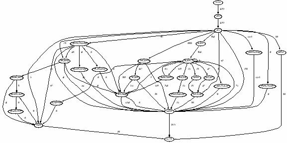
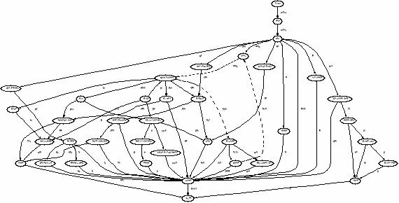
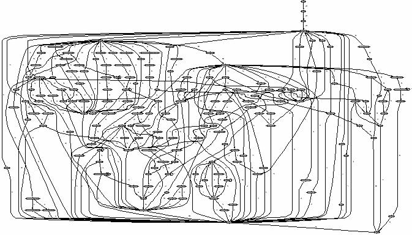
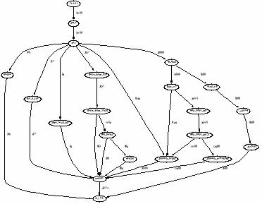
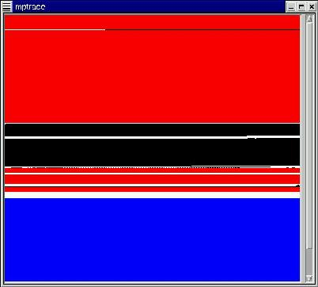

Table of Contents
Node:Top,
Next:Foreword,
Up:(dir)
mpatrol
This document describes mpatrol, a library for controlling and tracing dynamic
memory allocations.
This is edition 2.13 of the mpatrol manual for version
1.4.8, 8th January, 2002.
Node:Foreword,
Next:Overview,
Previous:Top,
Up:Top
Foreword
I first started writing this library a few years ago when the company I work for
sent me out to a customer who had reported a memory leak, which he expected was
coming from the code generated by our C++ compiler. A few years on and the
library has changed dramatically from its first beginnings, but I thought I'd
release it publicly in case anyone else found it useful.
When writing the library, I placed more emphasis on the quantity and quality of
information about allocated memory rather than the speed and efficiency of
allocating the actual memory. This means that the library will use dramatically
more memory than normal dynamic memory allocation libraries and can slow down to
a crawl depending on which options you use. However, the end results are likely
to be accurate and reliable, and in most cases the library will run quite
happily at a sane speed.
The mpatrol library is by no means the only library of its kind. Solaris has
no less that 6 different malloc libraries, and there are plenty available as
freeware or as commercial products. Try to keep in mind that mpatrol comes with
absolutely no warranty and so if it doesn't work for you and you need a fast
solution, try some of the other libraries or products available. I have listed
some of the most popular at the end of this manual (see Related software).
This manual is arranged so that complete reference material on the mpatrol
library can be found in the appendices, while introductory and background
material can be found in the preceding chapters and sections. For readers who
wish to delve right in and use the library, the Installation
(see Installation) and Examples (see Examples) chapters should be enough
to get started in combination with the quick reference card. Otherwise, this
manual should be read from beginning to end in order to get the most out of the
software it describes. Note that all of the output shown from the examples was
produced on 32-bit environments, although mpatrol can be built to support 64-bit
environments as well.
Due to their very nature, problems with dynamic memory allocations are
notoriously difficult to reproduce and debug, and this is likely to be the case
if you find a bug in the mpatrol library as it might be extremely hard to
reproduce on another system. Details on how to report bugs are given elsewhere
in this document (see Notes), but it would be very useful if you could try
to provide as much information as possible when reporting a problem, and that
includes having a look in the library source code to see if it's obvious what is
wrong. However, please try to read the frequently asked questions
(see Frequently asked questions) first in case your question or problem is
covered there since they are usually updated every time I receive a question
about mpatrol.
The latest version of the mpatrol library and this manual can always be found at
http://www.cbmamiga.demon.co.uk/mpatrol/, and any correspondence relating
to mpatrol (bug reports, enhancement requests, compliments, etc.) should be
sent to mpatrol@cbmamiga.demon.co.uk. I'd be very interested in
hearing any success stories with using mpatrol to debug programs, since I get
very little feedback apart from the occasional bug report. The mpatrol library
is also registered at FreshMeat (http://freshmeat.net/projects/mpatrol/)
and SourceForge (http://sourceforge.net/projects/mpatrol/) and several
other software sites so you can receive notification of updates there as well.
I normally only check my e-mail about once or twice a week, so don't expect an
immediate response. I can also be reached at graeme.roy@analog.com but
that is my work e-mail address. There is also a discussion group at
http://groups.yahoo.com/group/mpatrol/ where you can post mpatrol-related
questions but you must first subscribe to the group before you can send mail to
it.
Finally, I'd like to thank Stephan Springl (springl@bfw-online.de) for
his help on reading debugging information from object files via the GNU BFD
library, and Adam Zell (zell@best.com) for helping with patching the
dynamic linker support functions for loading shared libraries. Both Alexander
Barton (abarton@innotrac.com) and Dave Gibson
(david.gibson@analog.com) helped to make mpatrol thread-safe. Roger
Keane (rgr@bcs-inc.com) provided the perl code in the mpsym
command and also the idea for the MP_USE_ATEXIT feature macro. Steve
McIntyre (smcintyre@allstor-sw.co.uk) helped by diagnosing the
fork() problem and provided example code on how to fix it. Peter
Zijlstra (peter@xlnt-software.com) contributed code to enhance stack
traces for errors.
Boris Makushkin (oberon@antibiotic.ru) requested, helped with, and
provided initial testing for the FreeBSD port, and Ivan Finch
(i.finch@rl.ac.uk), Gerrit Bruchhaeuser
(gbruchhaeuser@orga.com) and Andreas Schallenberg
(andreas.schallenberg@informatik.uni-oldenburg.de) did the same for the
Tru64 and SuSE ports. Both Aleksandar Donev (donev@pa.msu.edu) and Van
Snyder (vsnyder@math.jpl.nasa.gov) provided suggestions and code for
using mpatrol with FORTRAN. Michael Anthony (m@xyzfind.com) wrote the
profdiff tool and Jerome Marant (jerome@debian.org) did the Debian
GNU/Linux port.
In addition, after spending well over 2000 hours designing and programming
mpatrol, my sanity would not have been preserved in the state it is in today
were it not for the music of The Chemical Brothers, The Manic Street Preachers,
Orbital and The Prodigy. You can now argue how sane I am depending on your
musical tastes!
Oh, and always remember to do final release builds without the mpatrol library
as the library is much slower than normal malloc implementations and uses much
more memory.
Happy debugging!
Graeme Roy, 11th October, 1999.
Edinburgh, Scotland.
Node:Overview,
Next:Features,
Previous:Foreword,
Up:Top
1 Overview
The mpatrol library is yet another link library that attempts to diagnose
run-time errors that are caused by the wrong use of dynamically allocated
memory. If you don't know what the malloc() function or operator
new[] do then this library is probably not for you. You have to have a certain
amount of programming expertise and a knowledge of how to run a command line
compiler and linker before you should attempt to use this.
Along with providing a comprehensive and configurable log of all dynamic memory
operations that occurred during the lifetime of a program, the mpatrol library
performs extensive checking to detect any misuse of dynamically allocated
memory. All of this functionality can be integrated into existing code through
the inclusion of a single header file at compile-time. On UNIX and Windows
platforms (and AmigaOS when using gcc) this may not even be necessary
as the mpatrol library can be linked with existing object files at link-time or,
on some platforms, even dynamically linked with existing programs at run-time.
All logging and tracing output from the mpatrol library is sent to a separate
log file in order to keep its diagnostics separate from any that the program
being tested might generate. A wide variety of library settings can also be
changed at run-time via an environment variable, thus removing the need to
recompile or relink in order to change the library's behaviour.
A file containing a summary of the memory allocation profiling statistics for a
particular program can be produced by the mpatrol library. This file can then
be read by a profiling tool which will display a set of tables based upon the
accumulated data. The profiling information includes summaries of all of the
memory allocations listed by size and the function that allocated them and a
list of memory leaks with the call stack of the allocating function. It also
includes a graph of all memory allocations listed in tabular form, and an
optional graph specification file for later processing by the dot
graph visualisation package.
A file containing a concise encoded trace of all memory allocations,
reallocations and deallocations made by a program can also be produced by the
mpatrol library. This file can then be read by a tracing tool which will decode
the trace and display the events in tabular or graphical form, and also display
any relevant statistics that could be calculated.
The mpatrol library has been designed with the intention of replacing calls to
existing C and C++ memory allocation functions as seamlessly as possible, but
in many cases that may not be possible and slight code modifications may be
required. However, a preprocessor macro containing the version of the mpatrol
library is provided for the purposes of conditional compilation so that release
builds and debug builds can be easily automated.
Node:Features,
Next:Installation,
Previous:Overview,
Up:Top
2 Features
An overall list of features contained in the mpatrol library is given below.
This is not intended to be exhaustive since the best way to see what the library
does is to read the documentation and try it out.
- Written for 32-bit and 64-bit UNIX, AmigaOS, Windows and Netware platforms.
Contains direct support for (and takes advantage of most of the features of)
AIX, DG/UX, DRS/NX, DYNIX/ptx, FreeBSD, HP/UX, IRIX, Linux, LynxOS, NetBSD,
OpenBSD, SINIX, Solaris, SunOS, Tru64 and UnixWare. Also contains
target-specific code to take advantage of Alpha, Intel 80x86, Motorola 680x0
and 88xx0, MIPS, HP PA/RISC, IBM RS/6000, PowerPC and SPARC processors.
- Has the ability to read symbols from executable files and shared libraries in
the
a.out, COFF, XCOFF, ELF32, ELF64 and Windows Portable Executable file
formats, and if the GNU BFD library is available then the mpatrol library can
read symbols from all of the file formats that it has support for as well. Can
also liase with AIX, BSD-based, HP/UX, IRIX, OSF, SVR4-based and Windows dynamic
linkers in order to find out information about shared libraries.
- Can be built to allocate memory from a fixed-sized static array rather than
using heap memory from the system.
- Can be built as archive, shared and/or thread-safe libraries on systems that
support them, or even as one large object file. A lint library can also be
built from the mpatrol library on UNIX platforms.
- A release version of the mpatrol library is provided, which has the same
functional interface, but does not contain any of mpatrol's debugging, tracing
or profiling features. It is intended to be used to quickly remove the mpatrol
library.
- Details of memory allocations and free memory are stored internally as a tree
structure for speed and also to allow the best fit allocation algorithm to be
used. This also enables the library to perform intelligent resizing of memory
allocations and can be used to quickly determine if an address has been
allocated on the heap.
- Contains 19 replacement C dynamic memory allocation functions:
malloc()
| ANSI
| Allocates memory.
|
calloc()
| ANSI
| Allocates zero-filled memory.
|
memalign()
| UNIX
| Allocates memory with a specified alignment.
|
valloc()
| UNIX
| Allocates page-aligned memory.
|
pvalloc()
| UNIX
| Allocates a number of pages.
|
alloca()
| old
| Allocates temporary memory.
|
strdup()
| UNIX
| Duplicates a string.
|
strndup()
| old
| Duplicates a string with a maximum length.
|
strsave()
| old
| Duplicates a string.
|
strnsave()
| old
| Duplicates a string with a maximum length.
|
strdupa()
| old
| Duplicates a string.
|
strndupa()
| old
| Duplicates a string with a maximum length.
|
realloc()
| ANSI
| Resizes memory.
|
reallocf()
| BSD
| Resizes memory and frees on failure.
|
recalloc()
| old
| Resizes memory allocated by calloc().
|
expand()
| old
| Resizes memory but does not relocate it.
|
free()
| ANSI
| Frees memory.
|
cfree()
| old
| Frees memory allocated by calloc().
|
dealloca()
| new
| Explicitly frees temporary memory.
|
- Contains 5 replacement C dynamic memory extension functions:
xmalloc()
| Allocates memory without failure.
|
xcalloc()
| Allocates zero-filled memory without failure.
|
xstrdup()
| Duplicates a string without failure.
|
xrealloc()
| Resizes memory without failure.
|
xfree()
| Frees memory.
|
- Contains 6 replacement C dynamic memory alternative functions:
MP_MALLOC()
| Allocates memory without failure.
|
MP_CALLOC()
| Allocates zero-filled memory without failure.
|
MP_STRDUP()
| Duplicates a string without failure.
|
MP_REALLOC()
| Resizes memory without failure.
|
MP_FREE()
| Frees memory.
|
MP_FAILURE()
| Sets the allocation failure handler.
|
- Contains 4 replacement C++ dynamic memory allocation operators (in both
throw and nothrow forms):
operator new
| Allocates memory.
|
operator new[]
| Allocates memory for an array.
|
operator delete
| Frees memory.
|
operator delete[]
| Frees memory allocated by operator new[].
|
- Contains 10 replacement C memory operation functions:
memset()
| ANSI
| Fills memory with a specific byte.
|
bzero()
| UNIX
| Fills memory with the zero byte.
|
memccpy()
| UNIX
| Copies memory up to a specific byte.
|
memcpy()
| ANSI
| Copies non-overlapping memory.
|
memmove()
| ANSI
| Copies possibly-overlapping memory.
|
bcopy()
| UNIX
| Copies possibly-overlapping memory.
|
memcmp()
| ANSI
| Compares two blocks of memory.
|
bcmp()
| UNIX
| Compares two blocks of memory.
|
memchr()
| ANSI
| Searches memory for a specific byte.
|
memmem()
| UNIX
| Searches memory for specific bytes.
|
- All of the above functions can also be defined with an additional underscore
prepended to their external name in order to catch all uses of these functions
in the system and third-party libraries.
- Contains support for a user-defined low-memory handler function, including a
replacement for the C++ function,
set_new_handler().
- The C++ dynamic memory allocation operators make use of the preprocessor in
order to obtain source-level information. If this causes problems then
replacement operator names may be used so that the existing operators will still
work.
- Contains support for automatically registering any functions whose names begin
with
__mp_init_ and __mp_fini_ to be called when the mpatrol
library is initialised and terminated respectively. A function is also provided
to register additional functions to be called when the mpatrol library
terminates.
- Contains support for user-defined prologue and epilogue callback functions,
which get called before and after every memory allocation, reallocation or
deallocation.
- A function is provided to return as much information as possible about a given
memory allocation or free block, and can be called at any time during program
execution. A similar function is also provided for calling from within a
debugger and an example command file is provided for use with
gdb.
- A function is provided to display library settings and heap usage statistics,
including peak memory usage. This information is also displayed at program
termination, and can also be placed into a data structure at run-time via
another function.
- The library reads any user-controllable options at run-time from an environment
variable, but this does not have to be set as defaults will then be used. This
prevents having to recompile anything in order to change any library settings.
An option exists to display a quick-reference summary of all of the recognised
options to the standard error file stream. Library settings can also be set and
read from within user code after the library has been initialised by calling two
internal functions.
- All diagnostics and logging are sent to a file in the current directory, but
this can be overridden, including forcing the log file to be the standard output
or standard error file streams. An environment variable specifying a default
directory in which to place log files can also be set.
- Options exist to log details of every memory allocation, reallocation or
deallocation when they occur. A function exists to log the details of any
memory allocation to the mpatrol log file.
- Options exist to halt the program at a specific memory allocation, reallocation
or deallocation when running the program within a debugger. These options have
no effect when running the program without a debugger.
- An option exists to enable memory allocation profiling, which forces a summary
of all memory allocation statistics to be written to a specified file for later
use by a profiling command. The profiling file can also be written at a
specified frequency. An environment variable specifying a default directory in
which to place profiling output files can also be set.
- A profiling command is provided which reads a profiling output file produced by
the mpatrol library and displays a set of tables based on the accumulated data.
The profiling information includes summaries of all of the memory allocations
listed by size and the function that allocated them and a list of memory leaks
with the call stack of the allocating function. It also includes a graph of all
memory allocations listed in tabular form, and an optional graph specification
file for later processing by the
dot graph visualisation package.
- An option exists to enable memory allocation tracing, which forces certain
details for every memory allocation event to be written to a specified file for
later use by a tracing command. The tracing file is written in a concise
encoded form so as to keep the size of the file down. An environment variable
specifying a default directory in which to place tracing output files can also
be set.
- A tracing command is provided which reads a tracing output file produced by the
mpatrol library and displays the memory allocation events in tabular or
graphical form. It also displays any relevant statistics that could be
calculated, and has options to write out the trace in HATF format or write out
a trace-driven memory allocation simulation program as C source code.
- On UNIX platforms, the
mmap() function can optionally be used to allocate
user memory instead of the sbrk() function, but only if the system
supports it. If mmap() is supported then internal mpatrol library memory
is normally allocated with this function in order to segregate it from user
memory but this behaviour can be swapped around.
- On non-UNIX platforms where the mpatrol library overrides
malloc()
without requiring the inclusion of mpatrol.h, versions of the UNIX
functions brk() and sbrk() are provided for compatibility with
certain libraries. These should not be called by user code as they have
only limited functionality.
- All newly-allocated memory that is not allocated by the
calloc() or
recalloc() functions will be pre-filled with a non-zero value in order to
catch out programs that wrongly assume that all newly-allocated memory is
zeroed. This value can be modified at run-time.
- Can automatically check to see if there have been any illegal writes to bytes
located just before and after every memory allocation through the use of
overflow buffers. The size of such overflow buffers and the value to pre-fill
them with can be modified at run-time. The checks will be performed before
every memory allocation call to ensure that nothing has overwritten the
overflow buffers, but a function is also provided to perform additional checks
under the programmer's control and an option exists to specify a range and
frequency in which checks will be performed.
- On systems that support them, watch point areas can be used instead of overflow
buffers so that every read and write to memory is checked to ensure that it is
not within an overflow buffer.
- Supports the
-fcheck-memory-usage option of gcc to check all
heap memory accesses in programs that were compiled with that option. Currently
this only supports checking that memory accesses do not overflow heap
allocations or access free memory, rather than keeping records of individual
memory accesses that GNU Checker does.
- Can automatically check to see if there have been any illegal writes to free
memory blocks. The value to pre-fill free memory blocks with can be modified
at run-time. The check will be performed before every memory allocation call
to ensure that nothing has overwritten the free memory block, but a function is
also provided to perform additional checks under the programmer's control and
an option exists to specify a range in which checks will be performed.
- On systems that support memory protection, every memory allocation can
optionally be allocated at least one page of memory. That way, any free memory
blocks can be made read and write protected so that nothing can access free
memory on the heap. An option is provided to specify whether all memory
allocations should be allocated at the start or at the end of such pages, and
the bytes left over within the pages become overflow buffers.
- All freed memory allocations can optionally be prevented from being returned to
the free memory pool. This is useful for detecting if use is being made of
freed memory just after a memory allocation has been freed. The contents of
the memory allocation can either be preserved or can be pre-filled with a value
in order to detect illegal writes to the freed memory allocation. In addition,
only a specified number of recently-freed memory allocations can be prevented
from being returned to the free memory pool. Any older freed memory allocations
will then eventually be reused.
- The
alloca(), strdupa() and strndupa() functions are
implemented so that the temporary stack-based allocations that they would
normally make are now temporary heap-based allocations that can be traced by
mpatrol. Such allocations will be implicitly freed when the function that
allocated them returns, but a function also exists to explicitly free them as
well.
- Calls to memory operation functions (such as
memset() or memcpy())
have their arguments checked to ensure that they do not pass null pointers or
attempt to read or write memory straddling the boundary of a previously
allocated memory block, although an option exists to turn such an error into a
warning so that the operation can still be performed. Tracing from all such
functions can also optionally be written to the log file.
- The internal data structures used by the library are kept separate from the
rest of the memory allocations. On systems that support memory protection, all
of these internal data structures will be write-protected in order to prevent
corruption by the calling program. This feature can be overridden at run-time
as it can slow the program down.
- Certain signals can be saved and restored on entry to each library function and
errno is set to ENOMEM if memory cannot be allocated, except for
the ANSI C++ operators which throw the std::bad_alloc exception instead.
- On systems that support memory protection, the library attempts to detect any
illegal memory accesses and display as much information as it can obtain about
the address in question and where the illegal memory access occurred.
- A call stack traceback from any function performing a memory allocation is
stored if the library supports this feature on the system it is being run on.
This information can then be displayed when information about a specific memory
allocation is required. Many different call stack traceback implementations are
provided for different platforms. A function is also provided to write the
current call stack to the mpatrol log file.
- Symbol table details from executable files and shared libraries are
automatically read on systems that support this feature in order to make the
call stack tracebacks more meaningful. An option also exists to display a
complete list of the symbols that were read by the library at program
termination. A function is also provided to return symbolic information about
any code address.
- Compiler-generated line number tables from any debugging sections that exist
in executable files and shared libraries can also be used by the mpatrol library
in order to provide more meaningful information in call stack tracebacks. An
external command is also provided to make use of a debugger to get such
information if one is available.
- If the library is unable to automatically determine a program's executable
filename to read symbols from then an option exists to specify the full path to
the program's executable file.
- Options are provided to edit and list a source file at a specific line number
when a warning or error occurs due to that source line. An external command
which provides this functionality outwith the mpatrol library is included, and
functions are provided to do this from within user code.
- An option exists to change the default alignment used for general-purpose memory
allocations.
- Contains support for a user-defined limit to available memory which can be
useful for stress-testing a program in simulated low memory conditions.
- Contains a feature to randomly fail a specific frequency of memory allocations
which can be useful for stress-testing error recovery code in a program.
- An option exists to display a complete memory map of the heap at program
termination. A function to do this is also available to call at any point
during program execution.
- A function is provided to take a snapshot of the heap at the current point in
execution. The value returned by this function can then be used to pinpoint
the differences in heap allocation details between that point and a later point
in the program.
- Functions are provided to iterate across all of the current heap allocations
and call a user-defined callback function for each one they find.
- A leak table is provided, which records a flat profile of memory allocation
behaviour between two points in a program and is keyed by source file location.
Memory allocation events can either be recorded in the leak table automatically
via a run-time option or the leak table can be manipulated through several
functions.
- Functions are provided to write user-defined information directly to the mpatrol
log file, as well as hexadecimal memory dumps of any memory location.
- Options exist to display all freed and unfreed memory allocations at program
termination in order to detect memory leaks, as well as all free memory blocks.
A separate program is also provided for locating memory leaks in unfinished log
files.
- An option exists to abort the program with a failure condition if there are more
than a specified number of unfreed memory allocations at program termination.
This could be useful for batch testing in order to check that all tests free up
most of their allocated memory.
- Memory allocations can be marked to indicate to the mpatrol library that
they should remain allocated for the lifetime of the program and should not be
freed or be listed as a memory leak.
- Functions always report if their arguments are illegal in order to pinpoint any
errors, and options exist to perform rigorous checking of arguments when
allocating, reallocating and freeing memory. In addition, checking is performed
to ensure that memory allocated by
operator new[] is not freed with
free() for example.
- The type of function performing a memory allocation is always stored along with
the allocation, as well as the file and line number it was called from. If
compiled with
gcc, the function name will also be stored and the
thread identifier will be stored if using the thread-safe library.
- The library uses a header file to redefine the memory allocation functions as
macros in order to obtain more information about where they were called from.
This is not strictly required on UNIX and Windows platforms (and AmigaOS when
using
gcc), since the library automatically redefines the default
system memory allocation functions. All redefinitions in the header can also
be disabled by defining the NDEBUG preprocessor macro, which also
disables the effect of calling any mpatrol library function.
- A command is supplied to run a program that was linked with the mpatrol library
with any specified options on the command line. On some UNIX platforms, an
option also exists to override the default memory allocation routines for any
dynamically-linked program that was not previously linked with the mpatrol
library.
- The mpatrol library can be built to liaise with Parasoft Inuse, a commercial
graphical memory usage tool that can display the current memory map of a running
process. Inuse is supplied with Parasoft Insure++.
- Comes with a library of tools that are built on top of the mpatrol library and
can be used to extend it for specific applications.
- An automake macro is provided to ease the integration of mpatrol into a new or
existing project.
- A small tool is provided to read a dictionary file and display all of the words
that can be represented in hexadecimal form. Such hexadecimal constants can be
used to initialise variables in user programs in order to aid debugging.
- The library and tools can be built using the GNU autoconf, automake and libtool
utilities. Build scripts are also supplied to build both installation packages
and binary distributions. A Linux Software Map file is also provided.
- A small test suite is provided in order to test basic features.
- User documentation is currently available in TeXinfo format as well as UNIX
manual pages and a quick reference card. The source code for the library and
tools can also be formatted for a printed manual.
Node:Installation,
Next:Integration,
Previous:Features,
Up:Top
3 Installation
The mpatrol library was initially developed on an Amiga 4000/040 running AmigaOS
3.1. I then installed Red Hat Linux 5.1 on my Amiga and added support for
Linux/m68k. I've now just recently purchased a Dell Inspiron 7500 Notebook PC
and put my Amiga in retirement, so development will now continue on Red Hat
Linux 6.2 and above on the Intel platform. I've tried my best to make it as
easy as possible to build and install mpatrol on any system, but it isn't
likely to run smoothly for everybody. However, there shouldn't be any major
problems if you perform the following steps.
Note that if you want to check the integrity of the files that came with the
mpatrol distribution you can use the CHECKSUMS file in the mpatrol
base directory. You must have the md5sum command installed on your
system in order to make use of this file.
If you wish to use GNU autoconf, automake and libtool to build and install
mpatrol you may do so by entering the pkg/auto directory and typing
./setup. This will construct the directory structure that is required
by these tools and will also create a configure script. Please see the
INSTALL file in that directory for information on how to proceed. Note
that you can clean up the pkg/auto directory by typing make
distclean (if the configure script has already been run) followed by
./cleanup.
For a manual installation, perform the following steps.
- Go into the
build directory and then into the appropriate subdirectory
for your system.
- Edit the
Makefile in that directory and check that it is using the
appropriate compiler and build tools. The CC macro specifies the
compiler1, the AR
macro specifies the tool used to build the archive library and the LD
macro specifies the tool to build the shared library. The CFLAGS macro
specifies compiler options that are always to be used, the OFLAGS macro
specifies optimisation options for the compiler, the SFLAGS macro
specifies options to be passed to the compiler when building a shared library
and the TFLAGS macro specifies options to be passed to the compiler when
building a thread-safe library. You may also need to change the library names
and library build commands on different systems.
Note that the generic UNIX Makefile contains a macro called GUISUP
which is set to false by default. If it is set to true then the
mptrace command will be built with GUI support enabled. However,
your system must contain the correct header files and libraries in order to
support this.
- Use the
make command (or equivalent) to build the mpatrol library in
archive form. The all target builds all possible combinations of the
mpatrol library for your system. The clean target removes all relevant
object files from the current directory, while the clobber target also
removes all libraries that have been built from the current directory. On some
UNIX platforms, the lint target will build a lint library for
the mpatrol library.
- If the mpatrol library is to be built with support for Parasoft Inuse then the
MP_INUSE_SUPPORT preprocessor macro must be defined in the
CFLAGS portion of the Makefile before building. This will ensure
that Inuse will be notified of every memory allocation, reallocation and
deallocation, but the Insure++ runtime library will also have to be linked in
with any program that uses mpatrol.
- Copy all of the libraries that have been built into your local library
directory. If there were symbolic links created in the
build directory
then these should be recreated in the local library directory rather than simply
copying them. You may need to run a command such as ldconfig in order
for the system to recognise the newly-installed libraries, and you may also need
to add the filename of the directory containing the newly-installed libraries to
an environment variable such as LD_LIBRARY_PATH if you installed the
libraries in a non-standard location.
- Copy the
mpatrol, mprof, mptrace and
mleak programs that have been built into your local bin directory.
You may also wish to copy the mpsym, mpedit and
hexwords commands to your local bin directory as well if your system
supports Bourne shell scripts.
- Go up two directory levels into the
src directory and copy the
mpatrol.h, mpalloc.h and mpdebug.h header files into your
local include directory.
- Go up one directory level into the
tools directory and copy all of the
header files into the mpatrol subdirectory (which you'll need to create)
in your local include directory.
- On UNIX platforms, go up one directory level into the
man directory and
copy the man1 and man3 subdirectories to your local man directory.
Unfortunately, the location for manual pages varies from system to system so you
may or may not also be able to copy the cat1 and cat3
subdirectories as well. The man* subdirectories contain the unformatted
manual pages while the cat* subdirectories contain the formatted manual
pages.
- Go up one directory level into the
doc directory and examine the files
located there. The mpatrol.texi file contains the TeXinfo source for
this manual and can be translated into a wide variety of documentation formats.
The refcard.tex file contains the LaTeX source for the quick reference
card and can be translated into formats suitable for printing onto a few pages.
There should already be translated files in the doc directory, but if not
you will have to generate them yourself using the Makefile provided. You
can then install or print these documents.
The mpatrol library source code can also be formatted for a printed manual for
later perusal. The source target in the Makefile within the
doc directory can be used to build the source code documentation in DVI,
postscript and PDF formats, but be prepared for a large number of pages!
If you are not installing on a system that supports UNIX manual pages then you
should also check in the man directory to ensure that there are
alternative formats for the mpatrol manual pages that you can install. If not,
you will have to generate them yourself using the Makefile provided.
Alternatively, the pkg directory contains files that can be used to
automatically generate a package in a specific format suitable for
installation on a system. Four package formats (PKG, SD/UX, RPM and Debian) and
three archive formats are currently supported (generic tape archive, LhA and
ZIP).
The first package format is generally used on UNIX SVR4 systems, while the
second is used on HP/UX systems. The RPM and Debian package formats were
introduced by Red Hat and Debian respectively for use in their Linux
distributions.
The generic tape archive can be used as a distribution for UNIX systems where no
package format is supported, but it does not contain information on how to
install the files on the system once they have been extracted from the
distribution. The LhA and ZIP formats are also roughly the same, but the LhA
format is intended for Amiga systems and is used for Aminet distributions, while
the ZIP format is intended for Windows systems and is used for WinSite
distributions.
You should really know what you are doing before you attempt to build a package,
and you should also be aware that some of the package files may need to be
modified before you begin.
In addition, a Linux Software Map index file exists in the pkg/lsm
directory.
Note that the extra directory that comes with the mpatrol distribution
contains several prototype configuration files for certain third-party programs.
These files should be examined so that you can decide whether to integrate their
contents into your existing configuration files. The purpose of each file is
described in the relevant sections of this manual.
Node:Integration,
Next:Memory allocations,
Previous:Installation,
Up:Top
4 Integration
This section describes how to go about adding or removing the mpatrol library
from your code. There are several levels for each category so it is worth
reading about each before proceeding.
Node:Adding mpatrol,
Next:Removing mpatrol,
Up:Integration
4.1 Adding mpatrol
The following steps should allow you to easily integrate the mpatrol library
into an existing application, although some of them may not be available to do
on many platforms. They are listed in the order of number of changes required
to modify existing code -- the last step will require a complete recompilation
of all your code.
- This step is currently only available on DYNIX/ptx, FreeBSD, IRIX, Linux,
NetBSD, OpenBSD, Solaris and Tru64 platforms and on DG/UX 4.20MU072 or later platforms with the
LD_PRELOAD
feature.
If your program or application has been dynamically linked with the system C
library (libc.so) or an alternative malloc shared library then you can
use the --dynamic option to the mpatrol command to override the
default definitions of malloc(), etc. at run-time without having to
relink your program. If your program is multithreaded then you must also add
the --threads option to pick up the multithreaded shared libraries
instead.
For example, if your program's executable file is called testprog and it
accepts an option specifying an input file, you can force the system's dynamic
linker to use mpatrol's versions of malloc(), etc. instead of the
default versions by typing:
mpatrol --dynamic ./testprog -i file
The resulting log file should be called mpatrol.<procid>.log by default
(where procid is the current process id), but if no such file exists after
running the mpatrol command then it will not be possible to force the
run-time linking of mpatrol functions to your program and you will have to
proceed to the next step. Note that the mpatrol command overrides
any previous setting of the MPATROL_OPTIONS environment variable.
- This step is currently only available on UNIX and Windows platforms (and AmigaOS
when using
gcc).
You should be able to link in the mpatrol library when linking your program
without having to recompile any of your object files or libraries, but this will
only be worthwhile on systems where stack tracebacks are supported, otherwise
you should proceed to the next step since there will not be enough information
for you to tell where the calls to dynamic memory allocation functions took
place.
Information on how to link the mpatrol library to an application is given at the
start of the examples (see Examples), but you should note that if your
program does not directly call any of the functions in the mpatrol library then
it will not be linked in and you will not see a log file being generated when
you run it. You can force the linking of the mpatrol library by causing
malloc() to be undefined on the link line, usually through the use of the
-u linker option.
If your program is multithreaded then you must use the thread-safe version of
the mpatrol library and possibly also link in the system threads library as
well. Not doing this will usually result in your program failing somewhere in
the mpatrol library code.
- All of the following steps will require you to recompile some or all of your
code so that your code calls dynamic memory allocation functions from the
mpatrol library rather than the system C library.
This first step is only available when using gcc.
You can make use of the gcc option -fcheck-memory-usage which
instructs the compiler to place calls to error-checking functions before each
access to memory. This can result in a dramatic slowdown of your code so you
may wish to limit the use of this option to a few source files, but it does
provide a very thorough method of ensuring that you do not access memory beyond
the bounds of a memory allocation or attempt to access free memory. However,
be aware that the checks are only placed in the bodies of functions that have
been compiled with this option and are missing from all functions that have not.
You must link in the mpatrol library when using this option, otherwise you will
get linker errors.
The -fcheck-memory-usage option was added to gcc to support
GNU Checker, which can be considered to be the run-time system for this option.
GNU Checker also includes the ability to detect reads from uninitialised memory,
something that mpatrol does not currently support, and deals with stack objects
as well. GNU Checker cannot be used in conjunction with mpatrol.
- For this step, if you have a rough idea of where the function calls lie that you
would like to trace or test, you need only recompile the relevant source files.
You should modify these source files to include the
mpatrol.h header file
before any calls to dynamic memory allocation or memory operation functions.
However, you should take particular care to ensure that all calls to memory
allocation functions in the mpatrol library will be matched by calls to memory
reallocation or deallocation functions in the mpatrol library, since if they are
unmatched then the log file will either fill up with errors complaining about
trying to free unknown allocations, or warnings about unfreed memory allocations
at the end of execution.
- This step requires you to recompile all of your source files to include the
mpatrol.h header file. Obviously, this will take the longest amount of
time to integrate, but need not require you to change any source files if the
compiler you are using has a command line option to include a specific header
file before any source files.
For example, gcc comes with a -include option which has this
feature, so if you had to recompile a source file called test.c then the
following command would allow you to include mpatrol.h without having
to modify the source file:
gcc -include /usr/local/include/mpatrol.h -c test.c
In all cases, it will be desirable to compile your source files with
compiler-generated debugging information since that may be able to be used by
the USEDEBUG option or the mpsym command. In addition, more
symbolic information will be available if the executable files have not had
their symbol tables stripped from them, although mpatrol can also fall back to
using the dynamic symbol table from dynamically linked executable files.
Note that an automake macro is now provided to allow you to integrate mpatrol
into a new or existing project that uses the GNU autoconf and automake tools.
It is located in extra/mpatrol.m4, which should be copied to the
directory containing all of the local autoconf and automake macros on your
system, usually /usr/local/share/aclocal. The automake macro it defines
is called AM_WITH_MPATROL, which should be added to the libraries section
in the configure.in file for your project. It takes one optional
parameter specifying whether mpatrol should be included in the project
(yes) or not (no). This can also be specified as threads
if you wish to use the threadsafe version of the mpatrol library. You can
override the value of the optional parameter with the --with-mpatrol
option to the resulting configure shell script.
If you are using the AM_WITH_MPATROL automake macro then you may wish to
use the mpdebug.h header file instead of mpatrol.h. This ensures
that the MP_MALLOC() family of functions are always defined, even if
libmpatrol or libmpalloc are unavailable. It makes use of the
HAVE_MPATROL and HAVE_MPALLOC preprocessor macros that are
controlled by the automake macro, but in other respects behaves in exactly the
same way as mpatrol.h.
Node:Removing mpatrol,
Previous:Adding mpatrol,
Up:Integration
4.2 Removing mpatrol
Once you have ironed out all of the problems in your code with the help of the
mpatrol library, there will come a time where you wish to build your program
without any of its debugging features, either to improve the speed that it runs
at, or perhaps even for a release. Choose one of the following steps to help
you remove the mpatrol library from your program (you only need to perform them
if you linked your program with the mpatrol library).
- The quickest way to remove the mpatrol library from your application is to
link with libmpalloc instead of libmpatrol. This contains replacements for all
of the mpatrol library functions, either implementing memory allocation or
memory operation functions with the system C library, or doing nothing in the
functions which perform debugging, profiling or tracing. This method is a very
quick way to remove the mpatrol library but will not result in very efficient
code.
- The next option is to recompile all of the source files which include the
mpatrol.h header file, but this time define the NDEBUG
preprocessor macro. This automatically disables the redefinition of
malloc(), etc. and prevents calls being made to any mpatrol library
functions. Obviously, this option is the most time-consuming of the two, but
will result in the complete removal of all references to the mpatrol library.
- The final option is to guard all of the mpatrol-specific code in your program
with a preprocessor macro, possibly called
HAVE_MPATROL, and then
recompiling all of your source code with this macro undefined. This is the best
option but relies on you having originally made these changes when you first
started integrating the mpatrol library into your program.
Note that if you used the AM_WITH_MPATROL automake macro as detailed in
the previous section to build your application then you should perform a clean
recompilation using the --without-mpatrol option to the
configure shell script in order to completely remove the mpatrol library.
Note also that if you used the -fcheck-memory-usage option of the GNU
compiler to check all memory accesses then you must recompile without that
option in order for your program to run at a reasonable speed.
Node:Memory allocations,
Next:Operating system support,
Previous:Integration,
Up:Top
5 Memory allocations
In the C and C++ programming languages there are generally three different types
of memory allocation that can be used to hold the contents of variables. Other
programming languages such as Pascal, BASIC and FORTRAN also support some of
these types of allocation, although their implementations may be slightly
different.
Node:Static memory allocations,
Next:Stack memory allocations,
Up:Memory allocations
5.1 Static memory allocations
The first type of memory allocation is known as a static memory
allocation, which corresponds to file scope variables and local static
variables. The addresses and sizes of these allocations are fixed at the time
of compilation3 and so they can be
placed in a fixed-sized data area which then corresponds to a section within the
final linked executable file. Such memory allocations are called static because
they do not vary in location or size during the lifetime of the program.
There can be many types of data sections within an executable file; the three
most common are normal data, BSS data and read-only data. BSS data contains
variables and arrays which are to be initialised to zero at run-time and so is
treated as a special case, since the actual contents of the section need not be
stored in the executable file. Read-only data consists of constant variables
and arrays whose contents are guaranteed not to change when a program is being
run. For example, on a typical SVR4 UNIX system the following variable
definitions would result in them being placed in the following sections:
int a; /* BSS data */
int b = 1; /* normal data */
const int c = 2; /* read-only data */
In C the first example would be considered a tentative declaration, and
if there was no subsequent definition of that variable in the current
translation unit then it would become a common variable in the resulting
object file. When the object file gets linked with other object files, any
common variables with the same name become one variable, or take their
definition from a non-tentative definition of that variable. In the former
case, the variable is placed in the BSS section. Note that C++ has no support
for tentative declarations.
As all static memory allocations have sizes and address offsets that are known
at compile-time and are explicitly initialised, there is very little that can go
wrong with them. Data can be read or written past the end of such variables,
but that is a common problem with all memory allocations and is generally easy
to locate in that case. On systems that separate read-only data from normal
data, writing to a read-only variable can be quickly diagnosed at run-time.
Node:Stack memory allocations,
Next:Dynamic memory allocations,
Previous:Static memory allocations,
Up:Memory allocations
5.2 Stack memory allocations
The second type of memory allocation is known as a stack memory
allocation, which corresponds to non-static local variables and call-by-value
parameter variables. The sizes of these allocations are fixed at the time of
compilation but their addresses will vary depending on when the function which
defines them is called. Their contents are not immediately initialised, and
must be explicitly initialised by the programmer upon entry to the function or
when they become visible in scope.
Such memory allocations are placed in a system memory area called the
stack, which is allocated per process4 and generally grows down in memory. When a function is called, the
state of the calling function must be preserved so that when the called function
returns, the calling function can resume execution. That state is stored on the
stack, including all local variables and parameters. The compiler generates
code to increase the size of the stack upon entry to a function, and decrease
the size of the stack upon exit from a function, as well as saving and restoring
the values of registers.
There are a few common problems using stack memory allocations, and most
generally involve uninitialised variables, which a good compiler can usually
diagnose at compile-time. Some compilers also have options to initialise all
local variables with a bit pattern so that uninitialised stack variables will
cause program faults at run-time. As with static memory allocations, there can
be problems with reading or writing past the end of stack variables, but as
their sizes are fixed these can usually easily be located.
Node:Dynamic memory allocations,
Previous:Stack memory allocations,
Up:Memory allocations
5.3 Dynamic memory allocations
The last type of memory allocation is known as a dynamic memory
allocation, which corresponds to memory allocated via malloc() or
operator new[]. The sizes, addresses and contents of such memory vary
at run-time and so can cause a lot of problems when trying to diagnose a fault
in a program. These memory allocations are called dynamic memory allocations
because their location and size can vary throughout the lifetime of a program.
Such memory allocations are placed in a system memory area called the
heap, which is allocated per process on some systems, but on others may
be allocated directly from the system in scattered blocks. Unlike memory
allocated on the stack, memory allocated on the heap is not freed when a
function or scope is exited and so must be explicitly freed by the programmer.
The pattern of allocations and deallocations is not guaranteed to be (and is not
really expected to be) linear and so the functions that allocate memory from the
heap must be able to efficiently reuse freed memory and resize existing
allocated memory on request. In some programming languages there is support for
a garbage collector, which attempts to automatically free memory that has
had all references to it removed, but this has traditionally not been very
popular for programming languages such as C and C++, and has been more widely
used in functional languages like ML5.
Because dynamic memory allocations are performed at run-time rather than
compile-time, they are outwith the domain of the compiler and must be
implemented in a run-time package, usually as a set of functions within a
linker library. Such a package manages the heap in such a way as to abstract
its underlying structure from the programmer, providing a common interface to
heap management on different systems. However, this malloc library must
decide whether to implement a fast memory allocator, a space-conserving memory
allocator, or a bit of both. It must also try to keep its own internal tables
to a minimum so as to conserve memory, but this means that it has very little
capability to diagnose errors if any occur.
In some compiler implementations there is a builtin function called
alloca(). This is a dynamic memory allocation function that allocates
memory from the stack rather than the heap, and so the memory is automatically
freed when the function that called it returns. This is a non-standard feature
that is not guaranteed to be present in a compiler, and indeed may not be
possible to implement on some systems6. However,
the mpatrol library provides a debugging version of this function (and a few
other related functions) on all systems, so that they make use of the heap
instead of the stack.
As can be seen from the above paragraphs, dynamic memory allocations are the
types of memory allocations that can cause the most problems in a program since
almost nothing about them can be used by the compiler to give the programmer
useful warnings about using uninitialised variables, using freed memory, running
off the end of a dynamically-allocated array, etc. It is these types of memory
allocation problems that the mpatrol library loves to get its teeth into!
Node:Operating system support,
Next:Using mpatrol,
Previous:Memory allocations,
Up:Top
6 Operating system support
Beneath every malloc library's public interface there is the underlying
operating system's memory management interface. This provides features which
can be as simple as giving processes the ability to allocate a new block of
memory for themselves, or it can offer advanced features such as protecting
areas of memory from being read or written. Some embedded systems have no
operating systems and hence no support for dynamic memory allocation, and so the
malloc library must instead allocate blocks of memory from a fixed-sized array.
The mpatrol library can be built to support all of the above types of system,
but the more features an operating system can provide it with, the more it can
do.
On operating systems such as UNIX and Windows, all dynamic memory allocation
requests from a process are dealt with by using a feature called virtual
memory. This means that a process cannot perform illegal requests without
them being denied, which protects the other running processes and the operating
system from being affected by such errors. However, on AmigaOS and Netware
platforms there is no virtual memory support and so all processes effectively
share the same address space as the operating system and any other running
processes. This means that one process can accidentally write into the data
structures of another process, usually causing the other process to fail and
bring down the system. In addition, a process which allocates a lot of memory
will result in there being less available memory for other running processes,
and in extreme cases the operating system itself.
Node:Virtual memory,
Next:Call stacks and symbol tables,
Up:Operating system support
6.1 Virtual memory
Virtual memory is an operating system feature that was originally used to
provide large usable address spaces for every process on machines that had very
little physical memory. It is used by an operating system to
fool7 a running process into believing that it can
allocate a vast amount of memory for its own purposes, although whether it is
allowed to or not depends on the operating system and the permissions of the
individual user.
Virtual memory works by translating a virtual address (which the process uses)
into a physical address (which the operating system uses). It is generally
implemented via a piece of hardware called a memory management unit, or
MMU. The MMU's primary job is to translate any virtual addresses that are
referred to by machine instructions into physical addresses by looking up a
table which is built by the operating system. This table contains mappings to
and from pages8 rather than bytes since it
would otherwise be very inefficient to handle mappings between individual bytes.
As a result, every virtual memory operation operates on pages, which are
indivisible and are always aligned to the system page size.
Even though each process can now see a huge address space, what happens when it
attempts to allocate more pages than actually physically exist, or allocate an
additional page of memory when all of the physical pages are in use by it and
other processes? This problem is solved by the operating system temporarily
saving one or more of the least-used pages (which might not necessarily belong
that that process) to a special place in the file system called a swap
file, and mapping the new pages to the physical addresses where the old pages
once resided. The old pages which have been swapped out are no longer
currently accessible, but their location in the swap file is noted in the
translation table.
However, if one of the pages that has been swapped out is accessed again, a
page fault occurs at the instruction which referred to the address and
the operating system catches this and reloads the page from the swap file,
possibly having to swap out another page to make space for the new one. If this
occurs too often then the operating system can slow down, having to constantly
swap in and swap out the same pages over and over again. Such a problem is
called thrashing and can only really be overcome by using less virtual
memory or buying more physical memory.
It is also possible to take advantage of the virtual memory system's
interaction between physical memory and the file system in program code, since
mapping an existing file to memory means that the usual file I/O operations can
be replaced with memory read and write operations. The operating system will
work out the optimum way to read and write any buffers and it means that only
one copy of the file exists in both physical memory and the file system. Note
that this is how shared libraries9
on UNIX platforms are generally implemented, with each individual process that
uses the shared library having it mapped to somewhere in its address space.
Another major feature of virtual memory is its ability to read protect and write
protect individual pages of process memory. This means that the operating
system can control access to different parts of the address space for each
process, and also means that a process can read and/or write protect an area of
memory when it wants to ensure that it won't ever read or write to it again. If
an illegal memory access is detected then a signal will be sent to the
process, which can either be caught and handled or will otherwise terminate the
process. Note that as with all virtual memory operations, this ability to
protect memory only applies to pages, so that it is not possible to protect
individual bytes.
However, some versions of UNIX have programmable software watch points
which are implemented at operating system level. These are normally used by
debuggers to watch a specified area of memory that is expected to be read from
or written to, but can just as easily be used to implement memory protection at
byte level. Unfortunately, as this feature is implemented in
software10 rather
than in hardware, watch points tend to be incredibly slow, mainly as a result of
the operating system having to check every instruction before it is executed.
In addition, some UNIX platforms only allow a certain number of software watch
points to be in use at any one time, so even if your system supports them you
may not be able to use them with the mpatrol library if there are many memory
allocations in use at one time.
There is also an additional problem when using watch points, which is due to
misaligned reads from memory. These can occur with compiler-generated code or
with optimised library routines where memory read, move or write operations have
been optimised to work at word level rather than byte level. For example, the
memcpy() function would normally be written to copy memory a byte at a
time, but on some systems this can be improved by copying a word at a time.
Unfortunately, care has to be taken when reading and writing such words as the
equivalent bytes may not be aligned on word boundaries. Technically, reading
additional bytes before or after a memory allocation when they share the same
word is legal, but when using watch points such errors will be picked up. The
mpatrol library replaces most of the memory operation functions provided by the
system libraries with safer versions, although they may not be as efficient.
An operating system with virtual memory is usually going to run ever so slightly
slower than an operating system without it11, but the advantages of virtual memory far
outweigh the disadvantages, especially when used for debugging purposes.
Node:Call stacks and symbol tables,
Next:Threads,
Previous:Virtual memory,
Up:Operating system support
6.2 Call stacks and symbol tables
As stated in the section on stack memory allocations (see Stack memory allocations), when a function is called, a copy of the caller's state
information (including local variables and registers) is saved on the stack so
that it can be restored when the called function returns. On many operating
systems there is a calling convention12 which defines the layout of such
stack entries so that code compiled in different languages and with different
compilers can be intermixed. This usually specifies at which stack offsets the
stack pointer, program counter and local variables for the calling function can
be found, although on some processor architectures the function calling
conventions are specified by the hardware and so the operating system must use
these instead.
On systems that have consistent calling conventions, it is usually possible to
perform call stack tracebacks from within the current function in order
to determine the stack of function calls that led to the current function. This
is extremely useful for debugging purposes and is done by examining the current
stack frame to see if there is a pointer to the previous stack frame. If there
is, then it can be followed to find out all of the state information about the
calling function. This can be repeated until there are no more stack
frames13.
This is generally how this information is determined by debuggers when a call
stack traceback is requested.
In addition to the pointer to the previous stack frame, the saved state
information also always contains the saved program counter register, which
contains either the address of the instruction that performed the function call,
or the address of the instruction at which to continue execution when the
called function returns14.
This information can be used to identify which function performed the call,
since the address of the instruction must lie between the start and end of one
of the functions in the process.
There are several different ways to perform stack unwinding. The first requires
compiler support and uses builtin functions to determine the next stack frame
and the return address. The GNU C compiler, gcc, supports this but
unfortunately the number of stack frames to traverse must be known at
compile-time rather than run-time. The second method requires operating system
support, with a library of routines provided to perform call stack traversal.
Unfortunately, such routines can be quite time consuming and may require a lot
of resources, but on the other hand they are likely to be very reliable at
obtaining the necessary information. The mpatrol library can be built to
support either of these methods, with the MP_BUILTINSTACK_SUPPORT and
the MP_LIBRARYSTACK_SUPPORT preprocessor macros.
A third way to perform stack unwinding involves reading (or effectively
disassembling) the instructions that are being executed in order to determine
the size of the stack frame being used and the address of the instruction at
which execution will resume when the function returns. This can also be quite
a reliable method of obtaining call stack information but is only likely to be
feasible on a processor architecture which has a very simple instruction set,
such as a RISC15 architecture. MIPS
processors are a good example of this.
The final method of stack unwinding requires that the frame pointer and return
address are both stored on the stack whenever a new function is called. The
chain of frame pointers can then be followed down the stack, and the return
addresses can be read at a given offset from the frame pointers. This is
usually possible with CISC16 processor
architectures that have dedicated call instructions which automatically save
such information on the stack, although some RISC processors also save these as
well. However, inline functions and compiler optimisations can sometimes result
in the frame pointer being omitted, usually resulting in an inability to walk
the stack.
However, in order to determine this symbolic information, it must be possible to
find out where the start and end addresses of all of the functions in the
process are. This can usually only be read from object files, since they
contain the symbol tables that were used by the linker to generate the final
executable file for the program. The object file's symbol tables normally
contain information about the start address, size, name and visibility of every
symbol that was defined, but this depends on the format of the object file and
if the symbol tables have been stripped from the final executable file.
If the object file was created by a compiler then it may also contain debugging
information that was generated by the compiler for use with a debugger. Such
information may include a mapping of code addresses to source
lines17, and this information
can be used by the mpatrol library to provide more meaningful information in
call stack tracebacks.
On systems that support shared libraries, additional work must be done to
determine the symbolic information for all of the functions which have been
defined in them. The symbols for functions that are defined in shared libraries
normally appear as undefined symbols in the executable file for the program and
so must be searched in the system in order to get the necessary information. It
is usually necessary to liaise with the dynamic linker18 on many systems.
Node:Threads,
Previous:Call stacks and symbol tables,
Up:Operating system support
6.3 Threads
On systems with virtual memory, such as UNIX and Windows, user programs are run
as processes which have their own address space and resources. If a
process needs to create sub-processes to perform other tasks it must call
fork() or spawn() to create new processes, but these new processes
do not share the same address space or resources as the parent process. If
processes need to share memory they must either use a message passing interface
or explicitly mark a range of memory as shareable.
Traditionally, this was not too much of a handicap as parallel processing was
an expensive luxury and could only be made use of by the kernel of such systems.
However, with the birth of fast processors and parallel programming, programs
could be made to run more efficiently and faster on multi-processor systems by
having more than one thread of control. This was achieved by allowing
processes to have more than one program counter through which the processor
could execute instructions, and if one thread of control stalled for a
particular reason then another could continue without stalling the entire
process.
Such multithreaded programs allow parallel programming and implicit shared
memory between threads since all threads in a process share the same address
space and resources. This is similar to operating systems that have no
virtual memory, such as AmigaOS and Netware19, except
that once a process terminates, all threads terminate as well and all of its
resources are still reclaimed.
Multithreaded programming generally needs no compiler support, but does require
some primitive operations to be supported by the operating system for a threads
library to call. The functions that are available in the threads library
provide the means for a process to create and destroy threads. There are
currently several popular threads libraries available, although the POSIX
threads standard remains the definitive implementation.
It is always important to remember when programming a multithreaded application
that because all threads in a process share the same address space, measures
must be taken to prevent threads reading and writing global data in a haphazard
fashion. This can either be done by locking with semaphores and mutexes, or can
be performed by using stack variables instead of global variables since every
thread has its own local stack. Care must be taken to write re-entrant
functions -- i.e. a function will give exactly the same result with one
thread as it will with multiple threads running it at the same time.
The mpatrol library can be built as a thread-safe library with support for
multi-threaded programs. When this library is linked with your program, only
one thread at a time can allocate, reallocate or deallocate dynamic memory, or
perform a memory operation via memcpy(), memset(), etc. This does
not take full advantage of the potential concurrency in the library, but at
least it will allow the debugging of multi-threaded programs.
The process of making the mpatrol library thread-safe was made more complicated
by the fact that the mutexes protecting the library's data structures had to be
recursive, since some of the functions that the library will call may call
malloc() and free() or any other functions redefined by the
library. If this was to happen with non-recursive mutexes then the recursive
call would result in the thread attempting to lock a mutex that it already
owned. However, implementing recursive mutexes was only half the problem.
The other problem with writing a thread-safe malloc library is that it must be
initialised before the program becomes multi-threaded. If the library is
initialised when there are multiple threads running then one thread may be
attempting to initialise the mutexes whilst another thread may be attempting
to lock an uninitialised mutex. Ideally, the best place to initialise the
library would be at the start of main() but there is currently no way
to do this other than getting users to explicitly plant calls to initialise the
library in their code. This is not a very satisfactory solution if all we want
to do is link in the replacement malloc library without any need for
recompilation.
Fortunately, there are some ways to plant initialisation calls before
main() is called, but they all have some drawbacks. The first way is to
use a static file-scope constructor in C++, which will then initialise the
mutexes and the library data structures before the code in main() is
executed. However, on many systems this will require the final link to be
performed by the C++ compiler that built the library. That may not be desirable
or even possible in many cases. Unfortunately, this drawback appears in the
second method, which involves using the GNU C compiler to compile the library.
This compiler has an extension which allows functions to be specified as
constructors which will be called before main(), but means that any
program which is linked with the resulting library must be linked with the GNU C
compiler driver. However, many systems are now GNU-based which would mean that
this would happen anyway.
The final way of initialising the mutexes and the library data structures is to
plant a call to the initialisation routines from a special section which the
system will call before main() is called. This section is called the
.init section on ELF-based platforms, but may exist in another form on
other platforms too. This has the advantage that the system linker can be used
to link the final program, but a possible disadvantage is that the library may
be initialised too early, possibly before the environment or file streams have
been set up. You may find that if one of the above methods does not work for
you then perhaps another one will.
Node:Using mpatrol,
Next:Tools,
Previous:Operating system support,
Up:Top
7 Using mpatrol
This chapter contains a general description of all of the features of mpatrol
and how to use them effectively. You'll also find a complete reference for
mpatrol in the appendices, but you may wish to try out the examples
(see Examples) and the tutorial (see Tutorial) before reading further.
Node:Library behaviour,
Next:Logging and tracing,
Up:Using mpatrol
7.1 Library behaviour
Most of the behaviour of the mpatrol library can be controlled at run-time via
options which are read from the MPATROL_OPTIONS environment variable.
This prevents you having to recompile or relink each time you want to change a
library setting, and so makes it really easy to try out different settings to
locate a particular bug. You should know how to set the value of an environment
variable on your system before you read on.
By default, the mpatrol library will attempt to determine the minimum required
alignment for any generic memory allocation when it first initialises itself.
This may be affected by the compiler and its settings when the library was built
but it should normally reflect the minimum alignment required by the processor
on your system. If you would prefer a larger (or perhaps even smaller) default
alignment you may change it at run-time using the DEFALIGN option. The
value you supply must be in bytes, must be a power of two, and should not be
larger that the system page size. If you encounter bus errors due to misaligned
memory accesses then you should increase this value.
On systems that have virtual memory the library will attempt to write-protect
all of its internal structures when user code is being run. This ensures that
it is nearly impossible for a program to corrupt any mpatrol library data.
However, unprotecting and then protecting the structures at every library call
has a slight overhead so you may prefer to disable this behaviour by using the
NOPROTECT option. This has no effect on systems that have no virtual
memory.
Usually it is desirable for many system library routines to be protected from
being interrupted by certain signals since they may themselves be called from
signal handlers. If this is not the case then it may be possible to interrupt
the program from within such routines, perhaps causing problems if their global
variables are left in an undefined state. As the mpatrol library replaces some
of these system library routines it is also possible to specify that they are
protected from certain interrupt signals using the SAFESIGNALS option.
However, this can sometimes result in it being hard to interrupt the program
from the keyboard if a lot of processor time is spent in mpatrol routines,
which is why this behaviour is disabled by default20.
On UNIX platforms, the fork() function can cause problems if it is used
to make a copy of the parent process without immediately calling one of the
exec() family of functions. This is because the child process inherits
all of the memory allocations of the parent process, but also inherits the log,
profile and trace files as well. If both the parent and child processes make
subsequent memory allocations there will be multiple entries with the same
allocation indices written to the log, profile or trace files. This can be
most confusing when processing these files afterwards! As a workaround, the
mpatrol library will always check the current process identifier every time one
of its functions is called if the CHECKFORK option is used and will
open new log, profile or trace files if it has determined that the process has
been forked. If the CHECKFORK option is not used then a call to
__mp_reinit() should be added as the first function call in the child
process in order to duplicate the behaviour of the CHECKFORK option.
On UNIX systems, the usual way for malloc libraries to allocate memory from the
process heap is through the sbrk() system call. This allocates memory
from a contiguous heap, but has the disadvantage in that other library functions
may also allocate memory using the same function, thus creating holes in the
heap. This is not a problem for mpatrol, but you may have a suspicion that your
bug is due to a function from another library corrupting your data so you may
wish to use the USEMMAP option. This is only available on systems that
have the mmap() system call and allows mpatrol to allocate all of its
memory from a part of the process heap that is non-contiguous (i.e. each call
to mmap() may return a block of memory that is completely unrelated to
that returned by the previous call). It may also be required on some systems in
order for the mpatrol library to implement memory protection.
Beginning with release 1.3.3, the mpatrol library now allocates its internal
memory in the opposite way to user memory on UNIX systems that support the
mmap() system call. This means that by default, user memory is allocated
with sbrk() whereas internal memory is allocated with mmap(), and
this behaviour is reversed when the USEMMAP option is used. This was
done to segregate user memory from internal memory, and was especially required
for the mptrace command's graphical display.
The CHECK option allows you to specify that every time an mpatrol
library function is called the library will automatically check the freed memory
and overflow buffers of every memory allocation, although this can slow program
execution down, especially if you suspect the error you are looking for occurs
at the 1000th memory allocation, for example. You can therefore use the
CHECK option to specify a range of memory allocations at which the
mpatrol library will automatically check the freed memory and overflow buffers.
All other allocations that fall outside this range will not be checked. You can
also specify an optional frequency at which this checking should be performed.
No such checking is performed by default in mpatrol release 1.4.0 and onwards
-- you must specify CHECK=- to get the original behaviour.
On UNIX systems, the mpatrol library can also invoke the mpedit
command to edit source files that show up in any warnings or error messages that
it generates. This can only happen if the diagnostic message can be traced back
to a specific source line in the program; in many cases this is not possible.
If editing the files is not required, a context listing of the appropriate
source line can be generated instead. The EDIT option specifies that
files are to be edited and the LIST option specifies that a context
listing is to be generated. These options are mutually exclusive.
If the mpatrol library that was built for your system supports reading symbolic
information from a program's executable file, but it cannot locate the
executable file, or you wish to specify an alternative, you can use the
PROGFILE option to do this. All this does is instruct the mpatrol
library to read symbols from this file instead. Note that on systems that
support dynamic linking, the library can also read symbols from a dynamically
linked executable file that has had its normal symbol table stripped.
Finally, a list of all of the recognised options in the mpatrol library can be
displayed to the standard error file stream by using the HELP option.
This will not affect the settings of the library in any way, so you should be
able to use other options at the same time.
Node:Logging and tracing,
Next:General errors,
Previous:Library behaviour,
Up:Using mpatrol
7.2 Logging and tracing
If you would like to see a complete log of all of the memory allocations,
reallocations and deallocations performed by your program, use the
LOGALL option. This provides detailed tracing for each of the mpatrol
library functions, and a full description of the format of such tracing is given
in Example 1 (see Example 1). Alternatively, you may select one or more
types of functions to be traced using the LOGALLOCS,
LOGREALLOCS, LOGFREES and LOGMEMORY options if you
feel that the log file is too large when LOGALL is used. By default
all diagnostics from the mpatrol library get sent to mpatrol.log in the
current directory, but this can be changed using the LOGFILE option.
In fact, you can also specify a directory where all log files from the mpatrol
library will get placed by setting the LOGDIR environment variable.
On systems that support it, every log entry also contains a call stack
traceback that may also include the names of the symbols that appear on the
call stack. If the object file access library that mpatrol was built with has
support for reading line number tables from object files then the
USEDEBUG option will also try to determine the file name and line
number for each entry in the call stack, but only if the object files contain
the relevant debugging information. This information will only be available
before program termination and so any call stack tracebacks that appear after
the library summary will not be displayed with their corresponding file name
and line number. This option will also slow down program execution since a
search through the line number tables will have to be made every time a call
stack is displayed. Alternatively, the mpsym command may be used to
process an mpatrol log file with a debugger in order to obtain symbol names and
source level information for any call stacks.
Because the alloca(), strdupa() and strndupa() functions
automatically free their allocations when the calling function returns, the log
entries for these types of memory allocation are slightly different. The actual
memory allocation will have an entry similar to malloc(), etc., but the
memory deallocation will be marked as being done by alloca() and will
occur at the next call to an mpatrol library function after the calling function
has returned. However, any such allocations that are explicitly deallocated
with the dealloca() function will be marked as being done by
dealloca().
The mpatrol library will always try to display as much useful information as
possible in this log file, and will always display a summary of library settings
and statistics when your program terminates successfully. If you don't get this
then your program did not call exit() and either called abort() or
was terminated by the operating system instead. In such cases, either use a
debugger to see where your program crashed or use the LOGALL option to
see the last successful library call in the log file so that you have a rough
idea of where your program crashed.
It is also possible to get mpatrol to write more summary information to the log
file after it writes out its settings and statistics at program termination.
Use the SHOWFREED and SHOWUNFREED options to display a list of
freed and unfreed memory allocations. The former will only be displayed if the
NOFREE option is used, but the latter can be useful for detecting
memory leaks. The SHOWFREE option can be used to display a summary of
any free memory blocks.
The SHOWMAP option will display a memory map of the heap that was valid
when the process terminated, and the SHOWSYMBOLS option will display
any symbolic information that the mpatrol library managed to obtain from any
executable files and libraries that were relevant to the program being tested.
All of the above five options can be selected with the SHOWALL option.
For the purpose of detecting memory leaks, you can instruct the mpatrol library
to automatically log every memory allocation event into a special hash table
called the leak table with the LEAKTABLE option. This option will then
cause the mpatrol library to display a sorted summary of all of the memory leaks
or unfreed memory allocations to the mpatrol log file when the program
terminates. The leak table is indexed by the source file and line number where
memory allocation events occur, but if this information is not available then
either the function name or the return address will be used instead. Note that
this option differs from the SHOWUNFREED option in that it will
summarise where the leaks came from rather than show the full details of each
individual unfreed memory allocation.
Because the log file can contain verbose information about memory allocations,
reallocations, deallocations and operations, it can end up being too large if
all such information is being logged for a large program. To get around this,
it is possible to trace all memory allocation, reallocation and
deallocation events in a concise way, to be stored in a separate file for later
processing by the mptrace command. By default, no such tracing is
performed but it can be enabled with the TRACE option. The default
tracing output file is mpatrol.trace, but this can be changed using the
TRACEFILE option. As with the LOGFILE option, you can also
specify a directory where all tracing output files from the mpatrol library will
get placed by setting the TRACEDIR environment variable.
Node:General errors,
Next:Overwrites and underwrites,
Previous:Logging and tracing,
Up:Using mpatrol
7.3 General errors
By default, the mpatrol library follows the guidelines for ANSI C and C++
regarding the behaviour of the dynamic memory allocation and memory operation
functions it replaces. This means that calling malloc() with a size of
zero is allowed, for example. However, warnings can be generated for all of
these types of calls by using the CHECKALL option. The
CHECKALLOCS option warns only about calls to malloc() and
similar functions with a size of zero, the CHECKREALLOCS option warns
only about calls to realloc() and similar functions with either a null
pointer or a size of zero, and the CHECKFREES option warns only about
calls to free() and similar functions with a null pointer. The
CHECKMEMORY option gives an error if a zero-size memory operation is
performed on a NULL pointer -- this is normally allowed by default.
All newly-allocated memory can be pre-filled with a specified byte by using the
ALLOCBYTE option. This can be used to catch out code that expects
newly-allocated memory to be zeroed, although this option will have no effect on
memory that was allocated with calloc(). All free memory can also be
pre-filled with a different specified byte by using the FREEBYTE
option. This will catch out code that expects to be able to use the contents of
freed memory. Note that you may wish to change these options from their default
values on your system so that the contents can be filled with values that are
least likely to be used at run-time. For example, ensuring that the pointer
representation of the value can never be a valid pointer, or that the floating
point representation will always be invalid. These values will vary across
operating systems and processor architectures.
Alternatively, the mpatrol library can be instructed to keep all (or a certain
number of recent) freed memory allocations so that its diagnostics can be
clearer about which freed allocation a piece of code is erroneously trying to
access. This is controlled with the NOFREE option, which accepts an
argument specifying the maximum number of recently-freed memory allocations to
prevent being reused. If the argument is zero then all freed memory allocations
will be immediately reused by the mpatrol library. If the argument is non-zero
then the mpatrol library will use up more memory than usual since it has to keep
all of the freed memory allocations lying around until their lifetime has
expired. Note that this option distinguishes between free memory and
freed memory. Free memory is unallocated memory that has been
taken from the system heap. Freed memory is a freed memory allocation,
with all of the original details of the allocation preserved.
Normally, the NOFREE option will fill the freed allocation with the
free byte so that any code that accesses it will hopefully fall over. However,
the original contents can be preserved using the PRESERVE option in
case you need to see what the contents were just before it was freed. The
NOFREE option is also affected by the PAGEALLOC option, since
then the freed allocation will have its contents both read and write protected
so that nothing can access them. If the PRESERVE option is used in
this case then the freed allocation will only be made write-protected so that
the original contents can be read from but not written to.
Note that if the argument specified with the NOFREE option is non-zero
then the mpatrol library will store all recently-freed memory allocations in a
queue. Once the queue has filled to the point specified with the
NOFREE option then all subsequent calls to free memory will result in
the most recently-freed memory allocation being placed at the end of the queue
and the freed memory allocation at the beginning of the queue will be returned
to the free memory pool for later reuse. Obviously, the larger the freed queue
size, the better chance of detecting attempts to access previously-freed memory,
but unfortunately more memory will be used up and the mpatrol library will have
to keep track of a larger number of memory allocations.
Node:Overwrites and underwrites,
Next:Using with a debugger,
Previous:General errors,
Up:Using mpatrol
7.4 Overwrites and underwrites
Once a block of memory has been allocated, it is imperative that the program
does not attempt to write any data past the end of the block or write any data
just before the beginning of the block. Even writing a single byte just beyond
the end of an allocation or just before the beginning of an allocation can cause
havoc. This is because most malloc libraries store the details of the allocated
block in the first few words before the beginning of the block, such as its size
and a pointer to the next block. The mpatrol library does not do this, so a
program which failed using the normal malloc library and worked when the mpatrol
library was linked in is a possible candidate for turning on overflow buffers.
Such memory corruption can be extremely difficult to pinpoint as it is unlikely
to show itself until the next call is made to the malloc library, or if the
internal malloc library blocks were not overwritten, the next time the data is
read from the block that was overwritten. If the former is the case then the
next library call will cause an internal error or a crash, but only when the
memory block that was affected is referenced. This is likely to disappear when
using the mpatrol library since it keeps its internal structures separate, and
write-protects them on systems that support memory protection.
In order to identify such errors, it is possible to place special
buffers21 on either side of every memory allocation, and these will be pre-filled
with a specified byte. Before every mpatrol library call, the library will
check the integrity of every such overflow buffer in order to check for a memory
underwrite or overwrite. Depending on the number of allocations and size of
these buffers, this can take a noticable amount of time (which is why overflow
buffers are disabled by default), but can mean that these errors get noticed
sooner. The option which governs this is OFLOWSIZE. The byte with
which they get pre-filled can be changed with OFLOWBYTE. Depending on
what gets written, it might only be possible to see such errors when a different
size of buffer or a different pre-fill byte is used.
Note that you may wish to change the OFLOWBYTE from its default value
on your system so that the contents can be filled with values that are least
likely to be used at run-time. For example, ensuring that the pointer
representation of the value can never be a valid pointer, or that the floating
point representation will always be invalid. These values will vary across
operating systems and processor architectures, but may also vary depending on
the datatypes that you will be expecting to store in the memory allocations.
A worse situation can occur when it is only reads from memory that overflow or
underflow; i.e. with the faulty code reading just before or just past a memory
allocation. These cannot be detected by overflow buffers as it is not possible
using conventional means to interrupt every single read from memory. However,
on systems with virtual memory, it is possible to use the memory protection
feature to provide an alternative to overflow buffers, although at the added
expense of increased memory usage.
The PAGEALLOC option turns on this feature and automatically rounds
up the size of every memory allocation to a multiple of the system page size.
It also rounds up the size of every overflow buffer to a multiple of the system
page size so that every memory allocation occupies its own set of pages of
virtual memory and no two memory allocations occupy the same page of virtual
memory. The overflow buffers are then read and write protected so that any
memory accesses to them will generate an error22. Following on from the previous section, the PAGEALLOC
option also causes free memory to be read and write protected as well since that
will also occupy non-overlapping virtual memory pages.
The remaining memory that is left over within an allocation's pages is
effectively turned into traditional overflow buffers, being pre-filled with the
overflow byte and checked periodically by the mpatrol library to ensure that
nothing has written into them. However, because of this remaining memory, the
library has a choice of where to place the memory allocation within its pages.
If it places the allocation at the very beginning then it will catch memory
underwrites, but if it places the allocation at the very end then it will catch
memory overwrites. Such a choice can be controlled at run-time by supplying an
argument to the PAGEALLOC option. If PAGEALLOC=LOWER is used
then every allocation will be placed at the very beginning of its pages and if
PAGEALLOC=UPPER is used then the placement will be at the very end of
its pages. This is probably better explained in Example 3 (see Example 3)
where the problems with PAGEALLOC=UPPER and alignment are also
discussed.
Obviously, there are still some deficiencies when using PAGEALLOC since
it can use up a huge amount of memory (especially with NOFREE) and the
overflow buffers within an allocation's pages can still be read without causing
an immediate error. Both of these deficiencies can be overcome by using the
OFLOWWATCH option to install software watch points instead of
overflow buffers, but there are still very few systems that support software
watch points at the moment, and it can slow a program's execution speed down by
a factor of around 10,000. The reason for this is that software watch points
instruct the operating system to check every read from and write to memory,
which means that it has to single-step through a process checking every
instruction before it is executed. However, this is a very thorough way of
checking for overflows and is unlikely to miss anything, although there may be
problems with misaligned memory accesses when using watch points
(see Virtual memory).
Note that from release 1.1.0 of mpatrol, the library comes with replacement
functions for many memory operation functions, such as memset() and
memcpy(). These new functions provide additional checks to ensure that
if a memory operation is being performed on a memory block, the operation will
not read or write before or beyond the boundaries of that block.
Normally, if an error is discovered in the call to such functions, the mpatrol
library will report the error but prevent the operation from being performed
before continuing execution. If the error was that the range of memory being
operated on overflowed the boundaries of an existing memory allocation then the
ALLOWOFLOW option can be used to turn the error into a warning and
force the operation to continue. This behaviour can be desirable in certain
cases where third-party libraries are being used that make such calls but the
end result does not overflow the allocation boundary.
From release 1.3.3 of mpatrol, the library comes with functions that interface
to the -fcheck-memory-usage option of the GNU compiler. This option
instructs the compiler to place error-checking calls before each read or write
to memory. The functions that are called then check to ensure that the memory
access does not overflow a heap memory allocation or access free memory. This
can be a very useful way to go through your code looking for errors with a fine
tooth-comb, but be aware that it does slow down execution by a large factor.
It also only affects functions that were compiled with this option, so if the
problem lies in a function that was not recompiled with
-fcheck-memory-usage then it won't do much good.
To conclude, if you suspect your program has a piece of code which is performing
illegal memory underwrites or overwrites to a memory allocation you turn on the
CHECK=- option and you should use each of the following options in
sequence, but only if your system supports them. If all else fails and you are
using the GNU compiler then you could try recompiling some or all of your code
with the -fcheck-memory-usage option.
OFLOWSIZE=8
OFLOWSIZE=32
OFLOWSIZE=1 PAGEALLOC=LOWER
OFLOWSIZE=1 PAGEALLOC=UPPER
OFLOWSIZE=8 OFLOWWATCH
OFLOWSIZE=32 OFLOWWATCH
Node:Using with a debugger,
Next:Testing,
Previous:Overwrites and underwrites,
Up:Using mpatrol
7.5 Using with a debugger
If you would like to use mpatrol to pause at a specific memory allocation,
reallocation or deallocation in a debugger then this section will describe how
to go about it. Unfortunately, debuggers vary widely in function and usage and
are normally very system-dependent. The example below will use gdb as
the debugger, but as long as you know how to set a breakpoint within a debugger,
any one will do.
First of all, decide where you would like the mpatrol library to pause when
running your program within the debugger. You can choose one allocation index
to break at using the ALLOCSTOP option, or you can choose to break at
a specific reallocation of that allocation by also using the
REALLOCSTOP option. If you use REALLOCSTOP without using
ALLOCSTOP then you will break at the first memory allocation that has
been reallocated the specified number of times. You can also choose to break at
the point in your program that frees a specific allocation index by using the
FREESTOP option.
The normal process for determining where you would like to pause your program
in the debugger is by using the LOGALL option and examining the log
file produced by mpatrol. If your program crashed then you should look at the
last entry in the log file to see what the allocation index (and possibly also
the reallocation index) of the last successful call was. You can then decide
which of the above options to use. Note that the debugger will break at a point
before any work is done by the mpatrol library for that allocation index so that
you can see if it was the last successful operation that caused the damage.
Having decided which combination of mpatrol options to use, you should set them
in the MPATROL_OPTIONS environment variable before running the debugger on
your program. Alternatively, your debugger may have a command that allows you
to modify your environment during debugging, but you're just as well setting the
environment variable before you run the debugger as it shouldn't make any
difference23.
After you get to the debugger command prompt, you should set a breakpoint at the
__mp_trap() function. This is the function that gets called when the
specified allocation index and/or reallocation index appears and so when you
run your program under the debugger the mpatrol library will call
__mp_trap() and the debugger will stop at that point. If you are not
running your program within a debugger, or if you haven't set the breakpoint,
then __mp_trap() will still be called, but it won't do anything. Note
that there may be some naming issues on some platforms where the visible name of
a global function gets an underscore prepended to it. You may have to take that
into account when setting the breakpoint on such systems.
Now that you have set the MPATROL_OPTIONS environment variable and have
set the debugger to break at __mp_trap(), all that is required is for you
to run your program. Hopefully, the debugger should stop at __mp_trap().
If it doesn't then you may have to check your environment variable settings to
ensure that they are the same as when you ran the program outwith the debugger,
although obviously with the addition of ALLOCSTOP, etc. Once the
program has been halted by the debugger, you can then single-step through your
code until you see where it goes wrong. If this is near the end of your program
then you'll have saved yourself a lot of time by using this method.
The following example will be used to illustrate the steps involved in using the
ALLOCSTOP, REALLOCSTOP and FREESTOP options.
However, it is only for tutorial purposes and the same effect could easily be
achieved by breaking at line 18 in a debugger because in this case it is obvious
from the code and the mpatrol log file where it is going wrong. In real
programs this is hardly ever the case24.
1 /*
2 * Allocates 1000 blocks of 16 bytes, freeing each block immediately
3 * after it is allocated, and freeing the last block twice.
4 */
7 #include "mpatrol.h"
10 int main(void)
11 {
12 void *p;
13 int i;
15 for (i = 0; i < 1000; i++)
16 if (p = malloc(16))
17 free(p);
18 free(p);
19 return EXIT_SUCCESS;
20 }
Compile this example code with debugging information enabled and link it with
the mpatrol library, then set MPATROL_OPTIONS to LOGALL and run
the resulting program. If you examine mpatrol.log you will see the
following near the bottom of the file.
...
ALLOC: malloc (1000, 16 bytes, 4 bytes) [main|test.c|16]
0x08049449 main+57
0x4007C9CB __libc_start_main+255
0x08049381 _start+33
returns 0x080620E8
FREE: free (0x080620E8) [main|test.c|17]
0x08049470 main+96
0x4007C9CB __libc_start_main+255
0x08049381 _start+33
0x080620E8 (16 bytes) {malloc:1000:0} [main|test.c|16]
0x08049449 main+57
0x4007C9CB __libc_start_main+255
0x08049381 _start+33
FREE: free (0x080620E8) [main|test.c|18]
0x08049491 main+129
0x4007C9CB __libc_start_main+255
0x08049381 _start+33
ERROR: [NOTALL]: free: 0x080620E8 has not been allocated
...
In this example, we'll want to use ALLOCSTOP to halt the program at
the 1000th memory allocation so that we can step through it with a debugger.
So, set MPATROL_OPTIONS to ALLOCSTOP=1000 and load the program
into the debugger. If you are using gdb you can now do the following
steps, but if you are not you will have to use the equivalent commands in your
debugger. Note that (gdb) is the debugger command prompt and so anything
that appears on that line after that should be typed as a command.
(gdb) break __mp_trap
Breakpoint 1 at 0x804ee83
(gdb) run
Starting program: a.out
Breakpoint 1, 0x804ee83 in __mp_trap()
(gdb) backtrace
#0 0x804ee83 in __mp_trap()
#1 0x804c61b in __mp_getmemory()
#2 0x8049894 in __mp_alloc()
#3 0x8049449 in main() at test.c:16
(gdb) finish
Run till exit from #0 0x804ee83 in __mp_trap()
0x804c61b in __mp_getmemory()
(gdb) finish
Run till exit from #0 0x804c61b in __mp_getmemory()
0x8049894 in __mp_alloc()
(gdb) finish
Run till exit from #0 0x8049894 in __mp_alloc()
0x8049449 in main() at test.c:16
16 if (p = malloc(16))
(gdb) step
17 free(p);
(gdb) step
15 for (i = 0; i < 1000; i++)
(gdb) step
18 free(p);
(gdb) quit
The program is running. Exit anyway? (y or n) y
After setting the breakpoint and running the program, the debugger halts at
__mp_trap(). Because __mp_trap() is a function within the mpatrol
library, you don't want to bother stepping through any of the library functions,
and in this case you can't since the mpatrol library was not compiled with
debugging information enabled. So, after returning from all of the library
functions, the source line becomes line 16 because that was the location of the
1000th memory allocation. Single-stepping twice gets us to line 18 which is our
destination. Note that the file extra/.gdbinit included in the mpatrol
distribution contains predefined commands which make setting the allocation
index to stop at much easier.
Sometimes it is useful to be able to see information about a memory allocation
whilst running a program from within a debugger. The __mp_printinfo()
function is provided for that purpose and takes a heap address as its only
argument. Using the above example, it would have been possible to print out
information about the pointer p at line 17 from within gdb:
(gdb) call __mp_printinfo(p)
address 0x080620E8 located in allocated block:
start of block: 0x080620E8
size of block: 16 bytes
stored type: <unknown>
stored type size: <unknown>
user data: 0x00000000
allocated by: malloc
allocation index: 1000
reallocation index: 0
modification event: 1999
flags: none
calling function: main
called from file: test.c
called at line: 16
function call stack:
0x08049449 main
0x4007C9CB __libc_start_main
0x08049381 _start
Some debuggers, such as gdb, also allow you to define your own
commands for use in a debugging session. The following example defines a
new gdb command called printalloc which calls
__mp_printinfo()25:
(gdb) define printalloc
Type commands for definition of "printalloc".
End with a line saying just "end".
>call __mp_printinfo($arg0)
>end
(gdb) document printalloc
Type documentation for "printalloc".
End with a line saying just "end".
>Displays information about an address in the heap.
>end
Node:Testing,
Next:Library functions,
Previous:Using with a debugger,
Up:Using mpatrol
7.6 Testing
The mpatrol library has several features that make it useful when testing a
program's dynamic memory allocations. These are features that do not help in
fixing an existing bug, but rather help to identify additional bugs that may be
lurking in your code.
It is possible to set a simulated upper limit on the amount of heap memory
available to a process with the LIMIT option, which accepts a size in
bytes, but will be disabled when it is zero. This can be extremely useful for
testing a program under simulated low memory conditions to see how it handles
such errors. Of course, you should set the heap limit to a value less than the
amount of actual available memory otherwise this option will have no effect.
Note that the mpatrol library may use up a small amount of heap memory when it
initialises itself26 so the value passed
to the LIMIT option may need to be set slightly higher than you would
normally expect.
It is also possible to instruct the mpatrol library to randomly fail a certain
number of memory allocations so that you can further test error handling code in
a program. The frequency at which failures occur can be controlled with the
FAILFREQ option, where a value of zero means that no failures will
occur, but any other value will randomly cause failures. For example, a value
of 10 will cause roughly one in ten failures and a value of 1 will
cause every memory allocation to fail. The random sequence can be made
predictable by using the FAILSEED option. If this is non-zero then the
same program run with the same failure frequency and same failure seed will fail
on exactly the same memory allocations. If this is zero then the failure seed
will itself be set randomly, but you can see its value when the summary is
displayed at program termination.
When running batch tests27 it is sometimes useful to be able to detect if there have been
any memory leaks. Such leaks should normally be distinguished from code which
has purposely not freed the memory that it allocated, so there may be a certain
expected number of unfreed allocations at program termination. It may be that
you would like to highlight any additional unfreed allocations since they may be
due to real memory leaks, so the UNFREEDABORT option can be set to a
threshold number of expected unfreed allocations. If the library detects a
number of unfreed allocations higher than this then it will abort the program at
termination so that it fails. All tests that fail in this way can then be
examined after the test suite finishes.
Node:Library functions,
Next:Leak table,
Previous:Testing,
Up:Using mpatrol
7.7 Library functions
Along with the standard set of C and C++ dynamic memory allocation functions,
the mpatrol library also comes with an additional set of functions which can be
used to provide additional information to your program, and which can be called
at various points in your code for debugging purposes. You must always include
the mpatrol.h header file in order to use these functions, but you can
check for a specific version of the mpatrol library by checking the
MPATROL_VERSION preprocessor macro. You can check the version of the
mpatrol library that a program was linked with by calling the
__mp_libversion() function.
Certain mpatrol library options can be set after the library has been
initialised with the __mp_setoption() function. This allows you to
override the default options or those specified in the MPATROL_OPTIONS
environment variable from within your code. Not all options can be overridden,
however, since they would require a complete reinitialisation of the library --
the __mp_setoption() function returns a failure indicator in these cases.
You can read the setting of any mpatrol library option with the corresponding
function, __mp_getoption().
On systems that support it, global functions (with C linkage) in an executable
file or shared library whose names begin with __mp_init_ will be noted
when the mpatrol library first starts up and is reading the symbols. Such
functions will then be called as soon as the mpatrol library is initialised,
which can be useful if the initialisation occurs before main() is called.
These functions must accept no arguments and must return no value. Similar
behaviour exists for global functions whose names begin with __mp_fini_,
except that such functions will be executed when the mpatrol library terminates.
Note that this feature will have no effect if the symbol table is stripped from
the executable file or shared library before the program is run, and the order
in which such functions will be called if there are more than one is
unspecified. The __mp_atexit() function can also be used to register
functions that should be called when the mpatrol library terminates.
It is possible to obtain a great deal of information about an existing memory
allocation or free block using the __mp_info() function. This takes an
address as an argument and fills in any details about its corresponding memory
allocation in a supplied structure. The following example illustrates this (it
can be found in tests/pass/test4.c).
23 /*
24 * Demonstrates and tests the facility for obtaining information
25 * about the allocation a specific address belongs to.
26 */
29 #include "mpatrol.h"
30 #include <stdio.h>
33 void display(void *p)
34 {
35 __mp_allocstack *s;
36 __mp_allocinfo d;
37 __mp_symbolinfo i;
39 if (!__mp_info(p, &d) || !d.allocated)
40 {
41 fprintf(stderr, "nothing known about address 0x%0*lX\n",
42 sizeof(void *) * 2, p);
43 return;
44 }
45 fprintf(stderr, "block: 0x%0*lX\n", sizeof(void *) * 2, d.block);
46 fprintf(stderr, "size: %lu\n", d.size);
47 fprintf(stderr, "type: %s\n", __mp_function(d.type));
48 fprintf(stderr, "alloc: %lu\n", d.alloc);
49 fprintf(stderr, "realloc: %lu\n", d.realloc);
50 fprintf(stderr, "thread: %lu\n", d.thread);
51 fprintf(stderr, "event: %lu\n", d.event);
52 fprintf(stderr, "func: %s\n", d.func ? d.func : "<unknown>");
53 fprintf(stderr, "file: %s\n", d.file ? d.file : "<unknown>");
54 fprintf(stderr, "line: %lu\n", d.line);
55 for (s = d.stack; s != NULL; s = s->next)
56 {
57 fprintf(stderr, "\t0x%0*lX", sizeof(void *) * 2, s->addr);
58 if (__mp_syminfo(s->addr, &i))
59 {
60 if (i.name != NULL)
61 fprintf(stderr, " %s", i.name);
62 if ((i.addr != NULL) && (i.addr != s->addr))
63 fprintf(stderr, "%+ld",
64 (char *) s->addr - (char *) i.addr);
65 if (i.object != NULL)
66 fprintf(stderr, " [%s]", i.object);
67 }
68 else if (s->name != NULL)
69 fprintf(stderr, " %s", s->name);
70 fputc('\n', stderr);
71 }
72 fprintf(stderr, "typestr: %s\n",
73 d.typestr ? d.typestr : "<unknown>");
74 fprintf(stderr, "typesize: %lu\n", d.typesize);
75 fprintf(stderr, "userdata: 0x%0*lX\n", sizeof(void *) * 2, d.userdata);
76 fputs("flags: ", stderr);
77 if (!d.freed && !d.marked && !d.profiled && !d.traced && !d.internal)
78 fputs(" none\n", stderr);
79 else
80 {
81 if (d.freed)
82 fputs(" freed", stderr);
83 if (d.marked)
84 fputs(" marked", stderr);
85 if (d.profiled)
86 fputs(" profiled", stderr);
87 if (d.traced)
88 fputs(" traced", stderr);
89 if (d.internal)
90 fputs(" internal", stderr);
91 fputc('\n', stderr);
92 }
93 }
96 void func2(void)
97 {
98 void *p;
100 if (p = malloc(16))
101 {
102 display(p);
103 free(p);
104 }
105 display(p);
106 }
109 void func1(void)
110 {
111 func2();
112 }
115 int main(void)
116 {
117 func1();
118 return EXIT_SUCCESS;
119 }
When this is compiled and run, it should give the following output, although
the pointers are likely to be different.
block: 0x0806A0E8
size: 16
type: malloc
alloc: 52
realloc: 0
thread: 0
event: 97
func: func2
file: test4.c
line: 100
0x0804A743 func2+35 [./a.out]
0x0804A790 func1+8 [./a.out]
0x0804A79C main+8 [./a.out]
0x4007C9CB __libc_start_main+255 [/lib/libc.so.6]
0x0804A3E1 _start+33 [./a.out]
typestr: <unknown>
typesize: 0
userdata: 0x00000000
flags: none
nothing known about address 0x0806A0E8
As you can see, anything that the mpatrol library knows about any memory
allocation can be obtained for use in your own code, which can be very useful
if you need to write handlers to keep track of memory allocations, etc. for
debugging purposes. It can also be useful to have this information when running
your program within a debugger, so you can use the __mp_printinfo()
function to display information about a heap address if your debugger supports
calling functions from the command prompt. Note that the textual representation
of the type field returned by the __mp_info() function can be
obtained by calling __mp_function().
The mpatrol library records the error code from the most recently encountered
warning or error in the __mp_errno global variable. This variable can be
read and compared with the known error codes listed in mpatrol.h. It can
also be reset to MP_ET_NONE before calling any mpatrol library function
in order to check to see if a warning or error was encountered during the call.
A string representation of the error message corresponding to any mpatrol error
code can be obtained by calling the __mp_strerror() function with the
specific code.
The userdata field shown in the previous example can be set for any
memory allocation with the __mp_setuser() function. This can have any
value and is not interpreted by the mpatrol library. It was added for user code
to associate its own data with memory allocations.
The marked field that is also shown in the previous example indicates if
a memory allocation has been marked to indicate that it should never be
freed. This can only be performed from the source code by calling
__mp_setmark() with the address of the memory allocation. Such a memory
allocation can be reallocated but never freed, and will not contribute to the
list of memory leaks. It will also be profiled and traced as freed by the end
of program execution if memory allocation profiling or tracing is enabled.
You may also have noticed the use of __mp_syminfo() in the above example.
This function is very similar to the __mp_info() function except that
instead of looking for the details of a memory allocation at a specific address,
it looks for the details of a function symbol at that address. This provides
user access to the data obtained by the mpatrol symbol handler, including line
number information if the USEDEBUG option is supported and used.
It is also possible for you to be able to intercept calls to allocate,
reallocate and deallocate memory for your own purposes. You can install
prologue and epilogue functions that the mpatrol library will call before and
after every time one of its functions is called. These can be used for
additional tracing or simply to add extra checks to your code. The following
code is an example of this and can be found in tests/pass/test2.c.
23 /*
24 * Demonstrates and tests the facility for specifying user-defined
25 * prologue and epilogue functions.
26 */
29 #include "mpatrol.h"
30 #include <stdio.h>
33 __mp_prologuehandler old_prologue;
34 __mp_epiloguehandler old_epilogue;
37 void prologue(MP_CONST void *p, size_t l, size_t m, MP_CONST char *s,
38 MP_CONST char *t, unsigned long u, MP_CONST void *a)
39 {
40 if (old_prologue != NULL)
41 old_prologue(p, l, m, s, t, u, a);
42 if (p == (void *) -1)
43 fprintf(stderr, "allocating %lu bytes\n", l);
44 else if (l == (size_t) -1)
45 fprintf(stderr, "freeing allocation 0x%0*lX\n", sizeof(void *) * 2, p);
46 else if (l == (size_t) -2)
47 fprintf(stderr, "duplicating string `%s'\n", p);
48 else
49 fprintf(stderr, "reallocating allocation 0x%0*lX to %lu bytes\n",
50 sizeof(void *) * 2, p, l);
51 }
54 void epilogue(MP_CONST void *p, MP_CONST char *s, MP_CONST char *t,
55 unsigned long u, MP_CONST void *a)
56 {
57 if (p != (void *) -1)
58 fprintf(stderr, "allocation returns 0x%0*lX\n", sizeof(void *) * 2, p);
59 if (old_epilogue != NULL)
60 old_epilogue(p, s, t, u, a);
61 }
64 int main(void)
65 {
66 void *p, *q;
68 old_prologue = __mp_prologue(prologue);
69 old_epilogue = __mp_epilogue(epilogue);
70 if (p = malloc(16))
71 if (q = realloc(p, 32))
72 free(q);
73 else
74 free(p);
75 if (p = (char *) strdup("test"))
76 free(p);
77 __mp_prologue(old_prologue);
78 __mp_epilogue(old_epilogue);
79 return EXIT_SUCCESS;
80 }
Once again, if you compile and run the above code, you should see the following
output.
allocating 16 bytes
allocation returns 0x0806A0E8
reallocating allocation 0x0806A0E8 to 32 bytes
allocation returns 0x0806A0E8
freeing allocation 0x0806A0E8
duplicating string `test'
allocation returns 0x0806A0E5
freeing allocation 0x0806A0E5
Note that in the above code, the previous prologue and epilogue functions were
recorded and called. If this is not done then your prologue and epilogue
functions will completely override all others, which is not usually the expected
behaviour. In case you're wondering what the last four arguments of the
prologue and epilogue handlers are, they are the function name, file name,
line number and call address of the function that called malloc() or a
related function. These can be used in the handlers to see where they were
called from.
Along with being able to install prologue and epilogue functions, you can also
install a low-memory handler with the __mp_nomemory() function, which
will be called by the mpatrol library if it ever runs out of memory during the
call to a memory allocation function. This gives you the opportunity to use
that handler to either free up any unneeded memory or simply to abort, thus
removing the need to check for failed allocations. Note that the low-memory
handler also accepts the same four common arguments that the prologue and
epilogue handlers do.
It is also possible to iterate over all of the allocated and freed memory
allocations that are currently in the heap at any point in a program. This is
done by invoking the __mp_iterate() function with a callback function
which is called once per allocation with the start address of the memory block
being passed as the argument to the callback function. Any further information
about the memory allocation can then be obtained via the __mp_info()
function. Note that the __mp_iterateall() function does the same as the
__mp_iterate() function except that it also includes all free memory
blocks and memory allocations that are internal to the mpatrol library.
Differences in the heap allocations (their details, not their contents) between
a previous point in a program's execution and the current point of execution can
be determined by calling the __mp_snapshot() function and then invoking
__mp_iterate() with that snapshot value as its second argument at a later
point in execution. The callback function passed to __mp_iterate() will
then only be invoked with the start address of any memory allocation that has
been allocated or reallocated (or freed if the NOFREE option is being
used) since the snapshot point. This makes it possible to detect localised
memory leaks very easily, as the following example (found in
tests/pass/test10.c) shows.
23 /*
24 * Demonstrates and tests the facility for obtaining information on
25 * local memory leaks. Will also edit or list the location of each
26 * leak if the EDIT or LIST option is in effect.
27 */
30 #include "mpatrol.h"
31 #include <stdio.h>
34 int callback(MP_CONST void *p, void *t)
35 {
36 __mp_allocstack *s;
37 __mp_allocinfo d;
39 if (!__mp_info(p, &d) || !d.allocated)
40 {
41 fprintf(stderr, "nothing known about address 0x%0*lX\n",
42 sizeof(void *) * 2, p);
43 return -1;
44 }
45 if (!d.freed)
46 {
47 fprintf(stderr, "0x%0*lX", sizeof(void *) * 2, d.block);
48 fprintf(stderr, " %s", d.func ? d.func : "<unknown>");
49 fprintf(stderr, " %s", d.file ? d.file : "<unknown>");
50 fprintf(stderr, " %lu", d.line);
51 for (s = d.stack; s != NULL; s = s->next)
52 {
53 if (s == d.stack)
54 fputs(" (", stderr);
55 else
56 fputs("->", stderr);
57 if (s->name != NULL)
58 fprintf(stderr, "%s", s->name);
59 else
60 fprintf(stderr, "0x%0*lX", sizeof(void *) * 2, s->addr);
61 if (s->next == NULL)
62 fputc(')', stderr);
63 }
64 fputc('\n', stderr);
65 if ((d.file != NULL) && (d.line != 0))
66 __mp_view(d.file, d.line);
67 *((unsigned long *) t) = *((unsigned long *) t) + d.size;
68 return 1;
69 }
70 return 0;
71 }
74 void func2(unsigned long n)
75 {
76 void *p;
78 p = malloc((n * 10) + 1);
79 if (n % 13)
80 free(p);
81 }
84 void func1(void)
85 {
86 void *p;
87 size_t i, n;
88 unsigned long s, t;
90 p = malloc(16);
91 s = __mp_snapshot();
92 for (i = 0; i < 128; i++)
93 func2(i);
94 free(p);
95 t = 0;
96 if (n = __mp_iterate(callback, &t, s))
97 fprintf(stderr, "Detected %lu memory leaks (%lu bytes)\n", n, t);
98 if ((n != 10) || (t != 5860))
99 fputs("Expected 10 memory leaks (5860 bytes)\n", stderr);
100 }
103 int main(void)
104 {
105 void *p;
107 p = malloc(16);
108 func1();
109 free(p);
110 return EXIT_SUCCESS;
111 }
Compiling this example with mpatrol and then running it will produce the
following list of memory leaks that were located between the points of calling
__mp_snapshot() and __mp_iterate().
0x0806A108 func2 test10.c 78 (func2->func1->main->_start)
0x0806A674 func2 test10.c 78 (func2->func1->main->_start)
0x0806A6F8 func2 test10.c 78 (func2->func1->main->_start)
0x0806A800 func2 test10.c 78 (func2->func1->main->_start)
0x0806A988 func2 test10.c 78 (func2->func1->main->_start)
0x0806AB94 func2 test10.c 78 (func2->func1->main->_start)
0x0806AE20 func2 test10.c 78 (func2->func1->main->_start)
0x0806B130 func2 test10.c 78 (func2->func1->main->_start)
0x0806B4C0 func2 test10.c 78 (func2->func1->main->_start)
0x0806B8D4 func2 test10.c 78 (func2->func1->main->_start)
Detected 10 memory leaks (5860 bytes)
The tools directory in the mpatrol distribution contains two files called
heapdiff.c and heapdiff.h which demonstrate the use of
__mp_snapshot() and __mp_iterate() to find localised memory leaks.
Have a look at these files to see a further example of using these functions,
or perhaps even add these files to your application for debugging purposes.
Note that it is perfectly safe to allocate memory in the callback function used
by __mp_iterate(), and such allocations can be freed as well. The only
restriction is that the callback function should never free a memory allocation
that it has not allocated itself.
An alternative way to detect differences in the heap between two points in a
program's execution is to make use of the leak table. This is a hash table that
stores the number and size of memory allocations and deallocations referenced
by the source file and line number where they occur28. The leak table can be cleared with a call to
__mp_clearleaktable() and can be displayed with a call to
__mp_leaktable(), which will display a sorted summary of the allocated,
freed or unfreed memory entries stored in the leak table. Memory allocation
events can be automatically logged in the leak table by calling
__mp_startleaktable() but this behaviour can be disabled by calling
__mp_stopleaktable(). Additional entries can be manually added to the
leak table with __mp_addallocentry() and __mp_addfreeentry().
If you wish to write your own diagnostics to the mpatrol log file from within
your source code then you can do so with the __mp_printf() and
__mp_vprintf() functions, which are the functional equivalents of
printf() and vprintf(). They prefix every line written to the
log file with >, partly for making it clear where user diagnostics occur
and partly to avoid problems with external utilities that parse the mpatrol log
file. The __mp_locprintf() and __mp_vlocprintf() functions are
equivalent functions that also display the source file and line number from
where they were called along with a stack trace, if available.
It is also possible to write out a memory dump in hexadecimal format, a stack
trace at the current point in execution and details of a memory allocation to
the log file in standard format using the __mp_logmemory(),
__mp_logstack() and __mp_logaddr() functions respectively.
You can also take advantage of the mpedit command from within the
mpatrol library with the __mp_edit(), __mp_list() and
__mp_view() functions. The first invokes a text editor on a specified
file and line number, while the second displays a context listing of a file at a
given line number. The third function performs either or neither depending on
the setting of the EDIT or LIST options.
Finally, there are four functions which affect the mpatrol library globally.
The first, __mp_check(), allows you to force an internal check of the
mpatrol library's data structures at any point during program execution and also
to free up any out of scope memory allocations made by the alloca()
family of functions. The __mp_memorymap() function allows you to force
the generation of a memory map at any point in your program, in much the same
way as it would normally be displayed at the end of program execution if the
SHOWMAP option was used. The __mp_summary() function writes
library statistics to the mpatrol log file, while the __mp_stats()
function fills in a data structure with selected statistics for examination in
user code.
Node:Leak table,
Previous:Library functions,
Up:Using mpatrol
7.8 Leak table
The mpatrol library provides a hash table called a leak table that can be
used to record memory allocations and deallocations for the purpose of detecting
memory leaks. It can be fully controlled from the source code of a program by
calling the appropriate mpatrol library functions, but the mpatrol library can
also be instructed to automatically enter the details of each memory event into
the leak table by using the LEAKTABLE option.
The leak table records a flat profile of memory allocation behaviour between two
points in a program and is keyed by source file location. What that means is,
it contains an entry for each source file and line number that allocated memory,
and if more than one memory allocation event occurred at that point then the
entry will summarise the total events that occurred at that point. In many
cases, the source file and line number is not available for a memory allocation
event, in which case either the function name or the return address can be used
instead.
The following example shows the use of the leak table manipulation functions.
1 /*
2 * Illustrates the explicit and implicit manipulation of the
3 * leak table.
4 */
7 #include "mpatrol.h"
10 int main(void)
11 {
12 void *p, *q;
13 int r;
15 __mp_clearleaktable();
16 __mp_addallocentry("file.c", 1, 1);
17 __mp_addfreeentry("file.c", 1, 1);
18 __mp_addallocentry("file.c", 1, 2);
19 __mp_addfreeentry("file.c", 1, 2);
20 __mp_addallocentry("file.c", 1, 3);
21 __mp_addfreeentry("file.c", 1, 3);
22 __mp_addallocentry("function", 0, 8);
23 __mp_addfreeentry("function", 0, 4);
24 __mp_addallocentry("function", 0, 16);
25 __mp_addfreeentry("function", 0, 12);
26 __mp_addallocentry(NULL, 0x40000000, 8);
27 r = __mp_startleaktable();
28 if (p = malloc(16))
29 if (q = realloc(p, 32))
30 free(q);
31 else
32 free(p);
33 if (r == 0)
34 __mp_stopleaktable();
35 __mp_leaktable(0, MP_LT_ALLOCATED, MP_LT_BOTTOM);
36 __mp_printf("\n");
37 __mp_leaktable(0, MP_LT_FREED, MP_LT_COUNTS);
38 __mp_printf("\n");
39 __mp_leaktable(0, MP_LT_UNFREED, 0);
40 __mp_printf("\n");
41 return EXIT_SUCCESS;
42 }
The output that appears in mpatrol.log should look similar to this.
bottom 5 allocated memory entries in leak table:
bytes count location
-------- ------ --------
6 3 file.c line 1
8 1 0x40000000
16 1 test.c line 28
24 2 function
32 1 test.c line 29
86 8 total
top 4 freed memory entries in leak table:
count bytes location
------ -------- --------
3 6 file.c line 1
2 16 function
1 32 test.c line 29
1 16 test.c line 28
7 70 total
top 2 unfreed memory entries in leak table:
bytes count location
-------- ------ --------
8 1 0x40000000
8 0 function
16 1 total
Line 15 of the above program clears the leak table. This can be done as many
times as necessary during the execution of the program, but note that there is
only one leak table so this will affect the LEAKTABLE option. The
following 6 lines then add matching allocation and deallocation entries to the
leak table corresponding to a source location of line 1 in a file called
file.c. Any deallocation entries must match the source position of the
original allocation due to the nature of the leak table. Note that these 6
lines correspond to an allocation of 1 byte, followed by two reallocations of
2 and 3 bytes respectively, followed by a final deallocation.
Lines 22-23 allocate 8 bytes from a function called function() but only
free 4 bytes, resulting in a memory leak of 4 bytes. Lines 24-25 do the same
but allocate 16 bytes and free 12. The next line allocates 8 bytes from a
code address of 0x40000000 but does not free it, resulting in a memory
leak of 8 bytes. Note that if the line number is specified as 0 then
the filename will be taken as a function name, and if the filename is specified
as NULL then the line number will be taken as a return address. If
neither are specified then the number of bytes will be added or subtracted from
the unknown location.
Line 27 instructs mpatrol to automatically record any subsequent memory
allocation events in the leak table, while line 34 does the opposite. The
__mp_startleaktable() function returns 1 if automatic leak table
recording was turned on and 0 otherwise, so we check in line 33 to see if
we should turn off automatic recording by examining the previous state. Lines
28-32 allocate, reallocate and free some memory just to demonstrate this.
Finally, lines 35-40 display the contents of the memory leak table that have
been recorded since the call to __mp_clearleaktable(). Three different
types of display can be generated: allocated memory allocations, freed memory
allocations and unfreed memory allocations. They can also be sorted by the
total number of calls instead of the total number of bytes (MP_LT_COUNTS)
or in reverse order with the smallest first (MP_LT_BOTTOM). The count of
0 in the last table indicates that there were a matching number of calls
to allocate and free memory within function() but the number of bytes
freed was less than the number of bytes allocated. This can only happen if
the entries were added by __mp_addallocentry() and
__mp_addfreeentry() and is usually an indication that something is wrong
when making these calls.
The leak table is a useful tool to manipulate when debugging your application
to check for memory leaks, but it is not as detailed as full memory allocation
profiling which is controlled by the PROF option. It is probably
better at summarising unfreed allocations than the SHOWUNFREED option
but does not show the call stack for each allocation.
In addition, the __mp_iterate() function can be used within user code to
obtain details about changes in the heap since a certain point in a program's
execution. However, it can only provide details about freed memory allocations
if the NOFREE option is used. The leak table will provide less details
on freed memory allocations but its advantage is that it does not require the
use of the NOFREE option.
Node:Tools,
Next:Utilities,
Previous:Using mpatrol,
Up:Top
8 Tools
The tools directory that comes with the mpatrol distribution contains the
source code for tools that are built on top of the mpatrol library. The
functions that are defined in these files are intended to be useful for specific
applications as well as providing real-world examples of how to extend mpatrol.
If you wish to use one of the source files in the tools directory then
you should first compile it and then link it into your program along with the
mpatrol library.
Alternatively, if you've already installed mpatrol on your system then there
should be an mpatrol subdirectory within the include directory where
mpatrol.h is installed that contains all of the header files in the
tools directory. There should also be a libmptools library within the
library directory where libmpatrol is installed that contains an object file for
each of the source files in the tools directory. You can then make use
of a particular tool by including its header file from the mpatrol
include subdirectory and then linking with the libmptools library.
If you've written a useful extension to mpatrol then you might wish to submit
it for inclusion in the next release of mpatrol. Even if it's just for a
specific application, there might be other users out there that may benefit
from it. You'll even get a credit in the manual! Note that any documentation
should also be written in the associated header file.
- dbmalloc: Dbmalloc-compatible functions.
- dmalloc: Dmalloc-compatible functions.
- heapdiff: Determining heap differences.
- mgauge: Memory allocation gauge.
- mtrace: Memory allocation tracing.
Node:dbmalloc,
Next:dmalloc,
Up:Tools
8.1 Dbmalloc-compatible functions
This file provides Dbmalloc29-compatible functions which are built on top of the
mpatrol library. They are compatible with the last known public release of
Dbmalloc (patch level 14), but only the Dbmalloc-specific functions are defined
here, leaving the overriding of standard functions up to the mpatrol library.
As the mpatrol library does not currently override the C library string
functions and the X toolkit heap allocation functions, neither does this file.
The dbmallopt() function does not support the setting of all of the
Dbmalloc options. In fact, most of them do not make sense when applied to the
mpatrol library. Some of them have slightly changed behaviour due to the
mapping process and some of them cannot be implemented due to the mpatrol
library having been initialised beforehand.
The malloc_dump() function does not support the full recognition of the
MALLOC_DETAIL option in that it does not display the additional columns
and summary that the Dbmalloc library does. This is because this would make no
sense when applied to the mpatrol library, but it does still affect whether
freed allocations are shown in the listing (although the details for such
allocations are slightly different, and there are no entries displayed for free
memory blocks).
The output for the malloc_dump() and malloc_list() functions is
almost identical to that of the Dbmalloc library except for a slight change in
the pointer format when displaying the address of each memory allocation. The
stack information is obtained differently as well, since the mpatrol library
records symbolic stack tracebacks for each memory allocation. As a result,
malloc_enter() and malloc_leave() do nothing and the return
address in a stack frame is displayed if no associated symbol name, file and
line number could be determined. Parentheses are not printed at the end of
symbol names so that they can be processed properly by a C++ demangler if
necessary. Passing a file descriptor of 0 to malloc_dump() or
malloc_list() results in the output being sent to the mpatrol log file.
The malloc_size() and malloc_mark() functions do not give an error
message if the pointer passed in does not correspond to a heap allocation.
Neither of these functions automatically perform an integrity check of the
heap. Note that the malloc_chain_check() function will never return a
non-zero value -- it always terminates with an error message in the mpatrol log
file whenever it detects heap corruption. As a result, the
malloc_abort() function is not used.
This file is initialised via the mpatrol library's initialiser function feature,
which means that if the __mp_init_dbmalloc() function is noted by the
mpatrol symbol manager then it will be called when the mpatrol library is being
initialised. If this feature is not supported then the dbmallinit()
function must be called as early on as possible, otherwise this file will not be
initialised until one of its functions are called.
Node:dmalloc,
Next:heapdiff,
Previous:dbmalloc,
Up:Tools
8.2 Dmalloc-compatible functions
This file provides Dmalloc30-compatible functions which are built on top of the
mpatrol library. They are compatible with the 4.8.2 release of Dmalloc, but
only the Dmalloc-specific functions are defined here, leaving the overriding of
standard functions up to the mpatrol library. As the mpatrol library does not
currently override the C library string functions, neither does this file. In
addition, the Dmalloc distribution comes with definitions for
xmemalign(), xvalloc() and xrecalloc(), neither of which
are defined by this file or by the mpatrol library.
This module is intended to work with the existing dmalloc command,
which sets the contents of the DMALLOC_OPTIONS environment variable
according to any specified command line options. The four documented Dmalloc
global variables are also defined, although the two address variables are not
acted upon and changing the dmalloc_logpath variable has no effect yet.
The dmalloc_errno variable is mapped onto the __mp_errno variable
and so the dmalloc_strerror() function always returns strings that are
specific to the mpatrol library. Note that unlike the actual Dmalloc library,
this file is not threadsafe, and the lockon option has no effect. In
addition, the start option ignores the file:line syntax and uses
allocation indices rather than events.
The dmalloc_debug() function does not support the setting of all of the
Dmalloc flags, although this file defines preprocessor macros for each of them,
something which is not currently done in the dmalloc.h file in the
Dmalloc distribution. In fact, many of them do not make sense when applied to
the mpatrol library. Some of them have slightly changed behaviour due to the
mapping process and some of them cannot be implemented due to the mpatrol
library having been initialised beforehand.
The dmalloc_verify() and dmalloc_examine() functions do not give
an error message if the pointer passed in does not correspond to a heap
allocation, and the latter function does not automatically perform an integrity
check of the heap. The malloc_verify() function has not been included in
this implementation since it is functionally identical to
dmalloc_verify(). Note that the dmalloc_verify() function will
only ever return DMALLOC_VERIFY_ERROR if the pointer to be checked is not
null and is invalid -- it always terminates with an error message in the
mpatrol log file whenever the pointer to be checked is null and it has detected
heap corruption.
The dmalloc_log_heap_map() and dmalloc_log_stats() functions map
on to the __mp_memorymap() and __mp_summary() functions and so
have entirely different display formats. The dmalloc_log_unfreed() and
dmalloc_log_changed() functions have similar display formats to the
original Dmalloc library, but the summary tables are displayed differently and
will display symbol names if they are available and filename and line number
information isn't. The dmalloc_message() and dmalloc_vmessage()
functions write tracing to the mpatrol log file prefixed by three fields of
optional information, which can be controlled by the LOG_* macros when
building this module.
This file is initialised via the mpatrol library's initialiser function feature,
which means that if the __mp_init_dmalloc() function is noted by the
mpatrol symbol manager then it will be called when the mpatrol library is being
initialised. If this feature is not supported then the dmalloc_init()
function must be called as early on as possible, otherwise this file will not be
initialised until one of its functions are called.
Node:heapdiff,
Next:mgauge,
Previous:dmalloc,
Up:Tools
8.3 Determining heap differences
This file defines heapdiffstart() and heapdiffend(), which must be
called in matching pairs. They both take a heapdiff object as their
first parameter, which must still be in scope when the matching call to
heapdiffend() is made. The heapdiff object is initialised at the
call to heapdiffstart() and is finalised when heapdiffend() is
called. It must not be modified in between and should be treated as an opaque
type. heapdiffend() can only be called once per heapdiff object
before requiring that the heapdiff object be reinitialised through a
call to heapdiffstart().
The second parameter to heapdiffstart() specifies a set of flags that can
be used to control what is written to the mpatrol log. A list of all unfreed
memory allocations can be logged with the HD_UNFREED flag and a list of
all freed memory allocations can be logged with the HD_FREED flag,
although the latter makes use of the NOFREE option and can incur a
large performance and space penalty, and also relies on the NOFREE
option being unmodified between the calls to heapdiffstart() and
heapdiffend(). Note that marked allocations are not normally logged but
this can be changed by adding the HD_MARKED flag.
By default, only a minimal amount of detail is logged for each allocation, but
this can be changed with the HD_FULL flag to log full details for each
allocation. If the filename and line number for an allocation is known and the
EDIT or LIST option is being used then using HD_VIEW
will edit or list the relevant source file at the correct line number, but only
if the EDIT or LIST options are supported.
If the HD_CONTENTS flag is specified then the contents of all current
memory allocations will be written to files and then compared with their
subsequent contents when heapdiffend() is called. If the heap is large
then this option can require a substantial amount of disk space. All of the
allocation contents files will be deleted when the matching call to
heapdiffend() is made.
Node:mgauge,
Next:mtrace,
Previous:heapdiff,
Up:Tools
8.4 Memory allocation gauge
This file defines mgaugestart(), mgaugeend(), mgaugeon()
and mgaugeoff() which produce and control a simple memory allocation
gauge in a terminal window. The gauge is displayed in textual form using the
standard I/O library rather than using a graphics library. Since it is updated
in real-time, it makes no sense to send the output of the gauge to a file. Only
one gauge can be in use at any one time.
The first argument to mgaugestart() is the filename of the file to write
the gauge to. As mentioned before, this should be a terminal file that can be
displayed in real-time, such as /dev/pts* on UNIX systems or
CON:#? on AmigaOS. If it is a null pointer then the standard error file
stream will be used.
The second argument to mgaugestart() specifies the character that will be
used to represent allocated memory. If this is given as whitespace, |
or + then # will be used instead. The third argument specifies
the number of bytes that the gauge represents. If the total allocated memory
exceeds this then + will be appended to the gauge. The final argument
specifies the frequency of memory allocation events at which the gauge should be
updated. If it is specified as zero then all events will cause the gauge to be
updated.
Node:mtrace,
Previous:mgauge,
Up:Tools
8.5 Memory allocation tracing
This file defines mtrace() and muntrace(), two functions which
enable and disable memory allocation tracing respectively. These should be
called in matching pairs but will have no effect unless the MALLOC_TRACE
environment variable is set to the filename of the trace file to use. The
resulting trace files can be processed by the mtrace perl script which
is distributed with the GNU C library.
Node:Utilities,
Next:Profiling,
Previous:Tools,
Up:Top
9 Utilities
Several external programs are supplied with the mpatrol distribution in the
form of commands that can be used to enhance the functionality of the mpatrol
library. Each command comes with its own UNIX manual page (although they also
support the --help and --version options), but a few of the
commands are written as UNIX shell scripts and so will not work on non-UNIX
platforms. Note that the mprof command is documented in the profiling
chapter (see Profiling) and the mptrace command is documented in
the tracing chapter (see Tracing).
Node:The mpatrol command,
Next:The mleak command,
Up:Utilities
9.1 The mpatrol command
A command is provided with the mpatrol distribution which can run programs that
have been linked with the mpatrol library, using a combination of mpatrol
options that can be set via the command line. Most of these options map
directly onto their equivalent environment variable settings and exist mainly
so that the user does not have to manually change the MPATROL_OPTIONS
environment variable.
The main option that is the exception to this is the --dynamic option,
which can be used to run a program under the control of the mpatrol library,
even if it wasn't originally linked with the mpatrol library. This can only be
done on systems that support dynamic linking and where the dynamic linker
recognises the LD_PRELOAD or _RLD_LIST environment variables. Even
then, it can only be used when the program that is being run has been
dynamically linked with the system C library, rather than statically linked.
The reason for all of these limitations is that some SVR4 UNIX platforms have a
special feature in the dynamic linker which can be told to override the symbols
from one shared library using the symbols from another shared library at
run-time. In this case, it involves replacing the symbols for malloc(),
etc., in the system C library with the mpatrol versions, but only if they were
marked as undefined in the original executable file and would therefore have to
have been loaded from libc.so.
However, if a program qualifies for use with the --dynamic option, it
means that you can trace all of its dynamic memory allocations as well as
running it with any of the mpatrol library's debugging options. This is mainly
a toy feature which allows you to view and manipulate the dynamic memory
allocations of programs that you don't have the source for, but in theory it
could be quite useful if you need to debug a previously released executable and
are unable to recompile or relink it. Note that if the program being run is
multithreaded then you must add the --threads option as well.
Note that the mpatrol command must be set up to use the correct
object file format access libraries that are required for your system if you
wish to use the --dynamic option. If the mpatrol library was built
with FORMAT=FORMAT_COFF or FORMAT=FORMAT_XCOFF support then it
must be told to preload the COFF access library (normally libld.so). If
it was built with FORMAT=FORMAT_ELF32 or FORMAT=FORMAT_ELF64
support then it must be told to preload the ELF access library (normally
libelf.so)31.
If it was built with FORMAT=FORMAT_BFD support then it must be told to
preload the GNU BFD access libraries (normally libbfd.so and
libiberty.so)32. However, if these libraries only exist on your
system in archive form then you must build libmpatrol.so with these extra
libraries incorporated into it so that there are no dependencies on them at
run-time. However, there may well be problems if the resulting shared library
contains position-dependent code from the archive libraries you incorporated.
The only way to find out is for you to try it and see.
If you have access to the GNU linker on your system then there may be a way to
convert archive libraries into shared libraries if position-independent code is
not necessarily required for building shared libraries on your system. If you
use the --whole-archive and --shared linker options then the
GNU linker will read the entire contents of one or more archive libraries before
writing out a shared library. All going well, you should be able to use the new
shared library in conjunction with the --dynamic mpatrol
option.
In order to build a shared version of the mpatrol library with embedded object
file format access libraries, you must first modify the Makefile you
would normally use to build the mpatrol library. At the lines where the linker
is invoked to build the shared library, you must explicitly add any object file
format access libraries that you want to use at the end of the linker command
line. This ensures that all references to such libraries will be resolved at
link time rather than run time. You must then edit the file src/config.h
and remove all of the libraries that you embedded from the definitions of the
MP_PRELOAD_LIBS and MP_PRELOADMT_LIBS preprocessor macros.
Finally, rebuild the shared version of the mpatrol library and the
mpatrol command and see if your efforts were worth it.
Because the mpatrol command sets the MPATROL_OPTIONS environment
variable for each of the programs it runs, it does not affect the value of the
environment variable for the current process (except on AmigaOS and Netware
where all processes share the same environment). However, if you wish to use
the mpatrol command to set MPATROL_OPTIONS in the current
process environment then you can use its --show-env option to help you
do so. This option will apply all of the mpatrol command line options
to the MPATROL_OPTIONS environment variable and then display its value on
the standard output without actually running any programs. You can then
manually set the environment variable with the output from the mpatrol
command.
If you wish the MPATROL_OPTIONS environment variable to be set in the
current shell process automatically with the mpatrol command then you
must use some shell trickery. The following script excerpts can be found in
extra/.profile, extra/.cshrc and extra/.gdbinit and can be
inserted into your ksh/bash, csh/tcsh
and gdb configuration files respectively. They each provide the
mallopt command, which takes mpatrol command options and
sets the MPATROL_OPTIONS environment variable in the current shell or
debugger process.
# mallopt for ksh/bash
function mallopt()
{
export MPATROL_OPTIONS=`mpatrol --show-env "$@"`
echo "$MPATROL_OPTIONS"
}
# mallopt for csh/tcsh
alias mallopt 'setenv MPATROL_OPTIONS "`mpatrol --show-env \!*`";
echo "$MPATROL_OPTIONS"'
# mallopt for gdb
define mallopt
printf "Enter mpatrol library options: "
shell read arg; echo set environment MPATROL_OPTIONS
`mpatrol --show-env $arg` >/tmp/mpatrol.gdb
source /tmp/mpatrol.gdb
shell rm -f /tmp/mpatrol.gdb
show environment MPATROL_OPTIONS
end
document mallopt
Sets mpatrol library options in the current process environment.
end
Node:The mleak command,
Next:The mpsym command,
Previous:The mpatrol command,
Up:Utilities
9.2 The mleak command
Another utility program that is provided is called mleak and is
useful for detecting memory leaks in log files produced by the mpatrol library.
This program should be used if the mpatrol library could not finish writing the
log file due to abnormal program termination (which would prevent the
SHOWUNFREED option from working), but note that some of the unfreed
allocations might have been freed if the program had terminated successfully.
The mleak command scans through an mpatrol log file looking for
lines beginning with ALLOC: and FREE: but ignores lines beginning
with REALLOC:, so only the LOGALLOCS and LOGFREES
options are necessary when running a program linked with the mpatrol library.
Note that as a result of this, no attempt is made to account for resizing of
memory allocations and so the total amount of memory used by the resulting
unfreed allocations may not be entirely accurate.
This command will also read the unfreed allocations table produced by the
SHOWUNFREED option in the log file if one is present. The entries in
the table will be compared with the currently allocated entries and will be
added if not already present. However, this behaviour can be disabled by
supplying the --ignore option to the mleak command.
The mleak command can also be instructed to limit the number of lines
of stack tracing information that it will display for each unfreed memory
allocation. This is controlled by the --max-stack option which takes
the maximum number of stack trace lines to display as an argument. If the
number of lines is given as 0 (the default) then there will be no limit
to the length of each stack trace.
The mleak command takes one optional argument which must be a valid
mpatrol log filename but if it is omitted then it will use mpatrol.log as
the name of the log file to use. The mleak command makes two passes
over the log file so the file must be randomly-accessible. If the filename
argument is given as - then the standard input file stream will be used
as the log file. Note also that the mleak command supports the
--help and --version options in common with the other mpatrol
command line tools.
Note that mpatrol patch 5 (which can be downloaded from
http://www.cbmamiga.demon.co.uk/mpatrol/patches/mpatrol_patch5.tar.gz)
contains the source code to a FORTRAN 90 program called
condenseleaklog which offers similar facilities to the mleak
command, as well as the ability to trim and filter stack traces.
Node:The mpsym command,
Next:The mpedit command,
Previous:The mleak command,
Up:Utilities
9.3 The mpsym command
Another utility program that is provided is called mpsym, which is
used to parse a log file produced by the mpatrol library and uses a debugger to
append symbol names and source level information to code addresses in stack
tracebacks. This should be used if the USEDEBUG option is not
supported on a particular platform or does not work properly with a specific
program. It will replace all existing symbols and source level information
associated with the stack tracebacks in the mpatrol log file and will display
the resulting log file on the standard output file stream.
The first argument to mpsym must be the filename of the executable
file that produced the mpatrol log file but if it is omitted then
mpsym will use a.out as the name of the executable file to use.
The mpsym command will read the symbol table and debugging sections
from this file in order to map the code addresses that appear in the mpatrol log
file into symbol names and source level information. If the executable file
does not contain a symbol table then no symbol names will be available and if it
does not contain the appropriate debugging sections then no source level
information will be available either. Obviously, if the executable file is not
the same as the one that created the mpatrol log file then the final output will
be wrong.
The second argument to mpsym must be a valid mpatrol log filename but
if it is omitted then mpsym will use mpatrol.log as the name of
the log file to use, or progfile.log if it can't find that. The
mpsym command makes two passes over the log file so the file must be
randomly-accessable. Note also that the mpsym command supports the
--help and --version options in common with the other mpatrol
command line tools.
If the mpatrol library cannot determine the name of a symbol for display in the
log file then it will mark the symbol as ???. If the debugger that is
being used by mpsym also has problems determining the name of the
symbol then you can pass the --skip option to mpsym to
instruct it to skip any symbols marked as ??? in the log file.
The mpsym command currently uses gdb as the debugger with
which to obtain the additional information about the code addresses in the
mpatrol log file. It also makes use of several UNIX text processing commands,
including perl if it is installed, in order to extract information
from the debugger's output and from the log file. As a result, the
mpsym command is only likely to work on UNIX platforms or on systems
which have the necessary commands installed.
Node:The mpedit command,
Next:The hexwords command,
Previous:The mpsym command,
Up:Utilities
9.4 The mpedit command
Yet another utility program that is provided is called mpedit, which
is used to invoke a text editor on a given source file and optionally jump to a
specific line number. It is used as a support command by the mpatrol library
when the EDIT or LIST options are used but it can quite easily
be used as a command in its own right if properly configured. Because it is a
shell script it can be easily configured to support other editors, but this
unfortunately limits it to UNIX platforms at the moment.
The first argument to mpedit must be the filename of the source file
to be edited or listed. If the source file does not exist then the contents of
the MPATROL_SOURCEPATH environment variable will be used to help locate
the source file, even if the filename contained an absolute or relative path
component. This environment variable should consist of a colon-separated list
of directory names which may contain absolute paths or be relative to the
current directory; the first directory in the list will be searched first. If
the MPATROL_SOURCEPATH environment variable is not set then only the
current directory will be searched. You can also use the --source-dir
option to add directories to the search path used to locate the source file.
Multiple --source-dir options may be given, and each will be prepended
to the MPATROL_SOURCEPATH environment variable in the order given on the
command line.
If the second argument specifying the line number is omitted then it is assumed
to be 1. The text editor will attempt to jump to the specified line
after opening the source file. The text editor that mpedit uses is
controlled by setting the EDITOR environment variable. This can be set to
the full pathname of the text editor to use or it can be set to the command that
would normally be used to invoke the text editor, but it cannot also contain
command line options. You can also use the --editor option to specify
the text editor on the command line instead of using the value in the
EDITOR environment variable.
The currently supported editors are vi, vim,
elvis, emacs, xemacs, pico and
nano, and if the EDITOR environment variable is not set then the
default will be vi. Selecting an unsupported text editor will result
in an error. However, you can edit the mpedit file to add support for
your own favourite text editor as long as it supports a way to immediately jump
to a specific line number when it is first started up. Note that the text
editor must also open a new window to edit the source file so that it does not
obscure any mpatrol diagnostic messages, and if it does not support this then a
new terminal window must be opened for it to use.
If the --listing option is given on the command line then the
mpedit command will display a context listing of the source file at
the specified line number to the standard error output stream instead of
invoking the text editor. The listing will be annotated with line numbers and
will also show the contents of the five lines before and after the specified
line if possible. Note also that the mpedit command supports the
--help and --version options in common with the other mpatrol
command line tools.
Node:The hexwords command,
Previous:The mpedit command,
Up:Utilities
9.5 The hexwords command
The final utility program that is provided is called hexwords, which
is used to generate hexadecimal constants from a dictionary of known words.
Such numerical constants can be used in source files for a variety of debugging
problems, and problems with uninitialised variables are especially relevant
since these special numbers will stand out if seen from within a debugger. For
example, here are some common (and some not-so-common) 32-bit hexadecimal
constants that can be used as debugging aids:
| word
| hex constant
|
| addedbad
| 0xaddedbad
|
| allocate
| 0xa110ca7e
|
| badlabel
| 0xbad1abe1
|
| baseball
| 0xba5eba11
|
| codebabe
| 0xc0debabe
|
| codedbad
| 0xc0dedbad
|
| deadbeef
| 0xdeadbeef
|
| deadcode
| 0xdeadc0de
|
| failsafe
| 0xfa115afe
|
| feedface
| 0xfeedface
|
| freedata
| 0xf4eeda7a
|
| goodcode
| 0x600dc0de
|
As can be seen above, many decimal digits can be used to represent the letters
that they most closely resemble, along with the hexadecimal digits A
through F. This provides a much larger selection of words that can be
matched, although the digits 3 and 8 cannot be used due to the
lack of any similar-looking letters. The digits and their corresponding letters
are given in the following table.
| digit
| letter
|
0
| O, o or Q
|
1
| I, i or l
|
2
| Z or z
|
3
| -
|
4
| q or R
|
5
| S or s
|
6
| G
|
7
| J or T
|
8
| -
|
9
| g
|
A-F
| A-F
|
a-f
| a-f
|
The argument to hexwords must be a valid dictionary filename but if it
is omitted then hexwords will use /usr/dict/words as the name
of the dictionary file to use. If that cannot be found then hexwords will try
/usr/lib/dict/words and /usr/share/dict/words. The dictionary
file must be a plain text file that contains one word per line, otherwise few to
no words will be matched.
The words that are matched from the dictionary file can be controlled by using
the --match option, which sets the type of case-sensitivity to use. A
setting of exact performs a case-sensitive comparison of all of the words
in the dictionary file and the hexadecimal digits, whereas a setting of
any does not. The lower and upper settings convert the
words in the dictionary file to lower and upper case respectively before
performing a case-sensitive comparison. The default case-sensitivity is
exact.
The minimum and maximum number of letters that are matched are controlled by the
--minimum and --maximum options. None of the hexadecimal
numbers displayed will have any less or more digits that those specified with
these options. The default minimum is 4 digits and the default maximum
is 8 digits. Note also that the hexwords command supports the
--help and --version options in common with the other mpatrol
command line tools.
The hexwords command currently makes use of several UNIX text
processing commands in order to extract the words and their hexadecimal
equivalents. As a result, the hexwords command is only likely to
work on UNIX platforms or on systems which have the necessary commands
installed.
Node:Profiling,
Next:Tracing,
Previous:Utilities,
Up:Top
10 Profiling
The mpatrol library has the capability to summarise the information it
accumulated about the behaviour of dynamic memory allocations and deallocations
over the lifetime of any program that it was linked and run with. This summary
shows a rough profile of all memory allocations that were made, and is hence
called profiling. There are several other different kinds of profiling
provided with most compilation tools, but they generally profile function calls
or line numbers in combination with the time it takes to execute them.
Memory allocation profiling is useful since it allows a programmer to see which
functions directly allocate memory from the heap, with a view to optimising the
memory usage or performance of a program. It also summarises any unfreed memory
allocations that were present at the end of program execution, some of which
could be as a result of memory leaks. In addition, a summary of the sizes and
distribution of all memory allocations and deallocations is available.
A memory allocation call graph is also available for the programmer to be able
to see the caller and callee relationships for all functions that allocated
memory, either directly or indirectly. This graph is shown in a tabular form
similar to that of gprof, but it can also be written to a graph
specification file for later processing by dot. The dot
and dotty commands are part of GraphViz, an excellent graph
visualisation package that was developed at AT&T Bell Labs and is available for
free download for UNIX and Windows platforms from
http://www.research.att.com/sw/tools/graphviz/.
Only allocations and deallocations are recorded, with each reallocation being
treated as a deallocation immediately followed by an allocation. For full
memory allocation profiling support, call stack traversal must be supported in
the mpatrol library and all of the program's symbols must have been successfully
read by the mpatrol library before the program was run. The library will
attempt to compensate if either of these requirements are not met, but the
displayed tables may contain less meaningful information. Cycles that appear in
the allocation call graph are due to recursion and are currently dealt with by
only recording the memory allocations once along the call stack.
Memory allocation profiling is disabled by default, but can be enabled using
the PROF option. This writes all of the profiling data to a file
called mpatrol.out in the current directory at the end of program
execution, but the name of this file can be changed using the PROFFILE
option and the default directory in which to place these files can be changed
by setting the PROFDIR environment variable. Sometimes it can also be
desirable for the mpatrol library to write out the accumulated profiling
information in the middle of program execution rather than just at the end, even
if it is only partially complete, and this behaviour can be controlled with the
AUTOSAVE option. This can be particularly useful when running the
program from within a debugger, when it is necessary to analyse the profiling
information at a certain point during program execution.
When profiling memory allocations, it is necessary to distinguish between small,
medium, large and extra large memory allocations that were made by a function.
The boundaries which distinguish between these allocation sizes can be
controlled via the SMALLBOUND, MEDIUMBOUND and
LARGEBOUND options, but they default to 32, 256 and 2048 bytes
respectively, which should suffice for most circumstances.
The mprof command is a tool designed to read a profiling output file
produced by the mpatrol library and display the profiling information that was
obtained. The profiling information includes summaries of all of the memory
allocations listed by size and the function that allocated them and a list of
memory leaks with the call stack of the allocating function. It also
includes a graph of all memory allocations listed in tabular form, and an
optional graph specification file for later processing by the dot
graph visualisation package.
The mprof command also attempts to calculate the endianness of the
processor that produced the profiling output file and reads the file
accordingly. This means that it is possible to use mprof on a SPARC
machine to read a profiling output file that was produced on an Intel 80x86
machine, for example. However, this will only work if the processor that
produced the profiling output file has the same word size as the processor that
is running the mprof command. For example, reading a 64-bit profiling
output file on a 32-bit machine will not work.
In addition, the profiling output file also contains the version number of the
mpatrol library which produced it. If the major version number that is embedded
in the profiling output file is newer that the version of mpatrol that
mprof came with then mprof will refuse to read the file.
You should download the latest version of mpatrol in that case. The reason for
storing the version number is so that the format of the profiling output file
can change between releases of mpatrol, but also allow mprof to cope
with older versions.
Along with the options listed below, the mprof command takes one
optional argument which must be a valid mpatrol profiling output filename but
if it is omitted then it will use mpatrol.out as the name of the file to
use. If the filename argument is given as - then the standard input
file stream will be used as the profiling output file. Note also that the
mprof command supports the --help and --version
options in common with the other mpatrol command line tools.
--addresses
- Specifies that different call sites from within the same function are to be
differentiated and that the names of all functions should be displayed with
their call site offset in bytes. This affects the direct allocation and memory
leak tables, as well as the allocation call graph and the graph specification
file.
--call-graph
- Specifies that the allocation call graph should be displayed. This is not
displayed by default as it can get very large for even a moderately sized
profiling output file.
--counts
- Specifies that certain tables should be sorted by the number of allocations or
deallocations rather than the total number of bytes allocated or deallocated.
This affects the direct allocation and memory leak tables, as well as the
allocation call graph and the graph specification file.
--graph-file <file>
- Specifies that the allocation call graph should also be written to a graph
specification file for later visualisation with
dot. If file is
given as stdout or stderr then the corresponding file stream will
be used as the target for the graph specification file.
--leaks
- Specifies that memory leaks rather than memory allocations are to be written to
the graph specification file. This option only affects the output from the
--graph-file option.
--stack-depth <depth>
- Specifies the maximum stack depth to use when calculating if one call site has
the same call stack as another call site. This also specifies the maximum
number of functions to display in a call stack. If depth is
0 then
the call stack depth will be unlimited in size. The default call stack depth
is 1. This affects the memory leak table.
We'll now look at an example of using the mpatrol library to profile the dynamic
memory allocations in a program. However, remember that this example will only
fully work on your machine if the mpatrol library supports call stack traversal
and reading symbols from executable files on that platform. If that is not the
case then only some of the features will be available.
The following example program performs some simple calculations and displays a
list of numbers on its standard output file stream, but it serves to illustrate
all of the different features of memory allocation profiling that mpatrol is
capable of. The source for the program can be found in
tests/profile/test1.c.
23 /*
24 * Associates an integer value with its negative string equivalent in a
25 * structure, and then allocates 256 such pairs randomly, displays them
26 * then frees them.
27 */
30 #include <stdio.h>
31 #include <stdlib.h>
32 #include <string.h>
35 typedef struct pair
36 {
37 int value;
38 char *string;
39 }
40 pair;
43 pair *new_pair(int n)
44 {
45 static char s[16];
46 pair *p;
48 if ((p = (pair *) malloc(sizeof(pair))) == NULL)
49 {
50 fputs("Out of memory\n", stderr);
51 exit(EXIT_FAILURE);
52 }
53 p->value = n;
54 sprintf(s, "%d", -n);
55 if ((p->string = strdup(s)) == NULL)
56 {
57 fputs("Out of memory\n", stderr);
58 exit(EXIT_FAILURE);
59 }
60 return p;
61 }
64 int main(void)
65 {
66 pair *a[256];
67 int i, n;
69 for (i = 0; i < 256; i++)
70 {
71 n = (int) ((rand() * 256.0) / (RAND_MAX + 1.0)) - 128;
72 a[i] = new_pair(n);
73 }
74 for (i = 0; i < 256; i++)
75 printf("%3d: %4d -> \"%s\"\n", i, a[i]->value, a[i]->string);
76 for (i = 0; i < 256; i++)
77 free(a[i]);
78 return EXIT_SUCCESS;
79 }
After the above program has been compiled and linked with the mpatrol library,
it should be run with the PROF option set in the MPATROL_OPTIONS
environment variable. Note that mpatrol.h was not included as it is not
necessary for profiling purposes.
If all went well, a list of numbers should be displayed on the screen and a file
called mpatrol.out should have been produced in the current directory.
This is a binary file containing the total amount of profiling information that
the mpatrol library gathered while the program was running, but it contains
concise numerical data rather than human-readable data. To make use of this
file, the mprof command must be run. An excerpt from the output
produced when running mprof with the --call-graph option is
shown below33.
ALLOCATION BINS
(number of bins: 1024)
allocated unfreed
-------------------------------- --------------------------------
size count % bytes % count % bytes %
2 9 1.76 18 0.61 9 3.52 18 1.95
3 105 20.51 315 10.61 105 41.02 315 34.16
4 121 23.63 484 16.30 121 47.27 484 52.49
5 21 4.10 105 3.54 21 8.20 105 11.39
8 256 50.00 2048 68.96 0 0.00 0 0.00
total 512 2970 256 922
DIRECT ALLOCATIONS
(0 < s <= 32 < m <= 256 < l <= 2048 < x)
allocated unfreed
-------------------------- --------------------------
bytes % s m l x bytes % s m l x count function
2970 100.00 %% 922 100.00 %% 512 new_pair
2970 %% 922 %% 512 total
MEMORY LEAKS
(maximum stack depth: 1)
unfreed allocated
---------------------------------------- ----------------
% bytes % count % bytes count function
100.00 922 31.04 256 50.00 2970 512 new_pair
922 31.04 256 50.00 2970 512 total
ALLOCATION CALL GRAPH
(number of vertices: 3)
allocated unfreed
--------------------- ---------------------
index bytes s m l x bytes s m l x function
-------------------------------------------------
[1] _start [1]
2970 %% 922 %% main [3]
-------------------------------------------------
2970 %% 922 %% main [3]
[2] new_pair [2]
-------------------------------------------------
2970 %% 922 %% _start [1]
[3] main [3]
2970 %% 922 %% new_pair [2]
The first table shown is the allocation bin table which summarises the sizes of
all objects that were dynamically allocated throughout the lifetime of the
program. In this particular case, counts of all allocations and deallocations
of sizes 1 to 1023 bytes were recorded by the mpatrol library in their own
specific bin and this information was written to the profiling output
file. Allocations and deallocations of sizes larger than or equal to 1024 bytes
are counted as well and the total number of bytes that they represent are also
recorded. This information can be extremely useful in understanding which sizes
of data structures are allocated most during program execution, and where
changes might be made to make more efficient use of the dynamically allocated
memory.
As can be seen from the allocation bin table, 9 allocations of 2 bytes, 105
allocations of 3 bytes, 121 allocations of 4 bytes, 21 allocations of 5 bytes
and 256 allocations of 8 bytes were made during the execution of the program.
However, all of these memory allocations except the 8 byte allocations were
still not freed by the time the program terminated, resulting in a total memory
leak of 922 bytes.
The next table shown is the direct allocation table which lists all of the
functions that allocated memory and how much memory they allocated. The
s m l x columns represent small, medium, large and
extra large memory allocations, which in this case are 0 bytes is less
than a small allocation, which is less than or equal to 32 bytes, which is less
than a medium allocation, which is less than or equal to 256 bytes, which is
less than a large allocation, which is less than or equal to 2048 bytes, which
is less than an extra large allocation. The numbers listed under these columns
represent a percentage of the overall total and are listed as %% if
the percentage is 100% or as . if the percentage is less than 1%.
Percentages of 0% are not displayed.
The information displayed in the direct allocation table is useful for seeing
exactly which functions in a program directly perform memory allocation, and can
quickly highlight where optimisations can be made or where functions might be
making unnecessary allocations. In the example, this table shows us that 2970
bytes were allocated over 512 calls by new_pair() and that 922 bytes were
left unfreed at program termination. All of the allocations that were made by
new_pair() were between 1 and 32 bytes in size.
We could now choose to sort the direct allocation table by the number of calls
to allocate memory, rather than the number of bytes allocated, with the
--counts option to mprof, but that is not relevant in this
example. However, we know that there are two calls to allocate memory from
new_pair(), so we can use the --addresses option to
mprof to show all call sites within functions rather than just the
total for each function. This option does not affect the allocation bin table
so the new output from mprof with the --call-graph and
--addresses options looks like:
DIRECT ALLOCATIONS
(0 < s <= 32 < m <= 256 < l <= 2048 < x)
allocated unfreed
-------------------------- --------------------------
bytes % s m l x bytes % s m l x count function
2048 68.96 69 0 0.00 256 new_pair+20
922 31.04 31 922 100.00 %% 256 new_pair+140
2970 %% 922 %% 512 total
MEMORY LEAKS
(maximum stack depth: 1)
unfreed allocated
---------------------------------------- ----------------
% bytes % count % bytes count function
100.00 922 100.00 256 100.00 922 256 new_pair+140
922 31.04 256 50.00 2970 512 total
ALLOCATION CALL GRAPH
(number of vertices: 4)
allocated unfreed
--------------------- ---------------------
index bytes s m l x bytes s m l x function
-------------------------------------------------
[1] _start+100 [1]
2970 %% 922 %% main+120 [4]
-------------------------------------------------
2048 %% 0 main+120 [4]
[2] new_pair+20 [2]
-------------------------------------------------
922 %% 922 %% main+120 [4]
[3] new_pair+140 [3]
-------------------------------------------------
2970 %% 922 %% _start+100 [1]
[4] main+120 [4]
2048 %% 0 new_pair+20 [2]
922 %% 922 %% new_pair+140 [3]
The names of the functions displayed in the above tables now have a byte offset
appended to them to indicate at what position in the function a call to allocate
memory occurred34. Now it is possible to see that the first call to allocate memory
from within new_pair() has had all of its memory freed, but the second
call (from strdup()) has had none of its memory freed.
This is also visible in the next table, which is the memory leak table and lists
all of the functions that allocated memory but did not free all of their memory
during the lifetime of the program. The default behaviour of mprof is
to show only the function that directly allocated the memory in the memory leak
table, but this can be changed with the --stack-depth option. This
accepts an argument specifying the maximum number of functions to display in
one call stack, with zero indicating that all functions in a call stack should
be displayed. This can be useful for tracing down the functions that were
indirectly responsible for the memory leak. The new memory leak table displayed
by mprof with the --addresses and --stack-depth 0
options looks like:
MEMORY LEAKS
(maximum stack depth: 0)
unfreed allocated
---------------------------------------- ----------------
% bytes % count % bytes count function
100.00 922 100.00 256 100.00 922 256 new_pair+140
main+120
_start+100
922 31.04 256 50.00 2970 512 total
Now that we know where the memory leak is coming from, we can fix it by freeing
the string as well as the structure at line 77. A version of the above
program that does not contain the memory leak can be found in
tests/profile/test2.c.
The final table that is displayed is the allocation call graph, which shows the
relationship between a particular function in the call graph, the functions that
called it (parents), and the functions that it called (children). Every
function that appears in the allocation call graph is displayed with a
particular index that can be used to cross-reference it. The functions which
called a particular function are displayed directly above it, while the
functions that the function called are displayed directly below it. In the
above example, _start() called main(), which then called
new_pair() which allocated the memory.
The memory that has been allocated by a function (either directly, or indirectly
by its children) for its parents is shown in the details for the parent
functions, showing both a breakdown of the allocated memory and a breakdown of
the unfreed memory. This also occurs for the child functions. If a function
does not directly allocate memory then the total memory allocated for its
parents will equal the total memory allocated by its children. However, if a
parent or child function is part of a cycle in the call graph then a (*)
will appear in the leftmost column of the call graph. In that case the total
incoming memory may not necessarily equal the total outgoing memory for the main
function.
In the example above when the --addresses option is used, it should be
clear that new_pair()+20 allocates 2048 bytes for main(), while
new_pair()+140 allocates 922 bytes for main(). The main()
function itself allocates 2970 bytes for _start() overall via the
new_pair() function.
It is also possible to view this information graphically if you have the
GraphViz package mentioned above installed on your system. The
--graph-file option can be used to write a dot graph
specification file that can be processed by the dot or dotty
commands that come with GraphViz. The resulting graphs will show the
relationships between each function, its parents and its children, and will also
show the number of bytes that were allocated along the edges of the call graph,
but this can be changed to the number of calls if the --counts option
is used35. A call graph showing unfreed memory
instead of allocated memory can be generated by adding the --leaks
option.
The following graph illustrates the use of these options with the above example.
It was generated using the --addresses and --graph-file
options.

As a final demonstration of mpatrol's profiling features we will attempt to
profile a real application in order to see where the memory allocations come
from. Since all of the following steps were performed on a Solaris machine, the
--dynamic option of the mpatrol command was used to allow us
to replace the system memory allocation routines with mpatrol's routines without
requiring a relink. It also means that we can profile all of the child
processes that were created by the application as well.
The application that we are going to profile is the GNU C compiler,
gcc (version 2.95.2), which is quite a complicated and large program.
The actual gcc command is really the compiler driver which invokes the
C preprocessor followed by the compiler, the assembler, the prelinker and
finally the linker (well, it does in this example). On Solaris, the
gcc distribution uses the system assembler and linker which come with
no symbol tables in their executable files so we will not be profiling them.
For the purpose of this demonstration we will only be looking at the graph
files produced by the --graph-file option of the mprof
command, but ordinarily you would want to look at the tables that
mprof produces as well. All of the command line examples use the
bash shell but in most cases these will work in other shells with
a minimal amount of changes.
We will use tests/profile/test2.c as the source file to compile with
gcc and we'll turn on optimisation in order to cause gcc to
allocate a bit more memory than it would normally. Note that use is also made
of the format string feature of the --log-file and --prof-file
options so that it is clear which mpatrol log and profiling output files belong
to which processes.
bash$ mpatrol --dynamic --log-file=%p.log --prof-file=%p.out
--prof gcc -O -o test2 test2.c
bash$ ls *.log *.out
as.log cc1.out cpp.log gcc.out
as.out collect2.log cpp.out ld.log
cc1.log collect2.out gcc.log ld.out
As mentioned above, we're not interested in the mpatrol log and profiling
output files for as and ld so we'll delete them. We can
now use mprof to create graph specification files for each of the
profiling output files produced. You can find these graph specification files
and the profiling output files used to generate them in the extra
directory in the mpatrol distribution.
bash$ rm as.log as.out ld.log ld.out
bash$ ls *.out
cc1.out collect2.out cpp.out gcc.out
bash$ for file in *.out
> do
> mprof --graph-file=`basename $file .out`.dot $file
> done >/dev/null
bash$ ls *.dot
cc1.dot collect2.dot cpp.dot gcc.dot
The graph specification files that have now been produced can be viewed and
manipulated with the dotty command, or they can be converted to
various image formats with the dot command. However, this presumes
that you already have the GraphViz graph visualisation package installed. If
you have then you can convert the graph specification files to GIF and
postscript images using the following commands.
If not, you can still view the graphs produced in the following figures.
bash$ dot -Tgif -Gsize="6,3" -Gratio=fill -o gcc.gif gcc.dot
bash$ dot -Tgif -Gsize="6,3" -Gratio=fill -o cpp.gif cpp.dot
bash$ dot -Tgif -Gsize="7,4" -Gratio=fill -o cc1.gif cc1.dot
bash$ dot -Tgif -Gsize="4,3" -Gratio=fill -o collect2.gif collect2.dot
bash$ dot -Tps -Gsize="6,3" -Gratio=fill -o gcc.ps gcc.dot
bash$ dot -Tps -Gsize="6,3" -Gratio=fill -o cpp.ps cpp.dot
bash$ dot -Tps -Gsize="9,6" -Gratio=fill -Grotate=90 -o cc1.ps cc1.dot
bash$ dot -Tps -Gsize="4,3" -Gratio=fill -o collect2.ps collect2.dot

The figure above shows the allocation call graph for the gcc compiler
driver. From the graph you can see that the vast majority of memory allocations
appear to be required for reading the driver specification file, which details
default options and platform-specific features. Almost all of the memory
allocations go through the xmalloc() routine, which is an error-checking
function built on top of malloc()36. A large amount of memory is also allocated by
the obstack module, which provides a functionality similar to
arenas for variable-sized data structures. You'll see extensive use of
both of these types of routines throughout the following graphs.

As would be expected, in the above allocation call graph for the cpp
C preprocessor, the majority of memory allocations are used for macro
processing, with a sizable chunk being allocated for reading include files.
You may also notice the dotted lines that connect the rescan(),
handle_directive(), do_include() and finclude()
functions37. These
show a cycle in the call graph where each of these functions may have been
involved in one or more recursive calls. The labels for such dotted edges may
not be entirely accurate since mprof will only count allocated memory
once for each recursive call chain.
The following figure shows the allocation call graph for the cc1
compiler itself. As you would expect, it's a bit of a beast compared to the
previous two graphs, and looks very hard to follow. However, if you look closer
you will notice that the various groups of functions that comprise the compiler
stand out due to their close association with one another. For example, you
might notice that the functions between cse_insn() and
get_cse_reg_info() form a group that allocates 9140 bytes overall. You
can also see the parser module at the top left of the graph, initiated with
yyparse(), and the code generator module in the rest of the graph,
initiated with rest_of_compilation().


The allocation call graph for the prelinker, collect2, is a lot
simpler than the previous graphs. There are no cycles in the graph and most of
the allocations are concerned with maintaining hash tables. Once again,
xmalloc() and _obstack_begin() are the two main sources of memory
allocation.
As can be seen, a lot of information about the memory allocation behaviour of
a program can be obtained by creating a visual image of the allocation call
graph. In addition, different graphs can be produced to show call counts
instead of allocated bytes (via the --counts option), and graphs of
unfreed memory can be produced to detect where memory leaks come from (via the
--leaks option).
Although mprof does not currently offer this facility, a small tool
called profdiff which reports differences between two mpatrol
profiling output files can be downloaded from
http://www.cbmamiga.demon.co.uk/mpatrol/patches/mpatrol_patch3.tar.gz.
Much of the functionality of this implementation of memory allocation profiling
is based upon mprof by Benjamin Zorn and Paul Hilfinger, which was
written as a research project and ran on MIPS, SPARC and VAX machines. However,
the profiling output files are incompatible, the tables displayed have a
different format, and the way they are implemented is entirely different.
Node:Tracing,
Next:Heap corruption,
Previous:Profiling,
Up:Top
11 Tracing
In addition to profiling, the mpatrol library also has the capability to
concisely trace the details of every dynamic memory allocation, reallocation and
deallocation over the lifetime of any program that it was linked and run with.
This information can then be used to calculate trends in a program's memory
allocation behaviour and provide details on the lifetimes of memory allocations.
In contrast to profiling, it can also be used to display a program's memory
allocation behaviour in real-time, along with some useful information that can
be displayed in graphical or tabular form.
Only allocations, reallocations and deallocations are recorded. The intention
of tracing is to gather concise details about each memory allocation event
rather than complete information about some or all memory allocations. As a
result, the mpatrol log files and profiling output files contain more detailed
information about individual memory allocations, whereas the tracing output
files contain a broader view of allocation behaviour throughout the entire
program.
Memory allocation tracing is disabled by default, but can be enabled using the
TRACE option. This writes all of the tracing data to a file called
mpatrol.trace in the current directory at the end of program execution,
but the name of this file can be changed using the TRACEFILE option and
the default directory in which to place these files can be changed by setting
the TRACEDIR environment variable.
The mptrace command is a tool designed to read a tracing output file
produced by the mpatrol library and display the tracing information that was
obtained. The tracing information is a concise encoded trace of all of the
memory allocation events that occurred during a program's execution, and can be
decoded into tabular or graphical form, along with any relevant statistics that
can be calculated.
The mptrace command also attempts to calculate the endianness of the
processor that produced the tracing output file and reads the file accordingly.
This means that it is possible to use mptrace on a SPARC machine to
read a tracing output file that was produced on an Intel 80x86 machine, for
example. However, this will only work if the processor that produced the
tracing output file has the same word size as the processor that is running the
mptrace command. For example, reading a 64-bit tracing output file on
a 32-bit machine will not work.
In addition, the tracing output file also contains the version number of the
mpatrol library which produced it. If the major version number that is embedded
in the tracing output file is newer that the version of mpatrol that
mptrace came with then mptrace will refuse to read the file.
You should download the latest version of mpatrol in that case. The reason for
storing the version number is so that the format of the tracing output file can
change between releases of mpatrol, but also allow mptrace to cope
with older versions.
Along with the usual --help and --version options, the
mptrace command accepts several other options and takes one optional
argument which must be a valid mpatrol tracing output filename but if it is
omitted then it will use mpatrol.trace as the name of the file to use.
If the filename argument is given as - then the standard input file
stream will be used as the tracing output file.
Normally, the mptrace command will simply read in the tracing output
file and display any statistics it has gathered. However, it can also be
instructed to display a tracing table which displays useful details for every
event in the tracing output file. The tracing table can be displayed with the
--verbose option. If the mpatrol library was able to obtain
source-level information for one or more memory events then this can be
displayed in the tracing table by adding the --source option.
A C source file containing a trace-driven memory allocation simulation program
can be written with the --sim-file option. This program will have the
identical memory allocation behaviour to the program which produced the original
trace file. This option can be useful to use if you wish to determine which
malloc library is most suitable to use for a specific application.
A trace file in Heap Allocation Trace Format (HATF) can also be written out by
the mptrace command by using the --hatf-file option. It
takes the name of the HATF trace file to be written as an argument and writes
out the HATF version of the mpatrol tracing output file given as input when it
is being processed. The HATF file format is an attempt to standardise trace
file formats for memory allocation tracing, and is being developed by Benjamin
Zorn, Richard Jones and Trishul Chilimbi. There is a HATF DTD located in the
extra directory in the mpatrol distribution.
The mptrace command will normally be built with GUI38 support on UNIX platforms that are running X Windows. This
means that a graphical memory map display of the heap will be shown in a window
every time mptrace is run with the --gui option. This
display is updated every time a new event is read from the tracing output file
and by default uses the colour red for internal heap memory (used by the mpatrol
library), blue for unallocated heap memory, black for allocated memory and white
for free memory. Options exist to change this colour scheme, as well as the
dimensions of the drawing area and the window.
By default, it is assumed that the start address of the first event that appears
in the tracing output file is the base address of the memory map displayed in
the window. If the heap grows downwards then this assumption will be incorrect
(since nothing will be displayed) and so the --base option must be used
to specify a reasonable lower bound for the final memory map. In addition, the
visible address space displayed in the memory map is fixed to a certain size (4
megabytes by default), but this can be changed with the --space option.
A small delay can also be added after drawing each memory allocation event
through the use of the --delay option.
The following options are specific to the GUI version of mptrace and
are read by the X command line parser rather than directly by mptrace.
As a result they are parsed according to X toolkit rules and do not appear in
the quick-reference option summary produced by the --help option. The
application class for setting mptrace X resources is called
MPTrace.
--alloc <colour>
- Specifies the colour to use for displaying allocated memory. The default colour
is
black.
--base <address>
- Specifies the base address of the visible address space displayed in the memory
map. The default address is calculated at run-time from the start address of
the first memory allocation event in the tracing output file.
--delay <length>
- Specifies that a small delay of a certain length should be added after drawing
each memory allocation event. The delay does not correspond to a specific unit
of time, but experimentation with the length should yield satisfactory results.
The default delay is
0.
--free <colour>
- Specifies the colour to use for displaying free memory. The default colour is
white.
--height <size>
- Specifies the height (in pixels) of the drawing area. The default height is
512.
--internal <colour>
- Specifies the colour to use for displaying internal heap memory. The default
colour is
red.
--space <size>
- Specifies the size (in megabytes) of the visible address space displayed in the
memory map. The default size is
4.
--unalloc <colour>
- Specifies the colour to use for displaying unallocated heap memory. The default
colour is
blue.
--view-height <size>
- Specifies the height (in pixels) of the window. The default height is
256.
--view-width <size>
- Specifies the width (in pixels) of the window. The default width is
256.
--width <size>
- Specifies the width (in pixels) of the drawing area. The default width is
512.
We'll now look at an example of using the mpatrol library to trace the dynamic
memory allocations in a program. As with the previous chapter we will attempt
to trace a real application in order to examine its memory allocation behaviour.
Since all of the following steps were performed on a Solaris machine, the
--dynamic option of the mpatrol command was used to allow us
to replace the system memory allocation routines with mpatrol's routines without
requiring a relink. It also means that we can trace all of the child processes
that were created by the application as well.
The application that we are going to trace is the GNU C compiler, as before, and
we will discard the tracing information generated for the assembler and linker.
All of the command line examples use the bash shell but in most cases
these will work in other shells with a minimal amount of changes.
We will use tests/profile/test2.c as the source file to compile with
gcc and we'll turn on optimisation in order to cause gcc to
allocate a bit more memory than it would normally. Note that use is also made
of the format string feature of the --log-file and
--trace-file options so that it is clear which mpatrol log and tracing
output files belong to which processes.
bash$ mpatrol --dynamic --log-file=%p.log --trace-file=%p.trace
--trace gcc -O -o test2 test2.c
bash$ ls *.log *.trace
as.log cc1.trace cpp.log gcc.trace
as.trace collect2.log cpp.trace ld.log
cc1.log collect2.trace gcc.log ld.trace
As mentioned above, we're not interested in the mpatrol log and tracing output
files for as and ld so we'll delete them. We can now use
mptrace to decode each of the tracing output files produced and write
their contents in tabular form to the standard output file stream, which can be
redirected to a file for later viewing. You can find these tracing output files
in the extra directory in the mpatrol distribution.
Note that both the tracing files mentioned above and the examples below treat
reallocations as a deallocation followed by an allocation. This was the
behaviour in older versions of the mpatrol library and I haven't bothered to
update the files. However, it shouldn't affect the final outcome in any way.
In addition, as the mpatrol.h header file was not included by any of the
source files that comprise the compiler and its toolset, there was no
source-level information for memory events. If there was, the --source
option could have been used to display it.
bash$ rm as.log as.trace ld.log ld.trace
bash$ ls *.trace
cc1.trace collect2.trace cpp.trace gcc.trace
bash$ for file in *.trace
> do
> mptrace --verbose $file >`basename $file .trace`.res
> done
bash$ ls *.res
cc1.res collect2.res cpp.res gcc.res
For the purposes of this example we will only be looking at the tracing results
for the cc1 compiler which are now decoded in the file cc1.res.
If you examine this file you will see something similar to the following. Note
that the ... marks text that has been removed.
event type index allocation size life count bytes
------ ------ ------ ---------- -------- ------ ------ --------
internal 0x0024E000 32768
internal 0x00256000 32768
internal 0x0025E000 32768
reserve 0x00266000 8192
internal 0x00268000 32768
internal 0x00270000 32768
internal 0x00278000 32768
internal 0x00280000 32768
internal 0x00288000 32768
internal 0x00290000 32768
...
reserve 0x00308000 16384
1 alloc 19 0x00266568 4072 1 4072
2 alloc 21 0x0030A008 4072 2 8144
3 alloc 22 0x0030AFF0 4072 3 12216
reserve 0x0030C000 8192
4 alloc 23 0x0030BFD8 4072 4 16288
5 alloc 24 0x0030CFC0 4072 5 20360
reserve 0x0030E000 8192
6 alloc 25 0x0030DFA8 4072 6 24432
7 alloc 26 0x00267550 42 7 24474
...
1712 free 650 0x00373FF0 4072 827 398 321191
1713 free 649 0x00376FA8 4072 829 397 317119
1714 alloc 1074 0x00376FA8 4072 398 321191
1715 free 233 0x0031ED18 8200 1498 397 312991
1716 free 234 0x00320D20 8200 1498 396 304791
1717 free 299 0x00355CC8 620 1426 395 304171
1718 free 655 0x00353A28 1016 823 394 303155
1719 free 303 0x0035E000 5096 1424 393 298059
1720 free 653 0x00354E60 152 827 392 297907
1721 free 654 0x00354EF8 152 827 391 297755
memory allocation tracing statistics
------------------------------------
allocated: 1056 (540776 bytes)
freed: 665 (243021 bytes)
unfreed: 391 (297755 bytes)
peak: 489 (375169 bytes)
reserved: 48 (409600 bytes)
internal: 27 (884736 bytes)
total: 75 (1294336 bytes)
smallest size: 3 bytes
largest size: 8200 bytes
average size: 512 bytes
There are eight different columns of data displayed by the mptrace
command when it decodes the tracing output file and displays it in tabular
format with the --verbose option. Here is an explanation for each of
them.
event
- This contains the event number (or time line) for each memory allocation,
reallocation or deallocation (heap reservations are not considered events for
this purpose). Each memory allocation, reallocation or deallocation increases
the current event number, and this information is used to calculate the lifetime
of a heap allocation.
type
- This contains the event type for each entry in the tracing output file. Memory
allocations, reallocations and deallocations are represented by
alloc,
realloc and free respectively. Normal heap reservations (that
will be used for memory allocations) are represented by reserve, while
internal heap reservations (for use by the mpatrol library itself) are
represented by internal.
index
- This contains the allocation index that is used by the mpatrol library to keep
track of each unique memory allocation, and corresponds directly to any memory
allocations listed in the log file. In older tracing output files, memory
allocation events that reuse allocation indices represent a reallocation of the
original allocation.
allocation
- This contains the start address of the memory allocation.
size
- This contains the size (in bytes) of the memory allocation.
life
- This contains the lifetime of a memory allocation and is displayed when it is
is freed. It is simply the difference between the current event number and the
event number at which the original allocation took place, but is useful for
working out how long a memory allocation is valid throughout a program's
execution. If a memory allocation is reallocated, its lifetime will be
calculated from the original time of allocation, not the point at which
it was reallocated.
count
- This contains a running total of the number of memory allocations currently in
use. The total is calculated after processing the current event.
bytes
- This contains a running total of the memory used by the current memory
allocations. The total is calculated after processing the current event.
The first few entries in the table show that the mpatrol library started by
allocating memory from the heap for its own purposes before reserving 8192 bytes
for the memory allocations made by the object file access library for reading
the symbols from the executable file and shared libraries39. Most of the further internal heap reservation events are due
to the mpatrol library having to store details for all of the relevant symbols
that it could read at program startup. The more symbols that there are, the
more memory that must be used to store them. Note that the heap reservation
events are not really relevant to the analysis of the program's memory
allocations but they are used when displaying the heap graphically.
The first few memory allocation events in the table show that several memory
allocations of 4072 bytes are being made along with several more heap
reservations that are needed to store them. The last events in the table are
mainly all deallocation events of allocations that were made quite early on in
the program. The lifetime information for these events shows that some of these
allocations were made very near the beginning of the program, while the others
were made near the middle. None of them were very big and so would not be
occupying much memory.
The statistics that were gathered from the tracing output file are displayed
after the tracing table. The first group of entries summarise the heap memory
that was used, with the allocated, freed and unfreed fields
showing the total number of memory allocations that were made, the total number
of memory allocations that were freed, and the total number of unfreed memory
allocations respectively. The peak field shows the highest number of
memory allocations (and total number of bytes) that were in use at any one time.
The reserved and internal fields show the total number of pages
reserved from the system heap for user allocations and internal allocations
respectively, and the total field shows the total number of pages that
were used from the system heap.
The smallest size and largest size fields indicate the sizes of
the smallest memory allocation and the largest memory allocation respectively.
The average size field shows the mean number of bytes that was allocated
between each of the memory allocations.
If you were running a GUI version of mptrace, information about all of
these events can be displayed in graphical form inside a window if the
--gui option is used.
The following screenshot shows the mptrace display window when it is
run with the --gui option and cc1.trace as input. It was
generated using the --space 2 option.

Areas coloured blue indicate heap memory that has not yet been used by the
mpatrol library (i.e. it has not currently been allocated from the system, or
is currently being used by a part of the program that is not being tracked by
the mpatrol library). Areas coloured red indicated heap memory that is being
used internally by the mpatrol library. In this example, the reason that there
is so much internal memory being used is that there are a large number of
symbols that were read from the executable file and shared libraries. The
narrow band of black and white lines at the top of the memory map represents the
memory that was used by the object file access library when it was reading the
symbols.
The large black bands in the middle of the memory map indicate memory that was
still allocated at program termination. While this is a substantial amount
compared to the amount of free memory, it does not necessary indicate memory
leaks as the memory could be being used right up until the end of the program,
and is implicitly freed at program termination anyway.
Unlike memory allocation profiling which summarises all of the accumulated data,
it is possible to trace memory allocation events in real-time as the program
runs. This can currently be done on UNIX platforms by piping the tracing output
file from the program being run to the mptrace command, which can be
achieved in several ways depending on the UNIX system that you are using. Both
of the following methods are equivalent, where testprog is the name of
the program that is being traced (and has previously been linked with the
mpatrol library).
# This method specifies the standard output file stream as the
# destination for the tracing output file and then runs both
# commands in a shell command pipe. This has a disadvantage in
# that testprog must not write anything to stdout since that would
# be written out to the tracing output file. If stdout is not
# suitable then stderr could be used instead if you redirect it.
bash$ mpatrol --trace-file=stdout --trace ./testprog | mptrace --verbose -
# This method creates a named pipe called myfifo (but it could be
# called anything) and runs the program being traced and the mptrace
# command separately (perhaps in two separate windows). If the
# mkfifo command is not available on your system then try mknod.
bash$ mkfifo myfifo
bash$ mpatrol --trace-file=myfifo --trace ./testprog &
bash$ mptrace --verbose myfifo
The idea for graphically displaying a memory map of the heap comes from the
xmem tool supplied with the University of Toronto Computer Systems
Research Institute malloc library, written by Mark Moraes. However, the
documentation for that tool remarks that it was written as a quick and dirty
hack. The mptrace command is hopefully more stable and contains a lot
more functionality.
The mpatrol library can also generate trace files in a format that is compatible
with the GNU mtrace() option. The code to do this is built on top of the
mpatrol library and is in tools/mtrace.c and tools/mtrace.h. Such
trace files can then be processed by the GNU mtrace command. The
tools/mgauge.c and tools/mgauge.h files in the same directory
can be used to implement an allocated memory gauge which updates in real-time
in a terminal window. This can be used as an alternative to the window used by
the mptrace command's --gui option for a simpler display.
Node:Heap corruption,
Next:Memory leaks,
Previous:Tracing,
Up:Top
12 Heap corruption
There can be many causes of heap corruption in a program and there can be many
forms in which it can appear. This chapter attempts to describe the most
appropriate ways to narrow down and remove the causes of the most common forms
of heap corruption. Note that errors such as freeing an allocated block twice
are not considered in this chapter even though they would result in heap
corruption in a normal malloc library -- the mpatrol library catches these
special cases so you know exactly where they occur.
The three forms of errors we are going to look at are heap corruption in free
memory blocks, freed memory blocks and overflow buffers. As you will soon see,
the same piece of faulty code can produce any one of these errors depending on
which mpatrol library options you use. The following discussion assumes that
you have run your program with the mpatrol library and you get an ALLOVF,
FRDCOR, FRDOVF or FRECOR error in the mpatrol log file when
your program terminates. It also assumes that you haven't set the
MPATROL_OPTIONS environment variable yet.
By default, the only times the mpatrol library will check the heap for memory
corruption are when it terminates or when __mp_check() is called (but
the latter won't be happening since you won't have modified your program yet).
This isn't good enough for errors such as these so we need to instruct it to
make checks whenever an mpatrol library function is called. The CHECK
option controls when such automated checks occur, and this can normally be set
to CHECK=- to check the heap whenever a call to an mpatrol library
function is made.
However, in programs which take a long time to execute, or programs which make a
large number of memory allocations, this can slow the program down quite a bit
so you might want to try the optional /freq argument to the
CHECK option. This simply instructs the mpatrol library to make the
checks every freq calls to the mpatrol library functions rather than
every call. For example, CHECK=/10 will make the checks every 10
calls, which will reduce the slowdown in the program but will still help narrow
down where the heap corruption is occurring.
We'll use the following program as a running example for the discussions below,
although you'll probably be following them using your program instead of this
one. It contains a small bug that doesn't normally show up when using the
system C library but causes a FRECOR error when linked with mpatrol.
1 /*
2 * A program which causes heap corruption.
3 */
6 #include <stdio.h>
7 #include "mpatrol.h"
10 int main(void)
11 {
12 char *p[128];
13 size_t i;
15 for (i = 0; i < 128; i++)
16 {
17 if ((p[i] = (char *) malloc(9)) == NULL)
18 {
19 fputs("out of memory\n", stderr);
20 exit(EXIT_FAILURE);
21 }
22 sprintf(p[i], "test%lu", i * 100);
23 puts(p[i]);
24 free(p[i]);
25 }
26 return EXIT_SUCCESS;
27 }
We get the following error in the mpatrol log file when we run with the above
example linked to the mpatrol library. The error occurs when the program
returns from main() since that is when the mpatrol library is
terminating.
ERROR: [FRECOR]: free memory corruption at 0x0002A571
0x0002A571 00555555 555555 .UUUUUU
If we run with the CHECK=- option then the above error occurs at line
24 when the variable i is 100, which is slightly better since we've
narrowed down where the fault is.
Assuming all goes well, your program should now also terminate at an earlier
point, with the mpatrol library still reporting the same heap corruption error
in the log file. If not, it could be that the heap is being corrupted after the
last call to the mpatrol library is made, or if you get a different error then
the original heap corruption might have been as a result of the earlier error.
In either case you can still proceed with the following instructions.
If you look at the summary of statistics that were produced in the mpatrol log
file before the error was displayed you will see an entry for allocation
count. The number following it is the number of memory allocations that were
made before the error occurred. Remember this number because you can use this
information with the CHECK option so that checks for heap corruption
are only made after a certain number of memory allocations. However, you'll
probably want to subtract a few allocations just to be sure (or in case you are
running a multithreaded program that does not produce the same allocation count
every time it is run). That way, you don't need to check the entire heap. For
example, if the allocation count was 178, try setting the CHECK=170-190
option so that your program will run at a reasonable speed up to that point
(although make sure that it still gives the same error at the same point).
There is nothing worse than debugging a problem that takes forever to reproduce.
In our example, the allocation count given is 123 (excerpt given below) and
running with CHECK=120-125 gives the same behaviour as when we ran with
CHECK=- (except that we got to the error slightly faster).
...
symbols read: 5059
autosave count: 0
freed queue size: 0
allocation count: 123
allocation peak: 8 (11117 bytes)
allocation limit: 0 bytes
allocated blocks: 7 (1374 bytes)
...
So we now have the allocation index of the last successful memory allocation
before the heap corruption occurred, and we can safely run the program without
performing heap checks up to that point. If the error was not FRECOR
then there will also be information displayed in the mpatrol log file about the
associated memory allocation that was corrupted. If the error was FRECOR
then quickly try to see if you can convert it to a FRDCOR error or a
FRDOVF error by also running with the NOFREE option. You may
have to use the relevant allocation index as an argument to the NOFREE
option just in case it was the very first memory allocation that was freed and
corrupted, but remember that the NOFREE option may cause your program
to use up a lot more memory and so it might be unfeasible to use. Running with
the NOFREE=123 option in our example has no effect.
One of the most common causes of heap corruption is to erroneously write beyond
the bounds of a memory allocation. This can corrupt the bytes directly before
and/or after the allocated bytes and can be detected by placing overflow buffers
on either side of the memory allocation with the OFLOWSIZE option. By
default, the mpatrol library does not make use of overflow buffers so you have
to explicitly turn them on, giving the number of bytes to use for each overflow
buffer (which must a be power of two) as the argument to the OFLOWSIZE
option. In our example, if we use the OFLOWSIZE=4 option, the
FRECOR error turns into an ALLOVF error, thus providing us with
more information (and also that the heap corruption is due to a write beyond the
end of a memory allocation).
ERROR: [ALLOVF]: allocation 0x0002A5A0 has a corrupted overflow buffer at
0x0002A5A9
0x0002A5A9 00AAAAAA .
0x0002A5A0 (9 bytes) {malloc:123:0} [main|test.c|17]
0x0001372C main+88
0x000135A4 _start+100
Sometimes it's not just a immediate overflow that can occur. For example, if
not enough memory has been allocated for a structure variable and then the last
field of the structure is assigned to, the memory corruption may occur much
further away than the few bytes surrounding the allocation. In this case it may
be useful to try varying the argument given to the OFLOWSIZE option
since it is possible to convert otherwise unhelpful FRECOR errors into
ALLOVF, FRDCOR or FRDOVF errors which describe the memory
allocation that was affected. Also, depending on the bytes that are being
written to corrupt the heap, you may find it helpful to change the values of the
free bytes and overflow bytes that the mpatrol library uses to perform heap
integrity checks, just in case there are illegal bytes being written that are
going unnoticed when the heap is being checked. In our example, if the
OFLOWBYTE=0 option is used then the heap corruption is hidden
completely and we don't get an error at all!
Hopefully, we now know as much as possible about where the heap corruption is
happening (i.e. the details of the allocated or freed memory block that is
affected, or the free memory block if we are unlucky) and also when it is
happening (i.e. after which allocation index). We now have several choices
on how to narrow the problem down to a specific source line.
On systems with virtual memory we can make use of the PAGEALLOC option
in order to write-protect a page of virtual memory on either side of each memory
allocation. This option takes up a lot more memory since each memory allocation
will occupy at least 3 pages of virtual memory no matter how small it is, and on
systems with a page size of 8192 bytes that equates to a minimum 24 kilobytes of
memory per allocation! However, if that is still feasible for the particular
program that is causing the heap corruption then we can proceed by first setting
the PAGEALLOC=LOWER option. That aligns each memory allocation to a
page boundary so that any underwrites occurring before the allocation will be
trapped and cause the program to crash. This can be caught in a debugger which
will show the exact source line that attempted to perform the illegal write to
memory (assuming it is a symbolic debugger and the program was compiled with
debugging information).
In our example, running with this option doesn't provide us with any more
information since the heap corruption was occurring beyond the end of the memory
allocation and not before the start. In this case we need to use the
PAGEALLOC=UPPER option to align the end of each memory allocation to a
page boundary so that any overwrites occurring after the allocation will be
trapped and cause the program to crash. Unfortunately, using this option still
doesn't help in our example, so what's wrong?
The mpatrol library must align each new general-purpose memory allocation to an
address that allows the processor to access the datatypes that may be stored
there. This is typically 4 bytes on 32-bit processors and 8 bytes on 64-bit
processors, but a few processor architectures (such as the Intel x86) allow the
processor to read misaligned data at a performance cost. This is in direct
conflict with the PAGEALLOC=UPPER option, which would like to align the
end of each memory allocation to a page boundary no matter what the size of the
allocation is. However, if we use the DEFALIGN=1 option in our example
we can get the desired effect with the PAGEALLOC=UPPER option.
ERROR: [ILLMEM]: illegal memory access at address 0x00052000
0x00051FF7 (9 bytes) {malloc:123:0} [main|test.c|17]
0x0001372C main+88
0x000135A4 _start+100
call stack
0x7FA808E8 sprintf+64
0x000137B4 main+224
0x000135A4 _start+100
Running this in a debugger shows that the failure occurs at line 22 in our
example since we didn't allocate enough memory at line 17. We can also achieve
the same effect on systems that support software watchpoints by using the
OFLOWWATCH option. This uses the same amount of memory as the
OFLOWSIZE option but can run very slowly as every single memory access
is checked by the system. Note that the FRDCOR and FRECOR errors
do not occur when using the PAGEALLOC option since they will become
illegal memory accesses instead.
If you don't have the luxury of being able to use the mpatrol options that take
advantage of virtual memory protection, you can still use more traditional means
of finding the error.
The chapter that describes how to use mpatrol (see Using mpatrol) contains a
section on how to pause at specific memory allocation events in a debugger
(see Using with a debugger). Since we know what the allocation index of the
last successful allocation was we can use the debugger to set a watchpoint on
the address of the memory corruption so that it can trap the instruction that
changes it. Doing this is effectively the same as using the PAGEALLOC
or OFLOWWATCH options. There is a detailed tutorial on how to do this
in GDB in the aforementioned section of the manual.
If the debugger option isn't available to you either then you can try locating
the problem by modifying your code. You should know where the last successful
memory allocation was made from the steps taken at the start of this chapter.
Using this knowledge, you should be able to work out the range of code that is
causing the heap corruption. Then you can add calls to __mp_check() at
strategic points within that range so that you can narrow down where the heap
corruption is coming from. If you display a unique message after each call to
__mp_check() then you should be able to narrow it down quite quickly by
monitoring which messages get displayed.
You might also find it helpful to make calls to __mp_memorymap() so that
you can keep track of the location of each memory allocation in the heap, and
so that you can tell which allocations neighbour each other. Turning on the
LOGMEMORY option with the __mp_setoption() function might also
help you see what is going on if there are a lot of calls to the memory
operation functions. Finally, if you are using the GNU compiler then the
-fcheck-memory-usage option might come in handy if you can recompile
the source files that you think might contain the problem. However, the error
may be hidden behind a call to a library function that is not compiled with that
option, as is the case with our example.
Another slightly less common problem associated with heap corruption is when
the contents of a memory allocation have been overwritten unexpectedly but do
not overflow its boundaries. This is not a misuse of the heap and so mpatrol
will not report any errors or warnings, but it may be an error in the user's
code. The heapdiff tool (see heapdiff) provided in libmptools has an option
called HD_CONTENTS which allows the entire live contents of the
heap to be written to disk and then compared when heapdiffend() is
called. Every single difference (at the byte level) in each memory allocation
is reported and this information can be extremely useful in narrowing down heap
corruption. However, the HD_CONTENTS option will require a lot of disk
space if the heap is very large.
To conclude, the mpatrol library contains a wide variety of options and
functions that you can add to your debugging toolkit, but only if you know how
to use them correctly. Hopefully, after reading this chapter you will feel
slightly more confident about knowing how to slay those heap corruption demons.
Node:Memory leaks,
Next:Improving performance,
Previous:Heap corruption,
Up:Top
13 Memory leaks
Memory leaks can be the bane of many a programmer and is the type of error that
can typically go unnoticed in simple test cases. It is perhaps not until an
application has been released to the customer and is being run in real-life
situations that memory leaks get noticed and become a serious problem. Luckily
the mpatrol library provides tools that can quickly help detect, identify and
remove such errors. Note that it's probably a good idea to fix any warnings or
errors that appear in the mpatrol log file before starting to look at removing
memory leaks.
Surprisingly, there are no less than four different groups of mpatrol library
run-time options that you can use to detect memory leaks in a program, all
without having to change a single line of code! They each employ different
techniques in order to locate the unfreed memory allocations at program
termination and operate independently of one another so that any combination of
techniques can be used at any one time. They also have differing levels of
detail in the information they provide, so which options you use will depend on
what your requirements are.
If you wish to see a summary of the memory leaks grouped together by call site
then the PROF or LEAKTABLE options are your best bet. The
output file produced by the PROF option can be displayed by the
mprof command, which will display a list of memory leaks as one of the
tables that it shows. Each entry in the memory leak table will normally only
show one level of stack depth from its call graph but this can be changed with
the --stack-depth option in the mprof command. The table of
memory leaks can also be written to a graph specification file for later
visualisation with a graph package. Using the PROF option is probably
the best way to summarise where memory leaks occur in a program.
However, the LEAKTABLE option can generate similar information to the
PROF option in the mpatrol log file. The drawback to this option is
that the entries displayed will only ever show the immediate calling functions
and no call stack information, but in many cases this is good enough. Another
drawback to this option is that it is affected by calls in the code to
manipulate the leak table. However, if the calls aren't there then that won't
be an issue. The leak table should really be used from within the source code
(see below) but it can still provide some useful information with the
LEAKTABLE option.
The third option is the SHOWUNFREED option, which will show the details
of every unfreed memory allocation at the end of program execution. No attempt
is made to summarise them, but the full details of each (including the call
stack if available) are given. This option is really only useful if there are
a small number of unfreed memory allocations when a program terminates, but it
is invaluable if all of the gory details are required.
The final group of options are the LOGALLOCS, LOGREALLOCS and
LOGFREES options40. In some situations
a program will abort abnormally before it can exit, in which case the
LEAKTABLE and SHOWUNFREED options will not display anything,
and the PROF option will not finish writing out the profiling output
file unless you are exceptionally lucky with the AUTOSAVE option. One
can argue that you should be looking for the cause of the error rather than
memory leaks in such a program, but it is still possible to detect the latter
using the aforementioned LOG* options and the mleak command.
The mleak command reads in an mpatrol log file, recording the details
of each logged memory allocation, reallocation or deallocation and then writes
out what the SHOWUNFREED option should have written out at the end of
the log file. It has a few limitations compared to the SHOWUNFREED
option, but the details of each unfreed memory allocation that it writes out
should be accurate, although only if the logging information in the log file was
complete and accurate as well.
Note that more information from the SHOWUNFREED and LOG*
options can be obtained by using the USEDEBUG option. This will
attempt to add missing source file and line number information to the details
recorded by these options in the mpatrol log file, but only if it is supported
by the particular system and object file format, and then only if the program
was compiled with debugging information from the compiler. If the
USEDEBUG option isn't supported then it might be possible to use the
mpsym command to postprocess the mpatrol log file using a symbolic
debugger to fill in such information. You may also find that running the log
file through a C++ encoded name demangler is useful as well if your program
contains C++ code.
Despite the plethora of automated features that the mpatrol library has for
detecting memory leaks, the most powerful method of narrowing down such leaks
is by modifying the source code. The mpatrol library provides several functions
that can be used to keep track of differences in the heap between two or more
points in a program's execution -- such information can be invaluable when
pinpointing where a memory leak is coming from.
The first set of functions are based upon taking a snapshot of the heap at a
certain point and then walking the heap to examine the differences at a later
point. The __mp_snapshot() function returns the current event identifier
in the mpatrol library and the __mp_iterate() function traverses the
heap calling a user-defined callback function for each memory allocation that
has changed since a particular event identifier. This is very useful for noting
memory allocations that have been made since a certain point in a program but
have not been freed when they were expected to. The heapdiff tool
(see heapdiff) provided in libmptools makes use of these functions to
provide an easy-to-use interface.
The mpatrol library also provides a leak table (see Leak table) that can be
manipulated at any point in a program for the purpose of detecting changes in
the heap. The __mp_clearleaktable() function clears the leak table,
while the __mp_leaktable() function writes the contents of the leak table
to the mpatrol log file. Automatic logging of memory allocations, reallocations
and deallocations can be turned on and off using the
__mp_startleaktable() and __mp_stopleaktable() functions
respectively. The main advantage to using the leak table instead of the
functions described in the previous paragraph is that it can provide a summary
of unfreed allocations rather than showing the details of each one individually.
It can also summarise freed allocations without requiring the use of the
NOFREE option.
Finally, you can indicate to the mpatrol library that a particular memory
allocation will remain allocated until program termination and that it should
not be treated as a memory leak. This can be done by calling the
__mp_setmark() function, and thereafter any attempt to free the
newly-marked allocation will result in an error, although reallocating it is
possible. It is normal in many programs to make several initial memory
allocations that will remain in use throughout the program's lifetime. On most
systems, such allocations will be freed when the program terminates anyway so
there will be no need to free them explicitly. It is these allocations that
should be marked so as to prevent them showing up as memory leaks.
Node:Improving performance,
Next:How it works,
Previous:Memory leaks,
Up:Top
14 Improving performance
Because of their need to cover every eventuality, malloc library implementations
are very general and most do their job well when you consider what is thrown at
them. However, your program may not be performing as well as it should simply
because there may be a more efficient way of dealing with dynamic memory
allocations. Indeed, there may even be a more efficient malloc library
available for you to use.
If you need to allocate lots of blocks of the same size41, but you won't know the number of blocks you'll require until
run-time then you could take the easy approach by simply allocating a new block
of memory for each occurrence. However, this is going to create a lot of
(typically small) memory blocks that the underlying malloc library will have to
keep track of, and even in many good malloc libraries this is likely to cause
memory fragmentation and possibly even result in the blocks scattered throughout
the address space rather than all in the one place, which is not necessarily a
good thing on systems with virtual memory.
An alternative approach would be to allocate memory in multiples of the block
size, so that several blocks would be allocated at once. This would require
slightly more work on your part since you would need to write interface code to
return a single block, while possible allocating space for more blocks if no
free blocks were available. However, this approach has several advantages. The
first is that the malloc library only needs to keep track of a few large
allocations rather than lots of small allocations, so splitting and merging free
blocks is less likely to occur. Secondly, your blocks will be scattered about
less in the address space of the process, which means that on systems with
virtual memory there are less likely to be page faults if you need to access or
traverse all of the blocks you have created.
A memory allocation concept that is similar to this is called an arena.
This datatype requires functions which are built on top of the existing malloc
library functions and which associate each memory allocation with a particular
arena. An arena can have as many allocations added to it as required, but
allocations cannot usually be freed until the whole arena is freed. Note that
there are not really any generic implementations of arenas that are available as
everyone tends to write their own version when they require it, although SGI
IRIX and Compaq Tru64 systems do come with an arena library called
amalloc.
However, what if you don't plan to free all of the blocks at the same time? A
slight modification to the above design could be to have a slot table.
This would involve allocating chunks of blocks as they are required, adding each
individual block within a chunk to a singly-linked list of free blocks. Then,
as new blocks are required, the allocator would simply choose the first block on
the free list, otherwise it would allocate memory for a new chunk of blocks and
add them to the free list. Freeing individual blocks would simply involve
returning the block to the free list. If this description isn't clear enough,
have a look in src/slots.h and src/slots.c. This is how the
mpatrol library allocates memory from the system for all of its internal
structures. For variable-sized structures, a slightly different approach needs
to be taken, but for an example of this using strings see src/strtab.h
and src/strtab.c.
Another optimisation that is possible on UNIX and Windows platforms is making
use of memory-mapped files. This allows you to map a filesystem object into the
address space of your process, thus allowing you to treat a file as an array of
bytes. Because it uses the virtual memory system to map the file, any changes
you make to the mapped memory will be applied to the file. This is implemented
through the virtual memory system treating the file as a pseudo swap file and
will therefore only use up physical memory when pages are accessed. It also
means that file operations can be replaced by memory read and write operations,
leading to a very fast and efficient way of performing I/O. Another added
bonus of this system means that entire blocks of process memory can be written
to a file for later re-use, just as long as the file can later be mapped to the
same address. This can be a lot faster than writing to and reading from a
specific format of file.
If you really don't want to keep track of dynamic memory allocations at all then
perhaps you should consider garbage collection. This allows you to make
dynamic memory allocations that need not necessarily be matched by corresponding
calls to free these allocations. A garbage collector will (at certain points
during program execution) attempt to look for memory allocations that are no
longer referenced by the program and free them for later re-use, hence removing
all possibility of memory leaks. However, the garbage collection process can
take a sizable chunk of processor time depending on how large the program is, so
it is not really an option for real-time programming. It is also very
platform-dependent as it examines very low-level structures within a process in
order to determine which pointers point to which memory allocations. But there
is at least one garbage collector42 that works well with C and C++ and acts
as a replacement for malloc() and free(), so it may be the ideal
solution for you.
If you do choose to use an alternative malloc library make sure that you have a
license to do so and that you follow any distribution requirements. On systems
that support dynamic linking you may want to link the library statically rather
than dynamically so that you don't have to worry about an additional file that
would need to be installed. However, whether you have that choice depends on
the license for the specific library, and some licenses also require that the
source code for the library be made readily available. Shared libraries have
the advantage that they can be updated with bug fixes so that all programs that
require these libraries will automatically receive these fixes without needing
to be relinked.
If all of the above suggestions do not seem to help and you still feel that you
have a performance bottleneck in the part of your code that deals with
dynamically allocated memory then you should try using the memory allocation
profiling feature of mpatrol. This can be used at run-time to analyse the
dynamic memory allocation calls that your program makes during its execution,
and builds statistics for later viewing with the mprof command. It is
then possible for you to see exactly how many calls were made to each function
and where they came from. Such information can then be put to good use in order
to optimise the relevant parts of your code. The tracing output files that can
be produced by the mpatrol library may also be useful in order to view patterns
in memory allocation behaviour and gather information about lifetimes of memory
allocations.
And finally, some tips on how to correctly use dynamic memory allocations. The
first, most basic rule is to always check the return values from
malloc() and related functions. Never assume that a call to
malloc() will succeed, because you're unlikely to be able to read the
future43. Alternatively, use (or write) an xmalloc() or similar
function44, which calls malloc() but
never returns NULL since it will abort instead. With the C++ operators
it is slightly different because some versions use exceptions to indicate
failure, so you should always provide a handler to deal with this eventuality.
Never use features45 of
specific malloc libraries if you want your code to be portable. Always follow
the ANSI C or C++ calling conventions and never make assumptions about the
function or operator you are about to call -- the standards committees went to
great lengths to explicitly specify its behaviour. For example, don't assume
that the contents of a freed memory allocation will remain valid until the next
call to malloc(), and don't assume that the contents of a newly
allocated memory block will be zeroed unless you created it with
calloc().
Try to avoid allocating arrays on the stack if they are to hold data that may
overflow. In most cases this is common sense, but sometimes you may allocate
an array that should suffice for 99% of the time. However, if there is a 1%
chance that it may overflow then on some systems the stack is executable and
hackers can use that feature to break into a secure program by
overwriting the current function's return address on the stack. Use
statically-allocated or dynamically-allocated arrays for these situations, or
better still, check for overflow.
Finally, try stress-testing your program in low memory conditions. The mpatrol
library contains the LIMIT option which can place an upper bound on the
size of the heap, and also contains the FAILFREQ and FAILSEED
options which can cause random memory allocation failures. Doing this will test
parts of your code that you would probably never expect to be called, but
perhaps they will one day! Who would you rather have debugging your program --
yourself or the user?
Node:How it works,
Next:Examples,
Previous:Improving performance,
Up:Top
15 How it works
The mpatrol library was originally written with the intention of plugging it
into an existing compiler so that the compiler could plant calls to it in the
code it generated when a specific debugging option was used. These extra calls
would obviously slow the code down, but along with the stack checking options
that would be provided, this would give the user an enhanced run-time debugging
environment. Unfortunately, this integration never happened, but the way that
mpatrol works is still significantly different from other malloc tracing
libraries.
In order to quickly determine exactly which memory allocation a heap address
belonged to it was necessary to be able to search the heap in an efficient
manner. The traditional way of searching along a linked list was unfeasible,
so an implementation based on red-black trees was used, where every known
memory allocation in the heap was given an entry in the tree, with their start
addresses as the key. Another major design decision was to also choose
red-black trees to implement the best fit allocation algorithm. Although
first fit was considered, I decided that best fit would allow the library
to have more control over the heap, with every free memory block in the heap
given an entry in the free tree, with their sizes as the key. There was a bit
of work involved in getting the splitting and merging of free blocks to work
efficiently, but it seems to work well now.
My original implementation had all of the information about each memory block
stored just before the block itself. I eventually dropped that behaviour in
favour of storing all of the library's internal information in a separate part
of the heap. I did that for two reasons. The first was because of the problems
that would occur due to memory allocations with different alignment
requirements. The second reason was that the library's internal structures
could be write-protected on systems with virtual memory, to prevent user code
interfering with the operation of the library.
Because the library attempts to record as much information as possible about
every memory allocation there will inevitably be a much larger memory
requirement when running a program linked with the library. This will typically
be two or three times larger in magnitude, but will be affected by the number
of memory allocations made and also the number of symbols read. The latter
will also affect how quickly the program starts since the first call to allocate
memory will result in the initialisation of the library and the loading of
symbols from the executable file and any shared libraries.
Due to its design, it is also possible to allocate memory from the heap using
the mpatrol library functions whilst already within an mpatrol library function.
This does not normally occur, but on some platforms calling printf()
from within the library may result in printf() calling malloc() to
allocate itself a buffer, which ends up as a recursive call. Luckily, this is
dealt with by simply not displaying the allocation in the log file, but all
other details of the allocation are still recorded. This can sometimes result
in hidden memory usage which occurs behind the scenes and alters the peak
memory usage in the summary. This is particularly evident when the library uses
an object file access library to read program symbols at the time of library
initialisation.
Memory allocation profiling support was added for mpatrol release 1.2.0. Every
allocation and deallocation is recorded, with the call stack information being
used to differentiate all of the call sites within the program. Unlike other
profilers that come with UNIX systems, even the symbolic information about the
program being run is written to the profiling output file, since it makes no
sense for mprof to re-read the symbol table from the executable file
when it has already been read and processed by the mpatrol library. It also has
the added bonus of allowing the user to save profiling output files for later
use even when the executable files which produced them have changed or no longer
exist. It also means that symbol names can be obtained for functions in shared
libraries.
Memory allocation tracing support was added for mpatrol release 1.3.2 and was
added to produce concise information for every memory allocation event. This
information could also be produced in a verbose form in the log file, but to log
every memory allocation event in a large program would result in a massive log
file that would be hard to parse. In order to keep the size of the tracing
output file down, almost all of the data in the file is encoded as LEB128
numbers. The idea for this comes from the DWARF 2 debugging format.
Support for the alloca() family of functions was added for mpatrol
release 1.3.0 and uses the heap instead of the stack in order to trace and debug
these functions. If full call stack tracebacks are supported on a particular
system then mpatrol will compare the current call stack with the call stack of
the function that called alloca() in order to determine if a memory
allocation made by alloca() is out of scope. This is generally a safe
way to determine when such allocations should be freed, but if full call stack
tracebacks are not supported then mpatrol will compare the addresses of specific
local variables in the call stack in order to determine if the allocation should
be freed. This is an inferior method since it depends on the same function call
sequence being used each time an mpatrol function is called. Therefore, a
safety boundary was added that will prevent mpatrol from freeing such
allocations unless they are a really clear-cut case (i.e. the stack frames
differ by a minimum number of bytes). As a result, this second method will not
usually free such allocations until a much later point.
The library is written in a modular fashion so as to make it easy to add new
functionality. New modules have already been added, such as the stack,
symbol, profile and trace modules. Extra information about
each memory allocation can be added to the allocation information module
in src/info.h and src/info.c without having to change much code in
any other files.
The tools directory in the mpatrol distribution comes with a collection
of functions that are built on top of the mpatrol library using its interface
functions. This provides a way to extend the mpatrol library for specific
applications without requiring that all applications use the extensions. It
also provides a way to add new interfaces to the library, perhaps for
compatibility with other malloc debugging libraries.
Platform-dependent code has been isolated to specific modules, and feature
macros are entirely defined and controlled from config.h and
target.h. The source code has been written so as to make it as easy as
possible to compile the library on new platforms at the first attempt, although
any additional features that the platform supports will then have to be
explicitly enabled in the code.
Of the UNIX platforms that the mpatrol library runs on, Solaris and Linux
proved to be the easiest to port to, with well documented and easily accessible
programming interfaces to operating system features. Unfortunately, the
non-UNIX ports proved a lot harder to write and do not contain as many of the
useful features that the UNIX ports have, although sometimes not because they
cannot ever support them, but because there would be a huge amount of work
involved.
Node:Examples,
Next:Tutorial,
Previous:How it works,
Up:Top
16 Examples
Following are a set of examples that are intended to illustrate what exactly is
possible with the mpatrol library and how to go about using it effectively.
You should already have built and installed the library and should know how to
link programs with the library. Unfortunately, it isn't possible to give
specific instructions on how to do this as it varies from system to system and
also depends on your preferred compiler and development tools.
However, on a typical SVR4 UNIX system, with mpatrol installed in
/usr/local, the mpatrol library can usually be incorporated into a
program using the following commands:
- If the mpatrol library was built with no support for any object file format or
was built with support for the
a.out object file format:
cc -I/usr/local/include <file> -L/usr/local/lib -lmpatrol
- If the mpatrol library was built with support for the COFF or XCOFF object file
format access library (not on LynxOS systems):
cc -I/usr/local/include <file> -L/usr/local/lib -lmpatrol -lld
- If the mpatrol library was built with support for the ELF32 or ELF64 object file
format access library:
cc -I/usr/local/include <file> -L/usr/local/lib -lmpatrol -lelf
- If the mpatrol library was built with support for the GNU BFD object file format
access library:
cc -I/usr/local/include <file> -L/usr/local/lib -lmpatrol -lbfd
-liberty
- If the mpatrol library was built on HP/UX with support for the GNU BFD object
file format access library:
cc -I/usr/local/include <file> -L/usr/local/lib -lmpatrol -lbfd
-liberty -lcl
On Windows platforms, with mpatrol installed in /mpatrol, the mpatrol
library can usually be incorporated into a program using the following commands:
- If the program is to be linked with the archive version of the mpatrol library:
cl -I/mpatrol/include -Zi <file> -link -libpath:/mpatrol/lib
-defaultlib:libmpatrol -defaultlib:imagehlp -pdb:none
- If the program is to be linked with the DLL version of the mpatrol library:
cl -I/mpatrol/include -MD -Zi <file> -link -libpath:/mpatrol/lib
-defaultlib:mpatrol -pdb:none
If you need to link with other libraries, make sure that they don't contain
definitions of malloc(), etc., or if they do then you must ensure that
the mpatrol library appears before them on the link line. Note also that if the
mpatrol library was built on Tru64, or on IRIX with the
MP_LIBRARYSTACK_SUPPORT preprocessor macro defined, then the
libexc library must be linked in as well. You should also check the
section on supported systems (see Supported systems) to see if there are any
other issues on the platform that you are using.
You should also know how to set an environment variable on your specific system.
Again, this varies from system to system and also depends on the command line
interpreter or shell that you use. The environment variable that the mpatrol
library uses is called MPATROL_OPTIONS. You can see exactly what options
are available for this environment variable by setting it to HELP and
then running a program that has been linked with the library.
Node:Example 1,
Next:Example 2,
Up:Examples
16.1 Getting started
The first example we'll look at is when the argument in a call to free()
doesn't match the return value from malloc(), even though the intention
is to free the memory that was allocated by malloc(). This example is in
tests/fail/test1.c and causes many existing malloc()
implementations to crash.
Along the way, I'll try to describe as many features of the mpatrol library as
possible, and illustrate them with examples. Note that the output from your
version of the library is likely to vary slightly from that shown in the
examples, especially on non-UNIX systems.
23 /*
24 * Allocates a block of 16 bytes and then attempts to free the
25 * memory returned at an offset of 1 byte into the block.
26 */
29 #include "mpatrol.h"
32 int main(void)
33 {
34 char *p;
36 if (p = (char *) malloc(16))
37 free(p + 1);
38 return EXIT_SUCCESS;
39 }
Note that I've removed the copyright message from the start of the file and
added line numbers so that the tracing below makes more sense.
After compiling and linking the above program with the mpatrol library, the
MPATROL_OPTIONS environment variable should be set to be LOGALL
and the program should be executed, generating the following output in
mpatrol.log.
@(#) mpatrol 1.4.8 (02/01/08)
Copyright (C) 1997-2002 Graeme S. Roy
This is free software, and you are welcome to redistribute it under
certain conditions; see the GNU Library General Public License for
details.
For the latest mpatrol release and documentation,
visit http://www.cbmamiga.demon.co.uk/mpatrol.
operating system: UNIX
system variant: Linux
processor architecture: Intel 80x86
processor word size: 32-bit
object file format: BFD
dynamic linker type: SVR4
Log file generated on Tue Jan 8 19:47:24 2002
read 310 symbols from /usr/lib/libmpatrol.so.1.4
read 647 symbols from /usr/lib/libbfd-2.9.5.0.22.so
read 2634 symbols from /lib/libc.so.6
read 1142 symbols from /usr/lib/libstdc++-libc6.1-1.so.2
read 695 symbols from /lib/libm.so.6
read 178 symbols from /lib/ld-linux.so.2
read 158 symbols from ./test1
ALLOC: malloc (52, 16 bytes, 4 bytes) [main|test1.c|36]
0x0804942F main+31
0x4007C9CB __libc_start_main+255
0x08049381 _start+33
returns 0x080620E8
FREE: free (0x080620E9) [main|test1.c|37]
0x08049457 main+71
0x4007C9CB __libc_start_main+255
0x08049381 _start+33
ERROR: [MISMAT]: free: 0x080620E9 does not match allocation of 0x080620E8
0x080620E8 (16 bytes) {malloc:52:0} [main|test1.c|36]
0x0804942F main+31
0x4007C9CB __libc_start_main+255
0x08049381 _start+33
system page size: 4096 bytes
default alignment: 4 bytes
overflow size: 0 bytes
overflow byte: 0xAA
allocation byte: 0xFF
free byte: 0x55
allocation stop: 0
reallocation stop: 0
free stop: 0
unfreed abort: 0
small boundary: 32 bytes
medium boundary: 256 bytes
large boundary: 2048 bytes
lower check range: 0
upper check range: 0
check frequency: 1
failure frequency: 0
failure seed: 972951591
prologue function: <unset>
epilogue function: <unset>
handler function: <unset>
log file: mpatrol.log
profiling file: mpatrol.out
tracing file: mpatrol.trace
program filename: ./test1
symbols read: 5764
autosave count: 0
freed queue size: 0
allocation count: 52
allocation peak: 20 (427512 bytes)
allocation limit: 0 bytes
allocated blocks: 7 (1528 bytes)
marked blocks: 0 (0 bytes)
freed blocks: 0 (0 bytes)
free blocks: 4 (432648 bytes)
internal blocks: 33 (540672 bytes)
total heap usage: 974848 bytes
total compared: 0 bytes
total located: 2 bytes
total copied: 32176 bytes
total set: 582856 bytes
total warnings: 0
total errors: 1
Ignoring the copyright blurb and target environment information at the top of
the file, let's first take a look at the initial log message from the library.
I've annotated each of the items with a number that corresponds to the
descriptions below.
(1) (2) (3) (4) (5) (6) (7) (8)
| | | | | | | |
V V V V V V V V
ALLOC: malloc (52, 16 bytes, 4 bytes) [main|test1.c|36]
(9) -> 0x0804942F main+31
0x4007C9CB __libc_start_main+255
0x08049381 _start+33 <- (10)
returns 0x080620E8 <- (11)
- Allocation type. This generalises the type of dynamic memory operation that is
being performed, and can be one of
ALLOC, REALLOC or FREE.
This should make looking for all allocations, reallocations or frees in the log
file a lot easier. Alternatively, if a memory operation function was called
then this can also be one of MEMSET, MEMCOPY, MEMFIND or
MEMCMP.
- Allocation function. This is the name of the function that has been called to
allocate the memory, in this case
malloc.
- Allocation index. This is incremented every time a new memory allocation is
requested, and persists even if the memory allocation is resized with
realloc() and its related functions, so can be useful to keep track of a
memory allocation, even if its start address changes. The mpatrol library may
use up the first few allocation indices when it gets initialised.
- Size of requested allocation.
- Alignment for requested allocation. This is normally the default system
alignment for general-purpose memory allocations, but may be different depending
on the type of function that is used to allocate the memory.
The following information contains source file details of where the call to
malloc() came from, but is only available if the source file containing
the call to malloc() included mpatrol.h; otherwise the fields will
all be -46.
Because of the convoluted way this information is obtained for the C++
operators, you may encounter some problems in existing C++ programs when making
direct calls to operator new for example. However, if you want to
disable the redefinition of the C++ operators in mpatrol.h you can define
the preprocessor macro MP_NOCPLUSPLUS before the inclusion of that file.
Alternatively, you may wish to define the MP_NONEWDELETE preprocessor
macro in order to use MP_NEW, MP_NEW_NOTHROW and MP_DELETE
instead of new and delete. That way you can combine calls to
mpatrol's operators and the standard operators. Just make sure you don't mix
them!
If you are running on a system on which mpatrol supports full symbolic stack
tracebacks the following information may still be useful if the source files
were compiled with optimisation turned on. This is because the calling function
may have been inlined, in which case you will only see the name of the function
into which the calling function was expanded in the stack traceback.
- Function where call to
malloc() took place. This information is only
available if the source file containing the call to malloc() was compiled
with gcc or g++.
- Filename in which call to
malloc() took place.
- Line number at which call to
malloc() took place.
The following information contains function call stack details of where the
call to malloc() came from, but is only available if the mpatrol library
has been built on a platform that supports this. The top-most entry should be
the function which called malloc() and the bottom-most entry should be
the entry-point for the process.
- Address of function call. This is normally the address of the machine
instruction immediately after the function call instruction, also known as the
return address.
- Function where call took place. This information is only available if the
mpatrol library has been built on a platform that supports reading symbol table
information from executable files, and then only if there is an entry in the
symbol table corresponding to the return address. C++ function names may still
be in their mangled form, but this can be easily rectified by processing the
log file with a C++ name demangler. The number after the plus sign is the
offset in bytes from the beginning of the function.
The following information is only available when the allocation type is
ALLOC or REALLOC since it makes no sense when applied to
FREE.
- The address of the new memory block that has been allocated by
malloc().
As you can see, there is quite a lot of information that can be displayed from
a simple call to malloc(), and hopefully this information has been
presented in a clear and concise format in the log file.
The next entries in the log file correspond to the call to free(), which
attempts to free the memory allocated by malloc(), but supplies the wrong
address.
The first four lines should be self-explanatory as they are very similar to
those described above for malloc(). However, the next lines signal that
a terminal error has occurred in the program, so I've annotated them as before.
FREE: free (0x080620E9) [main|test1.c|37]
0x08049457 main+71
0x4007C9CB __libc_start_main+255
0x08049381 _start+33
(1) (2) (3)
| | |
V V V
ERROR: [MISMAT]: free: 0x080620E9 does not match allocation of 0x080620E8
(4) (5) (6) (7)(8) (9) (10) (11)
| | | | | | | |
V V V V V V V V
0x080620E8 (16 bytes) {malloc:52:0} [main|test1.c|36]
(12) -> 0x0804942F main+31
0x4007C9CB __libc_start_main+255
0x08049381 _start+33
- Error severity. The mpatrol library has two different severities of error:
WARNING and ERROR. The first is always recoverable, and serves
only to indicate that something is not quite right, and so may be useful in
determining where something started to go wrong. The second may or may not be
recoverable, and the library terminates the program if it is fatal, displaying
any relevant information as it does this.
- Error abbreviation code. This is a code that is different for each type of
error that is detected by the mpatrol library. Some warnings and errors that
are not directly related to the program being run will not contain this field.
See the appendix on diagnostic messages (see Diagnostic messages) for a
complete list of all possible error abbreviation codes and their descriptions.
- Allocation function. This is the name of the function used to allocate,
reallocate or free memory where the error was detected. This may be omitted if
an error is detected elsewhere in the library.
The following information is related to the information that the library has
stored about the relevant memory allocation. This information is always
displayed in this format when details of individual memory allocations are
required. If any information is missing then it simply means that the library
was not able to determine it when the memory block was first allocated.
- Address of memory allocation.
- Size of memory allocation.
- Allocation function. This is the name of the function that was called to
allocate the memory block, in this case
malloc. If the memory allocation
has been resized then this will be either realloc, reallocf,
recalloc, expand or xrealloc.
- Allocation index.
- Reallocation index. This is used to count the number of times a memory
allocation has been resized with
realloc() and its related functions.
- Function where original call to
malloc() took place. If the memory
allocation has been resized then this will be the name of the function which
last called realloc() and its related functions.
- Filename in which original call to
malloc() took place. If the memory
allocation has been resized then this will be the filename in which the last
call to realloc() and its related functions took place.
- Line number at which original call to
malloc() took place. If the memory
allocation has been resized then this will be the line number at which the last
call to realloc() and its related functions took place.
- Function call stack of original memory allocation. If the memory allocation has
been resized then this will be the call stack of the last call to
realloc() and related functions.
So, the mpatrol library detected the error in the above program and terminated
it. When the library terminates it always displays a summary of various memory
allocation statistics and settings that were used during the execution of the
program.
The various settings and statistics displayed by the library for the above
example have been numbered and their descriptions appear below.
1 system page size: 4096 bytes
2 default alignment: 4 bytes
3 overflow size: 0 bytes
4 overflow byte: 0xAA
5 allocation byte: 0xFF
6 free byte: 0x55
7 allocation stop: 0
8 reallocation stop: 0
9 free stop: 0
10 unfreed abort: 0
11 small boundary: 32 bytes
12 medium boundary: 256 bytes
13 large boundary: 2048 bytes
14 lower check range: 0
15 upper check range: 0
16 check frequency: 1
17 failure frequency: 0
18 failure seed: 972951591
19 prologue function: <unset>
20 epilogue function: <unset>
21 handler function: <unset>
22 log file: mpatrol.log
23 profiling file: mpatrol.out
24 tracing file: mpatrol.trace
25 program filename: ./test1
26 symbols read: 5764
27 autosave count: 0
28 freed queue size: 0
29 allocation count: 52
30 allocation peak: 20 (427512 bytes)
31 allocation limit: 0 bytes
32 allocated blocks: 7 (1528 bytes)
33 marked blocks: 0 (0 bytes)
34 freed blocks: 0 (0 bytes)
35 free blocks: 4 (432648 bytes)
36 internal blocks: 33 (540672 bytes)
37 total heap usage: 974848 bytes
38 total compared: 0 bytes
39 total located: 2 bytes
40 total copied: 32176 bytes
41 total set: 582856 bytes
42 total warnings: 0
43 total errors: 1
- System page size. This value is used on some platforms when allocating and
protecting system memory.
- Default alignment. This value is the minimum alignment required for general
purpose memory allocations, and is usually the alignment required by the most
restrictive datatype on a given system. It is used when allocating memory that
has no specified alignment. It can be changed at run-time using the
DEFALIGN option, but setting this value too small may cause the program
to crash due to bus errors which are caused by reading from or writing to
misaligned data.
- Overflow size. This value is the size used by one overflow buffer. If this is
non-zero then every memory allocation will have two overflow buffers; one on
either side. These buffers are used by the library to detect if the program
has written too many bytes to a memory allocation, thus overflowing into one of
the buffers, but these extra checks can slow down execution speed. It can be
changed at run-time using the
OFLOWSIZE option.
- Overflow byte.
- Allocation byte.
- Free byte. These values are used by the library to pre-fill blocks of memory
for checking purposes. The overflow byte is used to fill overflow buffers, the
allocation byte is used to fill newly-allocated memory (except from
calloc() or recalloc()), and the free byte is used to fill free
blocks or freed memory allocations. These can be changed at run-time using the
OFLOWBYTE, ALLOCBYTE and FREEBYTE options.
- Allocation stop.
- Reallocation stop.
- Free stop. These values are used by the library to halt the program when run
inside a debugger whenever a specified allocation index is allocated,
reallocated or freed. These can be changed at run-time using the
ALLOCSTOP, REALLOCSTOP and FREESTOP options.
- Unfreed abort. This value is used when the program terminates and is used by
the library to check if there are more than a given number of unfreed memory
allocations. If there are then the library will cause the program to abort
with an error. It can be changed at run-time using the
UNFREEDABORT
option.
- Small boundary.
- Medium boundary.
- Large boundary. These values are used in memory allocation profiling and
specify the boundaries in bytes between small, medium, large and extra large
allocations. These can be changed at run-time using the
SMALLBOUND,
MEDIUMBOUND and LARGEBOUND options.
- Lower check range.
- Upper check range.
- Check frequency. These values specify the range of allocation indices through
which the library will physically check every area of free memory and every
overflow buffer for errors, along with the frequency at which to make the
checks. A dash specifies that either the lower or upper range is infinite, but
if they are both zero then no such checking will ever be performed, thus
speeding up execution speed dramatically. The check frequency indicates the
number of memory allocation events that must occur in between checking the heap.
The library defaults to performing no such checks. This can be changed at
run-time using the
CHECK option.
- Failure frequency.
- Failure seed. These values are used to specify if random memory allocation
failures should occur during program execution, for the purposes of stress
testing a program. If the failure frequency is zero then no random failures
will occur, but if it is greater than zero then the higher the number, the less
frequent the failures. The failure seed is used internally by the mpatrol
library when generating random numbers. If it is zero then the seed will be set
randomly, but if it is greater than zero then it will be used to generate a
predictable sequence of random numbers; i.e. two runs of the same program with
the same failure frequencies and the same failure seeds will generate exactly
the same sequence of failures.
- Prologue function.
- Epilogue function.
- Handler function. These values contain addresses or names of functions that
have been installed as callback functions for the library. These functions, if
set, will be called from the library at appropriate times during program
execution in order to handle specific events. These can be changed at
compile-time using the
__mp_prologue(), __mp_epilogue() and
__mp_nomemory() functions.
- Log file. Simply contains the name of the file where all mpatrol library
diagnostics go to. It can be changed at run-time using the
LOGFILE
option.
- Profiling file. Contains the name of the file where all of the mpatrol
library memory allocation profiling information goes when the
PROF
option is used. It can be changed at run-time using the PROFFILE
option.
- Tracing file. Contains the name of the file where all of the mpatrol library
memory allocation tracing information goes when the
TRACE option is
used. It can be changed at run-time using the TRACEFILE option.
- Program filename. Contains the full pathname to the program's executable file.
This is used by the mpatrol library to read the symbol table in order to
provide symbolic information in function call stacks. It can be changed at
run-time using the
PROGFILE option.
- Symbols read. This value contains the total number of symbols read from a
program's executable file and/or the dynamic linker, if applicable.
- Autosave count. This value contains the frequency at which the mpatrol library
should periodically write the profiling data to the profiling output file. When
the total number of profiled memory allocations and deallocations is a multiple
of this number then the current profiling information will be written to the
profiling output file. It can be changed at run-time using the
AUTOSAVE option.
- Freed queue size. This value contains the maximum number of freed memory
allocations that will be stored in the freed queue if the
NOFREE option
is used. Once the freed queue becomes full then the oldest freed allocation in
the queue will be returned to the free memory pool for reuse every time an
existing memory allocation is freed. If this value is zero then the freed queue
will never contain any freed allocations. It can be changed at run-time using
the NOFREE option.
- Allocation count. This value contains the total number of memory allocations
that were created by the mpatrol library. This value may be more than expected
if the mpatrol library makes any memory allocations during initialisation.
- Allocation peak. This value contains the peak memory usage set by the program
when running; the peak number of memory allocations, and also the peak number of
bytes allocated in parentheses (the two numbers may peak at different times
throughout the lifetime of the program). This value may be more than expected
if the mpatrol library makes any memory allocations during initialisation.
- Allocation limit. This value is used to limit the amount of memory that can be
allocated by a program, which can be useful for stress-testing in simulated low
memory conditions. It can be changed at run-time using the
LIMIT
option.
- Allocated blocks.
- Marked blocks.
- Freed blocks.
- Free blocks. These values contain the total number of allocated, marked, freed
and free blocks at the time the summary was produced. A marked block is an
allocated block that the user has instructed (via the
__mp_setmark()
function) the mpatrol library should remain allocated for the rest of the
lifetime of the program and should never be freed or counted as a memory leak.
A freed block is an allocated block that has been freed but has not been
returned to the free memory list for later allocation. These values may be
different from those expected if the mpatrol library makes any memory
allocations during initialisation. In this example a large amount of memory is
used by the system object file access library which is used for reading the
symbols from the program's executable file and any shared libraries that it
requires.
- Internal blocks. This value contains the total number of memory blocks (of
varying sizes) that have been allocated from the system for the mpatrol library
to use internally. These memory blocks will be write-protected on systems that
support memory protection in order to prevent the program from corrupting the
library's data structures. This can be overridden at run-time using the
NOPROTECT option in order to speed up program execution slightly.
- Total heap usage. This value contains the total amount of system heap memory
that has been allocated by the mpatrol library.
- Total compared.
- Total located.
- Total copied.
- Total set. These values contain the total number of bytes that have been
tracked by the mpatrol library in byte comparison operations (such as
memcmp()), byte location operations (such as memchr(), byte copy
operations (such as memcpy()) and byte set operations (such as
memset()) respectively. They do not take into account any other such
operations that occur outwith these functions, such as loading and storing from
machine instructions.
- Total warnings.
- Total errors. The library keeps a count of the total number of warnings and
errors it has displayed so that you can quickly work out this information at
program termination.
Node:Example 2,
Next:Example 3,
Previous:Example 1,
Up:Examples
16.2 Detecting incorrect reuse of freed memory
The next example uses tests/fail/test2.c to illustrate how the mpatrol
library can detect whereabouts on the heap an address belongs.
23 /*
24 * Allocates a block of 16 bytes and then immediately frees it. An
25 * attempt is then made to double the size of the original block.
26 */
29 #include "mpatrol.h"
32 int main(void)
33 {
34 char *p;
36 if (p = (char *) malloc(16))
37 {
38 free(p);
39 p = (char *) realloc(p, 32);
40 }
41 return EXIT_SUCCESS;
42 }
The relevant excerpts from mpatrol.log appear below. The format of the
log messages should be familiar to you now.
ALLOC: malloc (52, 16 bytes, 4 bytes) [main|test2.c|36]
0x0804942F main+31
0x4007C9CB __libc_start_main+255
0x08049381 _start+33
returns 0x080620E8
FREE: free (0x080620E8) [main|test2.c|38]
0x08049456 main+70
0x4007C9CB __libc_start_main+255
0x08049381 _start+33
0x080620E8 (16 bytes) {malloc:52:0} [main|test2.c|36]
0x0804942F main+31
0x4007C9CB __libc_start_main+255
0x08049381 _start+33
REALLOC: realloc (0x080620E8, 32 bytes, 4 bytes) [main|test2.c|39]
0x08049476 main+102
0x4007C9CB __libc_start_main+255
0x08049381 _start+33
ERROR: [NOTALL]: realloc: 0x080620E8 has not been allocated
returns 0x00000000
The mpatrol library stores all of its information about allocated and free
memory in tree structures so that it can quickly determine if an address belongs
to allocated or free memory, or if it even exists in the heap that is managed by
mpatrol. The above example should illustrate this since after the allocation
had been freed, the library recognised this and reported an error. It was
possible for the program to continue execution even after that error since
mpatrol could recover from it and return NULL.
It is possible for mpatrol to give even more useful diagnostics in the above
situation by using the NOFREE option. This prevents the library from
returning any freed allocations to the free memory pool, by preserving any
information about them and marking them as freed. If you add the
NOFREE=1 option to the MPATROL_OPTIONS environment variable you
should see the following entries in mpatrol.log instead.
ALLOC: malloc (52, 16 bytes, 4 bytes) [main|test2.c|36]
0x0804942F main+31
0x4007C9CB __libc_start_main+255
0x08049381 _start+33
returns 0x08062F54
FREE: free (0x08062F54) [main|test2.c|38]
0x08049456 main+70
0x4007C9CB __libc_start_main+255
0x08049381 _start+33
0x08062F54 (16 bytes) {malloc:52:0} [main|test2.c|36]
0x0804942F main+31
0x4007C9CB __libc_start_main+255
0x08049381 _start+33
REALLOC: realloc (0x08062F54, 32 bytes, 4 bytes) [main|test2.c|39]
0x08049476 main+102
0x4007C9CB __libc_start_main+255
0x08049381 _start+33
ERROR: [PRVFRD]: realloc: 0x08062F54 was freed with free
0x08062F54 (16 bytes) {free:52:0} [main|test2.c|38]
0x08049456 main+70
0x4007C9CB __libc_start_main+255
0x08049381 _start+33
returns 0x00000000
Note the extra information reported by realloc() since the library knows
all of the details about the freed memory allocation and when it was freed.
The NOFREE option can potentially use up much more system memory than
normal if it is given a large numerical argument since it effectively instructs
the mpatrol library to allocate new memory for every single memory allocation or
reallocation. It can also slow down program execution when overflow buffers are
used, since with each new memory allocation the library needs to check more and
more overflow buffers every time it is called. However, with a low numerical
argument it can be quite useful for problems such as this one. The test in
tests/fail/test3.c has a similar situation.
The numerical argument specified with the NOFREE option indicates the
number of recently-freed memory allocations that are to be delayed from being
returned to the free memory pool, with a value of zero meaning that all freed
memory allocations will immediately be reused. Obviously, in an ideal world it
would be nice to be able to specify NOFREE=huge-number all the
time, but this will gradually use up more and more memory since no system heap
memory will ever be reused. Supplying a smaller number to the NOFREE
option allows you to make a compromise by storing the details of only the most
recently-freed memory allocations. How many details you wish to store is up to
you.
Normally, the NOFREE option will cause the library to fill all freed
memory allocations with the free byte. However, the original contents of such
allocations can be preserved with the PRESERVE option. This could
help in situations when you need to determine exactly if a program is relying on
the contents of freed memory.
Node:Example 3,
Next:Example 4,
Previous:Example 2,
Up:Examples
16.3 Detecting use of free memory
This next example illustrates how the mpatrol library is able to check to see
if anything has been written into free memory. The test is located in
tests/fail/test4.c and simply writes a single byte into free memory.
23 /*
24 * Allocates a block of 16 bytes and then immediately frees it. A
25 * NULL character is written into the middle of the freed memory.
26 */
29 #include "mpatrol.h"
32 int main(void)
33 {
34 char *p;
36 if (p = (char *) malloc(16))
37 {
38 free(p);
39 p[8] = '\0';
40 }
41 return EXIT_SUCCESS;
42 }
The following output was produced as part of mpatrol.log. Note that this
test was run using the same MPATROL_OPTIONS settings as the last example,
but make sure that PRESERVE is not set.
ERROR: [FRDCOR]: freed allocation 0x08062F54 has memory corruption at 0x08062F5C
0x08062F5C 00555555 55555555 .UUUUUUU
0x08062F54 (16 bytes) {free:52:0} [main|test4.c|38]
0x08049456 main+70
0x4007C9CB __libc_start_main+255
0x08049381 _start+33
The library was able to detect that something had been written into free memory
and could report on the memory allocation that was overwritten. However, these
checks are only performed whenever a function in the mpatrol library is called
if the CHECK option is used, or at the end of program execution. In
the example above, the code which wrote into free memory could have been miles
away from where the library detected the error since we were not using the
CHECK option. However, adding CHECK=- to the
MPATROL_OPTIONS environment variable doesn't really help much since the
next mpatrol function that is called is the one to terminate the library anyway.
Note that using the CHECK option is equivalent to calling
__mp_check() when each mpatrol library function is called, or at the
range and frequency specified in the values passed to the CHECK option.
If you suspect that heap corruption is occurring in a part of your code where
there is a large gap between mpatrol library calls, you can try to narrow the
problem down by adding a few calls to __mp_check().
On platforms that support memory protection, the library also supports the
PAGEALLOC option. This option instructs the library to force every
single memory allocation to have a size which is a multiple of the system page
size. Although the library still stores the original requested size, it
effectively means that no two memory allocations occupy the same page of memory.
It can then use page protection (which only operates on pages of memory) to
protect all free memory from being read from or written to, and uses similar
features to install a page of overflow buffer on either side of the allocation.
However, if the requested size for the memory allocation was not a multiple of
the page size this means that there will still be unused space left over in the
allocated pages. This problem is solved by turning the unused space into
overflow buffers that will be checked in the normal way. The positioning of the
allocation within its pages is also important. If you want to check for illegal
reads from the borders of the memory allocation, unless it fits exactly into its
pages then there is a chance that a program could illegally read the right-most
overflow buffer if the allocation was left-aligned, or vice-versa. Two settings
therefore exist for the PAGEALLOC option: LOWER and
UPPER. They refer to the placement of every memory allocation within
its constituent pages.
The following diagram illustrates the PAGEALLOC option. In the
diagram, the system page size is assumed to be 16 bytes (very unlikely, but will
serve for this example) and each character represents 1 byte.
x = allocated memory
o = overflow buffer (filled with the overflow byte)
. = overflow buffer page (read and write protected)
PAGEALLOC=LOWER, allocation size is 16 bytes or
PAGEALLOC=UPPER, allocation size is 16 bytes:
................xxxxxxxxxxxxxxxx................
PAGEALLOC=LOWER, allocation size is 8 bytes:
................xxxxxxxxoooooooo................
PAGEALLOC=UPPER, allocation size is 8 bytes:
................ooooooooxxxxxxxx................
In our original example, if the PAGEALLOC=LOWER option is added to the
MPATROL_OPTIONS environment variable then the following error will be
produced instead of the original error.
ERROR: [ILLMEM]: illegal memory access at address 0x081C6008
0x081C6000 (16 bytes) {free:52:0} [main|test4.c|38]
0x08049456 main+70
0x4007C9CB __libc_start_main+255
0x08049381 _start+33
call stack
0x0804945F main+79
0x4007C9CB __libc_start_main+255
0x08049381 _start+33
On systems that support memory protection, the mpatrol library has a built-in
signal handler which catches illegal memory accesses and terminates the program.
In the above case, the freed memory was made write-protected and so could not be
written to. The underlying virtual memory system in the operating system
noticed this and signaled this to the library immediately after it happened.
Along with the details of the freed memory allocation that was being written to,
the library also attempts to display the function call stack for the location in
the program that caused the illegal memory access, although this can be quite
unreliable. A better solution would be to run the program in a debugger to
catch the illegal memory access.
Note that the PAGEALLOC option also modifies the behaviour of the
NOFREE and PRESERVE options when used together. The memory
allocation being freed will always be made write-protected when the
PRESERVE option is used, otherwise it will also be made read-protected
to prevent further accesses.
Note also that the PAGEALLOC=UPPER option is potentially much less
efficient at catching illegal memory accesses than the PAGEALLOC=LOWER
option. This is due to alignment requirements, since an allocation of 1 byte
requiring an alignment of 16 bytes cannot be placed at the very end of a page of
size 4096 bytes. The following diagram illustrates this, using the same page
size as the last diagram.
x = allocated memory
o = overflow buffer (filled with the overflow byte)
. = overflow buffer page (read and write protected)
PAGEALLOC=UPPER, allocation size is 16 bytes, alignment is 8 bytes:
................xxxxxxxxxxxxxxxx................
PAGEALLOC=UPPER, allocation size is 3 bytes, alignment is 1 byte:
................oooooooooooooxxx................
PAGEALLOC=UPPER, allocation size is 3 bytes, alignment is 8 bytes:
................ooooooooxxxooooo................
Everything is OK until the last allocation, where the alignment requirement
means that there must be two overflow buffers. This slows down program
execution since the library must check an additional overflow buffer, and also
means that the program would have to read six bytes beyond the end of the
allocation before the illegal memory access would be detected.
Node:Example 4,
Next:Example 5,
Previous:Example 3,
Up:Examples
16.4 Using overflow buffers
This example illustrates the use of overflow buffers and so the
MPATROL_OPTIONS environment variable should have OFLOWSIZE=2
and CHECK=- added to it. However, turn off any PAGEALLOC
options for the purposes of this example. The test is located in
tests/fail/test5.c, and tests/fail/test6.c is very similar.
23 /*
24 * Allocates a block of 16 bytes and then copies a string of 16
25 * bytes into the block. However, the string is copied to 1 byte
26 * before the allocated block which writes before the start of the
27 * block. This test must be run with an OFLOWSIZE greater than 0.
28 */
31 #include "mpatrol.h"
34 int main(void)
35 {
36 char *p;
38 if (p = (char *) malloc(16))
39 {
40 strcpy(p - 1, "this test fails!");
41 free(p);
42 }
43 return EXIT_SUCCESS;
44 }
The following error should be produced in mpatrol.log.
ERROR: [ALLOVF]: allocation 0x08062FB8 has a corrupted overflow buffer at
0x08062FB7
0x08062FB6 AA74 .t
0x08062FB8 (16 bytes) {malloc:52:0} [main|test5.c|38]
0x0804942F main+31
0x4007C9CB __libc_start_main+255
0x08049381 _start+33
Once again, the library attempts to show you as much detail as possible about
where the corruption occurred. Along with showing you a memory dump of the
overflow buffer that was corrupted, it also shows you the allocation to which
the overflow buffer belongs.
Using overflow buffers and the CHECK=- option can reduce the speed of
program execution since the library has to check every buffer whenever it is
called, and if the buffers are larger then they'll take longer to check and will
use up more memory. However, larger buffers mean that there is less chance of
the program writing past one memory allocation into another.
Alternatively, the CHECK option can be used to limit the number of
checks that the library has to perform, thus speeding up program execution.
This option specifies a range of allocation indices through which the library
will check overflow buffers and free memory for corruption. Such checks occur
when they normally would, but only if the current allocation index falls within
the specified range. This feature can be used when there is a suspicion that
free memory corruption or overflow buffer corruption occurs at a certain point
during program execution, but checking them at every library call would take too
long. You can also specify a frequency at which to check the heap using the
CHECK option. This can be used when attempting to narrow down the
search for where heap corruption occurs.
On systems which support software watch points, there is an extra option called
OFLOWWATCH which allows additional memory protection. Watch points
allow individual bytes to be read and/or write protected as opposed to just
pages. The OFLOWWATCH option installs software watch points at every
overflow buffer instead of requiring the library to check the integrity of the
overflow buffers, and can be used in combination with PAGEALLOC.
However, software watch points slow down program execution to a crawl since
every machine instruction must be checked individually by the system to see if
it accesses a watch point area. Slowing the program down by a factor of 10,000
is not uncommon on some systems when the OFLOWWATCH option is used.
Node:Example 5,
Next:Example 6,
Previous:Example 4,
Up:Examples
16.5 Checking memory accesses
For the ultimate in heap checking, if you are using the GNU compiler you can use
the -fcheck-memory-usage option. This instructs the compiler to place
error-checking calls before each read or write to memory. The functions that
are called then check to ensure that the memory access does not overflow a heap
memory allocation or access free memory.
The following test (which can be found in tests/fail/test17.c) has an
example of a read from memory which overflows a memory allocation's boundaries.
23 /*
24 * Allocates a single byte of memory and then attempts to read the
25 * byte as a word, resulting in some uninitialised bytes being read.
26 * This can sometimes be detected with PAGEALLOC=UPPER but can always
27 * be detected with OFLOWWATCH or by using the -fcheck-memory-usage
28 * option of gcc.
29 */
32 #include "mpatrol.h"
35 int main(void)
36 {
37 int *p;
38 int r;
40 if (p = (int *) calloc(1, 1))
41 {
42 r = p[0];
43 free(p);
44 }
45 return EXIT_SUCCESS;
46 }
For this example, the above test must be compiled with gcc with the
-fcheck-memory-usage option on the compiler command line and linked
with the mpatrol library. Normally, the test will pass and not cause any
problems, since most malloc libraries will allocate at least one word anyway.
However, there are some instances where that will not be the case, especially
on systems where misaligned memory accesses are legal. Also, if the
implementation of calloc() only initialised the number of bytes requested
then the number read back might not be zero.
If you now run the program it should abort and produce something similar to the
following in the resulting mpatrol.log.
ERROR: [RNGOVF]: range [0x00022568,0x0002256B] overflows
[0x00022568,0x00022568]
0x00022568 (1 byte) {calloc:19:0} [main|test17.c|40]
0x00010A0C main+96
0x0001087C _start+100
As you can see, the mpatrol library detected a read beyond the boundaries of
the one byte memory allocation starting at 0x00022568.
Node:Example 6,
Next:Example 7,
Previous:Example 5,
Up:Examples
16.6 Bad memory operations
In C there are several basic memory operation functions that are often called
to perform tasks such as clearing memory, copying memory, etc. The mpatrol
library contains replacements for these which allow for better checking of their
arguments to prevent reading and writing past the boundaries of existing memory
allocations. The following source can be found in tests/fail/test9.c.
23 /*
24 * Allocates a block of 16 bytes and then attempts to zero the contents of
25 * the block. However, a zero byte is also written 1 byte before and 1
26 * byte after the allocated block, resulting in an error in the log file.
27 */
30 #include "mpatrol.h"
33 int main(void)
34 {
35 char *p;
37 if (p = (char *) malloc(16))
38 {
39 memset(p - 1, 0, 18);
40 free(p);
41 }
42 return EXIT_SUCCESS;
43 }
When this is compiled and run, the following should appear in the log file.
ERROR: [RNGOVF]: memset: range [0x08062FB7,0x08062FC8] overflows
[0x08062FB8,0x08062FC7]
0x08062FB8 (16 bytes) {malloc:52:0} [main|test9.c|37]
0x0804942F main+31
0x4007C9CB __libc_start_main+255
0x08049381 _start+33
As you can see, the library detected that the memset() function would
have written past the boundaries of the memory allocation and reported this to
you. It then proceeded to ignore the request to copy the memory and continued
with the execution of the program47. Note that this will only be done for known memory
allocations. Reading and writing past the boundaries of static and stack memory
allocations cannot be detected in this way.
If the LOGMEMORY option is added to the MPATROL_OPTIONS
environment variable then it is possible to see a log of all the mpatrol library
memory operation functions that were called during program execution. For
example, adding this option and running the above program again will produce
something similar to the following.
MEMSET: memset (0x08062FB7, 18 bytes, 0x00) [main|test9.c|39]
0x0804945B main+75
0x4007C9CB __libc_start_main+255
0x08049381 _start+33
This is similar to the tracing produced for memory allocation functions, except
that the arguments in parentheses mean different things. For MEMSET,
the first argument represents the start of the memory block to set, the second
argument represents the number of bytes to set and the third argument represents
the actual byte to set.
For MEMCOPY, the first argument represents the source memory block, the
second argument represents the destination memory block, the third argument
represents the number of bytes to copy and the fourth argument represents a byte
to copy up to if memccpy() is being called. This is similar for
MEMCMP.
For MEMFIND, the first and second arguments represent the source memory
block and its length, while the third and fourth arguments represent the memory
block to search for and its length. In the implementation for memchr(),
the byte to search for is copied to a one byte buffer and the address of that
buffer is used as the memory block to search for.
Note that as with the memory allocation functions, MEMCMP,
MEMFIND, MEMCOPY and MEMSET are used to generalise the
types of operations being performed and are followed by the names of the actual
functions being used. In some cases the functions may use a different ordering
of parameters than that shown.
Node:Example 7,
Next:Example 8,
Previous:Example 6,
Up:Examples
16.7 Incompatible function calls
This example illustrates how the mpatrol library checks for calls to
incompatible pairs of memory allocation functions. It requires the use of
C++, although does not use any C++ features except for overloaded operators.
The source is in tests/fail/test7.c, and tests/fail/test8.c is
similar.
23 /*
24 * Allocates a block of 16 bytes using C++ operator new[] and then
25 * attempts to free it using C++ operator delete.
26 */
29 #include "mpatrol.h"
32 int main(void)
33 {
34 char *p;
36 p = new char[16];
37 delete p;
38 return EXIT_SUCCESS;
39 }
The relevant parts of mpatrol.log are shown below.
ALLOC: operator new[] (74, 16 bytes, 4 bytes) [int main()|test7.c|36]
0x0804955D main+13
0x400DB9CB __libc_start_main+255
0x080494C1 _start+33
returns 0x08062FC0
FREE: operator delete (0x08062FC0) [int main()|test7.c|37]
0x0804956E main+30
0x400DB9CB __libc_start_main+255
0x080494C1 _start+33
ERROR: [INCOMP]: operator delete: 0x08062FC0 was allocated with operator new[]
0x08062FC0 (16 bytes) {operator new[]:74:0} [int main()|test7.c|36]
0x0804955D main+13
0x400DB9CB __libc_start_main+255
0x080494C1 _start+33
This shows a call to operator new[], closely followed by a call to
operator delete. However, in C++ calls to operator new[] must be
matched by calls to operator delete[] and not operator delete.
Hence, the library reports this as an error and does not free the memory
allocation.
Node:Example 8,
Next:Example 9,
Previous:Example 7,
Up:Examples
16.8 The alloca() functions
There are two examples of using alloca() and its related functions in
tests/pass/test8.c and tests/fail/test16.c. Both rely on mpatrol
having full call stack traceback support, although they will work (albeit with
slightly different results) on systems that do not.
The first test simply illustrates the use of alloca() and how its memory
allocations are freed when they are no longer in use.
23 /*
24 * Tests alloca() and related functions via nested function calls.
25 * The final output should be a horizontal pyramid of plus signs
26 * followed by a horizontal pyramid of minus signs.
27 */
30 #include "mpatrol.h"
31 #include <stdio.h>
34 char *f1(char *s)
35 {
36 char *t;
37 size_t l;
39 l = strlen(s) + 1;
40 if ((t = (char *) alloca(l + 1)) == NULL)
41 return NULL;
42 memcpy(t, s, l);
43 t[l - 1] = t[l - 2];
44 t[l] = '\0';
45 return strdup(t);
46 }
49 char *f2(char *s)
50 {
51 char *t;
52 size_t l;
54 l = strlen(s) - 1;
55 if ((t = (char *) alloca(l + 1)) == NULL)
56 return NULL;
57 memcpy(t, s, l + 1);
58 t[l] = '\0';
59 return strdup(t);
60 }
63 int f(char *s, size_t l)
64 {
65 char *t;
66 size_t i;
68 puts(s);
69 for (i = 0; i < l; i++)
70 {
71 if (((t = f1(s)) == NULL) ||
72 ((s = (char *) alloca(strlen(t) + 1)) == NULL))
73 return 0;
74 strcpy(s, t);
75 free(t);
76 puts(s);
77 }
78 for (i = 0; i < l; i++)
79 {
80 if (((t = f2(s)) == NULL) ||
81 ((s = (char *) alloca(strlen(t) + 1)) == NULL))
82 return 0;
83 strcpy(s, t);
84 free(t);
85 puts(s);
86 }
87 return 1;
88 }
91 int main(void)
92 {
93 char *s;
95 s = strdupa("+");
96 if (!f(s, 4))
97 exit(EXIT_FAILURE);
98 dealloca(s);
99 s = strdupa("-");
100 if (!f(s, 4))
101 exit(EXIT_FAILURE);
102 dealloca(s);
103 return EXIT_SUCCESS;
104 }
When compiled and run, you should get the following output.
+
++
+++
++++
+++++
++++
+++
++
+
-
--
---
----
-----
----
---
--
-
If you run it again, this time with the MPATROL_OPTIONS environment
variable set to LOGALLOCS and LOGFREES, you should see the
following in the newly-generated mpatrol.log file. Note that the
... marks text that has been removed.
ALLOC: strdupa (1, 2 bytes, 1 byte) [main|test8.c|95] (char x 2)
0x000138F0 main+52
0x00013350 _start+100
returns 0x0008C000
ALLOC: alloca (2, 3 bytes, 8 bytes) [f1|test8.c|40]
0x000134CC f1+76
0x000136D8 f+68
0x00013904 main+72
0x00013350 _start+100
returns 0x0008C008
ALLOC: strdup (3, 3 bytes, 1 byte) [f1|test8.c|45] (char x 3)
0x00013584 f1+260
0x000136D8 f+68
0x00013904 main+72
0x00013350 _start+100
returns 0x0008C002
FREE: alloca (0x0008C008) [f|test8.c|72]
0x00013728 f+148
0x00013904 main+72
0x00013350 _start+100
0x0008C008 (3 bytes) {alloca:2:0} [f1|test8.c|40]
0x000134CC f1+76
0x000136D8 f+68
0x00013904 main+72
0x00013350 _start+100
ALLOC: alloca (4, 3 bytes, 8 bytes) [f|test8.c|72]
0x00013728 f+148
0x00013904 main+72
0x00013350 _start+100
returns 0x0008C008
...
FREE: alloca (0x0008C040) [main|test8.c|102]
0x000139C8 main+268
0x00013350 _start+100
0x0008C040 (2 bytes) {alloca:50:0} [f|test8.c|81]
0x00013828 f+404
0x00013988 main+204
0x00013350 _start+100
FREE: alloca (0x0008C038) [main|test8.c|102]
0x000139C8 main+268
0x00013350 _start+100
0x0008C038 (3 bytes) {alloca:47:0} [f|test8.c|81]
0x00013828 f+404
0x00013988 main+204
0x00013350 _start+100
...
FREE: alloca (0x0008C010) [main|test8.c|102]
0x000139C8 main+268
0x00013350 _start+100
0x0008C010 (4 bytes) {alloca:32:0} [f|test8.c|72]
0x00013728 f+148
0x00013988 main+204
0x00013350 _start+100
FREE: alloca (0x0008C008) [main|test8.c|102]
0x000139C8 main+268
0x00013350 _start+100
0x0008C008 (3 bytes) {alloca:29:0} [f|test8.c|72]
0x00013728 f+148
0x00013988 main+204
0x00013350 _start+100
FREE: dealloca (0x0008C000) [main|test8.c|102]
0x000139C8 main+268
0x00013350 _start+100
0x0008C000 (2 bytes) {strdupa:26:0} [main|test8.c|99] (char x 2)
0x00013974 main+184
0x00013350 _start+100
After the first call to strdupa(), there is a call to alloca()
followed by a call to strdup(). Because the memory allocation made by
strdupa() is at the top level of the program it cannot automatically be
freed until main() returns. However, at the next call to alloca()
in f(), the mpatrol library notices that the memory allocation that was
made by alloca() in f1() can be freed since f1() has
returned. The relevant allocation is then freed before making the next memory
allocation. You can see how it makes its decision by examining the call stack
at the point of deallocation.
However, all of the memory allocations made by alloca() in f()
cannot be freed until f() returns. This can be seen in the two sets of
eight consecutive deallocations in the log file, each set followed by a call to
dealloca(). The dealloca() function explicitly frees a memory
allocation that was made by the alloca() family of functions, but these
calls are not really necessary as all of these memory allocations would be freed
anyway when main() returns. The call to dealloca() is really only
necessary to force a deallocation for a specific purpose at a certain point in
the program. Note that implicit deallocations are marked as being done by
alloca() while explicit deallocations are marked as being done by
dealloca().
The second test illustrates how the mpatrol library can help debug
alloca()-related problems by treating such memory allocations as normal
heap allocations.
23 /*
24 * Duplicates a string using alloca() and then returns the address
25 * of the allocation. This is illegal since the memory allocated
26 * by alloca() will be freed when the function returns. The call
27 * to memcpy() will then corrupt free memory and the call to free()
28 * will attempt to free an invalid pointer.
29 */
32 #include "mpatrol.h"
33 #include <stdio.h>
36 char *f(size_t l)
37 {
38 return (char *) alloca(l);
39 }
42 char *g(char *s)
43 {
44 char *t;
45 size_t l;
47 l = strlen(s) + 1;
48 if (t = f(l))
49 memcpy(t, s, l);
50 return t;
51 }
54 int main(void)
55 {
56 char *s;
58 s = g("test");
59 free(s);
60 return EXIT_SUCCESS;
61 }
If you compile and run this example with the MPATROL_OPTIONS environment
variable containing the options LOGALL and NOFREE=1 you should
see the following in mpatrol.log.
ALLOC: alloca (1, 5 bytes, 8 bytes) [f|test16.c|38]
0x0001346C f+52
0x000134A8 g+40
0x00013524 main+20
0x00013308 _start+100
returns 0x0008C000
FREE: alloca (0x0008C000) [g|test16.c|49]
0x000134F8 g+120
0x00013524 main+20
0x00013308 _start+100
0x0008C000 (5 bytes) {alloca:1:0} [f|test16.c|38]
0x0001346C f+52
0x000134A8 g+40
0x00013524 main+20
0x00013308 _start+100
MEMCOPY: memcpy (0x0001F760, 0x0008C000, 5 bytes, 0x00) [g|test16.c|49]
0x000134F8 g+120
0x00013524 main+20
0x00013308 _start+100
ERROR: [FRDOPN]: memcpy: attempt to perform operation on freed memory
0x0008C000 (5 bytes) {alloca:1:0} [g|test16.c|49]
0x000134F8 g+120
0x00013524 main+20
0x00013308 _start+100
returns 0x0008C000
FREE: free (0x0008C000) [main|test16.c|59]
0x00013550 main+64
0x00013308 _start+100
ERROR: [PRVFRD]: free: 0x0008C000 was freed with alloca
0x0008C000 (5 bytes) {alloca:1:0} [g|test16.c|49]
0x000134F8 g+120
0x00013524 main+20
0x00013308 _start+100
As you can see, memory allocations made by alloca() are treated in
almost exactly the same way as normal memory allocations, with the result that
errors similar to those above can be detected by the mpatrol library. The only
real difference between the two types of memory allocations is that allocations
made by the alloca() family of functions will never show up in the list
of unfreed memory allocations.
Node:Example 9,
Next:Example 10,
Previous:Example 8,
Up:Examples
16.9 The MP_MALLOC() functions
The mpatrol library comes with a set of alternative dynamic memory allocation
functions for C. These allow it to record the type and type size of every
memory allocation made through these functions, which can be very useful for
debugging purposes. It also means that the alignment for each memory allocation
can be determined according to its type. The following test can be found in
tests/pass/test9.c.
23 /*
24 * Allocates 16 floats and then resizes the allocation to 8 floats and
25 * frees them. Then allocates 16 integers and resizes the allocation
26 * to 32 integers before freeing them. Finally, duplicates a string
27 * and then frees it.
28 */
31 #include "mpatrol.h"
34 int main(void)
35 {
36 float *f;
37 int *i;
38 char *s;
40 MP_MALLOC(f, 16, float);
41 MP_REALLOC(f, 8, float);
42 MP_FREE(f);
43 MP_CALLOC(i, 16, int);
44 MP_REALLOC(i, 32, int);
45 MP_FREE(i);
46 MP_STRDUP(s, "test");
47 MP_FREE(s);
48 return EXIT_SUCCESS;
49 }
If this test is compiled and linked with the mpatrol library and then run with
the LOGALL option, the following output will be seen in the mpatrol
log file.
ALLOC: xmalloc (84, 64 bytes, 4 bytes) [main|test9.c|40] (float x 16)
0x0804AC36 main+38
0x400A09CB __libc_start_main+255
0x0804AB81 _start+33
returns 0x080510E8
REALLOC: xrealloc (0x080510E8, 32 bytes, 4 bytes) [main|test9.c|41] (float x 8)
0x0804AC60 main+80
0x400A09CB __libc_start_main+255
0x0804AB81 _start+33
0x080510E8 (64 bytes) {xmalloc:84:0} [main|test9.c|40] (float x 16)
0x0804AC36 main+38
0x400A09CB __libc_start_main+255
0x0804AB81 _start+33
returns 0x080510E8
FREE: xfree (0x080510E8) [main|test9.c|42]
0x0804AC7F main+111
0x400A09CB __libc_start_main+255
0x0804AB81 _start+33
0x080510E8 (32 bytes) {xrealloc:84:1} [main|test9.c|41] (float x 8)
0x0804AC60 main+80
0x400A09CB __libc_start_main+255
0x0804AB81 _start+33
ALLOC: xcalloc (85, 64 bytes, 4 bytes) [main|test9.c|43] (int x 16)
0x0804ACB2 main+162
0x400A09CB __libc_start_main+255
0x0804AB81 _start+33
returns 0x080510E8
REALLOC: xrealloc (0x080510E8, 128 bytes, 4 bytes) [main|test9.c|44] (int x 32)
0x0804ACDF main+207
0x400A09CB __libc_start_main+255
0x0804AB81 _start+33
0x080510E8 (64 bytes) {xcalloc:85:0} [main|test9.c|43] (int x 16)
0x0804ACB2 main+162
0x400A09CB __libc_start_main+255
0x0804AB81 _start+33
returns 0x080510E8
FREE: xfree (0x080510E8) [main|test9.c|45]
0x0804ACFE main+238
0x400A09CB __libc_start_main+255
0x0804AB81 _start+33
0x080510E8 (128 bytes) {xrealloc:85:1} [main|test9.c|44] (int x 32)
0x0804ACDF main+207
0x400A09CB __libc_start_main+255
0x0804AB81 _start+33
ALLOC: xstrdup (86, 5 bytes, 1 byte) [main|test9.c|46] (char x 5)
0x0804AD2E main+286
0x400A09CB __libc_start_main+255
0x0804AB81 _start+33
returns 0x080510E5
FREE: xfree (0x080510E5) [main|test9.c|47]
0x0804AD4F main+319
0x400A09CB __libc_start_main+255
0x0804AB81 _start+33
0x080510E5 (5 bytes) {xstrdup:86:0} [main|test9.c|46] (char x 5)
0x0804AD2E main+286
0x400A09CB __libc_start_main+255
0x0804AB81 _start+33
As you can see, the type and number of items allocated of that type are
associated with each memory allocation. The function names that are logged
as having made the memory allocations are from the xmalloc() family of
functions since that is how the MP_MALLOC() family of functions are
implemented.
Node:Example 10,
Previous:Example 9,
Up:Examples
16.10 Additional useful information
This last example illustrates the various SHOW options that are
available for displaying additional information from the mpatrol library at
program termination. It also shows how to easily detect memory leaks. Use the
OFLOWSIZE=16, NOFREE=16 and SHOWALL options in
MPATROL_OPTIONS before running.
1 /*
2 * Introduces a memory leak by clobbering a pointer with a new
3 * memory allocation. Use with SHOWUNFREED to display it.
4 */
7 #include "mpatrol.h"
10 int main(void)
11 {
12 void *p;
14 p = malloc(4);
15 p = malloc(4);
16 if (p != NULL)
17 free(p);
18 return EXIT_SUCCESS;
19 }
The information that we are interested in comes after the summary of library
statistics generated in the log file. The first block of data shows a memory
map of the heap that is being handled by mpatrol. This can be used to see
graphically where a particular allocation is located, or to look for memory
fragmentation. The SHOWMAP option also displays this information.
Note that gaps in the memory map can either be due to space used by internal
memory blocks or to some other memory allocation library using up space. On
some systems that don't have virtual memory, gaps are likely to be owned by
other processes or belong to the system free memory list. The ...
marks text that has been removed.
memory map:
...
/ 0x0002FDD0-0x0002FDDF overflow (16 bytes)
|+ 0x0002FDE0-0x0002FE03 allocated (36 bytes) {calloc:13:0} [-|-|-]
\ 0x0002FE04-0x0002FE13 overflow (16 bytes)
--- 0x0002FE14-0x0002FE17 free (4 bytes)
/ 0x0002FE18-0x0002FE27 overflow (16 bytes)
|+ 0x0002FE28-0x0002FF18 allocated (241 bytes) {calloc:15:0} [-|-|-]
\ 0x0002FF19-0x0002FF28 overflow (16 bytes)
--- 0x0002FF29-0x0002FF2F free (7 bytes)
/ 0x0002FF30-0x0002FF3F overflow (16 bytes)
|+ 0x0002FF40-0x0002FF93 allocated (84 bytes) {calloc:16:0} [-|-|-]
\ 0x0002FF94-0x0002FFA3 overflow (16 bytes)
--- 0x0002FFA4-0x0002FFA7 free (4 bytes)
/ 0x0002FFA8-0x0002FFB7 overflow (16 bytes)
|+ 0x0002FFB8-0x0002FFC4 allocated (13 bytes) {calloc:17:0} [-|-|-]
\ 0x0002FFC5-0x0002FFD4 overflow (16 bytes)
--- 0x0002FFD5-0x0002FFD7 free (3 bytes)
/ 0x0002FFD8-0x0002FFE7 overflow (16 bytes)
|+ 0x0002FFE8-0x0002FFEB allocated (4 bytes) {malloc:19:0} [main|test.c|14]
\ 0x0002FFEC-0x0002FFFB overflow (16 bytes)
--- 0x0002FFFC-0x0002FFFF free (4 bytes)
--------------------- gap (57344 bytes)
/ 0x0003E000-0x0003E00F overflow (16 bytes)
|+ 0x0003E010-0x0003EFFF freed (4080 bytes) {free:6:0} [-|-|-]
\ 0x0003F000-0x0003F00F overflow (16 bytes)
/ 0x0003F010-0x0003F01F overflow (16 bytes)
|+ 0x0003F020-0x0003F707 freed (1768 bytes) {free:12:0} [-|-|-]
\ 0x0003F708-0x0003F717 overflow (16 bytes)
--- 0x0003F718-0x0003FFFF free (2280 bytes)
--------------------- gap (16384 bytes)
/ 0x00044000-0x0004400F overflow (16 bytes)
|+ 0x00044010-0x00045197 freed (4488 bytes) {free:8:0} [-|-|-]
\ 0x00045198-0x000451A7 overflow (16 bytes)
/ 0x000451A8-0x000451B7 overflow (16 bytes)
|+ 0x000451B8-0x000459AF freed (2040 bytes) {free:10:0} [-|-|-]
\ 0x000459B0-0x000459BF overflow (16 bytes)
/ 0x000459C0-0x000459CF overflow (16 bytes)
|+ 0x000459D0-0x00045D93 allocated (964 bytes) {calloc:14:0} [-|-|-]
\ 0x00045D94-0x00045DA3 overflow (16 bytes)
/ 0x00045DA4-0x00045DB3 overflow (16 bytes)
|+ 0x00045DB4-0x00045DCE allocated (27 bytes) {strdup:18:0} [-|-|-]
\ 0x00045DCF-0x00045DDE overflow (16 bytes)
--- 0x00045DDF-0x00045DDF free (1 byte)
/ 0x00045DE0-0x00045DEF overflow (16 bytes)
|+ 0x00045DF0-0x00045DF3 freed (4 bytes) {free:20:0} [main|test.c|17]
\ 0x00045DF4-0x00045E03 overflow (16 bytes)
--- 0x00045E04-0x00045FFF free (508 bytes)
The next block of data shows a summary of all the symbols that could be read
from the program's executable file and/or any shared libraries that the program
requires. This can be useful to see which symbols have actually been read by
the mpatrol library. The SHOWSYMBOLS option also displays this
information.
Note that the following data has been dramatically cut down in size for the
purposes of this example. The ... marks text that has been removed.
symbols read: 3300
0x000108B0 _ex_text0 [a.out] (0 bytes)
0x000108B0-0x0001097F _start [a.out] (208 bytes)
0x00010990-0x00010A27 main [a.out] (152 bytes)
0x00010A28 _ex_text1 [a.out] (0 bytes)
0x00010A28-0x00010A77 _init [a.out] (80 bytes)
0x00010A78-0x00010AC7 _fini [a.out] (80 bytes)
0x7FA1FFF8 _ex_text0 [/usr/lib/libc.so.1] (0 bytes)
0x7FA1FFF8-0x7FA2005F atexit [/usr/lib/libc.so.1] (104 bytes)
0x7FA20060-0x7FA200EF _exithandle [/usr/lib/libc.so.1] (144 bytes)
0x7FA20470-0x7FA204EB __dtou [/usr/lib/libc.so.1] (124 bytes)
0x7FA20500-0x7FA20577 __ftou [/usr/lib/libc.so.1] (120 bytes)
0x7FA2083C-0x7FA20B2F __div64 [/usr/lib/libc.so.1] (756 bytes)
0x7FA20B30-0x7FA20DEB __rem64 [/usr/lib/libc.so.1] (700 bytes)
...
0x7FA96858-0x7FA96867 getpid [/usr/lib/libc.so.1] (16 bytes)
0x7FA96858-0x7FA96867 _getpid [/usr/lib/libc.so.1] (16 bytes)
0x7FA96868-0x7FA9689F _kill [/usr/lib/libc.so.1] (56 bytes)
0x7FA96868-0x7FA9689F _libc_kill [/usr/lib/libc.so.1] (56 bytes)
0x7FA968A0 _ex_text1 [/usr/lib/libc.so.1] (0 bytes)
0x7FA968A0-0x7FA968DF _init [/usr/lib/libc.so.1] (64 bytes)
0x7FA968E0-0x7FA9691F _fini [/usr/lib/libc.so.1] (64 bytes)
0x7FB105E4-0x7FB1069F memmove [/usr/lib/libc_psr.so.1] (188 bytes)
0x7FB105E4-0x7FB1069F _memmove [/usr/lib/libc_psr.so.1] (188 bytes)
0x7FB106A0 forcpy [/usr/lib/libc_psr.so.1] (0 bytes)
0x7FB106A0-0x7FB1190B memcpy [/usr/lib/libc_psr.so.1] (4716 bytes)
0x7FB106A0-0x7FB1190B _memcpy [/usr/lib/libc_psr.so.1] (4716 bytes)
0x7FB106A0-0x7FB1190B __align_cpy_1 [/usr/lib/libc_psr.so.1] (4716 bytes)
...
0x7FB135B0-0x7FB135D3 __div64 [/usr/lib/libc_psr.so.1] (36 bytes)
0x7FB135D4-0x7FB135F7 __udiv64 [/usr/lib/libc_psr.so.1] (36 bytes)
0x7FB135F8-0x7FB1362B __umul64 [/usr/lib/libc_psr.so.1] (52 bytes)
0x7FB135F8-0x7FB1362B __mul64 [/usr/lib/libc_psr.so.1] (52 bytes)
0x7FB1362C-0x7FB13657 __urem64 [/usr/lib/libc_psr.so.1] (44 bytes)
0x7FB13658-0x7FB13683 __rem64 [/usr/lib/libc_psr.so.1] (44 bytes)
0x7FB333F8 _ex_text0 [/usr/lib/libelf.so.1] (0 bytes)
0x7FB333F8-0x7FB3346F _elf32_entsz [/usr/lib/libelf.so.1] (120 bytes)
0x7FB33470-0x7FB334EB elf32_fsize [/usr/lib/libelf.so.1] (124 bytes)
0x7FB33470-0x7FB334EB _elf32_fsize [/usr/lib/libelf.so.1] (124 bytes)
0x7FB334EC-0x7FB3352F _elf32_msize [/usr/lib/libelf.so.1] (68 bytes)
0x7FB33530-0x7FB335D3 _elf32_mtype [/usr/lib/libelf.so.1] (164 bytes)
...
0x7FB49054-0x7FB4921F _elf_nlist [/usr/lib/libelf.so.1] (460 bytes)
0x7FB49220-0x7FB4932F nlist [/usr/lib/libelf.so.1] (272 bytes)
0x7FB49330-0x7FB493E3 _elf_findop [/usr/lib/libelf.so.1] (180 bytes)
0x7FB493E4 _ex_text1 [/usr/lib/libelf.so.1] (0 bytes)
0x7FB493E4-0x7FB4941B _init [/usr/lib/libelf.so.1] (56 bytes)
0x7FB4941C-0x7FB49453 _fini [/usr/lib/libelf.so.1] (56 bytes)
0x7FB65818-0x7FB6582F __mp_newlist [/usr/lib/libmpatrol.so.1.3] (24 bytes)
0x7FB65830-0x7FB65853 __mp_addhead [/usr/lib/libmpatrol.so.1.3] (36 bytes)
0x7FB65854-0x7FB6587B __mp_addtail [/usr/lib/libmpatrol.so.1.3] (40 bytes)
0x7FB6587C-0x7FB6589F __mp_prepend [/usr/lib/libmpatrol.so.1.3] (36 bytes)
0x7FB658A0-0x7FB658C3 __mp_insert [/usr/lib/libmpatrol.so.1.3] (36 bytes)
0x7FB658C4-0x7FB658EB __mp_remove [/usr/lib/libmpatrol.so.1.3] (40 bytes)
...
0x7FB725F4-0x7FB7262B memmem [/usr/lib/libmpatrol.so.1.3] (56 bytes)
0x7FB7262C-0x7FB72663 _memmem [/usr/lib/libmpatrol.so.1.3] (56 bytes)
0x7FB72664-0x7FB72697 memcmp [/usr/lib/libmpatrol.so.1.3] (52 bytes)
0x7FB72698-0x7FB726CB _memcmp [/usr/lib/libmpatrol.so.1.3] (52 bytes)
0x7FB726CC-0x7FB726FF bcmp [/usr/lib/libmpatrol.so.1.3] (52 bytes)
0x7FB72700-0x7FB72733 _bcmp [/usr/lib/libmpatrol.so.1.3] (52 bytes)
0x7FB9085C-0x7FB90863 dlinfo [/usr/lib/libdl.so.1] (8 bytes)
0x7FB9085C-0x7FB90863 _dlinfo [/usr/lib/libdl.so.1] (8 bytes)
0x7FB90864-0x7FB9086B dlmap [/usr/lib/libdl.so.1] (8 bytes)
0x7FB90864-0x7FB9086B _dlmap [/usr/lib/libdl.so.1] (8 bytes)
0x7FB9086C-0x7FB90873 dlmopen [/usr/lib/libdl.so.1] (8 bytes)
0x7FB9086C-0x7FB90873 _dlmopen [/usr/lib/libdl.so.1] (8 bytes)
...
0x7FB90894-0x7FB9089B dladdr [/usr/lib/libdl.so.1] (8 bytes)
0x7FB90894-0x7FB9089B _dladdr [/usr/lib/libdl.so.1] (8 bytes)
0x7FB9089C-0x7FB908A3 dldump [/usr/lib/libdl.so.1] (8 bytes)
0x7FB9089C-0x7FB908A3 _dldump [/usr/lib/libdl.so.1] (8 bytes)
0x7FB908A4-0x7FB908AB _ld_concurrency [/usr/lib/libdl.so.1] (8 bytes)
0x7FB908AC-0x7FB908B3 bind_guard [/usr/lib/libdl.so.1] (8 bytes)
The next table is really only useful for seeing how much memory fragmentation
has occurred in the memory map. It shows a breakdown of the free memory blocks
that have either resulted from the mpatrol library allocating uninitialised
memory from the system heap or from freeing existing memory allocations. The
column on the left shows the size of the free block in bytes and the column on
the right shows the number of blocks of that size that are available. The
SHOWFREE option also displays this information.
free blocks: 10 (2919 bytes)
2280: 1
508: 1
76: 1
32: 1
7: 1
4: 3
3: 1
1: 1
The next block of data shows a summary of all freed memory allocations. This is
only possible because the NOFREE option was also given, otherwise there
would be no details on freed memory allocations. All of these entries show
where the allocation was freed, which can be useful if you quickly needed to see
where an allocation was freed. The SHOWFREED option also displays this
information. Note that the list will be limited to the size of the freed queue
and will show only the most recently-freed items.
As this example was run on UNIX, the mpatrol library replaces the default
implementations of malloc(), free(), etc. As can be seen below,
this allows the library to trace all calls to allocate dynamic memory in a
process, even from functions that were not compiled with mpatrol. Four of the
five functions shown below were called by the mpatrol library in order to read
the symbols from ELF object files. However, they are located in the ELF access
library which was not compiled with mpatrol.
Note that the following data has again been cut down in size for the purposes of
this example. The ... marks text that has been removed.
freed allocations: 13 (19756 bytes)
0x0002E010 (232 bytes) {free:1:0} [-|-|-]
0x7FB3E5BC _elf_end+776
0x7FB6B3D4 __mp_addsymbols+440
0x7FB6FF5C __mp_init+208
0x7FB701FC __mp_alloc+84
0x000109B8 main+40
0x00010970 _start+192
0x0002E118 (3536 bytes) {free:2:0} [-|-|-]
0x7FB3E450 _elf_end+412
0x7FB6B3D4 __mp_addsymbols+440
0x7FB6FF5C __mp_init+208
0x7FB701FC __mp_alloc+84
0x000109B8 main+40
0x00010970 _start+192
0x0002EF08 (232 bytes) {free:3:0} [-|-|-]
0x7FB3E5BC _elf_end+776
0x7FB6B3D4 __mp_addsymbols+440
0x7FB6B4B4 __mp_addextsymbols+208
0x7FB6FF64 __mp_init+216
0x7FB701FC __mp_alloc+84
0x000109B8 main+40
0x00010970 _start+192
0x0002F010 (2448 bytes) {free:4:0} [-|-|-]
0x7FB3E450 _elf_end+412
0x7FB6B3D4 __mp_addsymbols+440
0x7FB6B4B4 __mp_addextsymbols+208
0x7FB6FF64 __mp_init+216
0x7FB701FC __mp_alloc+84
0x000109B8 main+40
0x00010970 _start+192
...
0x00045DF0 (4 bytes) {free:20:0} [main|test.c|17]
0x00010A14 main+132
0x00010970 _start+192
The final block of data shows a summary of all unfreed memory allocations. This
can show up memory leaks, although all but one of the unfreed memory allocations
in this example come from the standard C library. On systems such as UNIX it
does not really matter about these unfreed allocations since they will
automatically be returned to the system on process termination.
However, the other unfreed allocation shows an example of a memory leak, where
no pointers referencing that allocation remain in the program to free it with.
If this was within a loop then the program could quickly run away with memory,
causing at least a decrease in performance, and at most a memory shortage. The
mpatrol library makes it easier to spot memory leaks, especially if the
PROF profiling option is used.
The SHOWUNFREED option also displays this information.
unfreed allocations: 7 (1369 bytes)
0x0002FDE0 (36 bytes) {calloc:13:0} [-|-|-]
0x7FA54B7C _tzload+56
0x7FA53990 _ltzset_u+444
0x7FA52D98 localtime_u+28
0x7FA3AF20 ctime+12
0x7FB6D05C __mp_printversion+184
0x7FB6FFA0 __mp_init+276
0x7FB701FC __mp_alloc+84
0x000109B8 main+40
0x00010970 _start+192
0x0002FE28 (241 bytes) {calloc:15:0} [-|-|-]
0x7FA54E3C _tzload+760
0x7FA53990 _ltzset_u+444
0x7FA52D98 localtime_u+28
0x7FA3AF20 ctime+12
0x7FB6D05C __mp_printversion+184
0x7FB6FFA0 __mp_init+276
0x7FB701FC __mp_alloc+84
0x000109B8 main+40
0x00010970 _start+192
0x0002FF40 (84 bytes) {calloc:16:0} [-|-|-]
0x7FA54E64 _tzload+800
0x7FA53990 _ltzset_u+444
0x7FA52D98 localtime_u+28
0x7FA3AF20 ctime+12
0x7FB6D05C __mp_printversion+184
0x7FB6FFA0 __mp_init+276
0x7FB701FC __mp_alloc+84
0x000109B8 main+40
0x00010970 _start+192
0x0002FFB8 (13 bytes) {calloc:17:0} [-|-|-]
0x7FA54EE8 _tzload+932
0x7FA53990 _ltzset_u+444
0x7FA52D98 localtime_u+28
0x7FA3AF20 ctime+12
0x7FB6D05C __mp_printversion+184
0x7FB6FFA0 __mp_init+276
0x7FB701FC __mp_alloc+84
0x000109B8 main+40
0x00010970 _start+192
0x0002FFE8 (4 bytes) {malloc:19:0} [main|test.c|14]
0x000109B8 main+40
0x00010970 _start+192
...
Beginning with mpatrol release 1.4.2, the LEAKTABLE option is
available to summarise the above unfreed memory allocations without including
the internal memory allocations that were made when the mpatrol library was
initialised. If you add the LEAKTABLE option to the
MPATROL_OPTIONS environment variable and then re-run the program you
should see the following in the mpatrol log file:
top 1 unfreed memory entry in leak table:
bytes count location
-------- ------ --------
4 1 test.c line 14
4 1 total
Node:Tutorial,
Next:Functions,
Previous:Examples,
Up:Top
17 Tutorial
In this chapter we'll look at a real example of using the mpatrol library to
debug a program. All of the following building and debugging steps were
performed on an Intel Linux machine so the details may differ slightly on
your system, but the concepts should remain the same. However, on systems
without virtual memory some of the steps may actually cause the machine to lock
up or crash so be aware of this if you are running such a system -- you may be
safer just reading this tutorial rather than attempting it!
This tutorial will also make use of the option USEDEBUG which displays
source-level file names and line numbers associated with symbols in call stack
tracebacks, but only if the underlying object file access library supports
reading line tables from object files and even then only if the object files
were compiled with debugging information enabled. Alternatively, you may be
able to use the mpsym command to obtain such information instead.
The program we are going to look at is a simple filter which processes its
standard input and displays the processed information on its standard output.
In this case the program converts all lowercase characters to uppercase and
removes any blank lines. The source for the program is given below, but can
also be found in tests/tutorial/test1.c.
23 /*
24 * Reads the standard input file stream, converts all lowercase
25 * characters to uppercase, and displays all non-empty lines to the
26 * standard output file stream.
27 */
30 #include <stdio.h>
31 #include <stdlib.h>
32 #include <string.h>
33 #include <ctype.h>
36 char *strtoupper(char *s)
37 {
38 char *t;
39 size_t i, l;
41 l = strlen(s);
42 t = (char *) malloc(l);
43 for (i = 0; i < l; i++)
44 t[i] = toupper(s[i]);
45 t[i] = '\0';
46 return t;
47 }
50 int main(void)
51 {
52 char *b, *s;
54 b = (char *) malloc(BUFSIZ);
55 while (gets(b))
56 {
57 s = strtoupper(b);
58 if (*s != '\0')
59 {
60 puts(s);
61 free(s);
62 }
63 }
64 free(b);
65 return EXIT_SUCCESS;
66 }
If you quickly skimmed over the above code then you might have noticed some
rather obvious errors, but there are also some less obvious ones hidden there
as well. After compiling and linking with the system C compiler and libraries
it successfully runs, even when its source code is piped to it. So if it runs,
why bother trying to debug it?
The short answer to that is that this program does in fact contain one rather
major error that is likely to prevent it from running portably on other systems.
However, for the purposes of this tutorial, we'll pretend that we've just been
handed the source code for this program and have not worked on it before. So
let's now try to compile and link it with the mpatrol library48.
First, add the inclusion of mpatrol.h to line 34 so that we can replace
calls to malloc() and free() with their mpatrol
equivalents49. Then, recompile the program and link it with the
mpatrol library. This time, running it with the CHECK=- option and
even the simplest of non-empty input lines should cause it to abort!
If you look at the mpatrol.log file produced, you should see something
along the lines of the following at the end of the log file.
ERROR: [FRECOR]: free memory corruption at 0x08067FF6
0x08067FF6 00555555 55555555 5555 .UUUUUUUUU
This tells us that something has written a zero byte into free memory at
location 0x08067FF6. Unfortunately, the library only caught it at the
next call to one of its functions so it had already happened somewhere in
between the last call and the current call. Turning on the LOGALL
option in the MPATROL_OPTIONS environment variable allows us to see the
last successful function call to the mpatrol library.
ALLOC: malloc (56, 8192 bytes, 4 bytes) [main|test1.c|54]
0x0804960E main+34 at test1.c:54
0x4007C9CB __libc_start_main+255
0x080494D1 _start+33
returns 0x080F0B48
ALLOC: malloc (68, 2 bytes, 4 bytes) [strtoupper|test1.c|42]
0x08049592 strtoupper+50 at test1.c:42
0x08049631 main+69 at test1.c:57
0x4007C9CB __libc_start_main+255
0x080494D1 _start+33
returns 0x08067FF4
Unfortunately, this only tells us that the last successful mpatrol library
function call was malloc() called from strtoupper(). If we add
the option OFLOWSIZE=8 to the MPATROL_OPTIONS environment
variable then we get slightly more information about which memory allocation was
affected50.
ERROR: [ALLOVF]: allocation 0x08071E34 has a corrupted overflow buffer at
0x08071E36
0x08071E36 00AAAAAA AAAAAAAA ........
0x08071E34 (2 bytes) {malloc:68:0} [strtoupper|test1.c|42]
0x08049592 strtoupper+50 at test1.c:42
0x08049631 main+69 at test1.c:57
0x4007C9CB __libc_start_main+255
0x080494D1 _start+33
Now we can make a better guess about what is happening. Since the start of
the upper overflow buffer of allocation 68 has been written to, we can assume
that something has written one byte beyond the end of that memory allocation.
You can probably see where that is happening now by looking at the code, but
let's try to be even more sure that this is what is wrong.
The only foolproof way to do this is to add a watch point to keep an eye on the
address that is being written to. This can normally only be done within a
debugger, but on systems that support programmable software watch points, the
OFLOWWATCH option can be used to do the same thing. For the sake of
generality, we'll use the debugger watch point approach, in this case with
gdb. In order for the following example to work correctly you'll
need to add the ALLOCSTOP=68 option to the MPATROL_OPTIONS
environment variable so that we can stop just after the last successful memory
allocation.
(gdb) break main
Breakpoint 1 at 0x80495f2: file test1.c, line 54.
(gdb) run <test1.c
Starting program: a.out
Breakpoint 1, main() at test1.c:54
54 b = (char *) malloc(BUFSIZ);
(gdb) break __mp_trap
Breakpoint 2 at 0x804f083
(gdb) continue
Continuing.
Breakpoint 2, 0x804f083 in __mp_trap()
(gdb) backtrace
#0 0x804f083 in __mp_trap()
#1 0x804c81b in __mp_getmemory()
#2 0x8049a94 in __mp_alloc()
#3 0x8049592 in strtoupper(s=0x80f0be0 "/*") at test1.c:42
#4 0x8049631 in main() at test1.c:57
(gdb) step
Single stepping until exit from function __mp_trap,
which has no line number information.
0x804c81b in __mp_getmemory()
(gdb) step
Single stepping until exit from function __mp_getmemory,
which has no line number information.
0x8049a94 in __mp_alloc()
(gdb) step
Single stepping until exit from function __mp_alloc,
which has no line number information.
strtoupper(s=0x80f0be0 "/*") at test1.c:43
43 for (i = 0; i < l; i++)
(gdb) watch *0x8071e36
Hardware watchpoint 3: *134684214
(gdb) continue
Continuing.
Hardware watchpoint 3: *134684214
Old value = -1431655766
New value = -1431655936
strtoupper(s=0x80f0be0 "/*") at test1.c:46
46 return t;
(gdb) quit
The program is running. Exit anyway? (y or n) y
After loading the program into gdb, we need to break at main()
so that we can run to a point where all of the shared library symbols have been
loaded into memory51. We can then set another
breakpoint at __mp_trap() and continue until allocation 68 has been
reached.
Because the mpatrol library has not been built with debugging information in
this example we can quickly step back to the strtoupper() function since
gdb won't step through functions that have no debugging information.
We then set a watch point on address 0x8071e36, which is the address of
the memory location that has been causing the problems. After continuing, the
debugger stops at line 46, but this is more likely to be line 45 since that is
where a zero byte is being written to52.
So, we have located the problem, which is simply a case of not allocating
enough memory to contain the copied string and the terminating zero byte.
We can also improve the strtoupper() function by checking the pointer
returned by malloc() to see if it is NULL, and if so simply exit
with an error. You can try running the program with the FAILFREQ
option to see how it would originally behave in a low memory situation.
The following listing shows the above modifications that we have made to our
program. It can also be found in tests/tutorial/test2.c.
23 /*
24 * Reads the standard input file stream, converts all lowercase
25 * characters to uppercase, and displays all non-empty lines to the
26 * standard output file stream.
27 */
30 #include <stdio.h>
31 #include <stdlib.h>
32 #include <string.h>
33 #include <ctype.h>
34 #include "mpatrol.h"
37 char *strtoupper(char *s)
38 {
39 char *t;
40 size_t i, l;
42 l = strlen(s);
43 if ((t = (char *) malloc(l + 1)) == NULL)
44 {
45 fputs("strtoupper: out of memory\n", stderr);
46 exit(EXIT_FAILURE);
47 }
48 for (i = 0; i < l; i++)
49 t[i] = toupper(s[i]);
50 t[i] = '\0';
51 return t;
52 }
55 int main(void)
56 {
57 char *b, *s;
59 b = (char *) malloc(BUFSIZ);
60 while (gets(b))
61 {
62 s = strtoupper(b);
63 if (*s != '\0')
64 {
65 puts(s);
66 free(s);
67 }
68 }
69 free(b);
70 return EXIT_SUCCESS;
71 }
Leaving aside the obvious problem with gets() and the general
inefficiency of the algorithm, we could assume that our program works safely
now and we can release it to the outside world. However, a user soon reports
a problem with our program steadily using more and more memory during its
execution when processing very large files.
This is generally attributable to a memory leak and so we can use the
SHOWUNFREED option to try to detect where the memory leak is coming
from. Following is some example output from the mpatrol log file when our
program is run and is given a relatively small text file as input.
unfreed allocations: 10 (185 bytes)
0x08062000 (176 bytes) {malloc:1:0} [-|-|-]
0x400B681B __new_fopen+27
0x0804F24E __mp_openlogfile+70
0x080497B5 __mp_init+109
0x08049973 __mp_alloc+31
0x0804962E main+34 at test2.c:59
0x4007C9CB __libc_start_main+255
0x080494D1 _start+33
0x08067FF4 (1 byte) {malloc:83:0} [strtoupper|test2.c|43]
0x08049593 strtoupper+51 at test2.c:43
0x08049651 main+69 at test2.c:62
0x4007C9CB __libc_start_main+255
0x080494D1 _start+33
0x08067FF8 (1 byte) {malloc:89:0} [strtoupper|test2.c|43]
0x08049593 strtoupper+51 at test2.c:43
0x08049651 main+69 at test2.c:62
0x4007C9CB __libc_start_main+255
0x080494D1 _start+33
0x08067FFC (1 byte) {malloc:90:0} [strtoupper|test2.c|43]
0x08049593 strtoupper+51 at test2.c:43
0x08049651 main+69 at test2.c:62
0x4007C9CB __libc_start_main+255
0x080494D1 _start+33
0x0808B304 (1 byte) {malloc:95:0} [strtoupper|test2.c|43]
0x08049593 strtoupper+51 at test2.c:43
0x08049651 main+69 at test2.c:62
0x4007C9CB __libc_start_main+255
0x080494D1 _start+33
0x0808B308 (1 byte) {malloc:96:0} [strtoupper|test2.c|43]
0x08049593 strtoupper+51 at test2.c:43
0x08049651 main+69 at test2.c:62
0x4007C9CB __libc_start_main+255
0x080494D1 _start+33
0x0808B30C (1 byte) {malloc:101:0} [strtoupper|test2.c|43]
0x08049593 strtoupper+51 at test2.c:43
0x08049651 main+69 at test2.c:62
0x4007C9CB __libc_start_main+255
0x080494D1 _start+33
0x0808B310 (1 byte) {malloc:113:0} [strtoupper|test2.c|43]
0x08049593 strtoupper+51 at test2.c:43
0x08049651 main+69 at test2.c:62
0x4007C9CB __libc_start_main+255
0x080494D1 _start+33
0x0808B314 (1 byte) {malloc:114:0} [strtoupper|test2.c|43]
0x08049593 strtoupper+51 at test2.c:43
0x08049651 main+69 at test2.c:62
0x4007C9CB __libc_start_main+255
0x080494D1 _start+33
0x0808B318 (1 byte) {malloc:118:0} [strtoupper|test2.c|43]
0x08049593 strtoupper+51 at test2.c:43
0x08049651 main+69 at test2.c:62
0x4007C9CB __libc_start_main+255
0x080494D1 _start+33
We can discount the first entry since that is obviously coming from when the
mpatrol library first initialises itself. However, all of the other entries
appear to be coming from line 43 within strtoupper() and appear to be
only 1 byte in length. At that point in the code, the only possible reason
for allocating 1 byte is when the string is empty and so that must mean that
we are not freeing memory that contains empty strings. Looking at line 66 we
can see that free() is only ever called for non-empty strings and
therefore if we move the call to free() outside the test for an empty
string we will fix the memory leak. The file tests/tutorial/test3.c
contains the source for the final program.
Note that we can come to the same conclusion as above in a much quicker manner
by using the LEAKTABLE option. The following is written to the mpatrol
log file when we use that option on the same program (note that the internal
memory allocation has not automatically been added to the leak table):
top 1 unfreed memory entry in leak table:
bytes count location
-------- ------ --------
9 9 test2.c line 43
9 9 total
Node:Functions,
Next:Environment,
Previous:Tutorial,
Up:Top
Appendix A Functions
The mpatrol library contains implementations of dynamic memory allocation
functions for C and C++ suitable for tracing and debugging. The library is
intended to be used without requiring any changes to existing user source code
except the inclusion of the mpatrol.h header file, although additional
functions are supplied for extra tracing and control. Note that the current
version of the mpatrol library is contained in the MPATROL_VERSION
preprocessor macro.
All of the function definitions in mpatrol.h can be disabled by defining
the NDEBUG preprocessor macro, which is the same macro used to control
the behaviour of the assert() function. If NDEBUG is defined then
no macro redefinition of functions will take place and all special mpatrol
library functions will evaluate to empty statements. The mpalloc.h
header file will also be included in this case. It is intended that the
NDEBUG preprocessor macro be defined in release builds.
The MP_MALLOC() family of functions that are defined in mpalloc.h
are also defined in mpatrol.h when NDEBUG is not defined. The
mpatrol versions of these functions contain more debugging information than the
mpalloc versions do, but they do not call the allocation failure handler when no
more memory is available (they cause the OUTMEM error message to be given
instead).
Node:Functions 1,
Next:Functions 2,
Up:Functions
A.1 C dynamic memory allocation functions
The following 19 functions are available as replacements for existing C library
functions. To use these you must include mpatrol.h before all other
header files, although on UNIX and Windows platforms (and AmigaOS when using
gcc) they will be used anyway, albeit with slightly less tracing
information. If alloca() is being used and alloca.h is included
then mpatrol.h must appear before alloca.h otherwise the debugging
version of alloca() will not be used.
void *malloc(size_t size)
- Allocates size uninitialised bytes from the heap and returns a pointer to
the first byte of the allocation. The pointer returned will be suitably aligned
for casting to any type and can be used to store data of up to size bytes
in length. If size is
0 then the memory allocated will be
implicitly rounded up to 1 byte. If there is not enough space in the
heap then the NULL pointer will be returned and errno will be set
to ENOMEM. The allocated memory must be deallocated with free()
or reallocated with realloc().
void *calloc(size_t nelem, size_t size)
- Allocates nelem elements of size zero-initialised bytes from the
heap and returns a pointer to the first byte of the allocation. The pointer
returned will be suitably aligned for casting to any type and can be used to
store data of up to
nelem * size bytes in length. If nelem * size
is 0 then the amount of memory allocated will be implicitly rounded up to
1 byte. If there is not enough space in the heap then the NULL
pointer will be returned and errno will be set to ENOMEM. The
allocated memory must be deallocated with free() or reallocated with
realloc().
void *memalign(size_t align, size_t size)
- Allocates size uninitialised bytes from the heap and returns a pointer to
the first byte of the allocation. The pointer returned will be aligned to
align bytes and can be used to store data of up to size bytes in
length. If align is zero then the default system alignment will be used.
If align is not a power of two then it will be rounded up to the nearest
power of two. If align is greater than the system page size then it will
be truncated to that value. If size is
0 then the memory allocated
will be implicitly rounded up to 1 byte. If there is not enough space in
the heap then the NULL pointer will be returned and errno will be
set to ENOMEM. The allocated memory must be deallocated with
free() or reallocated with realloc(), although the latter will not
guarantee the preservation of alignment.
void *valloc(size_t size)
- Allocates size uninitialised bytes from the heap and returns a pointer to
the first byte of the allocation. The pointer returned will be aligned to the
system page size and can be used to store data of up to size bytes in
length. If size is
0 then the memory allocated will be implicitly
rounded up to 1 byte. If there is not enough space in the heap then the
NULL pointer will be returned and errno will be set to
ENOMEM. The allocated memory must be deallocated with free() or
reallocated with realloc(), although the latter will not guarantee the
preservation of alignment.
void *pvalloc(size_t size)
- Allocates size uninitialised bytes from the heap and returns a pointer to
the first byte of the allocation. The pointer returned will be aligned to the
system page size and can be used to store data of up to size bytes in
length. If size is
0 then the memory allocated will be implicitly
rounded up to 1 page, otherwise size will be implicitly rounded up
to a multiple of the system page size. If there is not enough space in the heap
then the NULL pointer will be returned and errno will be set to
ENOMEM. The allocated memory must be deallocated with free() or
reallocated with realloc(), although the latter will not guarantee the
preservation of alignment.
void *alloca(size_t size)
- Allocates size temporary uninitialised bytes from the heap and returns a
pointer to the first byte of the allocation. The pointer returned will be
suitably aligned for casting to any type and can be used to store data of up to
size bytes in length. If size is
0 then the memory allocated
will be implicitly rounded up to 1 byte. If there is not enough space in
the heap then the program will be terminated and the OUTMEM error will be
given. The alloca() function normally allocates its memory from the
stack, with the result that all such allocations will be freed when the function
returns. This version of alloca() allocates its memory from the heap in
order to provide better debugging, but the allocations may not necessarily be
freed immediately when the function returns. The allocated memory can be
deallocated explicitly with dealloca(), but may not be reallocated or
deallocated in any other way. This function is available for backwards
compatibility with older C source code and should not be used in new code.
char *strdup(const char *str)
- Allocates exactly enough memory from the heap to duplicate str (including
the terminating nul character) and returns a pointer to the first byte of the
allocation after copying str to the newly-allocated memory. The pointer
returned will have no alignment constraints and can be used to store character
data up to the length of str. If str is
NULL then an error
will be given and the NULL pointer will be returned. If there is not
enough space in the heap then the NULL pointer will be returned and
errno will be set to ENOMEM. The allocated memory must be
deallocated with free() or reallocated with realloc().
char *strndup(const char *str, size_t size)
- Allocates exactly enough memory from the heap to duplicate str (including
the terminating nul character) and returns a pointer to the first byte of the
allocation after copying str to the newly-allocated memory. The pointer
returned will have no alignment constraints and can be used to store character
data up to the length of str. If str is
NULL and size
is non-zero then an error will be given and the NULL pointer will be
returned. If the length of str is greater than size then only
size characters will be allocated and copied, with one additional byte for
the nul character. If there is not enough space in the heap then the
NULL pointer will be returned and errno will be set to
ENOMEM. The allocated memory must be deallocated with free() or
reallocated with realloc(). This function is available for backwards
compatibility with older C libraries and should not be used in new code.
char *strsave(const char *str)
- Allocates exactly enough memory from the heap to duplicate str (including
the terminating nul character) and returns a pointer to the first byte of the
allocation after copying str to the newly-allocated memory. The pointer
returned will have no alignment constraints and can be used to store character
data up to the length of str. If str is
NULL then an error
will be given and the NULL pointer will be returned. If there is not
enough space in the heap then the NULL pointer will be returned and
errno will be set to ENOMEM. The allocated memory must be
deallocated with free() or reallocated with realloc(). This
function is available for backwards compatibility with older C libraries and
should not be used in new code.
char *strnsave(const char *str, size_t size)
- Allocates exactly enough memory from the heap to duplicate str (including
the terminating nul character) and returns a pointer to the first byte of the
allocation after copying str to the newly-allocated memory. The pointer
returned will have no alignment constraints and can be used to store character
data up to the length of str. If str is
NULL and size
is non-zero then an error will be given and the NULL pointer will be
returned. If the length of str is greater than size then only
size characters will be allocated and copied, with one additional byte for
the nul character. If there is not enough space in the heap then the
NULL pointer will be returned and errno will be set to
ENOMEM. The allocated memory must be deallocated with free() or
reallocated with realloc(). This function is available for backwards
compatibility with older C libraries and should not be used in new code.
char *strdupa(const char *str)
- Allocates exactly enough temporary memory from the heap to duplicate str
(including the terminating nul character) and returns a pointer to the first
byte of the allocation after copying str to the newly-allocated memory.
The pointer returned will have no alignment constraints and can be used to store
character data up to the length of str. If str is
NULL then
an error will be given and the NULL pointer will be returned. If there
is not enough space in the heap then the program will be terminated and the
OUTMEM error will be given. The strdupa() function normally
allocates its memory from the stack, with the result that all such allocations
will be freed when the function returns. This version of strdupa()
allocates its memory from the heap in order to provide better debugging, but the
allocations may not necessarily be freed immediately when the function returns.
The allocated memory can be deallocated explicitly with dealloca(), but
may not be reallocated or deallocated in any other way. This function is
available for backwards compatibility with older C source code and should not be
used in new code.
char *strndupa(const char *str, size_t size)
- Allocates exactly enough temporary memory from the heap to duplicate str
(including the terminating nul character) and returns a pointer to the first
byte of the allocation after copying str to the newly-allocated memory.
The pointer returned will have no alignment constraints and can be used to store
character data up to the length of str. If str is
NULL and
size is non-zero then an error will be given and the NULL pointer
will be returned. If the length of str is greater than size then
only size characters will be allocated and copied, with one additional
byte for the nul character. If there is not enough space in the heap then the
program will be terminated and the OUTMEM error will be given. The
strndupa() function normally allocates its memory from the stack, with
the result that all such allocations will be freed when the function returns.
This version of strndupa() allocates its memory from the heap in order to
provide better debugging, but the allocations may not necessarily be freed
immediately when the function returns. The allocated memory can be deallocated
explicitly with dealloca(), but may not be reallocated or deallocated in
any other way. This function is available for backwards compatibility with
older C source code and should not be used in new code.
void *realloc(void *ptr, size_t size)
- Resizes the memory allocation beginning at ptr to size bytes and
returns a pointer to the first byte of the new allocation after copying
ptr to the newly-allocated memory, which will be truncated if size
is smaller than the original allocation. The pointer returned will be suitably
aligned for casting to any type and can be used to store data of up to
size bytes in length. If ptr is
NULL then the call will be
equivalent to malloc(). If size is 0 then the existing
memory allocation will be freed and the NULL pointer will be returned.
If size is greater than the original allocation then the extra space will
be filled with uninitialised bytes. If there is not enough space in the heap
then the NULL pointer will be returned and errno will be set to
ENOMEM. The allocated memory must be deallocated with free() and
can be reallocated again with realloc().
void *reallocf(void *ptr, size_t size)
- Resizes the memory allocation beginning at ptr to size bytes and
returns a pointer to the first byte of the new allocation after copying
ptr to the newly-allocated memory, which will be truncated if size
is smaller than the original allocation. The pointer returned will be suitably
aligned for casting to any type and can be used to store data of up to
size bytes in length. If ptr is
NULL then the call will be
equivalent to malloc(). If size is 0 then the existing
memory allocation will be freed and the NULL pointer will be returned.
If size is greater than the original allocation then the extra space will
be filled with uninitialised bytes. If there is not enough space in the heap
then the NULL pointer will be returned, the original allocation will be
freed and errno will be set to ENOMEM. The allocated memory must
be deallocated with free() and can be reallocated again with
realloc(). This function is available for backwards compatibility with
older C libraries and should not be used in new code.
void *recalloc(void *ptr, size_t nelem, size_t size)
- Resizes the memory allocation beginning at ptr to nelem elements of
size bytes and returns a pointer to the first byte of the new allocation
after copying ptr to the newly-allocated memory, which will be truncated
if
nelem * size is smaller than the original allocation. The pointer
returned will be suitably aligned for casting to any type and can be used to
store data of up to nelem * size bytes in length. If ptr is
NULL then the call will be equivalent to calloc(). If
nelem * size is 0 then the existing memory allocation will be
freed and the NULL pointer will be returned. If nelem * size is
greater than the original allocation then the extra space will be filled with
zero-initialised bytes. If there is not enough space in the heap then the
NULL pointer will be returned and errno will be set to
ENOMEM. The allocated memory must be deallocated with free() and
can be reallocated again with realloc(). This function is available for
backwards compatibility with older C libraries and calloc() and should
not be used in new code.
void *expand(void *ptr, size_t size)
- Attempts to resize the memory allocation beginning at ptr to size
bytes and either returns ptr if there was enough space to resize it, or
NULL if the block could not be resized for a particular reason. If
ptr is NULL then the call will be equivalent to malloc().
If size is 0 then the existing memory allocation will be freed and
the NULL pointer will be returned. If size is greater than the
original allocation then the extra space will be filled with uninitialised bytes
and if size is less than the original allocation then the memory block
will be truncated. If there is not enough space in the heap then the
NULL pointer will be returned and errno will be set to
ENOMEM. The allocated memory must be deallocated with free() and
can be reallocated again with realloc(). This function is available for
backwards compatibility with older C libraries and should not be used in new
code.
void free(void *ptr)
- Frees the memory allocation beginning at ptr so the memory can be reused
by another call to allocate memory. If ptr is
NULL then no memory
will be freed. All of the previous contents will be destroyed.
void cfree(void *ptr, size_t nelem, size_t size)
- Frees the memory allocation beginning at ptr so the memory can be reused
by another call to allocate memory. If ptr is
NULL then no memory
will be freed. All of the previous contents will be destroyed. The nelem
and size parameters are ignored in this implementation. This function is
available for backwards compatibility with older C libraries and calloc()
and should not be used in new code.
void dealloca(void *ptr)
- Explicitly frees the temporary memory allocation beginning at ptr so the
memory can be reused by another call to allocate memory. If ptr is
NULL then no memory will be freed. All of the previous contents will be
destroyed. This function can only be used to free memory that was allocated
with the alloca(), strdupa() and strndupa() functions, but
is only really required if the mpatrol library does not automatically free such
memory allocations when the allocating function returns. This function is
mpatrol-specific and should not be used in release code.
Node:Functions 2,
Next:Functions 3,
Previous:Functions 1,
Up:Functions
A.2 C dynamic memory extension functions
The following 5 functions are available as replacements for existing C library
extension functions that always abort and never return NULL if there is
insufficient memory to fulfil a request. To use these you must include
mpatrol.h before all other header files, although on UNIX and Windows
platforms (and AmigaOS when using gcc) they will be used anyway,
albeit with slightly less tracing information.
void *xmalloc(size_t size)
- Allocates size uninitialised bytes from the heap and returns a pointer to
the first byte of the allocation. The pointer returned will be suitably aligned
for casting to any type and can be used to store data of up to size bytes
in length. If size is
0 then the memory allocated will be
implicitly rounded up to 1 byte. If there is not enough space in the
heap then the program will be terminated and the OUTMEM error will be
given. The allocated memory must be deallocated with xfree() or
reallocated with xrealloc().
void *xcalloc(size_t nelem, size_t size)
- Allocates nelem elements of size zero-initialised bytes from the
heap and returns a pointer to the first byte of the allocation. The pointer
returned will be suitably aligned for casting to any type and can be used to
store data of up to
nelem * size bytes in length. If nelem * size
is 0 then the amount of memory allocated will be implicitly rounded up to
1 byte. If there is not enough space in the heap then the program will
be terminated and the OUTMEM error will be given. The allocated memory
must be deallocated with xfree() or reallocated with xrealloc().
char *xstrdup(const char *str)
- Allocates exactly enough memory from the heap to duplicate str (including
the terminating nul character) and returns a pointer to the first byte of the
allocation after copying str to the newly-allocated memory. The pointer
returned will have no alignment constraints and can be used to store character
data up to the length of str. If str is
NULL then an error
will be given and the NULL pointer will be returned. If there is not
enough space in the heap then the program will be terminated and the
OUTMEM error will be given. The allocated memory must be deallocated
with xfree() or reallocated with xrealloc().
void *xrealloc(void *ptr, size_t size)
- Resizes the memory allocation beginning at ptr to size bytes and
returns a pointer to the first byte of the new allocation after copying
ptr to the newly-allocated memory, which will be truncated if size
is smaller than the original allocation. The pointer returned will be suitably
aligned for casting to any type and can be used to store data of up to
size bytes in length. If ptr is
NULL then the call will be
equivalent to xmalloc(). If size is 0 then it will be
implicitly rounded up to 1. If size is greater than the original
allocation then the extra space will be filled with uninitialised bytes. If
there is not enough space in the heap then the program will be terminated and
the OUTMEM error will be given. The allocated memory must be deallocated
with xfree() and can be reallocated again with xrealloc().
void xfree(void *ptr)
- Frees the memory allocation beginning at ptr so the memory can be reused
by another call to allocate memory. If ptr is
NULL then no memory
will be freed. All of the previous contents will be destroyed.
Node:Functions 3,
Next:Functions 4,
Previous:Functions 2,
Up:Functions
A.3 C dynamic memory alternative functions
The following 6 functions are provided as convenient alternatives to the ANSI C
dynamic memory allocation functions (although strdup() is not strictly an
ANSI C function). They are implemented as preprocessor macro functions which
may evaluate their arguments more than once, so extra care should be taken to
avoid passing arguments with side-effects. None of the functions return
NULL if no memory is available and instead abort the program with a
useful error message indicating where the call to allocate memory came from and
what was being allocated. To use these you should include the mpatrol.h
or mpalloc.h header files.
void *MP_MALLOC(void *ptr, size_t count, typename type)
- Allocates count uninitialised items of type type from the heap, sets
ptr to the result and returns a suitably-cast pointer to the first item of
the allocation. The pointer returned will be suitably aligned for holding items
of type type. If count is
0 then it will be implicitly
rounded up to 1. If there is not enough space in the heap then the
program will be aborted after calling the allocation failure handler, which by
default writes an appropriate error message to the standard error file stream.
The allocated memory in ptr must be deallocated with MP_FREE() or
reallocated with MP_REALLOC().
void *MP_CALLOC(void *ptr, size_t count, typename type)
- Allocates count zero-initialised items of type type from the heap,
sets ptr to the result and returns a suitably-cast pointer to the first
item of the allocation. The pointer returned will be suitably aligned for
holding items of type type. If count is
0 then it will be
implicitly rounded up to 1. If there is not enough space in the heap
then the program will be aborted after calling the allocation failure handler,
which by default writes an appropriate error message to the standard error file
stream. The allocated memory in ptr must be deallocated with
MP_FREE() or reallocated with MP_REALLOC().
char *MP_STRDUP(char *ptr, const char *str)
- Allocates exactly enough memory from the heap to duplicate str (including
the terminating nul character), sets ptr to the result and returns a
suitably-cast pointer to the first byte of the allocation after copying
str to the newly-allocated memory. The pointer returned will have no
alignment constraints and can be used to store character data up to the length
of str. If there is not enough space in the heap then the program will be
aborted after calling the allocation failure handler, which by default writes an
appropriate error message to the standard error file stream. The allocated
memory in ptr must be deallocated with
MP_FREE() or reallocated
with MP_REALLOC().
void *MP_REALLOC(void *ptr, size_t count, typename type)
- Resizes the memory allocation beginning at ptr to count items of
type type and returns a suitably-cast pointer to the first item of the new
allocation after copying ptr to the newly-allocated memory, which will be
truncated if count is smaller than the original number of items. The
pointer returned will be suitably aligned for holding items of type type.
If ptr is
NULL then the call will be equivalent to
MP_MALLOC(). If count is 0 then it will be implicitly
rounded up to 1. If count is greater than the original number of
items then the extra space will be filled with uninitialised bytes. If there is
not enough space in the heap then the program will be aborted after calling the
allocation failure handler, which by default writes an appropriate error message
to the standard error file stream. The allocated memory must be deallocated
with MP_FREE() and can be reallocated again with MP_REALLOC().
void MP_FREE(void *ptr)
- Frees the memory allocation beginning at ptr so the memory can be reused
by another call to allocate memory, and sets ptr to
NULL after
freeing the memory. If ptr is NULL then no memory will be freed.
__mp_failhandler MP_FAILURE(__mp_failhandler func)
- Installs an allocation failure handler specifically for use with
MP_MALLOC(), MP_CALLOC(), MP_STRDUP() and
MP_REALLOC() and returns a pointer to the previously installed handler,
normally the default handler if no handler had been previously installed. This
will be called by the above functions when there is not enough space in the heap
for them to satisfy their allocation request. The default allocation failure
handler will terminate the program after writing an error message to the
standard error file stream indicating where the original allocation request took
place and what was being allocated.
Node:Functions 4,
Next:Functions 5,
Previous:Functions 3,
Up:Functions
A.4 C++ dynamic memory allocation functions
The following 5 functions are available as replacements for existing C++ library
functions, but the replacements in mpatrol.h will only be used if the
MP_NOCPLUSPLUS preprocessor macro is not defined. The replacement
operators make use of the preprocessor in order to obtain source-level
information. If this causes problems then you should define the
MP_NONEWDELETE preprocessor macro and use the MP_NEW,
MP_NEW_NOTHROW and MP_DELETE macros instead of new and
delete directly. To use these C++ features you must include
mpatrol.h before all other header files, although on UNIX and Windows
platforms (and AmigaOS when using gcc) they will be used anyway,
albeit with slightly less tracing information.
void *operator new(size_t size)
- Allocates size uninitialised bytes from the heap and returns a pointer to
the first byte of the allocation. The pointer returned will be suitably aligned
for casting to any type and can be used to store data of up to size bytes
in length. If size is
0 then the memory allocated will be
implicitly rounded up to 1 byte. If there is not enough space in the
heap then either the std::bad_alloc exception will be thrown or the
null pointer will be returned and errno will be set to ENOMEM --
the behaviour depends on whether the nothrow version of the operator is
used. The allocated memory must be deallocated with operator delete.
void *operator new[](size_t size)
- Allocates size uninitialised bytes from the heap and returns a pointer to
the first byte of the allocation. The pointer returned will be suitably aligned
for casting to any type and can be used to store data of up to size bytes
in length. If size is
0 then the memory allocated will be
implicitly rounded up to 1 byte. If there is not enough space in the
heap then either the std::bad_alloc exception will be thrown or the
null pointer will be returned and errno will be set to ENOMEM --
the behaviour depends on whether the nothrow version of the operator is
used. The allocated memory must be deallocated with operator delete[].
void operator delete(void *ptr)
- Frees the memory allocation beginning at ptr so the memory can be reused
by another call to allocate memory. If ptr is
NULL then no memory
will be freed. All of the previous contents will be destroyed. This function
must only be used with memory allocated by operator new.
void operator delete[](void *ptr)
- Frees the memory allocation beginning at ptr so the memory can be reused
by another call to allocate memory. If ptr is
NULL then no memory
will be freed. All of the previous contents will be destroyed. This function
must only be used with memory allocated by operator new[].
std::new_handler std::set_new_handler(std::new_handler func)
- Installs a low-memory handler specifically for use with
operator new and
operator new[] and returns a pointer to the previously installed handler,
or the null pointer if no handler had been previously installed. This will be
called repeatedly by both functions when they would normally return NULL,
and this loop will continue until they manage to allocate the requested space.
Note that this function is equivalent to __mp_nomemory() and will replace
the handler installed by that function.
Node:Functions 5,
Next:Functions 6,
Previous:Functions 4,
Up:Functions
A.5 C memory operation functions
The following 10 functions are available as replacements for existing C library
memory operation functions. To use these you must include mpatrol.h
before all other header files, although on UNIX and Windows platforms (and
AmigaOS when using gcc) they will be used anyway, albeit with slightly
less tracing information.
void *memset(void *ptr, int byte, size_t size)
- Writes size bytes of value byte to the memory location beginning at
ptr and returns ptr. If size is
0 then no bytes will
be written. If the operation would affect an existing memory allocation in the
heap but would straddle that allocation's boundaries then an error message will
be generated in the log file and no bytes will be written.
void bzero(void *ptr, size_t size)
- Writes size zero bytes to the memory location beginning at ptr. If
size is
0 then no bytes will be written. If the operation would
affect an existing memory allocation in the heap but would straddle that
allocation's boundaries then an error message will be generated in the log file
and no bytes will be written. This function is available for backwards
compatibility with older C libraries and should not be used in new code.
void *memccpy(void *dest, const void *src, int byte, size_t size)
- Copies size bytes from src to dest and returns
NULL, or
copies the number of bytes up to and including the first occurrence of
byte if byte exists within the specified range and returns a pointer
to the first byte after byte. If size is 0 or src is
the same as dest then no bytes will be copied. The source and destination
ranges should not overlap, otherwise a warning will be written to the log file.
If the operation would affect an existing memory allocation in the heap but
would straddle that allocation's boundaries then an error message will be
generated in the log file and no bytes will be copied.
void *memcpy(void *dest, const void *src, size_t size)
- Copies size bytes from src to dest and returns dest. If
size is
0 or src is the same as dest then no bytes will
be copied. The source and destination ranges should not overlap, otherwise a
warning will be written to the log file. If the operation would affect an
existing memory allocation in the heap but would straddle that allocation's
boundaries then an error message will be generated in the log file and no bytes
will be copied.
void *memmove(void *dest, const void *src, size_t size)
- Copies size bytes from src to dest and returns dest. If
size is
0 or src is the same as dest then no bytes will
be copied. If the operation would affect an existing memory allocation in the
heap but would straddle that allocation's boundaries then an error message will
be generated in the log file and no bytes will be copied.
void bcopy(const void *src, void *dest, size_t size)
- Copies size bytes from src to dest. If size is
0
or src is the same as dest then no bytes will be copied. If the
operation would affect an existing memory allocation in the heap but would
straddle that allocation's boundaries then an error message will be generated in
the log file and no bytes will be copied. This function is available for
backwards compatibility with older C libraries and should not be used in new
code.
int memcmp(const void *ptr1, const void *ptr2, size_t size)
- Compares size bytes from ptr1 and ptr2 and returns
0 if
all of the bytes are identical, or returns the byte difference of the first
differing bytes. If size is 0 or ptr1 is the same as
ptr2 then no bytes will be compared. If the operation would read from an
existing memory allocation in the heap but would straddle that allocation's
boundaries then an error message will be generated in the log file and no bytes
will be compared.
int bcmp(const void *ptr1, const void *ptr2, size_t size)
- Compares size bytes from ptr1 and ptr2 and returns
0 if
all of the bytes are identical, or returns the byte difference of the first
differing bytes. If size is 0 or ptr1 is the same as
ptr2 then no bytes will be compared. If the operation would read from an
existing memory allocation in the heap but would straddle that allocation's
boundaries then an error message will be generated in the log file and no bytes
will be compared. This function is available for backwards compatibility with
older C libraries and should not be used in new code.
void *memchr(const void *ptr, int byte, size_t size)
- Searches up to size bytes in ptr for the first occurrence of
byte and returns a pointer to it or
NULL if no such byte occurs.
If size is 0 then no bytes will be searched. If the operation
would affect an existing memory allocation in the heap but would straddle that
allocation's boundaries then an error message will be generated in the log file
and no bytes will be searched.
void *memmem(const void *ptr1, size_t size1, const void *ptr2, size_t size2)
- Searches up to size1 bytes in ptr1 for the first occurrence of
ptr2 (which is exactly size2 bytes in length) and returns a pointer
to it or
NULL if no such sequence of bytes occur. If size1 or
size2 is 0 then no bytes will be searched. If the operation would
affect an existing memory allocation in the heap but would straddle that
allocation's boundaries then an error message will be generated in the log file
and no bytes will be searched.
Node:Functions 6,
Previous:Functions 5,
Up:Functions
A.6 mpatrol library functions
The following 42 functions are available as support routines for additional
control and tracing in the mpatrol library. Although they are documented here
as being prefixed by __mp_, their equivalent functions that are prefixed
by mpatrol_ are also defined as aliases in the mpatrol.h header
file. To use these you should include the mpatrol.h header file.
int __mp_atexit(void (*func)(void))
- Installs a function to be called when the mpatrol library terminates. Up to 32
such functions can be registered and will be called in reverse order of
registration. Returns
1 on success or 0 if func could not
be registered.
unsigned long __mp_setoption(long opt, unsigned long val)
- Sets the value of an mpatrol option after the library has been initialised.
Options that require values are listed in
mpatrol.h prefixed with
MP_OPT_*. The opt argument should be set to one of these macros,
and the val argument should be set to the option value, cast to an
unsigned integer. The return value will be 0 on success and 1 on
failure. Options that are flags are listed in mpatrol.h prefixed with
MP_FLG_*. Multiple flags can be set or unset at once using the
MP_OPT_SETFLAGS and MP_OPT_UNSETFLAGS options respectively, with
the necessary flags specified in val. The return value will be 0
on success and a combination of all of the flags that could not be set or unset
on failure.
int __mp_getoption(long opt, unsigned long *val)
- Gets the value of an mpatrol option after the library has been initialised.
If opt is a valid option listed in
mpatrol.h then 1 will be
returned and the associated value will be returned in val and cast to an
unsigned integer, otherwise 0 will be returned. If opt is
MP_OPT_SETFLAGS then all of the mpatrol library flags that are set will
be returned in val. If opt is MP_OPT_UNSETFLAGS then all of
the mpatrol library flags that are not set will be returned in val.
unsigned long __mp_libversion(void)
- Returns the version number of the mpatrol library. This can be useful for
verifying that the version of the mpatrol library that a program is linked with
is the one expected at compile-time.
const char *__mp_strerror(__mp_errortype err)
- Returns the error message corresponding to the error code err or
NULL if no such error code exists. The most recent error code recorded
by the mpatrol library can be obtained by examining __mp_errno.
const char *__mp_function(__mp_alloctype func)
- Returns the name of the function corresponding to the allocation type func
or
NULL if no such allocation type exists.
int __mp_setuser(const void *ptr, const void *data)
- Sets the user data for the memory allocation containing ptr. The contents
of data are entirely application-specific as user data will never be
examined by the mpatrol library. Such data is associated with a memory
allocation for its entire lifetime unless overridden by a subsequent call to
__mp_setuser(). As such, the user data must be valid for the entire
lifetime of the memory allocation, perhaps even after the allocation has been
freed if the NOFREE option is being used. This function returns
1 if there is an allocated memory block containing ptr, and
0 otherwise.
int __mp_setmark(const void *ptr)
- Sets the marked flag for the memory allocation containing ptr, indicating
that the memory allocation cannot be freed (but can be reallocated) and thus
will not be listed as a memory leak. This function returns
1 if there is
an allocated memory block containing ptr, and 0 otherwise. Note
that a memory allocation made by alloca(), strdupa() or
strndupa() may not be marked.
int __mp_info(const void *ptr, __mp_allocinfo *info)
- Obtains information about a specific memory allocation by placing statistics
about ptr in info. If ptr does not belong to a previously
allocated memory allocation or free memory block then
0 will be returned,
otherwise 1 will be returned and info will contain the following
information (note that a free memory block will only contain the block
and size fields and can be identified by not having the allocated
flag set):
| Field
| Description
|
block
| Pointer to first byte of allocation.
|
size
| Size of allocation in bytes.
|
type
| Type of function which allocated memory.
|
alloc
| Allocation index.
|
realloc
| Number of times reallocated.
|
thread
| Thread identifier.
|
event
| Event of last modification.
|
func
| Function in which allocation took place.
|
file
| File in which allocation took place.
|
line
| Line number at which allocation took place.
|
stack
| Pointer to function call stack.
|
typestr
| Type stored in allocation.
|
typesize
| Size of type stored in allocation.
|
userdata
| User data associated with allocation.
|
allocated
| Indicates if allocation was allocated.
|
freed
| Indicates if allocation has been freed.
|
marked
| Indicates if allocation has been marked.
|
profiled
| Indicates if allocation has been profiled.
|
traced
| Indicates if allocation has been traced.
|
internal
| Indicates if allocation is internal.
|
int __mp_syminfo(const void *ptr, __mp_symbolinfo *info)
- Obtains symbolic information about a specific code address by placing statistics
about ptr in info. If ptr does not belong to a function
symbol then
0 will be returned, otherwise 1 will be returned and
info will contain the following information:
| Field
| Description
|
name
| Name of symbol.
|
object
| File containing symbol.
|
addr
| Start address of symbol.
|
size
| Size of symbol.
|
file
| Filename corresponding to address.
|
line
| Line number corresponding to address.
|
const char *__mp_symbol(const void *ptr)
- Obtains the name of a function symbol containing the code address specified in
ptr. If ptr does not belong to a function symbol then
NULL
will be returned.
int __mp_printinfo(const void *ptr)
- Displays information about a specific memory allocation containing ptr to
the standard error file stream. If ptr does not belong to a previously
allocated memory allocation or free memory block then
0 will be returned,
otherwise 1 will be returned. This function is intended to be called
from within a debugger.
unsigned long __mp_snapshot(void)
- Returns the current event number, effectively taking a snapshot of the heap.
This number can then be used in later calls to
__mp_iterate().
size_t __mp_iterate(int (*func)(const void *, void *), void *data, unsigned long event)
- Iterates over all of the current allocated and freed memory allocations,
calling func with the start address of every memory allocation that has
been modified since event number event. If func is
NULL then
__mp_printinfo() will be used as the callback function. If event
is 0 then func will be called with the start address of every
memory allocation. If func returns a negative number then the iteration
process will be stopped immediately. If func returns a positive number
above zero then __mp_iterate() will return the number of times func
returned a non-zero number after the iteration process has stopped. The
data argument is passed directly to func as its second argument and
is not read by the mpatrol library.
size_t __mp_iterateall(int (*func)(const void *, void *), void *data)
- Iterates over all of the current allocated and freed memory allocations and any
free memory blocks, calling func with the start address of every memory
allocation or free block. If func is
NULL then
__mp_printinfo() will be used as the callback function. If func
returns a negative number then the iteration process will be stopped
immediately. If func returns a positive number above zero then
__mp_iterate() will return the number of times func returned a
non-zero number after the iteration process has stopped. The data
argument is passed directly to func as its second argument and is not read
by the mpatrol library. Note that unlike __mp_iterate(), this function
will also include internal memory allocations made by the mpatrol library and is
intended for walking the entire heap.
int __mp_addallocentry(const char *file, unsigned long line, size_t size)
- Adds an entry representing an allocation of size size to the leak table.
The allocation will be associated with a source filename of file and a
line number of line if the former is non-
NULL and the latter is
non-zero. If file is non-NULL and line is 0 then
file represents the name of the function that made the allocation. If
file is NULL and line is non-zero then line represents
the code address at which the allocation was made. If file is NULL
and line is 0 then the location of the allocation is unknown.
Returns 1 on success and 0 if there was no more memory available
to add another entry to the leak table.
int __mp_addfreeentry(const char *file, unsigned long line, size_t size)
- Adds an entry representing a deallocation of size size to the leak table.
The deallocation will be associated with a source filename of file and a
line number of line if the former is non-
NULL and the latter is
non-zero. If file is non-NULL and line is 0 then
file represents the name of the function that made the deallocation. If
file is NULL and line is non-zero then line represents
the code address at which the deallocation was made. If file is
NULL and line is 0 then the location of the deallocation is
unknown. Returns 1 on success and 0 if there was no existing
allocation from the same location in the leak table.
void __mp_clearleaktable(void)
- Deletes all of the existing entries in the leak table, making it empty. This
will also affect the behaviour of the
LEAKTABLE option since that
option will then only be able to show a summary of the entries in the leak table
that were collected after the last call to this function rather than from the
start of program execution.
int __mp_startleaktable(void)
- Starts the automatic logging of all memory allocations, reallocations and
deallocations to the leak table. Returns
1 if such logging was already
being performed and 0 otherwise.
int __mp_stopleaktable(void)
- Stops the automatic logging of all memory allocations, reallocations and
deallocations to the leak table. Returns
1 if such logging was already
being performed and 0 otherwise.
void __mp_leaktable(size_t size, int opt, unsigned char flags)
- Displays a summary of up to size entries from the leak table, or all
entries if size is
0. If opt is MP_LT_ALLOCATED then
all allocated entries will be displayed, if opt is MP_LT_FREED then
all freed entries will be displayed and if opt is MP_LT_UNFREED
then all unfreed entries will be displayed. The summary is normally sorted in
descending order of total bytes from each entry, but this can be changed by
setting flags to any combination of MP_LT_COUNTS (to sort by the
number of occurrences in each entry) and MP_LT_BOTTOM (to sort in
ascending order).
void __mp_memorymap(int stats)
- If stats is non-zero then the current statistics of the mpatrol library
will be displayed. If the heap contains at least one allocated, freed or free
block then a map of the current heap will also be displayed.
void __mp_summary(void)
- Displays information about the current state of the mpatrol library, including
its settings and any relevant statistics.
int __mp_stats(__mp_heapinfo *info)
- Obtains statistics about the current state of the heap and places them in
info. If this information could not be determined then
0 will be
returned, otherwise 1 will be returned and info will contain the
following information:
| Field
| Description
|
acount
| Total number of allocated blocks.
|
atotal
| Total size of allocated blocks.
|
fcount
| Total number of free blocks.
|
ftotal
| Total size of free blocks.
|
gcount
| Total number of freed blocks.
|
gtotal
| Total size of freed blocks.
|
icount
| Total number of internal blocks.
|
itotal
| Total size of internal blocks.
|
mcount
| Total number of marked blocks.
|
mtotal
| Total size of marked blocks.
|
void __mp_check(void)
- Forces the library to perform an immediate check of the overflow buffers of
every memory allocation and to ensure that nothing has overwritten any free
blocks. If any memory allocations made by the
alloca() family of
functions are out of scope then this function will also cause them to be freed.
__mp_prologuehandler __mp_prologue(const __mp_prologuehandler func)
- Installs a prologue function to be called before any memory allocation,
reallocation or deallocation function. This function will return a pointer to
the previously installed prologue function, or the null pointer if no prologue
function had been previously installed. The following arguments will be used to
call the prologue function (the last four arguments contain the function name,
file name, line number and the return address of the calling function, or null
pointers and zero if they cannot be determined):
| Argument 1
| Argument 2
| Argument 3
| Called by
|
-1
| size
| align
| malloc(), etc.
|
| ptr
| size
| align
| realloc(), etc.
|
| ptr
| -1
| 0
| free(), etc.
|
| ptr
| -2
| 1
| strdup(), etc.
|
__mp_epiloguehandler __mp_epilogue(const __mp_epiloguehandler func)
- Installs an epilogue function to be called after any memory allocation,
reallocation or deallocation function. This function will return a pointer to
the previously installed epilogue function, or the null pointer if no epilogue
function had been previously installed. The following arguments will be used to
call the epilogue function (the last four arguments contain the function name,
file name, line number and the return address of the calling function, or null
pointers and zero if they cannot be determined):
| Argument
| Called by
|
| ptr
| malloc(), realloc(), strdup(), etc.
|
-1
| free(), etc.
|
__mp_nomemoryhandler __mp_nomemory(const __mp_nomemoryhandler func)
- Installs a low-memory handler and returns a pointer to the previously installed
handler, or the
NULL pointer if no handler had been previously installed.
This will be called once by C memory allocation functions, and repeatedly by C++
memory allocation functions, when they would normally return NULL. The
four arguments contain the function name, file name, line number and the return
address of the calling function, or null pointers and zero if they cannot be
determined. Note that this function is equivalent to set_new_handler()
and will replace the handler installed by that function.
int __mp_printf(const char *fmt, ...)
- Writes format string fmt with variable arguments to the log file, with
each line prefixed by
>. The final length of the string that is written
to the log file must not exceed 1024 characters. Returns the number of
characters written, or a negative number upon error.
int __mp_vprintf(const char *fmt, va_list args)
- Writes format string fmt with variable argument list args to the log
file, with each line prefixed by
>. The final length of the string that
is written to the log file must not exceed 1024 characters. Returns the number
of characters written, or a negative number upon error.
void __mp_locprintf(const char *fmt, ...)
- Writes format string fmt with variable arguments to the log file, with
each line prefixed by
>. The final length of the string that is written
to the log file must not exceed 1024 characters. It also writes information to
the log file about where the call to this function was made, which includes the
source file location and the call stack if they are available.
void __mp_vlocprintf(const char *fmt, va_list args)
- Writes format string fmt with variable argument list args to the log
file, with each line prefixed by
>. The final length of the string that
is written to the log file must not exceed 1024 characters. It also writes
information to the log file about where the call to this function was made,
which includes the source file location and the call stack if they are
available.
void __mp_logmemory(const void *ptr, size_t size)
- Displays the contents of a block of memory beginning at ptr, dumping
size consecutive bytes to the log file in hexadecimal format.
int __mp_logstack(size_t frames)
- Displays the current call stack, skipping frames stack frames from the
current stack frame before writing the symbolic stack trace to the log file.
Returns
1 if successful, or 0 if the call stack could not be
determined or if frames was too large for the current call stack.
int __mp_logaddr(const void *ptr)
- Displays information about a specific memory allocation containing ptr to
the log file. If ptr does not belong to a previously allocated memory
allocation then
0 will be returned, otherwise 1 will be returned.
int __mp_edit(const char *file, unsigned long line)
- Invokes a text editor to edit file at line number line via the
mpedit command. Returns 1 if the text editor was successfully
invoked, -1 if there was an error, or 0 if there is no support for
this feature. This function will only work on a system where the EDIT
option works.
int __mp_list(const char *file, unsigned long line)
- Displays a context listing of file at line number line via the
mpedit command. Returns 1 if the listing was successfully
performed, -1 if there was an error, or 0 if there is no support
for this feature. This function will only work on a system where the
LIST option works.
int __mp_view(const char *file, unsigned long line)
- Either invokes a text editor to edit file at line number line or
displays a context listing of file at line number line depending
on the setting of the
EDIT and LIST options. This is done via
the mpedit command and will have no effect if the EDIT and
LIST options are not set or if these options are not supported on the
system. Returns 1 if the edit or listing was successfully performed,
-1 if there was an error, or 0 if neither of the options were set
or if there is no support for this feature.
int __mp_readcontents(const char *file, void *ptr)
- Reads the contents of a memory allocation contents file into the memory
allocation containing ptr. The name of the file is composed of the
file string followed by the allocation index of the memory allocation
separated by a dot. If file is
NULL then it is assumed to be
.mpatrol. Returns 1 if the contents were read successfully and
0 otherwise.
int __mp_writecontents(const char *file, const void *ptr)
- Writes the contents of the memory allocation containing ptr to an
allocation contents file. The name of the file is composed of the file
string followed by the allocation index of the memory allocation separated by
a dot. If file is
NULL then it is assumed to be .mpatrol.
Returns 1 if the contents were written successfully and 0
otherwise.
long __mp_cmpcontents(const char *file, const void *ptr)
- Compares the contents of the memory allocation containing ptr with the
contents of a previously written allocation contents file. The name of the file
is composed of the file string followed by the allocation index of the
memory allocation separated by a dot. If file is
NULL then it is
assumed to be .mpatrol. Any differences are written to the mpatrol log
file. Returns the number of differences found, or -1 if there was an
error.
int __mp_remcontents(const char *file, const void *ptr)
- Removes the memory allocation contents file that corresponds to the memory
allocation containing ptr. The name of the file is composed of the
file string followed by the allocation index of the memory allocation
separated by a dot. If file is
NULL then it is assumed to be
.mpatrol. Returns 1 if the file was removed successfully and
0 otherwise.
Node:Environment,
Next:Options,
Previous:Functions,
Up:Top
Appendix B Environment
The library can read certain options at run-time from an environment variable
called MPATROL_OPTIONS. This variable must contain one or more valid
option keywords from the list below and must be no longer than 1024 characters
in length. If MPATROL_OPTIONS is unset or empty then the default settings
will be used.
The syntax for options specified within the MPATROL_OPTIONS environment
variable is OPTION or OPTION=VALUE, where OPTION is a
keyword from the list below and VALUE is the setting for that option. If
VALUE is numeric then it may be specified using binary, octal, decimal or
hexadecimal notation, with binary notation beginning with either 0b or
0B. If VALUE is a character string containing spaces then it may
be quoted using double quotes. No whitespace may appear between the =
sign, but whitespace must appear between different options. Note that option
keywords can be given in lowercase as well as uppercase, or a mixture of both.
ALLOCBYTE=<unsigned-integer>
- Specifies an 8-bit byte pattern with which to prefill newly-allocated memory.
This can be used to detect the use of memory which has not been initialised
after allocation. Note that this setting will not affect memory allocated with
calloc() or recalloc() as these functions always prefill allocated
memory with an 8-bit byte pattern of zero. Default value:
ALLOCBYTE=0xFF.
ALLOCSTOP=<unsigned-integer>
- Specifies an allocation index at which to stop the program when it is being
allocated. When the number of memory allocations reaches this number the
program will be halted, and its state may be examined at that point by using a
suitable debugger. Note that this setting will be ignored if its value is zero.
Default value:
ALLOCSTOP=0.
ALLOWOFLOW
- Specifies that a warning rather than an error should be produced if any memory
operation function overflows the boundaries of a memory allocation, and that
the operation should still be performed. This option is provided for
circumstances where it is desirable for the memory operation to be performed,
regardless of whether it is erroneous or not.
AUTOSAVE=<unsigned-integer>
- Specifies the frequency at which to periodically write the profiling data to
the profiling output file. When the total number of profiled memory allocations
and deallocations is a multiple of this number then the current profiling
information will be written to the profiling output file. This option can be
used to instruct the mpatrol library to dump out any profiling information just
before a fatal error occurs in a program, for example. Note that this setting
will be ignored if its value is zero. Default value:
AUTOSAVE=0.
CHECK=<unsigned-range>
- Specifies a range of allocation indices at which to check the integrity of free
memory and overflow buffers. The range must be specified as no more than two
unsigned integers separated by a dash, followed by an optional forward slash and
an unsigned integer specifying an event checking frequency. If numbers on
either the left side or the right side of the dash are omitted then they will be
assumed to be
0 and infinity respectively. A value of 0 on
its own indicates that no such checking will ever be performed. This option can
be used to speed up the execution speed of the library at the expense of
checking. Default value: CHECK=0.
CHECKALL
- Equivalent to the
CHECKALLOCS, CHECKREALLOCS,
CHECKFREES and CHECKMEMORY options specified together.
CHECKALLOCS
- Checks that no attempt is made to allocate a block of memory of size zero. A
warning will be issued for every such case.
CHECKFORK
- Checks at every call to see if the process has been forked in case new log,
profiling and tracing output files need to be started. This option only has an
effect on UNIX platforms, but should not be used in multithreaded programs if
each thread has a different process identifier.
CHECKFREES
- Checks that no attempt is made to deallocate a
NULL pointer. A warning
will be issued for every such case.
CHECKMEMORY
- Checks that no attempt is made to perform a zero-length memory operation on a
NULL pointer.
CHECKREALLOCS
- Checks that no attempt is made to reallocate a
NULL pointer or resize an
existing block of memory to size zero. Warnings will be issued for every such
case.
DEFALIGN=<unsigned-integer>
- Specifies the default alignment for general-purpose memory allocations, which
must be a power of two (and will be rounded up to the nearest power of two if it
is not). The default alignment for a particular system is calculated at
run-time.
EDIT
- Specifies that a text editor should be invoked to edit any relevant source files
that are associated with any warnings or errors when they occur. Only
diagnostics which occur at source lines in the program will be affected and only
then if they contain source-level information. This option is currently only
available on UNIX platforms as it makes use of the
mpedit command. It
also overrides the behaviour of the LIST option and affects the
behaviour of the __mp_view() function.
FAILFREQ=<unsigned-integer>
- Specifies the frequency at which all memory allocations will randomly fail. For
example, a value of
10 will mean that roughly 1 in 10 memory allocations
will fail, but a value of 0 will disable all random failures. This
option can be useful for stress-testing an application. Default value:
FAILFREQ=0.
FAILSEED=<unsigned-integer>
- Specifies the random number seed which will be used when determining which
memory allocations will randomly fail. A value of
0 will instruct the
library to pick a random seed every time it is run. Any other value will mean
that the random failures will be the same every time the program is run, but
only as long as the seed stays the same. Default value: FAILSEED=0.
FREEBYTE=<unsigned-integer>
- Specifies an 8-bit byte pattern with which to prefill newly-freed memory. This
can be used to detect the use of memory which has just been freed. It is also
used internally to ensure that freed memory has not been overwritten. Note that
the freed memory may be reused the next time a block of memory is allocated and
so once memory has been freed its contents are not guaranteed to remain the same
as the specified byte pattern. Default value:
FREEBYTE=0x55.
FREESTOP=<unsigned-integer>
- Specifies an allocation index at which to stop the program when it is being
freed. When the memory allocation with the specified allocation index is to be
freed the program will be halted, and its state may be examined at that point
using a suitable debugger. Note that this setting will be ignored if its value
is zero. Default value:
FREESTOP=0.
HELP
- Displays a quick-reference option summary to the
stderr file stream.
LARGEBOUND=<unsigned-integer>
- Specifies the limit in bytes up to which memory allocations should be classified
as large allocations for profiling purposes. This limit must be greater than
the small and medium bounds. Default value:
LARGEBOUND=2048.
LEAKTABLE
- Specifies that the leak table should be automatically used and a leak table
summary should be displayed at the end of program execution. The summary shows
a flat profile of all unfreed memory allocations since the start of the program,
or since the last call to
__mp_clearleaktable() if that function was
called.
LIMIT=<unsigned-integer>
- Specifies the limit in bytes at which all memory allocations should fail if the
total allocated memory should increase beyond this. This can be used to
stress-test software to see how it behaves in low memory conditions. The
internal memory used by the library itself will not be counted as part of the
total heap size, but on some systems there may be a small amount of memory
required to initialise the library itself. Note that this setting will be
ignored if its value is zero. Default value:
LIMIT=0.
LIST
- Specifies that a context listing should be shown for any relevant source files
that are associated with any warnings or errors when they occur. Only
diagnostics which occur at source lines in the program will be affected and only
then if they contain source-level information. This option is currently only
available on UNIX platforms as it makes use of the
mpedit command. It
also overrides the behaviour of the EDIT option and affects the
behaviour of the __mp_view() function.
LOGALL
- Equivalent to the
LOGALLOCS, LOGREALLOCS, LOGFREES
and LOGMEMORY options specified together.
LOGALLOCS
- Specifies that all memory allocations are to be logged and sent to the log file.
Note that any memory allocations made internally by the library will not be
logged.
LOGFILE=<string>
- Specifies an alternative file in which to place all diagnostics from the mpatrol
library. If the
LOGDIR environment variable is set and the specified file
does not contain a path component in its filename then the log file will be
located in the directory specified in LOGDIR. A filename of stderr
will send all diagnostics to the stderr file stream and a filename of
stdout will do the equivalent with the stdout file stream. Note
that if a problem occurs while opening the log file or if any diagnostics
require to be displayed before the log file has had a chance to be opened then
they will be sent to the stderr file stream. Default value:
LOGFILE=mpatrol.log or LOGFILE=%n.%p.log if the LOGDIR
environment variable is set.
LOGFREES
- Specifies that all memory deallocations are to be logged and sent to the log
file. Note that any memory deallocations made internally by the library will
not be logged.
LOGMEMORY
- Specifies that all memory operations are to be logged and sent to the log file.
These operations will be made by calls to functions such as
memset() and
memcpy(). Note that any memory operations made internally by the library
will not be logged.
LOGREALLOCS
- Specifies that all memory reallocations are to be logged and sent to the log
file. Note that any memory reallocations made internally by the library will
not be logged.
MEDIUMBOUND=<unsigned-integer>
- Specifies the limit in bytes up to which memory allocations should be classified
as medium allocations for profiling purposes. This limit must be greater than
the small bound but less than the large bound. Default value:
MEDIUMBOUND=256.
NOFREE=<unsigned-integer>
- Specifies that a number of recently-freed memory allocations should be prevented
from being returned to the free memory pool. Such freed memory allocations will
then be flagged as freed and can be used by the library to provide better
diagnostics. If the size of the freed queue is specified as zero then all
freed memory will be immediately reused by the mpatrol library. Note that if
this option is given a non-zero value then the mpatrol library will always force
a memory reallocation to return a pointer to newly-allocated memory, but the
expand() function will never be affected by this option. Default value:
NOFREE=0.
NOPROTECT
- Specifies that the mpatrol library's internal data structures should not be made
read-only after every memory allocation, reallocation or deallocation. This may
significantly speed up execution but this will be at the expense of less safety
if the program accidentally overwrites some of the library's internal data
structures. Note that this option has no effect on systems that do not support
memory protection.
OFLOWBYTE=<unsigned-integer>
- Specifies an 8-bit byte pattern with which to fill the overflow buffers of all
memory allocations. This is used internally to ensure that nothing has been
written beyond the beginning or the end of a block of allocated memory. Note
that this setting will only have an effect if the
OFLOWSIZE option is
in use. Default value: OFLOWBYTE=0xAA.
OFLOWSIZE=<unsigned-integer>
- Specifies the size in bytes to use for all overflow buffers, which must be a
power of two (and will be rounded up to the nearest power of two if it is not).
This is used internally to ensure that nothing has been written beyond the
beginning or the end of a block of allocated memory. Note that this setting
specifies the size for only one of the overflow buffers given to each memory
allocation; the other overflow buffer will have an identical size. No overflow
buffers will be used if this setting is zero. Default value:
OFLOWSIZE=0.
OFLOWWATCH
- Specifies that watch point areas should be used for overflow buffers rather than
filling with the overflow byte. This can significantly reduce the speed of
program execution. Note that this option has no effect on systems that do not
support watch point areas.
PAGEALLOC=<LOWER|UPPER>
- Specifies that each individual memory allocation should occupy at least one
page of virtual memory and should be placed at the lowest or highest point
within these pages. This allows the library to place an overflow buffer of one
page on either side of every memory allocation and write-protect these pages as
well as all free and freed memory. Note that this option has no effect on
systems that do not support memory protection, and is disabled by default on
other systems as it can slow down the speed of program execution.
PRESERVE
- Specifies that any reallocated or freed memory allocations should preserve their
original contents. This option must be used with the
NOFREE option and
has no effect otherwise.
PROF
- Specifies that all memory allocations and deallocations are to be profiled and
sent to the profiling output file. Memory reallocations are treated as a
memory deallocation immediately followed by a memory allocation.
PROFFILE=<string>
- Specifies an alternative file in which to place all memory allocation profiling
information from the mpatrol library. If the
PROFDIR environment variable
is set and the specified file does not contain a path component in its filename
then the profiling output file will be located in the directory specified in
PROFDIR. A filename of stderr will send this information to the
stderr file stream and a filename of stdout will do the equivalent
with the stdout file stream. Note that if a problem occurs while opening
the profiling output file then the profiling information will not be output.
Default value: PROFFILE=mpatrol.out or PROFFILE=%n.%p.out if
the PROFDIR environment variable is set.
PROGFILE=<string>
- Specifies an alternative filename with which to locate the executable file
containing the program's symbols. On most systems, the library will
automatically be able to determine this filename, but on a few systems this
option may have to be used before any or all symbols can be read.
REALLOCSTOP=<unsigned-integer>
- Specifies a reallocation index at which to stop the program when a memory
allocation is being reallocated. If the
ALLOCSTOP option is non-zero
then the program will be halted when the allocation matching that allocation
index is reallocated the specified number of times. Otherwise the program will
be halted the first time any allocation is reallocated the specified number of
times. Note that this setting will be ignored if its value is zero. Default
value: REALLOCSTOP=0.
SAFESIGNALS
- Instructs the library to save and replace certain signal handlers during the
execution of library code and to restore them afterwards. This was the default
behaviour in version 1.0 of the mpatrol library and was changed since some
memory-intensive programs became very hard to interrupt using the keyboard,
thus giving the impression that the program or system had hung.
SHOWALL
- Equivalent to the
SHOWFREE, SHOWFREED, SHOWUNFREED,
SHOWMAP and SHOWSYMBOLS options specified together.
SHOWFREE
- Specifies that a summary of all of the free memory blocks should be displayed at
the end of program execution. This step will not be performed if an abnormal
termination occurs or if there were no free memory blocks.
SHOWFREED
- Specifies that a summary of all of the freed memory allocations should be
displayed at the end of program execution. This option must be used in
conjunction with the
NOFREE option and this step will not be performed
if an abnormal termination occurs or if there were no freed allocations.
SHOWMAP
- Specifies that a memory map of the entire heap should be displayed at the end of
program execution. This step will not be performed if an abnormal termination
occurs or if the heap is empty.
SHOWSYMBOLS
- Specifies that a summary of all of the function symbols read from the program's
executable file should be displayed at the end of program execution. This step
will not be performed if an abnormal termination occurs or if no symbols could
be read from the executable file.
SHOWUNFREED
- Specifies that a summary of all of the unfreed memory allocations should be
displayed at the end of program execution. This step will not be performed if
an abnormal termination occurs or if there are no unfreed allocations. Note
that any marked memory allocations will not be listed.
SMALLBOUND=<unsigned-integer>
- Specifies the limit in bytes up to which memory allocations should be classified
as small allocations for profiling purposes. This limit must be greater than
zero but less than the medium and large bounds. Default value:
SMALLBOUND=32.
TRACE
- Specifies that all memory allocations, reallocations and deallocations are to be
traced and sent to the tracing output file.
TRACEFILE=<string>
- Specifies an alternative file in which to place all memory allocation tracing
information from the mpatrol library. If the
TRACEDIR environment
variable is set and the specified file does not contain a path component in its
filename then the tracing output file will be located in the directory specified
in TRACEDIR. A filename of stderr will send this information to
the stderr file stream and a filename of stdout will do the
equivalent with the stdout file stream. Note that if a problem occurs
while opening the tracing output file then the tracing information will not be
output. Default value: TRACEFILE=mpatrol.trace or
TRACEFILE=%n.%p.trace if the TRACEDIR environment variable is
set.
UNFREEDABORT=<unsigned-integer>
- Specifies the minimum number of unfreed allocations at which to abort the
program just before program termination. A summary of all the allocations will
be displayed on the standard error file stream before aborting. This option may
be handy for use in batch tests as it can force tests to fail if they do not
free up a minimum number of memory allocations, although marked allocations will
not be considered as unfreed allocations. Note that this setting will be
ignored if its value is zero. Default value:
UNFREEDABORT=0.
USEDEBUG
- Specifies that any debugging information in the executable file should be used
to obtain additional source-level information. This option will only have an
effect if the executable file contains a compiler-generated line number table
and will be ignored if the mpatrol library was built to support an object file
access library that cannot read line tables from object files. Note that this
option will slow down program execution, use up more system memory and may leave
unaccounted unfreed memory allocations at program termination.
USEMMAP
- Specifies that the library should use
mmap() instead of sbrk() to
allocate user memory on UNIX platforms. This option should be used if there
are problems when using the mpatrol library in combination with another malloc
library which uses sbrk() to allocate its memory. Memory internal to the
mpatrol library is allocated with mmap() on systems where it is supported
in order to segregate it from user memory, and this behaviour is reversed with
the USEMMAP option. It is ignored on systems that do not support the
mmap() system call. Note that some UNIX systems require this option in
order for the mpatrol library to be able to perform memory protection with the
mprotect() system call.
Node:Options,
Next:Diagnostic messages,
Previous:Environment,
Up:Top
Appendix C Options
A utility program called mpatrol is provided to run commands that have
been linked with the mpatrol library.
mpatrol [options] <command> [arguments]
The mpatrol command is used to set various mpatrol library
options when running command with its arguments. In most
cases, command must have been linked with the mpatrol library, unless the
--dynamic option is used in which case command need only have
been dynamically linked.
All mpatrol library diagnostics are sent to the file mpatrol.%n.log in
the current directory by default (where %n is the current process id) but
this can be changed using the --log-file option. Similarly, the
default profiling output filename is mpatrol.%n.out and the default
tracing output filename is mpatrol.%n.trace.
Alternatively, the log file, profiling output file and tracing output file names
can contain %p, which will be replaced with the name of the program being
executed without the directory components. If the executable filename could not
be determined or was not set then it will be replaced with mpatrol. A
similar replacement character sequence is %f, which will be replaced by
the pathname of the program being executed, with all path separation characters
replaced by underscores.
The current date can be entered into such filenames through the use of the
%d character sequence, which will be replaced with the date in the form
YYYYMMDD. The current time can be added with %t, which will be
replaced with the time in the form HHMMSS. If the date or time could not
be determined, these will be replaced with today and now
respectively.
All of the following options (except --dynamic, --help,
--read-env, --show-env, --threads and
--version) correspond to their listed mpatrol library option
(see Environment). Note that some of these options have a one character
equivalent option that can be used for brevity. The list of one character
options can be viewed with the --help option or viewed in the UNIX
manual pages. Such options are parsed on the command line in a similar way to
the UNIX function getopt().
--alloc-byte <unsigned-integer>
- [
ALLOCBYTE] Specifies an 8-bit byte pattern with which to prefill
newly-allocated memory.
--alloc-stop <unsigned-integer>
- [
ALLOCSTOP] Specifies an allocation index at which to stop the program
when it is being allocated.
--allow-oflow
- [
ALLOWOFLOW] Specifies that a warning rather than an error should be
produced if any memory operation function overflows the boundaries of a memory
allocation, and that the operation should still be performed.
--auto-save <unsigned-integer>
- [
AUTOSAVE] Specifies the frequency at which to periodically write
the profiling data to the profiling output file.
--check <unsigned-range>
- [
CHECK] Specifies a range of allocation indices at which to check the
integrity of free memory and overflow buffers.
--check-all
- [
CHECKALL] Equivalent to the --check-allocs,
--check-reallocs, --check-frees and --check-memory
options specified together.
--check-allocs
- [
CHECKALLOCS] Checks that no attempt is made to allocate a block of
memory of size zero.
--check-fork
- [
CHECKFORK] Checks at every call to see if the process has been forked
in case new log, profiling and tracing output files need to be started.
--check-frees
- [
CHECKFREES] Checks that no attempt is made to deallocate a
NULL pointer.
--check-memory
- [
CHECKMEMORY] Checks that no attempt is made to perform a zero-length
memory operation on a NULL pointer.
--check-reallocs
- [
CHECKREALLOCS] Checks that no attempt is made to reallocate a
NULL pointer or resize an existing block of memory to size zero.
--def-align <unsigned-integer>
- [
DEFALIGN] Specifies the default alignment for general-purpose memory
allocations, which must be a power of two.
--dynamic
- Specifies that programs which were not linked with the mpatrol library should
also be traced, but only if they were dynamically linked. This option will
only work if the system dynamic linker has the ability to preload a set of
user-specified shared libraries via a special environment variable.
--edit
- [
EDIT] Specifies that a text editor should be invoked to edit any
relevant source files that are associated with any warnings or errors when they
occur.
--fail-freq <unsigned-integer>
- [
FAILFREQ] Specifies the frequency at which all memory allocations
will randomly fail.
--fail-seed <unsigned-integer>
- [
FAILSEED] Specifies the random number seed which will be used when
determining which memory allocations will randomly fail.
--free-byte <unsigned-integer>
- [
FREEBYTE] Specifies an 8-bit byte pattern with which to prefill
newly-freed memory.
--free-stop <unsigned-integer>
- [
FREESTOP] Specifies an allocation index at which to stop the program
when it is being freed.
--help
- Displays a quick-reference option summary.
--large-bound <unsigned-integer>
- [
LARGEBOUND] Specifies the limit in bytes up to which memory
allocations should be classified as large allocations for profiling purposes.
--leak-table
- [
LEAKTABLE] Specifies that the leak table should be automatically used
and a leak table summary should be displayed at the end of program execution.
--limit <unsigned-integer>
- [
LIMIT] Specifies the limit in bytes at which all memory allocations
should fail if the total allocated memory should increase beyond this.
--list
- [
LIST] Specifies that a context listing should be shown for any
relevant source files that are associated with any warnings or errors when they
occur.
--log-all
- [
LOGALL] Equivalent to the --log-allocs,
--log-reallocs, --log-frees and --log-memory options
specified together.
--log-allocs
- [
LOGALLOCS] Specifies that all memory allocations are to be logged and
sent to the log file.
--log-file <string>
- [
LOGFILE] Specifies an alternative file in which to place all
diagnostics from the mpatrol library.
--log-frees
- [
LOGFREES] Specifies that all memory deallocations are to be logged
and sent to the log file.
--log-memory
- [
LOGMEMORY] Specifies that all memory operations are to be logged and
sent to the log file.
--log-reallocs
- [
LOGREALLOCS] Specifies that all memory reallocations are to be logged
and sent to the log file.
--medium-bound <unsigned-integer>
- [
MEDIUMBOUND] Specifies the limit in bytes up to which memory
allocations should be classified as medium allocations for profiling purposes.
--no-free <unsigned-integer>
- [
NOFREE] Specifies that a number of recently-freed memory allocations
should be prevented from being returned to the free memory pool.
--no-protect
- [
NOPROTECT] Specifies that the mpatrol library's internal data
structures should not be made read-only after every memory allocation,
reallocation or deallocation.
--oflow-byte <unsigned-integer>
- [
OFLOWBYTE] Specifies an 8-bit byte pattern with which to fill the
overflow buffers of all memory allocations.
--oflow-size <unsigned-integer>
- [
OFLOWSIZE] Specifies the size in bytes to use for all overflow
buffers, which must be a power of two.
--oflow-watch
- [
OFLOWWATCH] Specifies that watch point areas should be used for
overflow buffers rather than filling with the overflow byte.
--page-alloc-lower
- [
PAGEALLOC=LOWER] Specifies that each individual memory allocation
should occupy at least one page of virtual memory and should be placed at the
lowest point within these pages.
--page-alloc-upper
- [
PAGEALLOC=UPPER] Specifies that each individual memory allocation
should occupy at least one page of virtual memory and should be placed at the
highest point within these pages.
--preserve
- [
PRESERVE] Specifies that any reallocated or freed memory allocations
should preserve their original contents.
--prof
- [
PROF] Specifies that all memory allocations are to be profiled and
sent to the profiling output file.
--prof-file <string>
- [
PROFFILE] Specifies an alternative file in which to place all
memory allocation profiling information from the mpatrol library.
--prog-file <string>
- [
PROGFILE] Specifies an alternative filename with which to locate the
executable file containing the program's symbols.
--read-env
- Reads and passes through the contents of the
MPATROL_OPTIONS environment
variable. Such contents will be placed before any of the options resulting from
mpatrol command line options so that they can be overridden and will
only be parsed by the mpatrol library, not the mpatrol command.
--realloc-stop <unsigned-integer>
- [
REALLOCSTOP] Specifies an allocation index at which to stop the
program when a memory allocation is being reallocated.
--safe-signals
- [
SAFESIGNALS] Instructs the library to save and replace certain signal
handlers during the execution of library code and to restore them afterwards.
--show-all
- [
SHOWALL] Equivalent to the --show-free,
--show-freed, --show-unfreed, --show-map and
--show-symbols options specified together.
--show-env
- Displays the contents of the
MPATROL_OPTIONS environment variable. This
will be shown after all of the other command line options have been processed
and will prevent the specified command from being run.
--show-free
- [
SHOWFREE] Specifies that a summary of all of the free memory blocks
should be displayed at the end of program execution.
--show-freed
- [
SHOWFREED] Specifies that a summary of all of the freed memory
allocations should be displayed at the end of program execution.
--show-map
- [
SHOWMAP] Specifies that a memory map of the entire heap should be
displayed at the end of program execution.
--show-symbols
- [
SHOWSYMBOLS] Specifies that a summary of all of the function symbols
read from the program's executable file should be displayed at the end of
program execution.
--show-unfreed
- [
SHOWUNFREED] Specifies that a summary of all of the unfreed memory
allocations should be displayed at the end of program execution.
--small-bound <unsigned-integer>
- [
SMALLBOUND] Specifies the limit in bytes up to which memory
allocations should be classified as small allocations for profiling purposes.
--threads
- Specifies that the program to be run is multithreaded if the
--dynamic
option is used. This option is required if the multithreaded version of the
mpatrol library should be preloaded instead of the normal version.
--trace
- [
TRACE] Specifies that all memory allocations are to be traced and
sent to the tracing output file.
--trace-file <string>
- [
TRACEFILE] Specifies an alternative file in which to place all
memory allocation tracing information from the mpatrol library.
--unfreed-abort <unsigned-integer>
- [
UNFREEDABORT] Specifies the minimum number of unfreed allocations at
which to abort the program just before program termination.
--use-debug
- [
USEDEBUG] Specifies that any debugging information in the executable
file should be used to obtain additional source-level information.
--use-mmap
- [
USEMMAP] Specifies that the library should use mmap() instead
of sbrk() to allocate user memory.
--version
- Displays the version number of the
mpatrol command.
Node:Diagnostic messages,
Next:Library performance,
Previous:Options,
Up:Top
Appendix D Diagnostic messages
The following table lists the warnings and errors that are likely to appear in
the mpatrol log file when problems with dynamic memory allocations and memory
operations occur. Other types of warnings and errors may also appear in the log
file, but they are likely to be associated with parsing options and reading
symbols from executable files and so should be self-explanatory.
In all cases, if a warning or error is caused by one of the memory access
checking functions (invoked through the use of the -fcheck-memory-usage
option to the GNU compiler) then execution will halt regardless, despite what
the description of the diagnostic message says.
If a warning or error occurs due to a direct call to an mpatrol library function
then an attempt will be made to provide a log entry for the call. If the
diagnostic was not caused by a normal memory allocation, reallocation or
deallocation function then the log entry will be preceded by LOG:. The
function type will be listed as check if it does not fall into the normal
categories or if not enough information is available.
Note that on UNIX platforms, if the diagnostic message is caused by a line in
the program source then the EDIT and LIST options can be used
to illustrate more clearly where in the source code the warning or error
occurred.
ALLOVF
- Message
allocation %1 has a corrupted overflow buffer at %2
- Type
- Error
%1
- The pointer to the memory allocation that has a corrupted overflow buffer.
%2
- The pointer to the first byte of corruption in the memory allocation's overflow
buffer.
- Cause
- Something has corrupted the overflow buffer of a memory allocation and this has
been caught at the next invocation of an mpatrol function when the
OFLOWSIZE or PAGEALLOC options were used. This particular
error message will not occur if the OFLOWWATCH option was used since
all overflow buffers will be write protected.
- Additional
- The log file entry, the library summary, the contents of the overflow buffer and
information about the original memory allocation.
- Result
- Execution terminates.
ALLZER
- Message
attempt to create an allocation of size 0
- Type
- Warning
- Cause
- A function was called to allocate memory with a size of
0 when either of
the CHECKALL or CHECKALLOCS options were used. This warning
will not occur by default as the ANSI C/C++ standards allow this behaviour, and
it is really only a portability issue.
- Additional
- The log file entry.
- Result
- The size is increased to 1 byte and execution continues.
BADALN
- Message
alignment %1 is not a power of two
- Type
- Warning
%1
- The alignment in bytes.
- Cause
- The
memalign() function was called to allocate memory with an alignment
which was not a power of two when either of the CHECKALL or
CHECKALLOCS options were used.
- Additional
- The log file entry.
- Result
- The alignment is rounded up to the nearest power of two and execution continues.
FRDCOR
- Message
freed allocation %1 has memory corruption at %2
- Type
- Error
%1
- The pointer to the freed memory allocation that has been corrupted.
%2
- The pointer to the first byte of corruption in the freed memory allocation.
- Cause
- Something has corrupted the contents of a previously freed memory allocation and
this has been caught at the next invocation of an mpatrol function when the
NOFREE option was used. This particular error message will not occur
if the PAGEALLOC option was used since all freed memory allocations
will be write protected and will also not occur if the PRESERVE option
was used since the free byte cannot be used to verify the freed allocation's
contents.
- Additional
- The log file entry, the library summary, the contents of the freed memory block
and information about the original memory allocation.
- Result
- Execution terminates.
FRDOPN
- Message
attempt to perform operation on freed memory
- Type
- Error
- Cause
- A memory operation function was called to operate on a previously freed memory
allocation when the
NOFREE option was used.
- Additional
- The log file entry and information about the original memory allocation.
- Result
- The memory operation fails and execution continues.
FRDOVF
- Message
freed allocation %1 has a corrupted overflow buffer at %2
- Type
- Error
%1
- The pointer to the freed memory allocation that has a corrupted overflow buffer.
%2
- The pointer to the first byte of corruption in the freed memory allocation's
overflow buffer.
- Cause
- Something has corrupted the overflow buffer of a previously freed memory
allocation and this has been caught at the next invocation of an mpatrol
function when the
NOFREE option was used in conjunction with the
OFLOWSIZE or PAGEALLOC options. This particular error message
will not occur if the OFLOWWATCH option was used since all overflow
buffers will be write protected.
- Additional
- The log file entry, the library summary, the contents of the overflow buffer and
information about the original memory allocation.
- Result
- Execution terminates.
FRECOR
- Message
free memory corruption at %1
- Type
- Error
%1
- The pointer to the first byte of corruption in free memory.
- Cause
- Something has corrupted the contents of the free memory pool and this has been
caught at the next invocation of an mpatrol function. This particular error
message will not occur if the
PAGEALLOC option was used since all free
memory will be write protected.
- Additional
- The log file entry, the library summary and the contents of the free memory
block.
- Result
- Execution terminates.
FREMRK
- Message
attempt to free marked allocation %1
- Type
- Error
%1
- The pointer to the memory allocation that has been requested to be freed.
- Cause
- An attempt was made to free a marked memory allocation. This is not allowed
since any memory allocations that have been marked indicate to the mpatrol
library that they should remain allocated for the duration of the program.
- Additional
- The log file entry and information about the original memory allocation.
- Result
- No memory allocation will be freed and execution continues.
FRENUL
- Message
attempt to free a NULL pointer
- Type
- Warning
- Cause
- A function was called to free an existing memory allocation with a pointer of
NULL when either of the CHECKALL or CHECKFREES options
were used. This warning will not occur by default as the ANSI C/C++ standards
allow this behaviour, and it is really only a portability issue.
- Additional
- The log file entry.
- Result
- No memory allocation will be freed and execution continues.
FREOPN
- Message
attempt to perform operation on free memory
- Type
- Error
- Cause
- A memory operation function was called to operate on free memory.
- Additional
- The log file entry.
- Result
- The memory operation fails and execution continues.
ILLMEM
- Message
illegal memory access at address %1
- Type
- Error
%1
- The address at which the illegal memory access occurred.
- Cause
- An attempt was made to read from or write to an illegal address on systems which
have virtual memory. This address may or may not exist in the heap, or it may
be a perfectly valid address that was misaligned and caused a bus error. In
either case, the mpatrol library will attempt to associate the address with an
existing memory allocation. This error may also appear instead of memory
corruption errors if the
PAGEALLOC or OFLOWWATCH options were
used.
- Additional
- The library summary, information about the original memory allocation (if
possible) and the call stack of where the error occurred.
- Result
- Execution terminates.
INCOMP
- Message
%1 was allocated with %2
- Type
- Error
%1
- The pointer to the memory allocation that is to be resized or freed.
%2
- The name of the function which originally allocated the memory allocation.
- Cause
- A function was called to resize or free a memory allocation that was allocated
with a function that is incompatible with the current request. For example,
a memory allocation which was allocated with
operator new being resized
with realloc().
- Additional
- The log file entry and information about the original memory allocation.
- Result
- The reallocation or deallocation fails and execution continues.
MAXALN
- Message
alignment %1 is greater than the system page size
- Type
- Warning
%1
- The alignment in bytes.
- Cause
- The
memalign() function was called to allocate memory with an alignment
which was greater than the system page size when either of the CHECKALL
or CHECKALLOCS options were used. The mpatrol library cannot currently
align memory allocations to a byte alignment over this limit, but then neither
can most other implementations.
- Additional
- The log file entry.
- Result
- The alignment is set to the system page size and execution continues.
MISMAT
- Message
%1 does not match allocation of %2
- Type
- Error
%1
- The pointer to the memory allocation that is to be resized or freed.
%2
- The pointer to the memory allocation that the mpatrol library knows about.
- Cause
- A function was called to resize or free a memory allocation that begins at a
different address from that supplied.
- Additional
- The log file entry and information about the original memory allocation.
- Result
- The reallocation or deallocation fails and execution continues.
NOTALL
- Message
%1 has not been allocated
- Type
- Error
%1
- The pointer to the memory allocation that is to be resized or freed.
- Cause
- A function was called to resize or free a memory allocation that has not been
allocated. It may be that the memory allocation has just been freed, in which
case the
NOFREE option should be used to provide a better diagnostic
message.
- Additional
- The log file entry.
- Result
- The reallocation or deallocation fails and execution continues.
NULOPN
- Message
attempt to perform operation on a NULL pointer
- Type
- Error
- Cause
- A memory operation function was called to operate on a
NULL pointer. If
the length of the operation was zero then this error will only occur when the
CHECKALL or CHECKMEMORY options were used as the ANSI C/C++
standards allow this behaviour, and it is really only a portability issue.
- Additional
- The log file entry.
- Result
- The memory operation fails and execution continues.
OUTMEM
- Message
out of memory
- Type
- Error
- Cause
- The
alloca(), xmalloc() or MP_MALLOC() families of
functions were called to allocate memory, but no more memory was available to
allocate and the low-memory handler, if installed, could not free up sufficient
memory. This error can also be caused by a call to the operator new or
operator new[] C++ operators (not the nothrow versions) when they
would otherwise return a NULL pointer and the mpatrol library was
compiled with a C compiler (which means that it cannot throw a
std::bad_alloc exception).
- Additional
- The library summary.
- Result
- Execution terminates.
PRVFRD
- Message
%1 was freed with %2
- Type
- Error
%1
- The pointer to the memory allocation that is to be resized or freed.
%2
- The name of the function which originally freed the memory allocation.
- Cause
- A function was called to resize or free a memory allocation that had previously
been freed when the
NOFREE option was used.
- Additional
- The log file entry and information about the original memory allocation.
- Result
- The reallocation or deallocation fails and execution continues.
RNGOVF
- Message
range [%1,%2] overflows [%3,%4]
- Type
- Warning/Error
%1
- The start address of the memory region.
%2
- The end address of the memory region.
%3
- The start address of the memory allocation.
%4
- The end address of the memory allocation.
- Cause
- A memory operation function was called to operate on a range of memory which
overflowed the boundaries of a memory allocation.
- Additional
- The log file entry and information about the original memory allocation.
- Result
- The operation will be only be performed (and will be changed from an error to a
warning) if the
ALLOWOFLOW option was used, but execution will continue
regardless.
RNGOVL
- Message
range [%1,%2] overlaps [%3,%4]
- Type
- Warning
%1
- The start address of the source memory region.
%2
- The end address of the source memory region.
%3
- The start address of the destination memory region.
%4
- The end address of the destination memory region.
- Cause
- The
memcpy() or memccpy() function was called to copy overlapping
memory regions. This is an error on many systems and the ANSI C/C++ standards
specify that memmove() should be used instead.
- Additional
- The log file entry.
- Result
- The copy operation will still be performed but it will deal correctly with
overlapping memory regions.
RSZNUL
- Message
attempt to resize a NULL pointer
- Type
- Warning
- Cause
- A function was called to resize an existing memory allocation with a pointer of
NULL when either of the CHECKALL or CHECKREALLOCS
options were used. This warning will not occur by default as the ANSI C/C++
standards allow this behaviour, and it is really only a portability issue.
- Additional
- The log file entry.
- Result
- A new memory allocation is returned and execution continues.
RSZZER
- Message
attempt to resize an allocation to size 0
- Type
- Warning
- Cause
- A function was called to resize an existing memory allocation to a size of
0 when either of the CHECKALL or CHECKREALLOCS options
were used. This warning will not occur by default as the ANSI C/C++ standards
allow this behaviour, and it is really only a portability issue.
- Additional
- The log file entry.
- Result
- The existing memory allocation will be freed and execution continues.
STROVF
- Message
string %1 overflows [%2,%3]
- Type
- Error
%1
- The start address of the string.
%2
- The start address of the memory allocation.
%3
- The end address of the memory allocation.
- Cause
- A string function was called to operate on a string which overflowed the
boundaries of a memory allocation.
- Additional
- The log file entry and information about the original memory allocation.
- Result
- The operation will not be performed and execution continues.
ZERALN
- Message
alignment 0 is invalid
- Type
- Warning
- Cause
- The
memalign() function was called to allocate memory with an alignment
of 0 when either of the CHECKALL or CHECKALLOCS options
were used.
- Additional
- The log file entry.
- Result
- The alignment is set to the default system alignment and execution continues.
Node:Library performance,
Next:File formats,
Previous:Diagnostic messages,
Up:Top
Appendix E Library performance
The following times were obtained on a Sun Ultra 5 with an UltraSPARC IIi
processor running at 333MHz and running Solaris 7. The test performed was the
one in tests/pass/test1.c and all tests were run on a lightly loaded
system, but were run several times to obtain an average result. Obviously,
these times can only be an approximation, but should serve to illustrate the
effects on performance that each option can have. All times are given in
seconds, and the second time on each line was obtained with the same options
plus the NOPROTECT option. The tests were all run with the default
CHECK=0 option, so running with the CHECK=- option would slow
things down dramatically, albeit with more checking being performed to detect
heap corruption.
Running with basic options:
| no options
| 0.525
| 0.258
|
OFLOWSIZE=2
| 0.569
| 0.265
|
OFLOWSIZE=8
| 0.580
| 0.276
|
PAGEALLOC=LOWER
| 0.709
| 0.462
|
PAGEALLOC=UPPER
| 0.742
| 0.485
|
Running when all freed memory allocations are kept:
NOFREE=0xFFFF
| 0.711
| 0.338
|
NOFREE=0xFFFF OFLOWSIZE=2
| 0.725
| 0.350
|
NOFREE=0xFFFF OFLOWSIZE=8
| 0.739
| 0.358
|
NOFREE=0xFFFF PAGEALLOC=LOWER
| 1.048
| 0.710
|
NOFREE=0xFFFF PAGEALLOC=UPPER
| 1.079
| 0.722
|
Running when all freed memory allocations are kept and their contents are
preserved:
NOFREE=0xFFFF PRESERVE
| 0.725
| 0.341
|
NOFREE=0xFFFF PRESERVE OFLOWSIZE=2
| 0.735
| 0.357
|
NOFREE=0xFFFF PRESERVE OFLOWSIZE=8
| 0.745
| 0.360
|
NOFREE=0xFFFF PRESERVE PAGEALLOC=LOWER
| 1.055
| 0.722
|
NOFREE=0xFFFF PRESERVE PAGEALLOC=UPPER
| 1.081
| 0.729
|
Running using watch points to check the overflow buffers:
OFLOWSIZE=2 OFLOWWATCH
| 28.758
| 28.372
|
Running using the Solaris malloc libraries:
| Solaris malloc(3c) library
| 0.030
|
| Solaris malloc(3x) library
| 0.033
|
| Solaris bsdmalloc(3x) library
| 0.027
|
| Solaris mapmalloc(3x) library
| 0.030
|
| Solaris watchmalloc(3x) library
| 30.323
|
Node:File formats,
Next:Supported systems,
Previous:Library performance,
Up:Top
Appendix F File formats
The formats of the profiling and tracing output files that are produced by the
mpatrol library are described here53.
Node:Profiling file format,
Next:Tracing file format,
Up:File formats
F.1 Profiling file format
Every mpatrol profiling output file contains the following components.
- 4 bytes containing the characters
M, P, T and L.
- 1 unsigned integer representing the value
1. This is used by
mprof to determine the endianness of the processor that produced the
profiling output file so that it can decide whether to perform byte-swapping on
the input data.
- 1 unsigned integer containing the version number of the mpatrol library which
produced the profiling output file.
- 3 unsigned integers containing the small, medium and large allocation bounds.
- 1 unsigned integer containing the allocation bin size. If the allocation bin
size is greater than zero then it is followed by the allocation bins, the large
allocation totals, the deallocation bins and the large deallocation totals,
where the bins are arrays of unsigned integers with dimensions of the allocation
bin size and the totals are unsigned integers.
- 1 unsigned integer containing the number of profiling data structures. If the
number of profiling data structures is greater than zero then it is followed by
the profiling data structures themselves, which are of the following structure.
- 1 unsigned integer representing the index of this profiling data.
- 4 unsigned integers representing the small, medium, large and extra large
allocation counts for this profiling data.
- 4 unsigned integers representing the small, medium, large and extra large
allocation totals for this profiling data.
- 4 unsigned integers representing the small, medium, large and extra large
deallocation counts for this profiling data.
- 4 unsigned integers representing the small, medium, large and extra large
deallocation totals for this profiling data.
- 1 unsigned integer containing the number of call sites. If the number of call
sites is greater than zero then it is followed by the call sites themselves,
which are of the following structure.
- 1 unsigned integer representing the index of this call site.
- 1 unsigned integer representing the index of the parent call site.
- 1 generic pointer representing the code address of this call site.
- 1 unsigned integer representing the index of an associated symbol.
- 1 unsigned integer representing the offset of the symbol name.
- 1 unsigned integer representing the index of any associated profiling data.
- 1 unsigned integer containing the number of symbol addresses. If the number
of symbol addresses is greater than zero then it is followed by the symbol
addresses themselves, which are generic pointers.
- 1 unsigned integer containing the size of the symbol name string table. This
is followed by the symbol name string table, which is an array of characters
containing the nul-terminated symbol names.
- 4 bytes containing the characters
M, P, T and L.
Node:Tracing file format,
Previous:Profiling file format,
Up:File formats
F.2 Tracing file format
Every mpatrol tracing output file contains the following components.
- 4 bytes containing the characters
M, T, R and C.
- 1 unsigned integer representing the value
1. This is used by
mptrace to determine the endianness of the processor that produced the
tracing output file so that it can decide whether to perform byte-swapping on
the input data.
- 1 unsigned integer containing the version number of the mpatrol library which
produced the tracing output file.
- One or more of the following event records.
- If the event is a system heap allocation for use by the mpatrol library's
internal data structures then the event record will begin with the character
I followed by the start address and size in bytes of the heap allocation
encoded as unsigned LEB128 numbers.
- If the event is a system heap allocation for use by the program's memory
allocations then the event record will begin with the character
H
followed by the start address and size in bytes of the heap allocation encoded
as unsigned LEB128 numbers.
- If the event is a memory allocation then the event record will begin with the
character
A followed by the allocation index, start address and size in
bytes of the memory allocation encoded as unsigned LEB128 numbers. From version
1.4.5 of the mpatrol library, the thread identifier, function name, file name
and line number are also written out as part of the event record (see below).
- If the event is a memory reallocation then the event record will begin with the
character
R followed by the allocation index, start address and size of
the new memory allocation encoded as an unsigned LEB128 number. From version
1.4.5 of the mpatrol library, the thread identifier, function name, file name
and line number are also written out as part of the event record (see below).
- If the event is a memory deallocation then the event record will begin with the
character
F followed by the allocation index of the memory allocation
encoded as an unsigned LEB128 number. From version 1.4.5 of the mpatrol
library, the thread identifier, function name, file name and line number are
also written out as part of the event record (see below).
- From version 1.4.5 of the mpatrol library, event records contain the following
additional information.
- The thread identifier as an unsigned LEB128 number.
- The cached source function name. If the first byte is zero then there is no
associated function name. If the first byte has the most significant bit set
then the following null-terminated string defines a source function name
associated with the number in the remaining 7 bits. If the first byte does not
have the most significant bit set then it is taken to be the index of a
previously defined source function name.
- The cached source file name. If the first byte is zero then there is no
associated file name. If the first byte has the most significant bit set then
the following null-terminated string defines a source file name associated with
the number in the remaining 7 bits. If the first byte does not have the most
significant bit set then it is taken to be the index of a previously defined
source file name.
- The source line number as an unsigned LEB128 number.
- 4 bytes containing the characters
M, T, R and C.
Node:Supported systems,
Next:Porting,
Previous:File formats,
Up:Top
Appendix G Supported systems
Following is a list of systems on which the mpatrol library has been built and
tested. The system details include the operating system and version, the
processor type, the object file format and the compiler used to compile the
library and tests. The details following each system list any features of the
library that are not (or cannot be) supported on that system.
- AIX 4.1, IBM RS/6000, XCOFF,
cc
- The thread-safe version of the library does not work.
- The
OFLOWWATCH option has no effect.
- The
USEDEBUG option has no effect.
- There is a problem obtaining the program's executable filename when using the
shared library version of mpatrol.
- The shared library version of mpatrol does not currently override the dynamic
memory allocation functions that are called from other shared libraries and so
will only affect object files that are statically linked. If this is a problem
then should link your programs with the following additional compiler options in
order to perform a static link instead of a dynamic link:
-bnoautoimp
-bimport:/lib/syscalls.exp and also -bimport:/lib/threads.exp
if linking with libmpatrolmt.a.
- A makefile called
Makefile.aix is supplied in build/unix which
will build the mpatrol library as an AIX shared library. The shared library
will be embedded within the mpatrol archive library as is done with the system
libraries.
- The
__mp_init_ initialisation function feature does not work since
function entry points need to be referenced through the TOC.
- The
--dynamic option to the mpatrol command has no effect.
- DG/UX 4.11, Intel Pentium Pro, ELF32,
gcc
- The
OFLOWWATCH option has no effect.
- The
USEDEBUG option has no effect.
- The
--dynamic option to the mpatrol command has no effect.
- DG/UX 4.20MU07, Intel Pentium Pro, ELF32,
gcc
- The
OFLOWWATCH option has no effect.
- The
USEDEBUG option has no effect.
- The
--dynamic option to the mpatrol command does not work
unless libelf.so is available.
- DG/UX 4.11, Motorola 88100, ELF32,
gcc
- The thread-safe version of the library does not work if the mpatrol library is
built as a shared library.
- The
OFLOWWATCH option has no effect.
- The
USEDEBUG option has no effect.
- Call stack traversal only works with unoptimised code.
- The
--dynamic option to the mpatrol command has no effect.
- DRS/NX 6.2, SPARC V7, ELF32,
cc
- The option
-DSYSTEM=SYSTEM_DRSNX must be added to the CFLAGS
section in the Makefile before building the library.
- The thread-safe version of the library does not work. This is because there
does not appear to be any evidence that this version of the operating system
supports threads.
- The
OFLOWWATCH option has no effect.
- The
USEDEBUG option has no effect.
- The
--dynamic option to the mpatrol command has no effect.
- DYNIX/ptx 4.5, Intel Pentium Pro, ELF32,
cc
- The
OFLOWWATCH option has no effect.
- The
USEDEBUG option has no effect.
- The
--dynamic option to the mpatrol command does not work
unless libelf.so is available.
- FreeBSD 4.2, Intel Celeron, ELF32,
gcc
- The
OFLOWWATCH option has no effect.
- The
USEDEBUG option has no effect.
- On ELF-based systems, the mpatrol library requires either the ELF access library
or the GNU BFD library to be installed on the system, otherwise no symbols can
be read from executable files or shared libraries and the library must be built
with the
-DFORMAT=FORMAT_NONE option. No such extra libraries are
required on a.out-based systems.
- The
--dynamic option to the mpatrol command does not appear
to work correctly, giving spurious errors in the log file.
- HP/UX 10.20, HP PA/RISC 9000, BFD,
gcc
- The thread-safe version of the library does not work. This is because there
does not appear to be any evidence that this version of the operating system
supports threads.
- The
OFLOWWATCH option has no effect.
- The
--dynamic option to the mpatrol command has no effect.
- IRIX 5.3, MIPS R4000, ELF32,
cc
- The thread-safe version of the library does not work. This is because there
does not appear to be any evidence that this version of the operating system
supports threads.
- This version of the operating system only allows up to 100 user-programmable
software watch points, which means that the
OFLOWWATCH option will not
work properly if more than 50 memory allocations exist at one time.
- The
USEDEBUG option has no effect.
- Stack traversal may be unreliable from signal-handlers.
- Red Hat Linux 6.0, Intel Pentium III, BFD,
g++
- The
OFLOWWATCH option has no effect.
- The
CHECKFORK option does not work properly in multithreaded programs
due to each thread having different process identifiers.
- The
--dynamic option to the mpatrol command does not work
unless libiberty.so is available.
- Red Hat Linux 6.1, Intel Pentium III, BFD,
g++
- The thread-safe version of the library does not work due to the system threads
library calling
malloc() and bzero() recursively.
- The
OFLOWWATCH option has no effect.
- The
CHECKFORK option does not work properly in multithreaded programs
due to each thread having different process identifiers.
- The
--dynamic option to the mpatrol command does not work
unless libiberty.so is available.
- Red Hat Linux 6.2, Intel Pentium III, BFD,
g++
- The
OFLOWWATCH option has no effect.
- The
CHECKFORK option does not work properly in multithreaded programs
due to each thread having different process identifiers.
- The
--dynamic option to the mpatrol command does not work
unless libiberty.so is available.
- Red Hat Linux 7.x, Intel Pentium III, BFD,
g++
- The
OFLOWWATCH option has no effect.
- The
CHECKFORK option does not work properly in multithreaded programs
due to each thread having different process identifiers.
- The
--dynamic option to the mpatrol command does not work
unless libiberty.so is available.
- Red Hat Linux 5.1, Motorola 68040, BFD,
gcc
- The thread-safe version of the library does not work due to the system threads
library calling
malloc() and bzero() recursively.
- The
OFLOWWATCH option has no effect.
- The
CHECKFORK option does not work properly in multithreaded programs
due to each thread having different process identifiers.
- The
--dynamic option to the mpatrol command does not work
unless libiberty.so is available.
- Red Hat Linux 5.1, Motorola 68040, ELF32,
gcc
- The thread-safe version of the library does not work due to the system threads
library calling
malloc() and bzero() recursively.
- The
OFLOWWATCH option has no effect.
- The
CHECKFORK option does not work properly in multithreaded programs
due to each thread having different process identifiers.
- The
USEDEBUG option has no effect.
- The
--dynamic option to the mpatrol command does not work
unless libelf.so is available.
- SuSE Linux 7.1, Intel Pentium II, BFD,
g++
- The
OFLOWWATCH option has no effect.
- The
CHECKFORK option does not work properly in multithreaded programs
due to each thread having different process identifiers.
- The
--dynamic option to the mpatrol command does not work
unless libiberty.so is available.
- LynxOS 3.0.0, Intel Pentium Pro, BFD,
gcc
- The
OFLOWWATCH option has no effect.
- The
USEMMAP option has no effect.
- There is currently no support for reading symbols from COFF shared libraries.
You should currently always perform a static link instead of a dynamic link
when linking your program, but that is the default on LynxOS anyway.
- The
--dynamic option to the mpatrol command has no effect.
- LynxOS 3.0.0, Intel Pentium Pro, COFF,
gcc
- The
OFLOWWATCH option has no effect.
- The
USEDEBUG option has no effect.
- The
USEMMAP option has no effect.
- There is currently no support for reading symbols from COFF shared libraries.
You should currently always perform a static link instead of a dynamic link
when linking your program, but that is the default on LynxOS anyway.
- The
--dynamic option to the mpatrol command has no effect.
- LynxOS 3.0.0, PowerPC, BFD,
gcc
- The
OFLOWWATCH option has no effect.
- The
USEMMAP option has no effect.
- There is currently no support for reading symbols from XCOFF shared libraries.
You should currently always perform a static link instead of a dynamic link
when linking your program, but that is the default on LynxOS anyway.
- The
__mp_init_ initialisation function feature does not work since
function entry points need to be referenced through the TOC.
- The
--dynamic option to the mpatrol command has no effect.
- LynxOS 3.0.0, PowerPC, XCOFF,
gcc
- The
OFLOWWATCH option has no effect.
- The
USEDEBUG option has no effect.
- The
USEMMAP option has no effect.
- There is currently no support for reading symbols from XCOFF shared libraries.
You should currently always perform a static link instead of a dynamic link
when linking your program, but that is the default on LynxOS anyway.
- The
__mp_init_ initialisation function feature does not work since
function entry points need to be referenced through the TOC.
- The
--dynamic option to the mpatrol command has no effect.
- SINIX 5.43, MIPS R4000, ELF32,
cc
- The thread-safe version of the library does not work. This is because there
does not appear to be any evidence that this version of the operating system
supports threads.
- The
OFLOWWATCH option has no effect.
- The
USEDEBUG option has no effect.
- Stack traversal may be unreliable from signal-handlers.
- The
--dynamic option to the mpatrol command has no effect.
- Solaris 2.6, Intel Pentium Pro, BFD,
gcc
- Solaris 2.6, Intel Pentium Pro, ELF32,
gcc
- The
USEDEBUG option has no effect.
- Solaris 2.5, SPARC V8, BFD,
gcc
- The thread-safe version of the library does not work due to a problem with a
system library.
- The
OFLOWWATCH option has no effect. The
-DMP_PROCFS_SUPPORT=0 and -DMP_WATCH_SUPPORT=0 options must
be added to CFLAGS in the Makefile.
- Solaris 2.5, SPARC V8, ELF32,
gcc
- The thread-safe version of the library does not work due to a problem with a
system library.
- The
OFLOWWATCH option has no effect. The
-DMP_PROCFS_SUPPORT=0 and -DMP_WATCH_SUPPORT=0 options must
be added to CFLAGS in the Makefile.
- The
USEDEBUG option has no effect.
- Solaris 7, SPARC V9, BFD,
g++
- The mpatrol library can be compiled and run in a 64-bit environment.
- Solaris 7, SPARC V9, ELF32/ELF64,
g++
- The
USEDEBUG option has no effect.
- The mpatrol library can be compiled and run in a 64-bit environment.
- Solaris 8, SPARC V9, BFD,
g++
- The mpatrol library can be compiled and run in a 64-bit environment.
- Solaris 8, SPARC V9, ELF32/ELF64,
g++
- The
USEDEBUG option has no effect.
- The mpatrol library can be compiled and run in a 64-bit environment.
- Tru64 5.0, Alpha, BFD,
cxx
- The thread-safe version of the library has not yet been tested.
- The
OFLOWWATCH option has no effect.
- The system exception-handling library (libexc) is used for call stack traversal.
Unfortunately, this library makes several calls to
malloc() when
initialising itself and this can sometimes result in a recursive loop when used
in combination with the mpatrol library. If this occurs, either
MP_BUILTINSTACK_SUPPORT=1 must be defined or the mpatrol library must
be built without the malloc.o module.
- The mpatrol library can be compiled and run in a 64-bit environment.
- UnixWare 7.1.1, Intel Pentium II, ELF32,
gcc
- The option
-DSYSTEM=SYSTEM_UNIXWARE must be added to the CFLAGS
section in the Makefile before building the library.
- The thread-safe version of the library does not work.
- The
OFLOWWATCH option has no effect.
- The
USEDEBUG option has no effect.
- The
--dynamic option to the mpatrol command has no effect.
- AmigaOS 3.1, Motorola 68040, BFD,
gcc
- No memory protection so the
PAGEALLOC option has no effect.
- The
OFLOWWATCH option has no effect.
- The
USEDEBUG option has no effect.
- The
USEMMAP option has no effect.
- The
EDIT and LIST options have no effect.
- Limited support for call stack traversal.
- Limited support for reading symbols.
- No detection of illegal memory accesses.
- The
__mp_init_ initialisation function feature does not work.
- The
--dynamic option to the mpatrol command has no effect.
- The
mptrace command has no GUI.
- The
mpsym and hexwords commands do not work unless
gdb and the GNU text processing tools are installed.
- The
mpedit command does not work.
- AmigaOS 3.1, Motorola 68040, n/a, SAS/C
- No automatic override of
malloc(), etc., without inclusion of
mpatrol.h.
- No memory protection so the
PAGEALLOC option has no effect.
- The
OFLOWWATCH option has no effect.
- The
USEDEBUG option has no effect.
- The
USEMMAP option has no effect.
- The
EDIT and LIST options have no effect.
- No support for call stack traversal.
- No support for reading symbols.
- No detection of illegal memory accesses.
- The C++ compiler may come with an older version of the standard C++ library
which does not place
set_new_hander() in the std namespace. The
mpatrol.h header file and the cplus.c source file will need to be
changed accordingly.
- The
__mp_init_ initialisation function feature does not work.
- The
--dynamic option to the mpatrol command has no effect.
- The
mptrace command has no GUI.
- The
mpsym, mpedit and hexwords commands do not
work.
- Microsoft Windows NT 4.0, Intel Pentium III, PE, Microsoft Visual C++
- The
OFLOWWATCH option has no effect.
- The
USEMMAP option has no effect.
- The
EDIT and LIST options have no effect.
- The C++ compiler may come with an older version of the standard C++ library
which does not place
set_new_hander() in the std namespace. The
mpatrol.h header file and the cplus.c source file will need to be
changed accordingly.
- There is currently a problem when mixing the archive library version of
mpatrol with the DLL version of the Microsoft Runtime Library, and vice versa.
- The
__mp_init_ initialisation function feature does not work.
- The
--dynamic option to the mpatrol command has no effect.
- The
mptrace command has no GUI.
- The
mpsym, mpedit and hexwords commands do not
work.
Node:Porting,
Next:Notes,
Previous:Supported systems,
Up:Top
Appendix H Porting
This section describes how to port the mpatrol library to new systems. It is
not a complete set of guidelines as nothing can cover every eventuality, but it
should list most of the important issues and where to make the necessary
changes. Once you've made the changes (and are happy with them) then send them
to me and I can incorporate them into the next mpatrol release. I'd also like
to hear from anybody who has got mpatrol working on a different version of an
operating system listed in the supported systems section (see Supported systems) even if no changes were required, since that information can be useful
for new users wondering if mpatrol can be used on their system.
- Make any required changes in
src/target.h in order to identify the new
system.
The TARGET macro is used to identify distinct families of operating
systems whereas the SYSTEM macro is used to identify the operating system
variant if TARGET=TARGET_UNIX. You should try to identify the predefined
preprocessor macros that the system C compiler defines for the operating system
type and the operating system variant, otherwise you will have to specify the
TARGET and SYSTEM macros explicitly in the Makefile when
building the mpatrol library. Note that for non-UNIX operating systems,
SYSTEM=SYSTEM_ANY is implied.
The ARCH macro is used to identify the processor architecture and the
ENVIRON macro is used to identify the processor word size. Again, you
should try to identify the predefined preprocessor macros that the system C
compiler defines for the processor architecture and processor word size,
otherwise you may also have to specify the ARCH and ENVIRON
macros explicitly in the Makefile when building the mpatrol library. The
default setting for the processor word size is ENVIRON=ENVIRON_32.
You can normally figure out the preprocessor macros that are predefined by the
system C compiler by using the -#, -v or -verbose
options when compiling a source file. The command line used to invoke the
preprocessor should then be shown, which should show a list of all of the macros
that are being defined in addition to those specified on the compiler command
line. It should then be easy for you to spot the ones you need.
The FORMAT macro is used to identify the object file format and the
DYNLINK macro is used to identify the dynamic linker type. You may be
able to use the existing values for these without having to define new ones,
but in any case you should attempt to set defaults for these macros depending
on the values of the four preceding macros. A setting of
FORMAT=FORMAT_NONE indicates that reading symbols from any object files
is not supported and a setting of DYNLINK=DYNLINK_NONE indicates that
reading symbols from shared libraries is not supported.
If the object file format of the new system is not currently supported, perhaps
it is supported by the GNU BFD library. This can be used as a catch-all
solution to provide symbol reading support for the mpatrol library with object
file formats that are obscure or are just hard to implement readers for. You'd
be surprised at how many object file formats are supported by that library and
if the new format is supported then try defining FORMAT=FORMAT_BFD for
the new system.
In all six of the above target macros, care should be taken not to define a new
macro that is effectively the same as an existing one, unless there are
significant differences. For example, the dynamic linker used on BSD systems is
slightly different from the dynamic linker used on SunOS, but they both use
DYNLINK=DYNLINK_BSD because the underlying dynamic linker uses the same
data structures -- they are just named differently on the two systems.
Note that there are also corresponding *_STR macros for all six of the
above target macros. These are used when displaying the target environment
information in the mpatrol log file so they should be as accurate as possible
so as to avoid misleading users.
Finally, you should determine if it is necessary to define any special macros
in order to obtain all of the required definitions from the system header files.
Many compilers default to providing an ANSI C or C++ environment without any
extensions, but as the mpatrol library uses additional features that are not
provided by these standards, it may be necessary to define additional macros
that allow the compiler to see the definitions of these features. For example,
the _POSIX_SOURCE macro is defined here for all UNIX platforms so that
mpatrol can make use of the POSIX extensions. Note that src/target.h is
the only mpatrol library source file that refers to the predefined preprocessor
macros defined by the system C compiler on a particular system (apart from a
few necessary exceptions) and the rest of the source code refers to the six
aforementioned macros for conditional compilation.
- Make any required changes in
src/memory.c in order to support the new
system.
The mpatrol library, like the system malloc library it is replacing, must have
some way of allocating memory from the system heap for a process. For UNIX
systems, this is done by calling sbrk() and/or mmap() but this is
likely to be completely different for other operating systems. The mpatrol
library must also have some way of returning the allocated heap memory back to
the operating system, although on systems with virtual memory this is not really
an issue (see MP_DELETEHEAP in src/config.h). If there is
currently no support in the mpatrol library for allocating and returning system
heap memory for the new system then you must modify __mp_memalloc() and
__mp_memfree() to add the support. You should define
MP_MMAP_SUPPORT in src/config.h if the operating system is UNIX
and the system variant supports the mmap() system call.
Note that some (mainly embedded) systems may have no system heap available for a
program to use. If that is the case then the mpatrol library can be built to
allocate memory from a static array whose size is fixed at compile-time. The
MP_ARRAY_SUPPORT macro should be defined in src/config.h and the
MP_ARRAY_SIZE macro should be set to the maximum number of bytes that the
simulated heap should be able to hold. Keep in mind that all of the internal
mpatrol library data structures will also be allocated from this array so it is
important to make it large enough.
Operating systems with virtual memory allow mpatrol to protect certain regions
of heap memory to ensure that they are not overwritten. The
MP_PROTECT_SUPPORT macro in src/config.h controls whether the
operating system supports this, and the __mp_memprotect() and
__mp_memquery() functions should be updated to support the new system.
You should also define MP_MINCORE_SUPPORT in src/config.h if the
operating system is UNIX and the system variant supports the mincore()
system call. The MP_WATCH_SUPPORT macro controls the support of software
watchpoints in a similar way and the __mp_memwatch() function should be
updated if they are supported.
If the new system is a UNIX system and it supports the /proc filesystem
then you may wish to define MP_PROCFS_SUPPORT in src/config.h.
However, this is only necessary if there is a way to detect the filename the
current process was invoked with (MP_PROCFS_CMDNAME) or a way to obtain
the filehandle of the executable file for the current process
(MP_PROCFS_EXENAME). It may also be necessary if MP_WATCH_SUPPORT
is defined and the only way to set the watchpoints is via a file in the
/proc filesystem (MP_PROCFS_CTLNAME).
Finally, you should add support for determining the system page size in
pagesize() and the process identifier for the current process in
__mp_processid() if the system is not already supported54. You will also have
to add a way to determine the filename that the current process was invoked with
in progname(), otherwise the PROGFILE option will always have to
be used in order to read symbols from the executable file. This can be done in
a multitude of ways, including examining global variables, making function calls
to query the system or traversing the call stack.
- Make any required changes in
src/stack.c in order to support stack
traversal in the new processor architecture.
If the new processor architecture is CISC (complex instruction set computer)
then the chances are that you can easily find the frame pointer and return
address of the current stack frame by simply looking at a constant offset from
the parameter to the __mp_getframe() function. The call chain can then
be obtained by following the frame pointer at each stage. This can sometimes
be disrupted by optimisations that do not preserve the frame pointer but this
is usually confined to leaf routines and is not normally an issue. The Intel
x86 and Motorola 680x0 processor families are good examples to look at when
implementing stack traversal for a CISC processor.
On the other hand, things might not be so easy if the new processor architecture
is RISC (reduced instruction set computer). Such processors do not always have
fixed format stack frames55 and so other means might have to be used. The Alpha and MIPS
processor families are examples of these and code reading normally has to be
used in order to find the call instruction from the calling routine. This then
has to be done for every function in the call stack. An example of such code
can be found for the generic MIPS implementation. Any assembler code that needs
to be written to support the stack traversal implementation should be written
in src/machine.c.
If the GNU compiler is being used then it might be possible to use its
__builtin_frame_address() and __builtin_return_address() builtin
functions in order to provide stack traversal. These can only be used if they
return NULL when the bottom of the call stack is reached, but on many
architectures the GNU compiler does not implement this correctly and so this
method of stack traversal cannot be used. Even if it can, it still imposes an
upper limit on the size of the stack that can be traversed. If this is not an
issue then it can be enabled with the MP_BUILTINSTACK_SUPPORT macro in
src/config.h and the maximum size of the call stack that can be traversed
can be set by changing the MP_MAXSTACK macro in the same file. The
MP_FULLSTACK macro in src/config.h should be set for stack
traversal implementations that have no limit to the maximum size of the call
stack that can be traversed. Obviously that is not the case for
MP_BUILTINSTACK_SUPPORT.
Some operating systems have library functions that provide stack traversal
facilities and so you may wish to make use of them by defining
MP_LIBRARYSTACK_SUPPORT in src/config.h and implementing the code
to call them in src/stack.c. Examples of systems that can make use of
this capability are IRIX and Tru64, although they have a drawback in that they
recursively call malloc() and so work slower than they normally would.
If any functions from an external system library were used to help implement
stack traversal for the new processor architecture then you may also have to
modify the MP_SYSTEM_LIBS definitions in src/config.h, the
__mp_lib* definitions in src/inter.c and the AC_CHECK_LIB()
calls in extra/mpatrol.m4.
- Make any required changes in
src/symbol.c in order to support any new
object file formats and dynamic linkers.
The best place to find information on the object file format and dynamic linker
interface supported by a new system is the on-line manual pages and header files
on that system. If that fails then try the hardcopy technical reference manuals
that came with the system or the internet in order to find the information you
need. There may also be standards that define the object file format and
dynamic linker interface across several systems.
If you defined a new FORMAT macro in src/target.h then you must
add the code to support it in src/symbol.c. You will typically have to
add new addsymbol() and addsymbols() functions that are specific
to the new object file format and then add support for that format in
__mp_addsymbols() and __mp_findsymbol(). If it is possible to
easily read a line number table from the object file format then you may also
want to extend the __mp_findsource() function to handle the new format as
well in order to support the USEDEBUG option.
If you defined a new DYNLINK macro in src/target.h then you must
also add the code to support it in src/symbol.c. You will normally only
have to extend the __mp_addextsymbols() function to support the new
dynamic linker but there may be some extra work required to translate the base
addresses of any symbols read from shared libraries into real addresses.
In both cases, try to base the new code on the structure of the existing code
since it has been proven to work well and there is no point in reinventing the
wheel56. You might decide to make changes to an existing
implementation instead; this was done with the COFF and XCOFF formats, for
example.
If any functions from an external object file access library were used to help
read symbols from the new object file format then you may also have to modify
the MP_SYMBOL_LIBS definitions in src/config.h, the
__mp_lib* definitions in src/inter.c and the AC_CHECK_LIB()
calls in extra/mpatrol.m4.
- Make any required changes in
src/signals.c in order to obtain the address
of an illegal memory access in the new system.
If the system supports the SA_SIGINFO flag when setting up a signal
handler with sigaction() then it supports architecture-independent
determination of the address of an illegal memory access and the
MP_SIGINFO_SUPPORT macro should be set in src/config.h.
If this is not the case then an architecture-dependent method must be employed
in order to obtain this information. On UNIX systems, signal handlers can have
additional arguments that may be used to probe for the address of a segmentation
violation or bus error. On Windows systems, an exception record can be obtained
whenever an access violation occurs. In either case, the saved register
containing the relevant address must be determined. If this is not done then
the mpatrol library will compile correctly, but the addresses of illegal memory
accesses can never be determined.
- Make any required changes in
src/mutex.c in order to support threads in
the new system.
The mpatrol library must be able to lock its data structures in a multithreaded
environment otherwise two threads may allocate memory at the same time and the
heap would become corrupted, for example. On operating systems that have
virtual memory, processes have their own address space and can have more than
one thread of execution running at one time. On other operating systems, there
is only one process (the operating system) and the threads are the user
processes that all share the same address space. For that reason, you may wish
to use semaphores on such systems since they have no support for threads in a
conventional sense.
For systems that do support threads, mutexes should be used to lock the mpatrol
library data structures. On UNIX platforms, POSIX threads are used but this
could easily be extended to other threads implementations. On Windows
platforms, Win32 API threads are used. For other systems, POSIX threads are
preferred but it should not be too hard to add support for others. There should
also be a way to return the current thread identifier.
You should also determine if it is necessary to define any special macros
in order to obtain all of the required threadsafe definitions from the system
header files. Many compilers require an option to be specified on the command
line in order to compile threadsafe code, but some still only require a
preprocessor macro to be defined during compilation. For example, the
_REENTRANT macro is defined for Solaris systems so that mpatrol can make
use of the threadsafe definitions. Any such macros should be defined in
src/config.h when MP_THREADS_SUPPORT is defined.
The multithreaded version of the mpatrol library must be initialised before a
process becomes multithreaded and so there must be a way to do this on a new
system.
The MP_INIT_SUPPORT macro should be defined in src/config.h if
the new system supports .init and .fini sections that get executed
before and after main() respectively. Both the contents of the
.init section (which should call __mp_initmutexes() and
__mp_init()) and the .fini section (which should call
__mp_fini()) should be written in src/machine.c in assembler code.
There are also other methods to initialise and terminate the mpatrol library in
src/inter.c so you may need to use one of them (or add a new method of
your own) for the new system. Note that if MP_USE_ATEXIT is defined in
src/config.h then these methods of terminating the mpatrol library when a
process ends are replaced by registering the __mp_fini() function with
atexit().
There may be problems if the mpatrol library is built to override
malloc() and related functions if the system C library calls them before
the mpatrol library can be initialised. There is a function in
src/inter.c on UNIX and Windows platforms called crt_initialised()
which checks to see if it is safe to initialise the mpatrol library, and if not
the relevant functions will use sbrk() to allocate the memory. You may
have to modify crt_initialised() to support the new system if there are
initialisation problems.
If there are no special methods to initialise the multithreaded version of the
mpatrol library on a new system then it will simply be initialised at the first
call to one of its functions, hopefully before the process has become
multithreaded.
If there is support for reading symbols from object files on the new system
then you should compile and run the following test with the mpatrol library to
check to see if there is support for calling functions by their start address.
This is not always true on certain systems and will most likely result in the
test crashing if that is the case. If the test works then the
MP_INITFUNC_SUPPORT macro should be set in src/config.h.
#include <stdio.h>
#include "mpatrol.h"
void __mp_init_test(void)
{
puts("__mp_init_* functions work");
}
void __mp_fini_test(void)
{
puts("__mp_fini_* functions work");
}
int main(void)
{
malloc(1);
puts("there should be a line of output above and below");
return EXIT_SUCCESS;
}
If any functions from an external threads library were used to lock the data
structures of the multithreaded version of the mpatrol library then you may also
have to modify the MP_THREADS_LIBS definitions in src/config.h,
the __mp_lib* definitions in src/inter.c and the
AC_CHECK_LIB() calls in extra/mpatrol.m4.
- Make any required changes to
src/diag.c in order to support the new
system.
If the directory separation characters used by filesystem pathnames on the new
system are different to those already supported then you must modify
processfile(), __mp_logfile(), __mp_proffile() and
__mp_tracefile() in order to support them. The mpatrol library needs to
know how to extract and join the directory and filename components in a pathname
in order to support the special characters that may appear in the filenames
specified in the LOGFILE, PROFFILE and TRACEFILE
options.
- Make any required changes to
src/version.c in order to support the new
system.
Different operating systems have different ways of embedding version information
into libraries. For example, on AmigaOS the version command looks for
the $VER: string in a binary file and displays any information following
it. If the new system uses a special format for embedding version information
then an alternative definition for __mp_version should be added to
src/version.c. It might also be useful to make any necessary changes to
the mupdate shell script in the bin directory in order to
support the new format, although that is not strictly required as it is only
used when building automated mpatrol releases.
The RCS revision string of each mpatrol source file can also be embedded into
the mpatrol library and its tools. The way this is done is controlled by the
MP_IDENT_SUPPORT macro in src/config.h. If it is set then the
system supports placing these strings in a special section in the object file
via the #ident directive, otherwise the strings will be placed in a data
section in the object file.
- Make any required changes in
src/mpatrol.c in order to support executing
external commands.
The mpatrol command should be modified to support the execution of
external commands on a new operating system. The exec() family of
functions are used on UNIX platforms, while the spawn() family of
functions are used on Windows platforms. The ANSI C system() function is
currently used on all other platforms, but that runs the command indirectly
via the system command line interpreter (shell) which is not usually very
efficient. You may also have to add the ability to find any commands using a
search path.
If the new operating system can support the --dynamic option of the
mpatrol command then the MP_PRELOAD_SUPPORT macro should be
defined in src/config.h. The name of the environment variable that must
be used to specify the list of shared libraries to preload should be given in
MP_PRELOAD_NAME and the library separator string for the list should be
given in MP_PRELOAD_SEP. The MP_LIBNAME macro may also need to
be modified if the naming convention of shared libraries is different on the
new system. Note that the __mp_editfile() function in src/diag.c
may also need to be modified to prevent editor processes from being affected by
the --dynamic option.
- Make any required changes in
src/mptrace.c in order to support any new
window systems.
The mptrace command may be built as a text-only command line tool, or
it may be built with GUI support if the MP_GUI_SUPPORT macro is defined
in src/config.h. If it is built with GUI support and the --gui
option is specified then it becomes an event-driven tool and the code in
src/mptrace.c has been written to reflect that. The mptrace
command currently only has Motif GUI support but if you wish to add support for
a new window system then it shouldn't be too hard to do. Note that you will
probably have to add additional libraries to the Makefile when building
mptrace with MP_GUI_SUPPORT defined.
- Make any required changes to the shell scripts in the
bin directory.
The mpsym, mpedit and hexwords commands all
require UNIX systems, or UNIX tools, to run. If the new system has the ability
to run these commands then you should check that they run as expected. If not,
you should make the necessary modifications to make them work, although it
should be in a generic fashion as there are no checks for specific platforms or
processors in these files. You may also wish to add support for other debuggers
in mpsym and other editors in mpedit.
- Add a new subdirectory to the
build directory if a new operating system
is being supported.
A new Makefile should be added in the new subdirectory along with any
extra system-specific files that might be needed to build the mpatrol library
on the new system. The new Makefile should be based upon one of the
existing Makefiles in the other subdirectories but should obviously
differ in the platform-dependent areas. You may wish to add more than one
Makefile to support different types of compilers on the new operating
system.
You must also decide which object files should get built into the mpatrol
library. If it is not safe to override the system malloc() routines on
the new system then you should not include src/malloc.c, and the same
goes for src/cplus.c and the C++ operators. If there is no sbrk()
function provided on the new operating system then you should include
src/sbrk.c if you need to call sbrk() in src/inter.c.
If the new operating system uses a special archive or package format then you
should add support for it by adding a new subdirectory to the pkg
directory. A build script should be added to the new subdirectory that
will automatically build the archive or package file from scratch. Include any
additional files that you need to perform the build in the new subdirectory as
well.
Node:Notes,
Next:Frequently asked questions,
Previous:Porting,
Up:Top
Appendix I Notes
This section contains information about known bugs and limitations in the
mpatrol library as well as listing potential future enhancements.
Bugs should be reported to mpatrol@cbmamiga.demon.co.uk along with the
details of the operating system, processor architecture and object file format
that the mpatrol library is being used with -- and don't forget to include the
version of the mpatrol library you are using! Keep in mind that I only have
access to a Pentium III Notebook PC running Red Hat Linux 7.1 and Windows ME, so
I will be most likely unable to reproduce most of the system-specific bugs. A
bug report that comes with an associated fix will be most welcome.
Enhancement requests and source code containing enhancements should also be sent
to mpatrol@cbmamiga.demon.co.uk or the mpatrol discussion group at
http://groups.yahoo.com/group/mpatrol/. If you are planning to implement
an enhancement, let me know first in case I am (or someone else is) working
towards the same goal -- that way, work won't be wasted. If you wish to send
me source code changes please send the changes as context diffs or in an e-mail
attachment as a compressed tar archive.
Node:Generic notes,
Next:UNIX notes,
Up:Notes
I.1 Notes for all platforms
- Overriding the C++ operators to get source-level information using the
preprocessor is still a bit dodgy and isn't likely to get much better, so
MP_NONEWDELETE may have to be used a lot. Explicit references to
operator new rather than new are likely to result in compilation
errors, and the way that source level information is obtained for
operator delete means that the resulting code will not be thread-safe.
It might also be an idea to provide an allocation class from which user-defined
memory allocators can be derived.
- Need to add support for other 64-bit processors in addition to the existing
Alpha and SPARC V9 support. This shouldn't be too hard, but I haven't got
access to such processors to test them, so I haven't been able to yet. Also
need to add support for building on targets and architectures where no operating
system features are required or even available.
- Need to improve the concurrency in the thread-safe version of the mpatrol
library. Currently, only one thread at a time is allowed to enter the mpatrol
library, but it should be possible to extend this to protect individual data
structures. Note that this will not only help to improve efficiency, but might
also allow the mpatrol library to uncover bugs in thread-safe code that are
timing-dependent.
- Need to make the library re-entrant. This could be achieved by moving the
static variables in
memory.c, stack.c, mutex.c,
diag.c, trace.c, option.c and sbrk.c into the
infohead structure and then having an array of infohead structures
from which to allocate new memory headers when a new one is required. This is
only necessary for Amiga shared libraries and Netware NLMs since UNIX and
Windows platforms allocate a new copy of the data section in a shared library or
DLL when it is opened by a new process.
- Some implementations of call stack traversal are limited and will only likely
work for unoptimised code. A much better solution would be write the
implementations at a lower level in assembly, but this is much less portable.
Perhaps there is a library which can be used to perform this across many
operating systems and processor architectures, or maybe someone would like to
write one57? I
can think of many applications that would benefit from such a library besides
this one58.
- An alternative implementation for call stack traversal uses the functions
__builtin_frame_address() and __builtin_return_address() that are
available when the library is compiled with gcc. However, they can
only traverse a number of stack frames at compile-time, not run-time so there is
a maximum number of stack frames that can be traversed at any one time. The
implementation depends on both of these builtin functions returning NULL
when the top of stack is reached. If this is not the case then this method
cannot be used or should only be used with a small number of fixed stack frames.
However, perhaps there might even be a use for an option to limit the number of
stack frames in stack tracebacks for systems that have no such limitation.
- Is it worth adding functions to manually push and pop entries on the call stack
for platforms which have no support for call stack traversal? This is currently
not a high-priority issue since almost all of the platforms that mpatrol is
available on have support for full call stack traversal. However, it might be
handy anyway as an additional debugging tool for entering and leaving scopes.
- Need to change
__mp_compareaddrs() so that it will improve the detection
of when to free memory allocations made by alloca() and its related
functions. This will involve checking the common return addresses in the call
stacks instead of just checking them if the stack depth is the same. Also,
on systems that don't have full call stack traversal, the minimum number of
bytes that stack frames should differ by should be platform-dependent since the
current value is way too high.
- Perhaps hash the call stacks when they are stored internally by the routines in
addr.c. This would make for quick checks to see if two call stacks are
identical and it might save some memory in the process.
- There is an issue with callback functions if they call mpatrol library
functions, since this may lead to recursion in some obscure cases. Callback
functions could also be defined for
__malloc_hook(),
__realloc_hook() and __free_hook() in much the same way as for the
GNU C library.
- Need to store filename and line number information in all call stacks so that
the information can be used at program termination. May also need to display
this information in the
__mp_printinfo() function and add this
information to the profiling output file so that mprof can make use of
it.
- In object file formats that support nested symbols (such as ELF), the current
implementation will tend to show some shortcomings. This is because there is
currently no nesting count in the function that deals with symbol name lookup,
so the wrong symbol name may be displayed in diagnostics.
- In object file formats that don't store the sizes of symbols (such as basic
a.out, or when using the GNU BFD library), the current implementation
will simply assume that the current symbol terminates at the beginning of the
next symbol in the virtual address space.
- Perhaps add an option to prevent symbols from being read from object files.
This might be necessary if mpatrol is used in a program that loads shared
libraries explicitly, or if there is too much memory being used by mpatrol to
store the symbol details.
- Add functions to start and stop profiling, and perhaps also to clear the
profiling tables and begin a new profiling output file. Should also write more
information to the profiling output file, such as the date that it was produced
on and the word size of the processor that it was produced on, so that
mprof will not crash when reading a profiling output file produced on
a processor that has a different word size.
- Perhaps add the ability to profile memory operations such as
memcpy() and
memset() to the existing memory allocation profiling facility. Also, add
options to mprof to write out files that can be used by chart drawing
software for a better visualisation of the first few profiling tables.
- Perhaps the allocation call graph table should have the capability to be sorted
in
mprof and the --leaks option should work with it as well.
There should be better handling of cycles in the call graph and there is
currently a problem in that mprof cannot distinguish between call
sites with very low code addresses that have no symbols and that conflict with
existing symbol indices.
- Extend the
mptrace command to graphically display the size of the heap
plotted against time and the allocation size frequency. Also rewrite the GUI
support to use GNOME instead of Motif, possibly also using GLADE.
- Possibly add widgets to the
mptrace window to pause and quit. Might
also be handy to add the ability to write out charts summarising tracing
information.
- Handle marked memory allocations in the leak table, and also perhaps write out
to the mpatrol log file when an allocation is marked so that the
mleak
command will work correctly.
- Improve the speed of watch points by setting a range of allocation indices for
which they will be used. This may require a lot of code changes in
alloc.c.
- Add a software watch point facility that can be placed on ranges of addresses in
the heap. Then, if a heap operation touches the watch point, either the user
can be notified or a callback function can be called. The same could be done
for local variables if the stack frame can be easily determined, which would
also allow detecting if a read from or write to memory was performed just beyond
the stack pointer.
- Add a CRC checksum to memory blocks and use it to check that freed memory
allocations have not been corrupted when the
NOFREE and
PRESERVE options are in use on platforms which have no memory
protection.
- Perhaps extend the
NOFREE option to prevent the mpatrol library from
reusing freed memory allocations unless it really needs to. This would mean
that no freed allocations would be reused until there is no more free memory
left and mpatrol would normally have to allocate more from the system. It could
then convert as many freed allocations to free memory as it needs to fulfil the
allocation request, although it would probably still have to abide by the
minimum number of freed allocations set by the NOFREE option.
- Perhaps change the behaviour of the
NOFREE option so that it doesn't
prevent in-place reallocations if there is enough memory to perform them. Then
an option could be added to force reallocations to always allocate new memory
so that the behaviour could also be used when the NOFREE option is not
used.
- Add an option to set up a timer that will automatically check the heap after a
certain number of clock cycles have elapsed. This could be useful in programs
that have long periods of time where no dynamic memory allocation functions are
called, but heap allocations are still manipulated. In addition, checks could
automatically be made upon receipt of special signals sent to the program by
the user and information about the last successful verification of the heap
could be used to narrow down problems. Perhaps even some statistics could be
printed on receipt of a special signal as well.
- Add a diagnostic number count to each warning and error reported in the log
file. This could then be used to implement a
DIAGSTOP option which
would stop the program running after a certain number of diagnostics have been
displayed.
- Add the ability to stop in a debugger when a memory allocation is made from a
particular file and line number, and perhaps also trap when a particular address
is allocated as part of a memory allocation.
- Perhaps add time information to the details stored about each memory allocation.
This is probably not useful unless the system provides a high-resolution timer.
- Add an option (perhaps
NOINTERNAL) to suppress the display of internal
(recursive) memory allocations in the mpatrol log file and also prevent
information about such allocations being written to the profiling output and
tracing output files. Perhaps this could be made the default so that they
behave in the same way as marked allocations, in which case we might want an
option which prevents internal and marked allocations being hidden. This could
also be extended to prevent memory leaks from being reported if the original
allocations were made from a given set of functions.
- Add a function to add a block of memory to the heap, possibly a memory-mapped
file. Also add a function that can shrink the heap if large areas of free
memory exist.
- Maybe show the contents of the
MPATROL_OPTIONS environment variable in the
summary as well.
- Add versions of
mallopt(), mallinfo(), memorymap(),
mallocctl(), mallocblksize() and msize() which are provided
in many other malloc libraries. These won't necessarily behave in exactly the
same way as existing implementations, but at least there won't be link errors
when compiling source code which uses them. Also, add support for setting as
many remaining options in __mp_setoption() as possible and perhaps even
some options before the mpatrol library has been initialised.
- Add similar functions to the GNU
mcheck() and mprobe() functions.
Perhaps also add an mpatrol tool to add compatibility with the GNU memusage
tool.
- Perhaps add debugging/tracing versions of the string manipulation functions,
such as
strlen() and strcmp() in much the same way as was done for
the memory operation functions. The only problem with this would be locale
support, but perhaps it might be easier just to assume the C locale to begin
with. Also need to have better detection of internal and free blocks when
displaying memory range errors.
- Add wide-character equivalents of
memset(), etc. These are defined as
wmemset(), etc. and are now part of ANSI C. Also add wcsdup(),
memdup() and xmemdup() as well as mempcpy() and
memrchr().
- Perhaps reimplement the standard I/O library for internal use by mpatrol, thus
preventing recursive calls to
malloc() each time a write to the log file
occurs on some systems. Example code to do this was submitted by Alexander
Barton (abarton@innotrac.com) and this may well be incorporated into
the library at some point in the future59.
- The
LOG* options could be extended to take a list of specific functions
to log. They could also only log operations spanning a range of addresses or
allocation indices as well.
- Add an option to limit the size of each memory allocation to a maximum number
of bytes. This could be useful if a memory allocation function is called with
an uninitialised variable.
- Add assertion macros to
mpatrol.h that can be used in program code.
These could be used to assert that pointers have not been freed, are valid
heap addresses or are strings, or perhaps even that the address is readable,
writable and/or executable. They would be disabled if NDEBUG is defined.
- Add support functions that could be added to user code to enter and leave
scopes in a source file and ensure that all allocations allocated within the
scope are freed by the time the scope has been exited.
- Add support for the
-finstrument-functions option of the GNU compiler.
This would allow mpatrol to keep track of the entry to and exit from every
function, but would only work for code compiled with this option.
- Extend the Checker-support functions to store and check information about
access permissions within heap memory and perhaps also in the stack as well,
and also improve the diagnostics from the checker functions if they fail.
Currently, the Checker-support functions only ensure that no memory accesses
cross allocation boundaries or access free memory. Could also make use of the
etext, edata and end pointers that are set at run-time on
most UNIX systems. Need to properly implement chkr_check_exec().
- Details of the segments which make up the executable file and any shared
libraries could be made use of in order to detect operations which cross such
segments. For example, a memory operation may erroneously cross the data
and BSS segments. The symbol table for data symbols could also be used to
provide much finer-grained error-checking. Need to make use of the
__mp_memquery() function.
- Add garbage detection support to mpatrol. This would be implemented as a
function that would traverse all of the roots of the memory in a process and
look for pointers into free memory or the lack of any pointers into allocated
memory (to detect memory leaks).
- Add an option to specify that all failed memory allocations should abort (or at
least give a warning) instead of returning a
NULL pointer. Also, perhaps
add an option to display the partial contents of freed and unfreed allocations
in the mpatrol log file.
- Perhaps add memory protection to the simulated
sbrk heap.
- Add an option to force the mpatrol library to return
NULL if it is
asked to allocate a zero-sized block of memory. This might be useful for SVID
compliant programs. Perhaps also extend the mpatrol library to allow
zero-sized blocks. I suspect the easiest way to do this is to have a special
address that is always returned for such blocks and that will have the
appropriate size of overflow buffers depending on the options used.
- Add an option to report if one thread resizes or frees another thread's
allocations. This may not be useful in most cases, but it might be possible
to track down some obscure bugs in some situations.
- Perhaps add internationalisation support through the use of locales and message
catalogs. Unfortunately, there does not appear to be a unified method for doing
this across all platforms and there may also be issues with third-party
libraries calling
malloc() and other related routines when the mpatrol
library is attempting to initialise itself.
- There is currently a problem when the mpatrol library encounters an illegal
memory access on UNIX and Windows platforms, and there is a further illegal
memory access when it is displaying the summary. This should be prevented by
disabling the signal handler at its first entry.
- Need to make the mpalloc library threadsafe60. This is only likely to be an issue when
calling
MP_FAILURE(). Should also add something similar to
xmalloc_set_program_name() in order to show the program name when a
memory allocation fails. If the C++ operators fail to allocate memory in
libmpalloc then there should probably also be an exception thrown to mimic the
behaviour of libmpatrol, although this isn't a big issue since the program
should be completely recompiled to remove mpatrol debugging before a release.
In the same vein, perhaps there should be some sort of support for
set_new_handler() in libmpalloc.
- Add an option to write the mpatrol log file in HTML format, or even better XML
format. Need to also extend what is written out by the
--hatf-file
option.
- The
mpsym command could optionally preserve any stack traceback lines
that already have symbolic or debugging information associated with them. It
could also support more debuggers other than just gdb. Finally, it
could support - as the filename for reading the mpatrol log file from the
standard input file stream.
- A good idea might be to have the
mpatrol command read options from a
configuration file instead of an environment variable, but that will only work
if it doesn't involve allocating any memory before the mpatrol library has been
initialised.
- Perhaps incorporate a C++ encoded name demangler into the mpatrol library. The
most likely candidate is the GNU demangler that comes with the libiberty
library, but that currently allocates temporary space on the heap using
xmalloc() which means that it will run unbearably slowly under
mpatrol61.
- Add a script to wrap around various popular C and C++ compiler drivers so that
linking with the mpatrol library is much less laborious. In addition, a
user-defined command or script file could be executed at the end of every
invocation of the
mpatrol command.
- Add a script to automatically run the mpatrol library tests. It could be quite
hard to verify the tests since the heap addresses are likely to be different on
every new build and will certainly be different across different platforms.
- Improve the autoconf, automake and libtool support. Also update the
mupdate shell script to automatically update the version numbers
contained in the files in the pkg directory.
- The postscript version of the quick reference card seems to print at an unusual
offset on some printers. In addition, the mpatrol manual should also be
formatted in DocBook format once a suitable TeXinfo to DocBook translator is
available.
- Perhaps add benchmark tests for dynamic memory allocation functions and memory
operation functions. Obviously the mpatrol library would perform much worse
than normal malloc libraries, but it would help to see just how much worse so
that speed improvements could be made.
- Add support for the BeOS operating system, as well as MacOS, NeXT and OS/2.
Perhaps MS-DOS might be possible as well.
Node:UNIX notes,
Next:Amiga notes,
Previous:Generic notes,
Up:Notes
I.2 Notes for UNIX platforms
- Need to improve watch point facility in order to speed it up by an order of
magnitudes. This will most likely involve removing all watch points when
entering the library and replacing them when returning to user code.
- Improve use of watch points by allowing an option which will only install write
watch points instead of both read and write watch points. Not only will this
speed up the use of watch points, but will also cause less problems with reading
from misaligned memory allocations.
- There seems to be a problem on some UNIX systems in that the
mprotect()
call will not work unless it is used on memory that has been allocated with
mmap(). This needs to be investigated further.
- There is currently a problem in that the call stack displayed from within the
illegal memory access signal handler is not necessarily accurate with respect to
the function at the top of the stack. In addition, signal handlers shouldn't
technically call I/O functions in case of additional signals being caught so
this may need to be improved.
- Need to add a way of initialising the thread-safe version of the library when
it is not compiled on a system that supports
.init sections, or if it is
not compiled with the GNU C compiler, or if it is not compiled with a C++
compiler. Also perhaps need to support other threads packages instead of just
POSIX threads.
- Need to add support for call stack traversal for the Itanium processor
architecture. The current implementation of call stack traversal for the
Motorola 88xx0 family is also a bit flaky and so should only be used when the
library and program are built unoptimised. This could be improved on DG/UX
platforms by making use of the TDESC information stored in the object files.
- Need to add support for obtaining the program name from the stack for the Alpha,
Itanium and Motorola 88xx0 processor architectures. If there is no support for
determining the filename that a program was invoked with then the
PROGFILE option can be used to specify the program name at run-time.
- If the
MP_LIBRARYSTACK_SUPPORT preprocessor macro is defined when
building the mpatrol library on IRIX platforms then the libexc library
must also be linked in. However, execution speed will fall dramatically since
the unwind() function within that library calls malloc(),
free() and other memory operation functions every time it is invoked.
The only reason to use this library rather than the default method of stack
traversal on MIPS would be if that method failed due to a bug (in which case
it should be reported anyway).
- The mpatrol library
unwind() function on MIPS platforms may have problems
with call stack traversal in alternative stacks, such as those used by signal
handlers. The call stack will then terminate at the point at which the handler
was called rather than unwinding to the top of the stack.
- The library cannot currently read any symbols from shared objects that have been
read via
dlopen(), shl_load() or similar functions62.
In addition, symbols cannot currently be read from any COFF or XCOFF shared
libraries on LynxOS and some work needs to be done to build the mpatrol library
as a shared library on LynxOS.
- Perhaps add support for reading HP/UX executable files and libraries in the SOM
object file format without needing to use the GNU BFD library.
- Perhaps add support for other popular text editors in the
mpedit
command. Also add a way to specify editor options to the mpedit
command.
- Add support for SCO UNIX, Ultrix and other non-System V UNIX operating systems.
Also test on NetBSD, OpenBSD and SunOS as support has been written for these
systems but is untested. The SunOS port requires an ANSI C compiler, though.
- The
--dynamic option to the mpatrol command does not always
work on systems whose dynamic linkers support the LD_PRELOAD or
_RLD_LIST environment variables. This is because the object file format
access libraries do not exist in shared form on such systems.
- Perhaps add files to build the mpatrol library and tools as BSD packages.
Node:Amiga notes,
Next:Windows notes,
Previous:UNIX notes,
Up:Notes
I.3 Notes for Amiga platforms
The Amiga has now been re-released as a completely new machine which comes with
a completely new operating system. As a result, I will not be implementing
any of the following features (or fixing any of the following problems) in
mpatrol for the old AmigaOS. Support for the new AmigaOS may be added in the
future.
- Perhaps add support for building mpatrol as an Amiga shared library. I
attempted to do this in a previous release of mpatrol, but it would have
involved too many source changes to get working fully. Perhaps it's not even
worth implementing as the archive library works fine. However, if it is built
as a shared library and
malloc() and related functions are dynamically
linked in some executable files then perhaps it would be possible to override
these functions, thus getting the --dynamic option in the
mpatrol command to work.
- Need to fix the problem where the maximum guaranteed alignment of an internal
mpatrol library memory allocation is 8 bytes. However, this limitation does
not affect the
memalign() and related functions, and should not have any
effect on the running of mpatrol since no datatypes require an alignment of more
than 8 bytes.
- Need to add proper support for call stack traversal for both the Motorola 680x0
and PowerPC processor architectures. When
gcc is being used then
up to two stack frames can be traversed, but this should really be extended
without requiring MP_BUILTINSTACK_SUPPORT. When SAS/C is being used then
there is no support for call stack traversal.
- Need to add proper support for reading symbols from Amiga executable files.
When
gcc is being used then the BFD library routines will be called
to determine the symbols from the executable file, but this will only work for
objects compiled with gcc and there currently appears to be a problem
getting the USEDEBUG option to work. When SAS/C is being used then
there is no support for reading symbols from executable files. Also need to add
support for reading symbols from any shared libraries that are required by the
program.
- Possibly make use of other software such as Enforcer, Mungwall or MuLib in order
to provide some form of memory protection. The features of SegTracker could
also be put to good use so that the file and hunk location of entries on the
call stack could be determined.
- Could add support for the
EDIT and LIST options. This would
probably involve finding a way to invoke a shell script without having to search
for the script file or allocating memory in the process.
- Add GUI support for the
mptrace command.
- When using SAS/C it is currently not possible to override the definition of
malloc(), etc., without including the mpatrol.h header file
first. This is because the compiler startup code and libraries call
malloc() before everything is set up, and so the library cannot properly
initialise itself if the malloc() that the startup code finds is the
malloc() in the mpatrol library. This restriction does not exist when
using gcc.
- Add support for the Amiga in the threads test in
tests/pass/test5.c.
The Amiga doesn't really have support for threads but its processes are similar
enough to threads.
- Perhaps add an
Installer installation script with icons.
Node:Windows notes,
Next:Netware notes,
Previous:Amiga notes,
Up:Notes
I.4 Notes for Windows platforms
- Need to add support for processors other than the Intel 80x86. However, about
99% of Windows platforms run on this processor family -- does anyone really use
Windows with other processors? Also finish Cygwin support, although this is
effectively mpatrol built with
-DTARGET=TARGET_UNIX support on Windows
platforms.
- Perhaps add support for compiling the mpatrol library with
gcc on
Windows platforms so that the GNU BFD library can be used as well.
- There seems to be a problem when mixing the archive version of the mpatrol
library and the Microsoft C run-time library DLL, and vice versa. This needs
to be looked into, but for the moment, don't mix them.
- The library cannot currently read any symbols from DLLs that have been read via
LoadLibrary().
- There seems to be a disparity between different versions of the imagehlp
library. It would appear that the latest incarnation of the imagehlp library
has had some functions removed and placed in a new library called debughlp.
Perhaps this simply means that
debughlp.lib needs to be linked in as
well, but maybe there's more to it than that.
- Perhaps add support for the
mpatrol command's --dynamic
option by preloading the mpatrol DLL from the mpatrol command.
- Could add support for the
EDIT and LIST options. This would
probably involve finding a way to invoke a batch file without having to search
for the batch file or allocating memory in the process.
- Add GUI support for the
mptrace command.
- Add a Windows resource file to the mpatrol library with copyright and version
information.
- Perhaps add an
InstallShield installation script with icons.
Node:Netware notes,
Previous:Windows notes,
Up:Notes
I.5 Notes for Netware platforms
There doesn't appear to have been any interest in the Netware version of mpatrol
and as a result I will not be implementing any of the following features (or
fixing any of the following problems) in mpatrol for Netware. I don't even have
access to a Netware machine so someone else would have had to have done it
anyway.
- The library has not yet been built (let alone tested) on Netware platforms. The
names of the system functions that the library calls for Netware were obtained
by looking at Novell's developer documentation, so they may not even compile
correctly without modification.
- Need to add support for building the mpatrol library as an NLM. This is not
currently a high priority requirement as the archive library should suffice for
most purposes. However, if it is built as an NLM and
malloc() and
related functions are dynamically linked in some executable files then perhaps
it would be possible to override these functions, thus getting the
--dynamic option in the mpatrol command to work.
- Need to add support for processors other than the Intel 80x86. However, about
99% of Netware platforms run on this processor family -- does anyone really use
Netware with other processors?
- Need to add way to determine when the base of the stack has been reached during
call stack traversal, since on Netware every application is really a thread
running under one large process.
- Need to add support for reading symbols from Netware load modules. Also need to
add support for reading symbols from any NLMs that are required by the program.
This may be possible in a limited fashion by using the GNU BFD library, but may
only work with code compiled with
gcc.
- Could add support for the
EDIT and LIST options. This would
probably involve finding a way to invoke a batch file without having to search
for the batch file or allocating memory in the process.
- Add GUI support for the
mptrace command.
- Need to investigate if it is safe (or even possible) to override the definitions
of
malloc(), etc., without including the mpatrol.h header file
first. Currently, non-macro definitions for these functions have been disabled
in the Netware version of the library in case they affect other NLMs that are
currently running.
Node:Frequently asked questions,
Next:Related software,
Previous:Notes,
Up:Top
Appendix J Frequently asked questions
This section contains frequently asked questions about the mpatrol library and
their corresponding answers or solutions.
- Documentation: Formatting, converting and printing.
- Building: Compiling with the mpatrol library.
- Linking: Linking with the mpatrol library.
- Running: Running with the mpatrol library.
- Files: Different types of files.
Node:Documentation,
Next:Building,
Up:Frequently asked questions
J.1 Documentation
- I can't seem to format the TeXinfo manual for mpatrol into anything that I
can view or print. What am I doing wrong?
You'll need to have the appropriate document formatting programs installed on
your system before you can do this, and even then you'll also need to have
suitable software for viewing or printing the formatted documents. The mpatrol
distribution should already contain the latest mpatrol manual in a variety of
formats and should also contain a file telling you where to get programs that
can be used to view or print these files. Alternatively, you can browse the
latest mpatrol manual on-line at
http://www.cbmamiga.demon.co.uk/mpatrol/.
- I'd like to convert the mpatrol manual to a different documentation format but
there is no support for that format in the
Makefile. How would I go
about doing this?
Since TeXinfo is intended to be converted to other documentation formats it
should be fairly easy for you to find a tool which will convert it into your
desired format. I plan to also provide the mpatrol manual in DocBook format if
and when a suitable TeXinfo to DocBook converter becomes available, but I
won't provide preformatted versions of the mpatrol manual in any other format
which isn't already supported.
- Why is the reference card not centred in the middle of the page when I print it?
The reference card has three columns in landscape format and as a result
requires smaller margins than LaTeX normally uses. When dvips
converts the DVI file to a postscript file it refers to a configuration file set
up for a specific printer so that it knows what that printer's capabilities are.
However, you can instruct dvips to offset the page by a given amount
with the -O option so that it appears centred when printed. I find
that -O -0.75in,0.25in works for me. Note that the default paper size
for the reference card is DIN A4, but you can change it to US letter in the
LaTeX source file.
- How do I install the mpatrol manual as a GNU info file?
Assuming you have the GNU info file built and copied to your system's info file
directory, you should use the install-info command to place an entry
for mpatrol in your system's GNU info directory file, otherwise the GNU info
reader may not be able to locate the mpatrol entry. You may also need to modify
your INFOPATH environment variable if you installed the GNU info file in a
non-standard place.
- How do I install the mpatrol manual pages?
This is very system-dependent, but need only be done on UNIX systems since they
cannot be used on other platforms. The unformatted manual pages exist in
man/man1 and man/man3 and should be copied to your system's manual
page directory. If you don't have the nroff, troff or
groff commands installed on your system then you may also need to copy
the formatted manual pages, located in man/cat1 and man/cat3. You
may also need to modify your MANPATH environment variable if you installed
the manual pages in a non-standard place, and some systems require you to update
the whatis database after installing new manual pages, by running
makewhatis, catman or equivalent.
Alternatively, the mpatrol manual pages can be built in a variety of different
documentation formats that can be viewed or printed without the need for a
man command. If you have the correct tools installed on your system
then you should be able to do this by examining the Makefile in the
man directory. The mpatrol distribution should already contain the
latest mpatrol manual pages in a variety of formats and should also contain a
file telling you where to get programs that can be used to view or print these
files.
- Why does the
libmpatrol.3 manual page not display correctly when I view
it with the man command?
This is likely to be due to the tbl command not being run to process
the tables when the man command displays the manual page. Many UNIX
systems look at the first line of the manual page to see what filters to run the
page through before it is displayed, but some systems do not recognise this and
instead rely on an environment variable such as MANROFFSEQ to specify
which filters are to be run. Look at the manual page for the man
command on your system to find out more information.
Node:Building,
Next:Linking,
Previous:Documentation,
Up:Frequently asked questions
J.2 Building
- Why does the
Makefile assume that I am building mpatrol on platform X
when I am really building on platform Y?
The src/config.h and src/target.h header files attempt to obtain
as much information from the compiler as possible, mainly from any predefined
preprocessor macros that it defines during compilation. If this information
is incorrect then you can override the TARGET, SYSTEM,
ARCH, ENVIRON, FORMAT and DYNLINK preprocessor
macros defined in src/target.h to suit your particular system by
explicitly defining them in CFLAGS within the Makefile when you
build mpatrol. You could also choose to build different versions of mpatrol
with different settings of ENVIRON, FORMAT or DYNLINK on a
single system if you wish to by changing ENVIRON, FORMAT or
DYNLINK for different builds.
- The processor family I am compiling on supports both 32-bit and 64-bit modes
of operation. How do I specify which I want?
You will have to look at the documentation for the compiler you are using in
order to find out how to specify which operating environment you wish to
target. For example, if you are using the Sun C compiler on a SPARC V9 Solaris
machine then you should specify the -xarch=v9 option in the
Makefile when you are building mpatrol in order to target the 64-bit
environment. If you think that you are already using the correct option, but
the mpatrol code is still being built to support the wrong environment then you
could try explicitly setting the ENVIRON preprocessor macro in the
Makefile.
- I cannot include
mpatrol.h from my C++ source code as I get lots of
compilation errors. Why is this and what can I do to prevent them?
The most likely reason that you are getting errors is because you are calling
placement new, and the way that mpatrol derives source information from
calls to operator new is by defining a macro called new, thus
causing lots of problems when calling placement new or explicitly
calling operator new. You can either try not to use placement
new or you can define the preprocessor macro MP_NOCPLUSPLUS when
compiling your source file, which will disable the overriding of any C++
operators in mpatrol.h. Alternatively, if you define
MP_NONEWDELETE then you can use MP_NEW, MP_NEW_NOTHROW and
MP_DELETE in order to call the mpatrol versions of the C++ operators.
- I still have the above problem, but I don't think it's due to placement
new since the compiler complains about operator new[], so could
that be a clue?
Yes. The most likely reason is that the C++ compiler does not support the array
new and delete operators. These were introduced some time before
the standardisation of the C++ language but some compilers may not yet have
support for them. It may be that you have to use a special compiler option to
enable support for these operators, but if not you will probably have to edit
mpatrol.h to temporarily allow your files to compile.
- I tried both of the above suggestions, but I still can't get my C++ source code
to compile. I'm using an old C++ compiler so could that be a problem?
Yes. The mpatrol.h header file defines new versions of the C++ dynamic
memory allocation operators using exceptions and namespaces as required by the
ANSI C++ standard. If your C++ compiler has no support for these then you
should compile your C++ source files with MP_NOCPLUSPLUS defined. You
may also be using an older C++ library in which the new header file does
not define set_new_handler() to be in the std namespace. You will
then have to change the mpatrol.h header file and cplus.c source
file accordingly.
- I'm calling
operator new (not the nothrow version) from my C++
source code but when my program runs out of memory the OUTMEM error is
given in the mpatrol log file rather than throwing a std::bad_alloc
exception. Why is this?
Sounds like the mpatrol library was built with a C compiler. In order for the
mpatrol versions of operator new and operator new[] to throw an
exception when they run out of memory, the mpatrol library must have been built
with a C++ compiler. The OUTMEM error is only given when there is no way
to throw an exception.
- Why am I unable to call the mpatrol version of
alloca()? I only ever
seem to call the default version.
Most implementations of the alloca() function are compiler builtins which
will be converted to inline assembler or object code in order for them to be
able to dynamically modify the calling function's stack frame at run-time. As
a result, the call to alloca() is recognised as an intrinsic keyword and
is dealt with specially by the compiler. However, if this can be intercepted by
the preprocessor before the compiler parses the source code then the call can be
redirected to another function. This is one of the functions of the
mpatrol.h header file, which means that it must be included before the
first call the alloca(). If alloca.h is also being included then
mpatrol.h must be included after it, otherwise it may redefine
alloca() back to the default version.
- Why do some of the
Makefiles contain the -fno-inline-functions
option as part of OFLAGS?
The -fno-inline-functions option is a gcc-specific option
which instructs the compiler not to inline any functions. This is necessary on
some platforms where function call stack traversal is supported, since function
inlining may significantly alter the layout of a program's stack. Normally this
option is only required when building the mpatrol library, but on some platforms
function call stack traversal may not work properly unless this option (or
equivalent) is used for all compiled code.
- What does the
MP_ALIGN definition in mpatrol.h do?
It is a preprocessor macro function that is used to return the minimum alignment
in bytes required for a specified type at compile-time. It is used in the
MP_MALLOC family of functions to specify the required alignment of the
memory allocation that is to be used to store the specified type. Some
compilers provide a feature that can be used to determine the minimum alignment
of a type at compile-time. For all others, this macro evaluates to 0.
- What does the
MP_INLINE definition in mpatrol.h do?
It is used in the definition of the debugging versions of the C++ operators in
mpatrol.h so that they are inlined correctly. We want to define the C++
operators so that they will be inlined in every source file that uses them and
also not clash with the versions defined in the mpatrol library or the standard
C++ library. Traditionally, this is done by defining them to be
static inline, which means that any non-inlined definition will be local
to each object file. An even better technique is available with the new C++
standard which allows extern inline definitions, meaning that no
definition will be available if the function is not inlined. Unfortunately, if
optimisation is turned off in the compiler then no inlining will usually be
performed and so the definitions will be real functions. Luckily, on ELF
platforms the extern inline function definition will have a weak
visibility and so will not clash with library functions.
- Why do I get different stack traces in the mpatrol log file from the C++
operators in
mpatrol.h when optimisation is turned on and off in the
compiler?
When the compiler is optimising it will invariably be performing inlining, in
which case each inlined function will share the stack frame of its caller when
it is called -- the mpatrol library cannot detect this. In order to cope in
both situations, the non-inlined case will contain the name of the C++ operator
at the top of its stack, even though it will be removed in the inlined case.
- How do I build the
mptrace command with GUI support?
The GUI support for the mptrace command is currently written to use
Motif and X Windows and so can only be built on systems with these libraries
and run on systems with an X server. This will most likely be possible only on
UNIX platforms. LessTif can be used instead of Motif if that is all that is
available on your system. The UNIX Makefile has a macro called
GUISUP which can be set to true or false depending on
whether you wish to have GUI support or not. The default is false.
GUI support is automatically enabled on platforms that support it if the
configure script in pkg/auto is used.
- How do I build the
mptrace command without GUI support?
This is done by default on most platforms when using the Makefiles in
the build directory. However, if for some reason that is not the case
then on UNIX platforms you will have to set the GUISUP Makefile
macro to false when compiling mptrace. You might need to do
this if your UNIX system does not have the correct header files and libraries
installed needed for GUI support. If you are using the configure script
in pkg/auto then GUI support will be automatically disabled on platforms
that do not support it, but you can force it to be disabled by using the
--without-x option.
Node:Linking,
Next:Running,
Previous:Building,
Up:Frequently asked questions
J.3 Linking
- Why do I get undefined symbols when linking with the mpatrol library?
This is most likely caused by the mpatrol library requiring additional symbols
defined in an object file access library. If mpatrol was built with
FORMAT=FORMAT_COFF or FORMAT=FORMAT_XCOFF then you'll need to add
-lld (or equivalent) to the compiler command line straight after
-lmpatrol. If mpatrol was built with FORMAT=FORMAT_ELF32 or
FORMAT=FORMAT_ELF64 then you'll need to add -lelf (or
equivalent) to the compiler command line straight after -lmpatrol. If
mpatrol was built with FORMAT=FORMAT_BFD then you'll need to add
-lbfd -liberty (or equivalent) instead. If you are using the
thread-safe version of mpatrol then you may also need to link with the system
threads library.
- Why do I still get undefined symbols on HP/UX, IRIX, Tru64 or Windows platforms,
despite following the above instructions?
If the symbol is called U_get_previous_frame on HP/UX then you still need
to link with the system stack traceback library, libcl.sl. If the
symbols are called exc_setjmp and unwind on IRIX or Tru64 and you
defined the MP_LIBRARYSTACK_SUPPORT preprocessor macro when building the
mpatrol library then you still need to link with the system exception library,
libexc.so. If the symbols all begin with Sym on Windows platforms
then you still need to link with the system symbol access library,
imagehlp.lib.
- I tried all of the above, but why is the
SymGetLineFromAddr symbol still
undefined on Windows platforms?
This is due to the imagehlp.lib or imagehlp.dll libraries on your
system being out of date. The SymGetLineFromAddr() function was added to
this library at a much later date from the original release so if you want the
USEDEBUG option to work you should try to get an updated library from
Microsoft. Alternatively, you can disable the call to it in
__mp_findsource() but the USEDEBUG option will no longer work.
- Why is the mpatrol library unable to read any symbols from DLLs despite the fact
that my program uses them?
Windows executable files and DLLs only contain a list of symbol names which are
imported and exported but do not contain details of such symbols at the same
level as object files. To do this requires the symbolic information to be
retained by the linker, but this has not been done for the system DLLs. The
mpatrol library uses the imagehlp system library to read symbols from DLLs but
this will only work if the required system debugging symbols are installed on
your machine. In Visual C++, this can be done by selecting the Windows
NT Symbols Setup start menu item.
- Why do I get duplicate definitions of symbols when linking with the mpatrol
library?
This is most likely caused by your code, or a library, providing definitions of
malloc() and free() which conflict with those defined in the
mpatrol library. You'll need to disable these in order to perform a successful
link and use the replacements in mpatrol instead.
- Why do I get
xmalloc() as a multiply-defined symbol when I link with the
archive version of the mpatrol library?
If the mpatrol library was built with FORMAT=FORMAT_BFD then it is
because the libiberty library contains definitions of the xmalloc()
family of functions as well. You should rebuild the mpatrol library without
the definitions of the relevant xmalloc() functions in malloc.c.
You're also likely to get this error if you link with the archive version of
the mpatrol library and one or more of the xmalloc() family of functions
is defined in another archive library that you are linking with.
- I linked my program to a shared library version of mpatrol. Now, when I try to
run my program, the system complains that it cannot find the mpatrol library.
How do I get this to work?
You need to tell the system where to find the shared library version of the
mpatrol library, either by setting your LD_LIBRARY_PATH environment
variable (or just PATH on Windows platforms), or by embedding the full
path to the library into the executable when you link your program by setting
the LD_RUN_PATH environment variable.
- I linked my program to a shared library version of mpatrol. Will future
releases of mpatrol remain compatible with this version or will I have to relink
my program?
Backwards compatibility is not generally guaranteed, but should be preserved if
only the bug fix part of the mpatrol version number has changed, with the major
and minor versions staying the same. For example, versions 1.0.3 and 1.0.8
should be compatible, but upgrading to version 1.1.0 may require a relink.
- I have linked my program with the DLL version of the mpatrol library on Windows
but it crashes when I run it. I suspect that the crash is occurring when the
mpatrol library is being initialised, so what is going wrong?
There appears to be a problem when using the mpatrol DLL and the static version
of the Microsoft C run-time library, and also a problem when using the static
version of mpatrol and the Microsoft C run-time library DLL. Luckily, if you
ensure that you use either both static libraries or both DLLs at the same time
then the problem should go away. There doesn't seem to be an easier way around
it at this time or, for that matter, an explanation for why it happens.
- Why are mpatrol library functions not called from shared libraries on AIX?
AIX uses static shared libraries instead of dynamic shared libraries, which
means that all shared library bindings are resolved at link time rather than
load time (i.e. you must specify which shared libraries resolve all of the
undefined symbols that result when building a shared library). If you would
like mpatrol library functions to be called from a shared library, you must
rebuild the shared library with -lmpatrol on the link line. However,
this means that you cannot override malloc(), etc., in shared libraries
that you cannot rebuild unless you link statically with the archive library
versions instead.
Node:Running,
Next:Files,
Previous:Linking,
Up:Frequently asked questions
J.4 Running
- I've just linked and run my program with the mpatrol library, but the resulting
log file doesn't contain any useful information. Why does it not contain a list
of all memory transactions or show any unfreed memory allocations?
By default, the mpatrol library will only write a summary of library settings
and statistics to the log file, and that will only occur on successful program
termination (i.e. when exit() is called). If this does not appear then
it is likely that your program (or some other library function) called
abort() due to a fatal error. However, there are a multitude of
different options that you can pass to the mpatrol library via the
MPATROL_OPTIONS environment variable that will allow you to control what
is logged and what is not. Note that the mpatrol command will always
log all calls to allocate, reallocate and free memory by default.
- Why does my C++ program crash at program termination when it is linked with the
mpatrol library and it appears to be doing nothing wrong?
If your program contains file-scope objects whose constructors get called before
main() and whose destructors get called after main() then it is
likely that one of these destructors is allocating memory after the mpatrol
library has terminated. This should already be resolved if you built the
mpatrol library on a platform that supports .init and .fini
sections or if you built it with the GNU compiler or a C++ compiler. However,
in certain circumstances this may not work so you may wish to try terminating
the mpatrol library by getting it to register itself with atexit()
instead, which will hopefully resolve the problem. You can do this by
rebuilding the mpatrol library with the MP_USE_ATEXIT preprocessor macro
defined.
- I linked my program with the mpatrol library to trace all of its memory
operations, such as
memcpy() and memcmp(), but I get nothing in
the log file. Why is this?
On systems that do not support .init and .fini sections or are
not gcc or C++ based then the memory operation functions will not
automatically initialise the mpatrol library since on many systems the startup
routines call them very early on. On such systems, if your program does not
call any memory allocation functions to initialise the mpatrol library then you
must explicitly call the __mp_init() function. All memory operation
functions following that call with then be traced.
- Why does the
USEDEBUG option not work for me?
Firstly, you have to ensure that you have built the mpatrol library with support
for the GNU BFD object file access library by compiling with the
FORMAT=FORMAT_BFD preprocessor macro definition, or you are running on a
Windows platform. Secondly, you have to ensure that you have compiled all
relevant object files with debugging information enabled (usually by adding an
option to the compiler command line), although the mpatrol library does not need
to be compiled this way. The file and line number information will hopefully
then appear in the log file for all symbols that have associated debugging
information. If none of the above suggestions work, you may still be able to
get this information with the mpsym command.
- Why does the
mpatrol command ignore the current value of the
MPATROL_OPTIONS environment variable?
Because I would most likely get lots of bug reports or queries from people who
had forgotten that they had set some options in the environment variable and had
then not seen the expected behaviour from the options they specified to the
mpatrol command. Recently, though, I've added the --read-env
option so that this can be achieved.
- Why do I get an error from the dynamic linker about not being able to locate
libiberty.so when I use the --dynamic option with the
mpatrol command?
The GNU libiberty library is required when the mpatrol library is build with
support for the GNU BFD library but is unfortunately only available in archive
form on many systems. See the section on the mpatrol command
(see The mpatrol command) for information on how to get around this problem,
either by embedding the libiberty library into the mpatrol library when you are
building it, or by converting the archive form of the libiberty library into its
corresponding shared library version.
- Why does the mpatrol library not read the symbols in my executable file on
Windows platforms?
If the mpatrol library was compiled with the FORMAT=FORMAT_PE
preprocessor macro defined then you must ensure that you compile your files with
debugging information enabled (using the -Z7 or -Zi options in
Visual C++) and that you tell the linker that you wish to preserve the debugging
information in the executable file (using the -debug and
-pdb:none options in the Microsoft linker). Unfortunately, if you do
not do this then the final executable file will not have a symbol table and so
the mpatrol library cannot give symbolic stack tracebacks.
- Why do some mpatrol log file entries only contain a partial call stack rather
than following the function call stack back to the call to
main()?
This could be because the mpatrol library was compiled with limited call stack
traversal support via the MP_BUILTINSTACK_SUPPORT configuration macro.
However, it could also mean that the mpatrol library encountered a corrupt frame
pointer when traversing the call stack and had to terminate the recursion. The
frame pointer must be preserved from function to function on most
platforms, otherwise the stack cannot be traversed. See your compiler manual
for further details.
- I am trying to use the
mpatrol command to debug an executable file
that was not originally compiled with the mpatrol library. However, even though
it runs successfully, no mpatrol log file is produced. Why is this?
First, check that you are passing the --dynamic option to the
mpatrol command and, if necessary, the --threads option as
well. If that doesn't work then check that the executable file has been
dynamically linked; statically linked executables cannot be forced to use the
mpatrol library. If it still doesn't work then it may be that the dynamic
linker on your system doesn't have the ability to preload any shared libraries
that have been specified in a special environment variable, in which case you
can't use this feature.
- I am attempting to run a multithreaded C++ program with the mpatrol library on
Linux. However, my program crashes before
main() and the debugger shows
that the failure is in __sigaction() which is called from
__mp_initsignals(). Is the fault with the mpatrol library?
There have been many reports of this problem and it turns out to be an issue
with shared library dependencies. ELF shared libraries may contain
initialisation functions that are executed before main(). However,
sometimes the order in which these functions are executed is critical. In this
case it is likely that the mpatrol and pthreads libraries are being initialised
in the wrong order. You must ensure that -lpthread appears near the
very end of the link line after all user libraries, and you must also ensure
that none of the user libraries have a dependency on libpthread.so. You
can verify this by running the ldd command on them.
- I know that there's a definite heap corruption problem in my program as it keeps
crashing in unrelated code due to pointer corruption, and when I link with the
mpatrol library it stops crashing. What can I do?
Try as many of the relevant mpatrol run-time options as possible and make sure
that you closely examine the mpatrol log file for warnings and errors -- your
problem may have been noticed by the mpatrol library but it may not have
considered it a fatal error and continued execution. If this still doesn't show
up anything then you can probably rest assured that you have a memory corruption
problem but you may need to use a commercial product such as Purify to isolate
it. If that fails then you'll just have to employ the traditional debugging
method of single-stepping through your program in a debugger until something
unusual or unexpected happens.
- If I link my program to version 1.0 of the mpatrol library then I cannot
interrupt it using the keyboard, which I would normally be able to do without
using mpatrol. Is this a bug?
Not really, but it is undesirable behaviour in most cases, which is why it was
removed in later releases of mpatrol and replaced with the SAFESIGNALS
option. The reason that the program could not be interrupted using the keyboard
was that mpatrol would ignore such signals when its library code was being
executed, otherwise user-defined signal handlers that used malloc() and
related functions would have the capability to cause lots of undesirable side
effects. However, this does not normally happen, which is why the behaviour was
moved to an option for those that needed it.
- Why does mpatrol not report an illegal memory access when it can be detected by
a debugger?
First of all, illegal memory accesses can only be detected on systems that
support virtual memory, so that precludes AmigaOS and Netware. Secondly, it
might be possible that something is overriding the illegal memory access handler
that mpatrol sets up when it is first initialised. If your program, or an
external library, sets up a signal handler that handles SIGBUS or
SIGSEGV (or their equivalent on Windows platforms) then mpatrol will no
longer be able to catch illegal memory accesses. You can either try to live
with that, or you could try disabling the overriding handlers.
- How do I set a breakpoint on the
malloc() function when it is implemented
as a preprocessor macro in mpatrol.h?
There are four different mpatrol interface functions which are used to allocate
memory, duplicate strings, reallocate memory and deallocate memory. If you look
in mpatrol.h you should be able to see the name of the function that will
be called when the macro is invoked. The same goes for the memory operation
functions.
- I've linked and run my program with mpatrol under UNIX and it uses a large
amount of heap memory. However, it crashes near the end of execution and then
proceeds to freeze up the whole system, sometimes requiring a reboot. What am I
doing wrong?
The most common possible explanation for this is that you are running your
program with too much access to system resources. What is likely to be
happening is that when your program crashes the system attempts to dump the
entire process image to a core file for later debugging in a non-symbolic
debugger. If the process has a huge heap then the core file is also going to be
huge, thus resulting in a massive file that may lead to the system thrashing
while it attempts to write it to the disk. Technically, the system has not
frozen, but it is likely to take a long time to finish writing the file. The
best solution involves setting your program's maximum core file size to a
reasonable limit (or just zero), and also possibly limiting your program's
maximum data segment size as well. These can be set from the shell but the
exact details on how to do this differ between shells.
- Why does my program run so slowly after I link it with the mpatrol library?
Normal malloc libraries are optimised for speed but will typically fall over at
the slightest hint of an error. Debugging malloc libraries are written to
provide as much debugging information as possible whilst performing a multitude
of additional checks, which is why they may run much slower. However, you can
control which checks are performed (and when) by using the MPATROL_OPTIONS
environment variable. Performance may also be lost if you make lots of small
memory allocations rather than fewer larger allocations, but that is mainly due
to the overhead of storing the extra tracing details for each memory allocation.
- My program is written in C++ and is linked to the mpatrol library, but how do I
go about demangling the C++ symbol names that are shown in the stack tracebacks
in the resulting log file?
Because there is no standard way of mangling C++ symbol names, various compilers
and operating systems have taken different approaches to C++ name mangling, many
of which differ significantly from the method suggested in The Annotated
C++ Reference Manual by Margaret Ellis and Bjarne Stroustrup. However, most
compilers come with a demangling tool which can be used in a command pipe to
accept mangled names on its standard input file stream and demangle them on its
standard output file stream, and so can be used to process the mpatrol log file.
Note that mpatrol automatically demangles C++ symbol names on Windows platforms
as Microsoft's name mangling is quite unreadable and would be hard to demangle
using a command line tool.
- Why does my program not stop when the mpatrol library notices an error?
The library was written to give as much information as possible and so
sometimes, when a non-fatal error is discovered, the library will write the
error message to the log file and continue in the hope of being able to uncover
more errors during the execution of the program. This means that you should
always check the number of warnings and errors given in the summary at the end
of program execution, and then search backwards in the log file for
WARNING or ERROR.
- I have linked my program with the mpatrol library on an Amiga or Netware
machine, but when it runs it still crashes the entire system. Why is this?
AmigaOS and Netware do not have virtual memory and so do not have memory
protection turned on by default. This means that any rogue write to an
erroneous address may actually overwrite the data of another process or perhaps
even the operating system, thus bringing the entire machine down. There are
several third-party system utilities available for the Amiga to add memory
protection to machines with built-in MMUs, which can then be used in conjunction
with mpatrol. I'm not sure about the availability of such software for Netware.
- I have built the mpatrol library with
gcc on AmigaOS and have
successfully linked it to my program. However, why are none of the options in
the MPATROL_OPTIONS environment variable recognised when I run it?
The getenv() function in the GNU C library is not compatible with the
AmigaDOS SetEnv and GetEnv commands since it does not treat
environment variables as files located in ENV: and is only compatible
with software that uses the ixemul library. However, the env command
that comes with most GNU software distributions allows you to set an environment
variable that the GNU getenv() function can read when you are running in
AmigaDOS.
- How do I suppress all diagnostic output from the mpatrol library?
You can do this by setting the mpatrol log file to be your system's bit
bucket, which is /dev/null on UNIX platforms and NIL: on AmigaOS.
There doesn't appear to be an equivalent way to do this on Windows or Netware.
Node:Files,
Previous:Running,
Up:Frequently asked questions
J.5 Files
- Why is there a
libmpatrol.o target in the UNIX and Amiga
Makefiles?
This is simply used to build the mpatrol library as one large object file for
full incorporation into other libraries and was used during the development of
mpatrol. On UNIX platforms some linkers support the -r option for
combining many object files into one large object file, but this is not
universally supported, hence the reason for using the compiler instead. Because
all of the source files are compiled at once, there may be conflicts with system
header files when malloc() and its related functions are being compiled,
which is why such an object file is not built by default. In addition,
platforms which require the assembler routines in machine.c cannot build
the mpatrol library as one large object file from library.c. Note that
the Windows and Netware Makefiles use libmpatrol.obj.
- What are the
CVS subdirectories that come with the mpatrol distribution?
CVS stands for Concurrent Versions System and is a project version control
system. All of the source files that comprise an mpatrol release are stored in
a central CVS repository so that previous releases can be easily retrieved, but
the CVS system needs to have a way of determining the versions of currently
checked-out files, hence the CVS subdirectories. The .cvsignore
files within these directories simply inform CVS about which files to ignore
when looking for changes. You shouldn't need to worry about them, so just
ignore them, and in later releases they should have been removed before a
distribution was made.
- Why does the
mpsym command not work for me?
Firstly, you have to ensure that you have compiled all relevant object files
with debugging information enabled (usually by adding an option to the compiler
command line). The file and line number information will hopefully then appear
in the log file for all symbols that have associated debugging information when
you run the mpsym command on the log file. Alternatively, it could be
that your system does not have gdb or any of the required UNIX text
processing tools installed, in which case you might want to try installing them.
- How can I customise the
mpedit command if I do not have the
appropriate permissions to edit the file that was installed on my system?
You just need to take a copy of the installed mpedit command and place
it somewhere that will be picked up earlier on your command search path. You
can then edit your copy of the file and add support for your favourite text
editor.
- What does the
mupdate shell script do?
This is for my use in order to automate every new release of mpatrol. You
should never need to run this script and it should not be installed anywhere on
your system. This script also uses and modifies the VERSION file and
updates the NEWS and ChangeLog files.
Node:Related software,
Next:References,
Previous:Frequently asked questions,
Up:Top
Appendix K Related software
The mpatrol library was designed to solve most common heap-related problems,
but there may be some cases where a different approach is needed, or a
commercial package is required. I have attempted to provide an overview of
the different types of malloc libraries and memory debuggers available below,
along with a comprehensive list of related software.
The most basic type of heap debugging system simply requires the redefinition
of malloc(), realloc() and free() (and related functions)
with debugging versions that record the file and line number at which
allocations occur. This might require modifications to the source code in order
to call these new functions or it can be done through preprocessor macros which
will require all source files using the memory allocation functions to be
recompiled. Such a system will most likely live on top of the existing system
malloc library, but will provide an additional layer with which to store more
information for debugging purposes. MEM by Walter Bright is a good example of
this type of library.
On many operating systems it is usually possible to write replacements for the
normal memory allocation routines and place them in a library so that they can
be linked in to override the system malloc library without requiring
recompilation of any source files. Such malloc libraries must take control of
the heap directly and so usually contain more features, including being able to
track memory leaks and place fence posts around allocations. Dbmalloc by Conor
P. Cahill and Dmalloc by Gray Watson are two of the most popular of these types
of libraries since they are available on a wide range of platforms. Electric
Fence by Bruce Perens also makes use of the memory protection facilities found
in UNIX systems in order to force programs that access free or freed memory or
read or write beyond the bounds of a memory allocation to crash at the point
that the illegal memory access is made, rather than crashing at the next memory
allocation.
For debugging all memory access errors (not just those on the heap) it is
necessary to modify (instrument) the machine code that is to be run so that each
individual load from memory and store to memory will be checked. One method of
doing this is to modify the code produced by a compiler (such as is done by
Checker written by Tristan Gingold) but this has the disadvantage of only
working within the object files that have been produced by that compiler. It is
also possible to modify the source code itself using source to source
translation (such as is done by Parasoft Insure++) or instrument all accesses to
memory in assembler source files (as performed by APurify written by Samuel
Devulder). However, both of these methods suffer from the same drawback as
compiler-generated instrumentation. Yet another alternative is to wait until
link-time and then instrument the individual object files and libraries before
they are linked into an executable file. This is effectively what Purify from
Rational Software does, although Memory Advisor from PLATINUM Technology does
roughly the same except that it disassembles the object files into a
platform-independent format before instrumenting them.
Rather than modifying a program in order to add debugging code, it is sometimes
possible to use a dedicated memory debugger in order to quickly catch any
problems. ZeroFault from The Kernel Group debugs all memory-related operations
in a program while it is running, whilst AProbe from OC Systems allows users to
dynamically add probe modules at run-time in order to locate errors or perform
profiling. If such a memory debugger is not available for your system, you may
still be able to dynamically link a malloc library into your application at
run-time if the operating system supports it. NJAMD by Mike Perry makes
extensive use of this feature on some UNIX systems. On operating systems that
do not support virtual memory but have hardware memory protection, it is
sometimes possible to trap memory errors before they bring down the whole
system. On the Amiga, Enforcer by Michael Sinz runs in the background and
detects many common memory access errors in running applications, whilst on the
Macintosh, QC by Onyx Technology provides roughly the same functionality.
A list of over ninety different items of software which help in debugging
dynamic memory allocation problems is given below63. They all provide some of the features that
mpatrol contains and you may wish to use one of them to solve your problem if
you have trouble using mpatrol. I have only ever used CSRI malloc, Dbmalloc,
Dmalloc, Electric Fence and Mprof, so I can't vouch for any of the others,
although if you have any recommendations feel free to let me know so I can add
them to this list. In particular, there seems to be a shortage of such programs
for Netware platforms. Note that there is a comparison of a few of the
following programs at http://www.consistent.org/terran/memorycheck.shtml
which might help illustrate the differences between the various tools.
- AProbe
- Author
- OC Systems (info@ocsystems.com)
- License
- Commercial Software
- Platforms
- Various UNIX, Windows
- Location
- http://www.aprobe.com/
- Overview
- Instruments a program using Dynamic Action Linking in order to track down memory
corruption and monitor memory usage, among other things.
- APurify
- Author
- Samuel Devulder (Samuel.Devulder@info.unicaen.fr)
- License
- Free Software
- Platforms
- AmigaOS
- Location
- http://wuarchive.wustl.edu/~aminet/dirs/dev_debug.html
- Overview
- Instruments an assembler source file to insert code that checks all memory
accesses.
- BoundsChecker
- Author
- NuMega Corporation (info@numega.com)
- License
- Commercial Software
- Platforms
- Windows, MS-DOS
- Location
- http://www.numega.com/
- Overview
- Detects and diagnoses errors in static, stack and heap memory and in memory and
resource leaks.
- C++ Debugging Support Library (libcwd)
- Author
- Carlo Wood carlo@alinoe.com
- License
- Q Public License
- Platforms
- Various UNIX
- Location
- http://sourceforge.net/projects/libcw/
- Overview
- A C++ debugging library that can also detect memory corruption and memory leaks.
- Ccmalloc
- Author
- Armin Biere (biere@inf.ethz.ch)
- License
- GNU General Public License
- Platforms
- Various UNIX
- Location
- http://www.inf.ethz.ch/personal/biere/projects/ccmalloc/
- Overview
- Can interface with
gdb to find memory leaks, multiple deallocations
and memory corruptions in C or C++ programs.
- Chaperon
- Author
- John Reiser (jreiser@BitWagon.com)
- License
- Commercial Software
- Platforms
- Linux
- Location
- http://www.bitwagon.com/chaperon.html
- Overview
- Runs existing Intel Linux binary application programs, but checks for and
reports bad behaviour in accessing memory.
- Checker
- Author
- Tristan Gingold (bug-checker@gnu.org)
- License
- GNU General Public License
- Platforms
- Various UNIX
- Location
- http://www.gnu.org/software/checker/checker.html
- Overview
- Detects illegal memory accesses when reading from uninitialised memory, writing
to freed memory or outside memory blocks. Also contains a garbage collector for
detecting memory leaks.
- CMEM
- Author
- Brett Hunsaker (hunsaker@eisner.decus.org)
- License
- Free Software
- Platforms
- VMS
- Location
- http://www.openvms.compaq.com/freeware/CMEM/
- Overview
- Provides debugging versions of the C run-time library memory allocation
routines, with support for stack tracebacks and page protection.
- CMM (Customisable Memory Manager)
- Author
- Giuseppe Attardi (attardi@di.unipi.it),
Tito Flagella (tito@di.unipi.it) and
Pietro Iglio (iglio@di.unipi.it)
- License
- Free Software
- Platforms
- Various UNIX, Windows, MacOS, DOS
- Location
- ftp://ftp.di.unipi.ti/pub/project/posso/cmm/
- Overview
- A memory management facility supporting memory intensive applications in C++,
with support for multiple heaps (each one optionally implementing a different
storage discipline) and garbage collection.
- CSRI malloc
- Author
- Mark Moraes (moraes@deshaw.com)
- License
- Free Software
- Platforms
- Various UNIX
- Location
- ftp://ftp.cs.toronto.edu/pub/moraes/malloc.tar.gz
- Overview
- A library of dynamic memory allocation functions with limited debugging and
profiling support and detection of memory leaks. Also comes with a graphical
tool to display a dynamic picture of the heap.
- Dbmalloc
- Author
- Conor P. Cahill (cpcahil@virtech.vti.com)
- License
- Free Software
- Platforms
- Various UNIX
- Location
- http://dickey.his.com/dbmalloc/dbmalloc.html
- Overview
- Provides replacements for memory management library functions and provides a
full set of debugging features which detect memory overruns and other types of
misuse.
- Dbmalloc
- Author
- Michael McTernan (mm7323@bris.ac.uk)
- License
- Free Software
- Platforms
- Various UNIX, Windows
- Location
- http://www.cs.bris.ac.uk/~mm7323/DbMalloc/
- Overview
- A drop-in replacement for the C memory allocation functions, providing
facilities for quickly finding memory leaks.
- Debauch
- Author
- Jon A. Christopher (jac8792@tamu.edu)
- License
- GNU General Public License
- Platforms
- Linux
- Location
- http://mackerel.tamu.edu/jon/gnu/
- Overview
- A memory allocation debugger for C which will detect memory leaks, corrupted
memory, stores to freed memory and more.
- Debug Heap
- Author
- IBM Corporation (info@ibm.com)
- License
- Commercial Software
- Platforms
- IBM AS/400
- Location
- http://www.as400.ibm.com/developer/porting/heapexternal.html
- Overview
- A heap debugging environment with stack traceback for IBM AS/400 servers.
- DebugObject
- Author
- Beniamin Cherniavsky (cben@israel.crosswinds.net)
- License
- GNU General Public License
- Platforms
- Various UNIX, Windows
- Location
- http://www.crosswinds.net/~cben/objc/
- Overview
- A set of classes for debugging dynamic memory problems in Objective C.
- Dmalloc
- Author
- Gray Watson (gray@burger.letters.com)
- License
- Free Software
- Platforms
- Various UNIX, Windows, MS-DOS
- Location
- http://www.dmalloc.com/
- Overview
- A drop-in replacement for the system's memory management routines, providing
powerful debugging facilities configurable at run-time. Formerly known as
Malloc_Dbg.
- DPCRTLMM
- Author
- David Duncan Ross Palmer (overlord@daybologic.co.uk)
- License
- GNU General Public License
- Platforms
- Various UNIX, Windows, MS-DOS
- Location
- http://www.daybologic.co.uk/dev/dpcrtlmm/
- Overview
- Detects failures to release memory and attempts to release memory which has not
been allocated, and can also provide statistics and logging facilities.
- Electric Fence
- Author
- Bruce Perens (bruce@pixar.com)
- License
- GNU General Public License
- Platforms
- Various UNIX
- Location
- ftp://ftp.perens.com/pub/ElectricFence/
- Overview
- Uses virtual memory hardware to protect dynamically allocated memory in order to
detect illegal memory accesses.
- Enforcer
- Author
- Michael Sinz (Enforcer@sinz.org)
- License
- Free Software
- Platforms
- AmigaOS
- Location
- http://www.iam.com/amiga/enforcer.html
- Overview
- Sets up MMU tables to watch for illegal accesses to memory, such as the low page
and non-existent pages.
- FDA (Free Debug Allocator)
- Author
- Thomas Helvey (tomh@inxpress.net)
- License
- GNU General Public License
- Platforms
- Linux, Windows
- Location
- http://www.debian.org/Packages/unstable/devel/fda.html
- Overview
- Provides routines that can be plugged in to replace
malloc(),
calloc(), realloc() and free().
- Fortify
- Author
- Simon Bullen (sbullen@cybergraphic.com.au)
- License
- Free Software
- Platforms
- AmigaOS
- Location
- http://www.geocities.com/SiliconValley/Horizon/8596/fortify.html
- Overview
- Provides a fortified shell for memory allocations, trapping memory leaks,
writes beyond and before memory blocks and writes to freed memory.
- Gabe's Debug Library
- Author
- Gabriel Sechan gsechan@hotmail.com
- License
- Free Software
- Platforms
- Windows
- Location
- http://sourceforge.net/projects/debuglib/
- Overview
- A debugging library for C++ which performs dynamic memory management and looks
for potential problems and memory leaks.
- GC (Garbage Collector)
- Author
- Hans-J. Boehm (boehm@acm.org)
- License
- Free Software
- Platforms
- Various UNIX, AmigaOS, Windows, MS-DOS, MacOS
- Location
- http://www.hpl.hp.com/personal/Hans_Boehm/gc/
- Overview
- A general-purpose, garbage-collecting storage allocator that is intended to be
used as a plug-in replacement for
malloc(), but can also be used to
detect memory leaks.
- GCAlloc
- Author
- Joel Bartlett (bartlett@decwrl.dec.com)
- License
- Free Software
- Platforms
- Various UNIX
- Location
- ftp://gatekeeper.dec.com/pub/DEC/CCgc/
- Overview
- A highly-portable generational, mostly-copying garbage collector for C++.
- GlowCode
- Author
- Electric Software, Inc. (info@glowcode.com)
- License
- Commercial Software
- Platforms
- Windows
- Location
- http://www.glowcode.com/
- Overview
- Provides a profiler, call coverage tool and resource browser which can detail
memory leaks.
- GMemLogger
- Author
- Yves Mettier (ymettier@libertysurf.fr)
- License
- GNU General Public License
- Platforms
- Linux
- Location
- http://sourceforge.net/projects/gmemlogger/
- Overview
- Logs allocated memory for the purpose of detecting memory leaks.
- Great Circle
- Author
- Geodesic Systems (info@geodesic.com)
- License
- Commercial Software
- Platforms
- Various UNIX, Windows
- Location
- http://www.geodesic.com/
- Overview
- Provides complete heap profiling, allowing programmers to see what parts of a
program are using the most memory with symbolic stack tracing.
- HeapAgent
- Author
- MicroQuill (info@microquill.com)
- License
- Commercial Software
- Platforms
- Windows
- Location
- http://www.microquill.com/
- Overview
- Instruments the heap to provide heap error detection without the need to
recompile any source code.
- HeapCheck
- Author
- Thanassis Tsiodras (ttsiod@softlab.ntua.gr)
- License
- GNU General Public License
- Platforms
- Windows
- Location
- http://www.image.ece.ntua.gr/~ttsiod/HeapCheck.html
- Overview
- A debugging memory allocator that can detect invalid read/write accesses to heap
memory, and also detects memory leaks.
- HeapManager
- Author
- Andrew Wulf (heapmanager@biit.com)
- License
- Free Software
- Platforms
- MacOS
- Location
- http://www.biit.com/
- Overview
- Provides a general-purpose dynamic memory allocation debugging package with
symbolic stack traceback.
- IDH
- Author
- Ivan Skytte Jorgensen (isj@image.dk)
- License
- Free Software
- Platforms
- Various UNIX
- Location
- http://www.platypus.adsl.dk/idh/index.html/
- Overview
- Detects most overwrites, stale pointers, wild pointers, double-free and invalid
mix of heap management functions.
- Insure++
- Author
- ParaSoft (info@parasoft.com)
- License
- Commercial Software
- Platforms
- Various UNIX, Windows
- Location
- http://www.parasoft.com/
- Overview
- Uses Source Code Instrumentation and Runtime Pointer Tracking technologies to
pinpoint memory corruption, memory leaks, operations on unrelated pointers and
more. The Inuse graphical memory usage display tool is also provided with this
software.
- JMalloc
- Author
- Jeff Dunlop
- License
- Free Software
- Platforms
- Windows, MS-DOS
- Location
- http://www.snippets.org/
- Overview
- Provides tracing and debugging for
malloc() and operator new.
- JProbe
- Author
- KL Group (info@klgroup.com)
- License
- Commercial Software
- Platforms
- Various UNIX, Windows
- Location
- http://www.klgroup.com/
- Overview
- Helps pinpoint memory leaks in Java applications by tracking which objects
hold references to other objects, and allows visualisation of memory usage in
real-time.
- Leak
- Author
- Christopher Phillips (pefv700@hermes.chpc.utexas.edu)
- License
- Free Software
- Platforms
- Various UNIX
- Location
- http://sources.isc.org/devel/memleak/leak.txt
- Overview
- Logs all calls to
malloc() and related functions to database files with
the filename and line number, then attempts to validate reallocations and
deallocations and detect memory leaks.
- Leak
- Author
- Josh McCormick (jmccorm@galstar.com)
- License
- Free Software
- Platforms
- Various UNIX
- Location
- http://www.galstar.com/~jmccorm/leak/
- Overview
- A simple shell script that monitors the system looking for processes which leak
memory.
- LeakBug
- Author
- Christian Hammond (chipx86@portaldesign.net),
Domenico Andreoli (cavok@filibusta.crema.unimi.it) and
Gerry Jo Jellestad (gerry@c64.org)
- License
- GNU General Public License
- Platforms
- Various UNIX
- Location
- http://www.gnupdate.org/
- Overview
- A memory leak tracer that specializes in detecting leaks from a program's own
calls to
malloc(), strdup(), etc, but does not detect leaks from
outside libraries.
- Leakers
- Author
- Gabriel M. Deal (gmd@yellowleaf.org)
- License
- GNU General Public License
- Platforms
- Various UNIX
- Location
- http://www.yellowleaf.org/gmd/software/leakers/
- Overview
- Detects memory allocation errors by writing a log file and then examining it
for memory leaks and attempts to free memory multiple times.
- LeakTracer
- Author
- Erwin Andreasen (erwin@andreasen.org)
- License
- Free Software
- Platforms
- Various UNIX
- Location
- http://www.andreasen.org/LeakTracer/
- Overview
- Detects memory leaks in C++ programs by overriding
operator new and
operator delete.
- Leaky
- Author
- Kipp Hickman (kipp@netscape.com)
- License
- Netscape Public License
- Platforms
- Linux
- Location
- http://www.mozilla.org/unix/leaky.html
- Overview
- A program which helps find memory leaks and helps debug reference count problems
with xpcom objects.
- LibKmalloc
- Author
- Akira Higuchi (a@kondara.org)
- License
- GNU General Public License
- Platforms
- Linux
- Location
- http://www.kondara.org/~a/libkmalloc.html
- Overview
- A tiny malloc debugger which detects multiple frees and buffer overruns and
underruns.
- LibSafe
- Author
- AT&T Bell Labs (libsafe@research.bell-labs.com)
- License
- GNU General Public License
- Platforms
- Linux
- Location
- http://www.bell-labs.com/org/11356/libsafe.html
- Overview
- Protects a process against the exploitation of buffer overflow vulnerabilities
in process stacks.
- Malloc Debug
- Author
- Brandon S. Allbery allbery@ncoast.org
- License
- Free Software
- Platforms
- Various UNIX
- Location
- http://www.leo.org/pub/comp/usenet/comp.sources.misc/malloc-debug/
- Overview
- A debugging malloc package with stack traceback capability.
- Malloc Debug Library
- Author
- Rammi (rammi@quincunx.escape.de)
- License
- Free Software
- Platforms
- Various UNIX
- Location
- http://www.escape.de/users/quincunx/rmdebug.html
- Overview
- Implements wrappers for the normal heap handling functions.
- MallocTrace
- Author
- Mark Brader (msb@sq.sq.com)
- License
- Free Software
- Platforms
- Various UNIX
- Location
- ftp://ftp.uu.net/usenet/comp.sources.unix/volume18/malloc-trace.Z
- Overview
- A malloc package with call stack tracebacks.
- MalTrace
- Author
- Michael Schwartz (schwartz@cs.washington.edu)
- License
- Free Software
- Platforms
- Various UNIX
- Location
- http://www.mit.edu/afs/sipb/user/tytso/News/maltrace
- Overview
- Traces all calls to
malloc() and free() in order to detect memory
leaks.
- Mark_Malloc
- Author
- Sed (sed@free.fr)
- License
- Free Software
- Platforms
- Various UNIX
- Location
- http://sed.free.fr/mark_malloc
- Overview
- Marks memory allocations in order to detect memory leaks.
- MCheck
- Author
- Ronald Veldema (rveldema@cs.vu.nl)
- License
- GNU General Public License
- Platforms
- Linux
- Location
- http://www.cs.vu.nl/~rveldema/mcheck/mcheck.html
- Overview
- A memory usage and malloc checker for C and C++. Comes with a Java application
for browsing the trace files produced.
- MEM
- Author
- Walter Bright
- License
- Free Software
- Platforms
- MS-DOS
- Location
- http://www.snippets.org/
- Overview
- A set of functions for debugging pointer and memory allocation problems.
- MemCheck
- Author
- Stratosware Corporation (info@stratosware.com)
- License
- Commercial Software
- Platforms
- Windows
- Location
- http://www.stratosware.com/
- Overview
- Detects various run-time errors related to operating system resources and
provides information on memory leaks.
- MemCheck
- Author
- IBM Corporation (info@ibm.com)
- License
- Commercial Software
- Platforms
- IBM OS/390
- Location
- http://www.s390.ibm.com/oe/tools/memcheck_2_1.html
- Overview
- Aids the discovery of memory leaks in single- and multi-threaded C/C++ programs.
- MemDebug
- Author
- Rene Schmit (rene.schmit@bss.lu)
- License
- Free Software
- Platforms
- Various UNIX, Windows, MS-DOS, MacOS
- Location
- http://www.bss.lu/Memdebug/Memdebug.html
- Overview
- Provides memory management error detection, memory usage error detection, memory
usage profiling and error simulation.
- MemLeak
- Author
- Keith Packard (keithp@ncd.com)
- License
- Free Software
- Platforms
- Various UNIX
- Location
- ftp://ftp.x.org/pub/R6.4/xc/util/memleak/
- Overview
- Replaces the C library allocation functions and provides extensive memory
checking, locating lost memory, detecting free memory still in use and stores
to free memory along with stack tracebacks.
- Memory Advisor
- Author
- PLATINUM Technology (info@platinum.com)
- License
- Commercial Software
- Platforms
- Various UNIX
- Location
- http://www.platinum.com/
- Overview
- Disassembles an object module into system-independent assembler code, inserts
error checking instructions, then re-assembles the code. Can also replace
existing malloc libraries in order to provide greater error checking. Formerly
known as Sentinel.
- Memory Sleuth
- Author
- TurboPower (info@turbopower.com)
- License
- Commercial Software
- Platforms
- Windows
- Location
- http://www.turbopower.com/
- Overview
- Quickly tracks down memory leaks and resource allocation errors with C++Builder
and Delphi.
- Memprof
- Author
- Owen Taylor (otaylor@redhat.com)
- License
- GNU General Public License
- Platforms
- Linux
- Location
- http://people.redhat.com/otaylor/memprof/
- Overview
- A tool for profiling memory usage and detecting memory leaks.
- Memproof
- Author
- AutomatedQA (info@totalqa.com)
- License
- Free Software
- Platforms
- Windows
- Location
- http://www.totalqa.com/
- Overview
- A memory and resource leak debugger for Borland's family of Windows compilers.
- MemTest
- Author
- Jim Buchanan (jbuchana@iquest.net)
- License
- Free Software
- Platforms
- Various UNIX
- Location
- ftp://ftp.loxinfo.co.th/pub/unix/utils/mem_test-0_10_tar.gz
- Overview
- Helps locate memory leaks in a program under development by creating a log file
that records most memory allocations and deallocations.
- MemTrace
- Author
- Nico Hoogervorst (nico@knoware.nl)
- License
- Free Software
- Platforms
- Windows
- Location
- http://utopia.knoware.nl/users/nico/tools/c/memtrace/
- Overview
- A simple enhancement for C source code which makes it easier to find memory
leaks.
- MemTrace
- Author
- Frank Pilhofer (fp@informatik.uni-frankfurt.de)
- License
- Free Software
- Platforms
- Various UNIX
- Location
- http://www.informatik.uni-frankfurt.de/~fp/Tools/MemTrace/
- Overview
- Searches for memory leaks in a program and uses various platform-specific
features to record a stack trace each time a memory chunk is allocated.
- MemWatch
- Author
- Johan Lindh (johan@link-data.com)
- License
- Free Software
- Platforms
- Various UNIX, Windows
- Location
- http://www.link-data.com/
- Overview
- A fault-tolerant memory leak and corruption detection tool.
- MemWatch
- Author
- Doug Walker (walker@unx.sas.com)
- License
- Free Software
- Platforms
- AmigaOS
- Location
- http://wuarchive.wustl.edu/~aminet/dirs/dev_debug.html
- Overview
- Provides replacement memory allocation routines for adding lots of memory
debugging features that you link into your program.
- MemWatch
- Author
- Sundial Services (info@sundialservices.com)
- License
- Free Software
- Platforms
- Windows
- Location
- http://www.sundialservices.com/download/memwatch.pas
- Overview
- Provides replacement dynamic memory allocation functions for Delphi which look
for memory underwrites and overwrites.
- MM (Shared Memory Library)
- Author
- Ralf S. Engelschall (rse@engelschall.com)
- License
- Free Software
- Platforms
- Various UNIX, Windows
- Location
- http://www.engelschall.com/sw/mm/
- Overview
- Simplifies the usage (and can help debug) the use of shared memory between
related processes.
- MM
- Author
- Dave Clements (clements@cs.uoregon.edu)
- License
- Free Software
- Platforms
- Various UNIX
- Location
- http://www.cirl.uoregon.edu/clements/memoryManager.html
- Overview
- Overrides the C dynamic memory allocation functions to provide better debugging
capabilities.
- Mmalloc
- Author
- Mike Haertel (mike@ai.mit.edu) and Fred Fish (fnf@cygnus.com)
- License
- GNU General Public License
- Platforms
- Various UNIX
- Location
- http://www.gnu.org/
- Overview
- Uses
mmap() to allocate separate pools of memory which can be mapped onto
files for later reuse.
- MPR
- Author
- Taj Khattra (taj.khattra@pobox.com)
- License
- Free Software
- Platforms
- Linux
- Location
- http://metalab.unc.edu/pub/Linux/devel/lang/c/mpr-2.0.tar.gz
- Overview
- Attempts to find memory leaks in C/C++ programs by writing a log file during
program execution, which can then be processed for obtaining further
information.
- Mprof
- Author
- Ben Zorn (zorn@microsoft.com)
- License
- Free Software
- Platforms
- Various UNIX
- Location
- ftp://gatekeeper.dec.com/pub/misc/mprof-3.0.tar.Z
- Overview
- Profiles the dynamic memory allocation behaviour of programs by logging details
for each function than makes a memory allocation, including call stack
tracebacks.
- MSS (Memory Supervision System)
- Author
- Juan Jesus Alcolea Picazo (a920101@zipi.fi.upm.es) and
Peter Palotas (blizzar@hem1.passagen.se)
- License
- GNU General Public License
- Platforms
- Linux, Windows, MS-DOS
- Location
- http://hem.passagen.se/blizzar/mss/
- Overview
- Full-featured malloc library for C and C++ providing detection of memory leaks,
use of uninitialised memory and out of range block accesses as well as lots of
tracing facilities.
- MTrace
- Author
- Morris R. Dovey (mrdovey@iedu.com)
- License
- Free Software
- Platforms
- Various UNIX, Windows
- Location
- http://www.iedu.com/mrd/c/mtrace.c
- Overview
- A very simple malloc tracing package.
- MuForce
- Author
- Thomas Richter (thor@einstein.math.tu-berlin.de)
- License
- Free Software
- Platforms
- AmigaOS
- Location
- http://www.math.tu-berlin.de/~thor/thor/index.html
- Overview
- Uses the MMU to monitor the system for any writes to non-existent memory and
reports them over the serial port or any other output stream.
- MuGuardianAngel
- Author
- Thomas Richter (thor@einstein.math.tu-berlin.de)
- License
- Free Software
- Platforms
- AmigaOS
- Location
- http://www.math.tu-berlin.de/~thor/thor/index.html
- Overview
- An extension to the MuForce program which protects free memory and detects all
illegal memory accesses.
- MuLib
- Author
- Thomas Richter (thor@einstein.math.tu-berlin.de)
- License
- Free Software
- Platforms
- AmigaOS
- Location
- http://www.math.tu-berlin.de/~thor/thor/index.html
- Overview
- Provides access to the MMU in modern Amigas so that features such as virtual
memory can be implemented.
- MULTI
- Author
- Green Hills Software, Inc. (sales@ghs.com)
- License
- Commercial Software
- Platforms
- Various UNIX, Windows
- Location
- http://www.ghs.com
- Overview
- Inserts special checks into a program to watch for and report a broad variety
of run-time errors, including freeing unallocated memory and memory leaks.
- Mungwall
- Author
- Commodore-Amiga, Inc. (info@amiga.de)
- License
- Free Software
- Platforms
- AmigaOS
- Location
- http://wuarchive.wustl.edu/~aminet/dirs/dev_debug.html
- Overview
- Patches the system to check for free memory corruption.
- NJAMD (Not Just Another Malloc Debugger)
- Author
- Mike Perry (mikepery@fscked.org)
- License
- GNU General Public License
- Platforms
- Various UNIX
- Location
- http://fscked.org/proj/njamd.shtml/
- Overview
- Helps track down a wide range of memory allocation problems and is divided
into a front end executable and a library back end.
- ObjectCenter
- Author
- CenterLine Development Systems (info@centerline.com)
- License
- Commercial Software
- Platforms
- Various UNIX
- Location
- http://www.centerline.com/
- Overview
- Provides a C and C++ programming environment that can detect memory leaks,
duplicate frees and illegal access errors including loads from uninitialised
objects.
- Optimizeit
- Author
- Intuitive Systems, Inc. (info@optimizeit.com)
- License
- Commercial Software
- Platforms
- Various UNIX, Windows
- Location
- http://www.optimizeit.com/
- Overview
- Attempts to locate memory leaks and performance bottlenecks in Java programs.
- Plumber
- Author
- Owen O'Malley (omalley@ics.uci.edu)
- License
- GNU General Public License
- Platforms
- Linux, Solaris, SunOS
- Location
- http://www.ics.uci.edu/~softtest/plumber.html
- Overview
- A tool that replaces the normal Ada and C/C++ dynamic memory allocation
functions and detects unfreed memory blocks.
- Purify
- Author
- Rational Software (info@rational.com)
- License
- Commercial Software
- Platforms
- Various UNIX, Windows
- Location
- http://www.rational.com/
- Overview
- Uses Object Code Insertion technology to provide run-time error checking and
memory leak detection.
- QC
- Author
- Onyx Technology (sales@onyx-tech.com)
- License
- Commercial Software
- Platforms
- MacOS
- Location
- http://www.onyx-tech.com/
- Overview
- Runs in the background as a control panel and detects various memory errors
which can then be caught and run under a debugger.
- SBase
- Author
- Ben Lilburne (blilburn@cit.nepean.uws.edu.au)
- License
- Free Software
- Platforms
- Various UNIX, Windows
- Location
- http://www.cit.uws.edu.au/~blilburn/sbase/
- Overview
- A set of classes for debugging dynamic memory problems in Objective C.
- SCID
- Author
- Richard Mills (rich@xerp.freeserve.co.uk)
- License
- GNU General Public License
- Platforms
- Various UNIX
- Location
- http:///www.xerp.demon.co.uk/
- Overview
- A program that tries to help locate bugs caused by the reading and writing of
invalid pointers in C code by source code insertion.
- SmartAlloc
- Author
- John Walker
- License
- Free Software
- Platforms
- Various UNIX, MS-DOS
- Location
- http://www.fourmilab.ch/smartall/
- Overview
- Detects orphaned buffers of dynamic memory allocations and also helps to find
other common problems in management of dynamic storage.
- SmartHeap
- Author
- MicroQuill (info@microquill.com)
- License
- Commercial Software
- Platforms
- Various UNIX, Windows, OS/2, MS-DOS, MacOS
- Location
- http://www.microquill.com/
- Overview
- Provides optimised heap performance along with detecting memory leaks, memory
overwrites, double-freeing, wild pointers, invalid parameters, etc.
- Spotlight
- Author
- Onyx Technology (sales@onyx-tech.com)
- License
- Commercial Software
- Platforms
- MacOS
- Location
- http://www.onyx-tech.com/
- Overview
- Performs memory protection on PowerPC executables and helps detect memory leaks.
- StackTrace
- Author
- Bjorn Reese (breese@mail1.stofanet.dk)
- License
- Free Software
- Platforms
- Various UNIX
- Location
- http://home1.stofanet.dk/breese/debug/debug.tar.gz
- Overview
- Provides code to generate a stack trace of the program at any point during
execution using either a debugger or built-in methods found in the GNU C
compiler or on some systems.
- TestCenter
- Author
- CenterLine Development Systems (info@centerline.com)
- License
- Commercial Software
- Platforms
- Various UNIX
- Location
- http://www.centerline.com/
- Overview
- Detects memory leaks, duplicate frees and illegal access errors including loads
from uninitialised objects.
- Third Degree
- Author
- Digital Equipment Corporation (info@digital.com)
- License
- Commercial Software
- Platforms
- Digital UNIX
- Location
- http://www.digital.com/
- Overview
- A tool that performs memory access checks and memory leak detection of C, C++
and Fortran programs at run-time. Applications are modified using ATOM to
determine if any memory locations are accessed when not properly allocated or
initialised.
- Vmalloc
- Author
- Kiem-Phong Vo (kpv@research.att.com)
- License
- AT&T Source Code License
- Platforms
- Various UNIX, Windows
- Location
- http://akpublic.research.att.com/sw/tools/vmalloc/
- Overview
- A discipline and method library for dynamic memory allocation, with support for
regions, debugging and profiling.
- Wipeout
- Author
- Olaf Barthel (olsen@sourcery.han.de)
- License
- Free Software
- Platforms
- AmigaOS
- Location
- http://wuarchive.wustl.edu/~aminet/dirs/dev_debug.html
- Overview
- Runs in the background checking free memory for corruption.
- YaMa
- Author
- Venkatesha Murthy G. (gvmt@vsnl.com)
- License
- Free Software
- Platforms
- Linux
- Location
- http://www.geocities.com/ipsgvm/libyama/
- Overview
- A memory allocator with leak tracing and some anti-heap corruption facilities.
- YAMD (Yet Another Malloc Debugger)
- Author
- Nate Eldredge (neldredge@hmc.edu)
- License
- GNU General Public License
- Platforms
- Linux, MS-DOS
- Location
- http://www3.hmc.edu/~neldredge/yamd/
- Overview
- A tool for finding bugs related to dynamic memory allocation in C and C++, and
includes paging mechanisms to catch bugs immediately.
- ZeroFault
- Author
- The Kernel Group (info@zerofault.com)
- License
- Commercial Software
- Platforms
- AIX UNIX
- Location
- http://www.zerofault.com/
- Overview
- Uses run-time emulator technology to provide run-time error checking and memory
leak detection.
However, before you try out any of the above software, there may already be a
malloc library with debugging support on your system that might be suitable for
solving your problem. For example, on Solaris the following libraries are
available:
- malloc(3c)
- Trade-off between performance and efficiency.
- malloc(3x)
- Slower performance, space-efficient.
- bsdmalloc(3x)
- Better performance, space-inefficient.
- mtmalloc(3t)
- Thread-safe memory allocator.
- mapmalloc(3x)
- Uses
mmap() instead of sbrk() to allocate heap space.
- watchmalloc(3x)
- Uses watch point areas to check for overflows.
On platforms with the GNU C library, such as Linux, there are several
environment variables that can be used to enable various debugging features of
malloc(), etc. There are also extra functions provided in the library
which can be used to aid in debugging, and some shell scripts which can
translate return addresses or locate unfreed memory allocations in the log files
produced. Useful information on the debugging features available within the
GNU C library is located at http://sdb.suse.de/sdb/en/html/aj_debug.html.
If you suspect that the debugging problem you are looking at is likely to be
related to UNIX system calls then some systems come with the strace
or truss commands which allow you to trace all of the system calls
that a program makes when running. This can sometimes be invaluable in
pinpointing the exact point at which a program fails, but as it only operates
at the system call level, no information about individual memory allocations is
available.
On Windows 2000 (and probably later releases of the operating system as well)
there is a utility called pageheap which acts in a similar way to the
mpatrol command in that it overrides the definitions of
malloc() and related functions for any programs that it runs. It has
a similar behaviour to the --page-alloc-upper option but has far less
features. However, it could be very useful if you can't get mpatrol to work
for you.
Node:References,
Next:About the author,
Previous:Related software,
Up:Top
Appendix L References
This section contains references to interesting papers and resources on related
topics and the field of memory management in general. The vast majority of
theoretical information can be found at the Memory Management Reference,
although this does tend to concentrate on garbage collection. The other
references take a more practical approach to memory management and in some cases
provide implementation details. Let me know if you'd like to see any other
references or resources added to this list.
Node:About the author,
Next:Copying,
Previous:References,
Up:Top
Appendix M About the author
I live in Edinburgh (the capital city of Scotland) and work for an American
company called Analog Devices which designs and manufactures digital and
analogue electronic equipment, as well as Digital Signal Processors (DSPs).
The company I used to work for was called Edinburgh Portable Compilers, a small
Edinburgh-based company which designed, wrote and sold compilers for various
programming languages and operating systems (mainly UNIX variants). A few years
ago it became a wholly-owned subsidiary of Analog Devices and our focus was
shifted to write C and C++ compilers for the various ADI DSPs.
I started working at EPC immediately after obtaining my honours degree in
Computer Science at Edinburgh University. My interests lie in operating systems
and programming tools so this was an ideal working environment for me to apply
my knowledge and learn more about the bits and pieces that most programmers and
computer users know little or nothing about.
Writing compilers is a complex business that most people take for granted. The
popular view is that once you have a lexer and a parser for a particular
programming language then you are 90% of the way to having a compiler. However,
modern compilers are required to perform more and more aggressive optimisations
on user code, all of which require complex algorithms, and most of which are
applied at the code-generator level. Add accurate debugging information
generation, C++ exceptions and templates, inline assembler support and an
efficient run-time library and you begin to see why writing and maintaining a
compiler is not a solo effort!
I originally wrote the mpatrol library in my spare time with the intention of
selling it to EPC as a comprehensive memory debugging solution for integration
with their UNIX compilers. Unfortunately, EPC was taken over by ADI before it
was finished and ADI had no use for such a library in their DSP toolchain.
However, I still feel that it was worth the effort (not least because of all the
knowledge of other operating systems that I gained whilst writing it), and I
hope you do too!
Node:Copying,
Next:Function index,
Previous:About the author,
Up:Top
Appendix N Copying
GNU LIBRARY GENERAL PUBLIC LICENSE
Version 2, June 1991
Copyright (C) 1991 Free Software Foundation, Inc.
59 Temple Place, Suite 330, Boston, MA 02111-1307, USA
Everyone is permitted to copy and distribute verbatim copies
of this license document, but changing it is not allowed.
[This is the first released version of the library GPL. It is
numbered 2 because it goes with version 2 of the ordinary GPL.]
Preamble
The licenses for most software are designed to take away your
freedom to share and change it. By contrast, the GNU General Public
Licenses are intended to guarantee your freedom to share and change
free software--to make sure the software is free for all its users.
This license, the Library General Public License, applies to some
specially designated Free Software Foundation software, and to any
other libraries whose authors decide to use it. You can use it for
your libraries, too.
When we speak of free software, we are referring to freedom, not
price. Our General Public Licenses are designed to make sure that you
have the freedom to distribute copies of free software (and charge for
this service if you wish), that you receive source code or can get it
if you want it, that you can change the software or use pieces of it
in new free programs; and that you know you can do these things.
To protect your rights, we need to make restrictions that forbid
anyone to deny you these rights or to ask you to surrender the rights.
These restrictions translate to certain responsibilities for you if
you distribute copies of the library, or if you modify it.
For example, if you distribute copies of the library, whether gratis
or for a fee, you must give the recipients all the rights that we gave
you. You must make sure that they, too, receive or can get the source
code. If you link a program with the library, you must provide
complete object files to the recipients so that they can relink them
with the library, after making changes to the library and recompiling
it. And you must show them these terms so they know their rights.
Our method of protecting your rights has two steps: (1) copyright
the library, and (2) offer you this license which gives you legal
permission to copy, distribute and/or modify the library.
Also, for each distributor's protection, we want to make certain
that everyone understands that there is no warranty for this free
library. If the library is modified by someone else and passed on, we
want its recipients to know that what they have is not the original
version, so that any problems introduced by others will not reflect on
the original authors' reputations.
Finally, any free program is threatened constantly by software
patents. We wish to avoid the danger that companies distributing free
software will individually obtain patent licenses, thus in effect
transforming the program into proprietary software. To prevent this,
we have made it clear that any patent must be licensed for everyone's
free use or not licensed at all.
Most GNU software, including some libraries, is covered by the ordinary
GNU General Public License, which was designed for utility programs. This
license, the GNU Library General Public License, applies to certain
designated libraries. This license is quite different from the ordinary
one; be sure to read it in full, and don't assume that anything in it is
the same as in the ordinary license.
The reason we have a separate public license for some libraries is that
they blur the distinction we usually make between modifying or adding to a
program and simply using it. Linking a program with a library, without
changing the library, is in some sense simply using the library, and is
analogous to running a utility program or application program. However, in
a textual and legal sense, the linked executable is a combined work, a
derivative of the original library, and the ordinary General Public License
treats it as such.
Because of this blurred distinction, using the ordinary General
Public License for libraries did not effectively promote software
sharing, because most developers did not use the libraries. We
concluded that weaker conditions might promote sharing better.
However, unrestricted linking of non-free programs would deprive the
users of those programs of all benefit from the free status of the
libraries themselves. This Library General Public License is intended to
permit developers of non-free programs to use free libraries, while
preserving your freedom as a user of such programs to change the free
libraries that are incorporated in them. (We have not seen how to achieve
this as regards changes in header files, but we have achieved it as regards
changes in the actual functions of the Library.) The hope is that this
will lead to faster development of free libraries.
The precise terms and conditions for copying, distribution and
modification follow. Pay close attention to the difference between a
"work based on the library" and a "work that uses the library". The
former contains code derived from the library, while the latter only
works together with the library.
Note that it is possible for a library to be covered by the ordinary
General Public License rather than by this special one.
GNU LIBRARY GENERAL PUBLIC LICENSE
TERMS AND CONDITIONS FOR COPYING, DISTRIBUTION AND MODIFICATION
0. This License Agreement applies to any software library which
contains a notice placed by the copyright holder or other authorized
party saying it may be distributed under the terms of this Library
General Public License (also called "this License"). Each licensee is
addressed as "you".
A "library" means a collection of software functions and/or data
prepared so as to be conveniently linked with application programs
(which use some of those functions and data) to form executables.
The "Library", below, refers to any such software library or work
which has been distributed under these terms. A "work based on the
Library" means either the Library or any derivative work under
copyright law: that is to say, a work containing the Library or a
portion of it, either verbatim or with modifications and/or translated
straightforwardly into another language. (Hereinafter, translation is
included without limitation in the term "modification".)
"Source code" for a work means the preferred form of the work for
making modifications to it. For a library, complete source code means
all the source code for all modules it contains, plus any associated
interface definition files, plus the scripts used to control compilation
and installation of the library.
Activities other than copying, distribution and modification are not
covered by this License; they are outside its scope. The act of
running a program using the Library is not restricted, and output from
such a program is covered only if its contents constitute a work based
on the Library (independent of the use of the Library in a tool for
writing it). Whether that is true depends on what the Library does
and what the program that uses the Library does.
1. You may copy and distribute verbatim copies of the Library's
complete source code as you receive it, in any medium, provided that
you conspicuously and appropriately publish on each copy an
appropriate copyright notice and disclaimer of warranty; keep intact
all the notices that refer to this License and to the absence of any
warranty; and distribute a copy of this License along with the
Library.
You may charge a fee for the physical act of transferring a copy,
and you may at your option offer warranty protection in exchange for a
fee.
2. You may modify your copy or copies of the Library or any portion
of it, thus forming a work based on the Library, and copy and
distribute such modifications or work under the terms of Section 1
above, provided that you also meet all of these conditions:
a) The modified work must itself be a software library.
b) You must cause the files modified to carry prominent notices
stating that you changed the files and the date of any change.
c) You must cause the whole of the work to be licensed at no
charge to all third parties under the terms of this License.
d) If a facility in the modified Library refers to a function or a
table of data to be supplied by an application program that uses
the facility, other than as an argument passed when the facility
is invoked, then you must make a good faith effort to ensure that,
in the event an application does not supply such function or
table, the facility still operates, and performs whatever part of
its purpose remains meaningful.
(For example, a function in a library to compute square roots has
a purpose that is entirely well-defined independent of the
application. Therefore, Subsection 2d requires that any
application-supplied function or table used by this function must
be optional: if the application does not supply it, the square
root function must still compute square roots.)
These requirements apply to the modified work as a whole. If
identifiable sections of that work are not derived from the Library,
and can be reasonably considered independent and separate works in
themselves, then this License, and its terms, do not apply to those
sections when you distribute them as separate works. But when you
distribute the same sections as part of a whole which is a work based
on the Library, the distribution of the whole must be on the terms of
this License, whose permissions for other licensees extend to the
entire whole, and thus to each and every part regardless of who wrote
it.
Thus, it is not the intent of this section to claim rights or contest
your rights to work written entirely by you; rather, the intent is to
exercise the right to control the distribution of derivative or
collective works based on the Library.
In addition, mere aggregation of another work not based on the Library
with the Library (or with a work based on the Library) on a volume of
a storage or distribution medium does not bring the other work under
the scope of this License.
3. You may opt to apply the terms of the ordinary GNU General Public
License instead of this License to a given copy of the Library. To do
this, you must alter all the notices that refer to this License, so
that they refer to the ordinary GNU General Public License, version 2,
instead of to this License. (If a newer version than version 2 of the
ordinary GNU General Public License has appeared, then you can specify
that version instead if you wish.) Do not make any other change in
these notices.
Once this change is made in a given copy, it is irreversible for
that copy, so the ordinary GNU General Public License applies to all
subsequent copies and derivative works made from that copy.
This option is useful when you wish to copy part of the code of
the Library into a program that is not a library.
4. You may copy and distribute the Library (or a portion or
derivative of it, under Section 2) in object code or executable form
under the terms of Sections 1 and 2 above provided that you accompany
it with the complete corresponding machine-readable source code, which
must be distributed under the terms of Sections 1 and 2 above on a
medium customarily used for software interchange.
If distribution of object code is made by offering access to copy
from a designated place, then offering equivalent access to copy the
source code from the same place satisfies the requirement to
distribute the source code, even though third parties are not
compelled to copy the source along with the object code.
5. A program that contains no derivative of any portion of the
Library, but is designed to work with the Library by being compiled or
linked with it, is called a "work that uses the Library". Such a
work, in isolation, is not a derivative work of the Library, and
therefore falls outside the scope of this License.
However, linking a "work that uses the Library" with the Library
creates an executable that is a derivative of the Library (because it
contains portions of the Library), rather than a "work that uses the
library". The executable is therefore covered by this License.
Section 6 states terms for distribution of such executables.
When a "work that uses the Library" uses material from a header file
that is part of the Library, the object code for the work may be a
derivative work of the Library even though the source code is not.
Whether this is true is especially significant if the work can be
linked without the Library, or if the work is itself a library. The
threshold for this to be true is not precisely defined by law.
If such an object file uses only numerical parameters, data
structure layouts and accessors, and small macros and small inline
functions (ten lines or less in length), then the use of the object
file is unrestricted, regardless of whether it is legally a derivative
work. (Executables containing this object code plus portions of the
Library will still fall under Section 6.)
Otherwise, if the work is a derivative of the Library, you may
distribute the object code for the work under the terms of Section 6.
Any executables containing that work also fall under Section 6,
whether or not they are linked directly with the Library itself.
6. As an exception to the Sections above, you may also compile or
link a "work that uses the Library" with the Library to produce a
work containing portions of the Library, and distribute that work
under terms of your choice, provided that the terms permit
modification of the work for the customer's own use and reverse
engineering for debugging such modifications.
You must give prominent notice with each copy of the work that the
Library is used in it and that the Library and its use are covered by
this License. You must supply a copy of this License. If the work
during execution displays copyright notices, you must include the
copyright notice for the Library among them, as well as a reference
directing the user to the copy of this License. Also, you must do one
of these things:
a) Accompany the work with the complete corresponding
machine-readable source code for the Library including whatever
changes were used in the work (which must be distributed under
Sections 1 and 2 above); and, if the work is an executable linked
with the Library, with the complete machine-readable "work that
uses the Library", as object code and/or source code, so that the
user can modify the Library and then relink to produce a modified
executable containing the modified Library. (It is understood
that the user who changes the contents of definitions files in the
Library will not necessarily be able to recompile the application
to use the modified definitions.)
b) Accompany the work with a written offer, valid for at
least three years, to give the same user the materials
specified in Subsection 6a, above, for a charge no more
than the cost of performing this distribution.
c) If distribution of the work is made by offering access to copy
from a designated place, offer equivalent access to copy the above
specified materials from the same place.
d) Verify that the user has already received a copy of these
materials or that you have already sent this user a copy.
For an executable, the required form of the "work that uses the
Library" must include any data and utility programs needed for
reproducing the executable from it. However, as a special exception,
the source code distributed need not include anything that is normally
distributed (in either source or binary form) with the major
components (compiler, kernel, and so on) of the operating system on
which the executable runs, unless that component itself accompanies
the executable.
It may happen that this requirement contradicts the license
restrictions of other proprietary libraries that do not normally
accompany the operating system. Such a contradiction means you cannot
use both them and the Library together in an executable that you
distribute.
7. You may place library facilities that are a work based on the
Library side-by-side in a single library together with other library
facilities not covered by this License, and distribute such a combined
library, provided that the separate distribution of the work based on
the Library and of the other library facilities is otherwise
permitted, and provided that you do these two things:
a) Accompany the combined library with a copy of the same work
based on the Library, uncombined with any other library
facilities. This must be distributed under the terms of the
Sections above.
b) Give prominent notice with the combined library of the fact
that part of it is a work based on the Library, and explaining
where to find the accompanying uncombined form of the same work.
8. You may not copy, modify, sublicense, link with, or distribute
the Library except as expressly provided under this License. Any
attempt otherwise to copy, modify, sublicense, link with, or
distribute the Library is void, and will automatically terminate your
rights under this License. However, parties who have received copies,
or rights, from you under this License will not have their licenses
terminated so long as such parties remain in full compliance.
9. You are not required to accept this License, since you have not
signed it. However, nothing else grants you permission to modify or
distribute the Library or its derivative works. These actions are
prohibited by law if you do not accept this License. Therefore, by
modifying or distributing the Library (or any work based on the
Library), you indicate your acceptance of this License to do so, and
all its terms and conditions for copying, distributing or modifying
the Library or works based on it.
10. Each time you redistribute the Library (or any work based on the
Library), the recipient automatically receives a license from the
original licensor to copy, distribute, link with or modify the Library
subject to these terms and conditions. You may not impose any further
restrictions on the recipients' exercise of the rights granted herein.
You are not responsible for enforcing compliance by third parties to
this License.
11. If, as a consequence of a court judgment or allegation of patent
infringement or for any other reason (not limited to patent issues),
conditions are imposed on you (whether by court order, agreement or
otherwise) that contradict the conditions of this License, they do not
excuse you from the conditions of this License. If you cannot
distribute so as to satisfy simultaneously your obligations under this
License and any other pertinent obligations, then as a consequence you
may not distribute the Library at all. For example, if a patent
license would not permit royalty-free redistribution of the Library by
all those who receive copies directly or indirectly through you, then
the only way you could satisfy both it and this License would be to
refrain entirely from distribution of the Library.
If any portion of this section is held invalid or unenforceable under any
particular circumstance, the balance of the section is intended to apply,
and the section as a whole is intended to apply in other circumstances.
It is not the purpose of this section to induce you to infringe any
patents or other property right claims or to contest validity of any
such claims; this section has the sole purpose of protecting the
integrity of the free software distribution system which is
implemented by public license practices. Many people have made
generous contributions to the wide range of software distributed
through that system in reliance on consistent application of that
system; it is up to the author/donor to decide if he or she is willing
to distribute software through any other system and a licensee cannot
impose that choice.
This section is intended to make thoroughly clear what is believed to
be a consequence of the rest of this License.
12. If the distribution and/or use of the Library is restricted in
certain countries either by patents or by copyrighted interfaces, the
original copyright holder who places the Library under this License may add
an explicit geographical distribution limitation excluding those countries,
so that distribution is permitted only in or among countries not thus
excluded. In such case, this License incorporates the limitation as if
written in the body of this License.
13. The Free Software Foundation may publish revised and/or new
versions of the Library General Public License from time to time.
Such new versions will be similar in spirit to the present version,
but may differ in detail to address new problems or concerns.
Each version is given a distinguishing version number. If the Library
specifies a version number of this License which applies to it and
"any later version", you have the option of following the terms and
conditions either of that version or of any later version published by
the Free Software Foundation. If the Library does not specify a
license version number, you may choose any version ever published by
the Free Software Foundation.
14. If you wish to incorporate parts of the Library into other free
programs whose distribution conditions are incompatible with these,
write to the author to ask for permission. For software which is
copyrighted by the Free Software Foundation, write to the Free
Software Foundation; we sometimes make exceptions for this. Our
decision will be guided by the two goals of preserving the free status
of all derivatives of our free software and of promoting the sharing
and reuse of software generally.
NO WARRANTY
15. BECAUSE THE LIBRARY IS LICENSED FREE OF CHARGE, THERE IS NO
WARRANTY FOR THE LIBRARY, TO THE EXTENT PERMITTED BY APPLICABLE LAW.
EXCEPT WHEN OTHERWISE STATED IN WRITING THE COPYRIGHT HOLDERS AND/OR
OTHER PARTIES PROVIDE THE LIBRARY "AS IS" WITHOUT WARRANTY OF ANY
KIND, EITHER EXPRESSED OR IMPLIED, INCLUDING, BUT NOT LIMITED TO, THE
IMPLIED WARRANTIES OF MERCHANTABILITY AND FITNESS FOR A PARTICULAR
PURPOSE. THE ENTIRE RISK AS TO THE QUALITY AND PERFORMANCE OF THE
LIBRARY IS WITH YOU. SHOULD THE LIBRARY PROVE DEFECTIVE, YOU ASSUME
THE COST OF ALL NECESSARY SERVICING, REPAIR OR CORRECTION.
16. IN NO EVENT UNLESS REQUIRED BY APPLICABLE LAW OR AGREED TO IN
WRITING WILL ANY COPYRIGHT HOLDER, OR ANY OTHER PARTY WHO MAY MODIFY
AND/OR REDISTRIBUTE THE LIBRARY AS PERMITTED ABOVE, BE LIABLE TO YOU
FOR DAMAGES, INCLUDING ANY GENERAL, SPECIAL, INCIDENTAL OR
CONSEQUENTIAL DAMAGES ARISING OUT OF THE USE OR INABILITY TO USE THE
LIBRARY (INCLUDING BUT NOT LIMITED TO LOSS OF DATA OR DATA BEING
RENDERED INACCURATE OR LOSSES SUSTAINED BY YOU OR THIRD PARTIES OR A
FAILURE OF THE LIBRARY TO OPERATE WITH ANY OTHER SOFTWARE), EVEN IF
SUCH HOLDER OR OTHER PARTY HAS BEEN ADVISED OF THE POSSIBILITY OF SUCH
DAMAGES.
END OF TERMS AND CONDITIONS
How to Apply These Terms to Your New Libraries
If you develop a new library, and you want it to be of the greatest
possible use to the public, we recommend making it free software that
everyone can redistribute and change. You can do so by permitting
redistribution under these terms (or, alternatively, under the terms of the
ordinary General Public License).
To apply these terms, attach the following notices to the library. It is
safest to attach them to the start of each source file to most effectively
convey the exclusion of warranty; and each file should have at least the
"copyright" line and a pointer to where the full notice is found.
<one line to give the library's name and a brief idea of what it does.>
Copyright (C) <year> <name of author>
This library is free software; you can redistribute it and/or
modify it under the terms of the GNU Library General Public
License as published by the Free Software Foundation; either
version 2 of the License, or (at your option) any later version.
This library is distributed in the hope that it will be useful,
but WITHOUT ANY WARRANTY; without even the implied warranty of
MERCHANTABILITY or FITNESS FOR A PARTICULAR PURPOSE. See the GNU
Library General Public License for more details.
You should have received a copy of the GNU Library General Public
License along with this library; if not, write to the Free Software
Foundation, Inc., 59 Temple Place, Suite 330, Boston, MA 02111-1307, USA
Also add information on how to contact you by electronic and paper mail.
You should also get your employer (if you work as a programmer) or your
school, if any, to sign a "copyright disclaimer" for the library, if
necessary. Here is a sample; alter the names:
Yoyodyne, Inc., hereby disclaims all copyright interest in the
library `Frob' (a library for tweaking knobs) written by James Random Hacker.
<signature of Ty Coon>, 1 April 1990
Ty Coon, President of Vice
That's all there is to it!
Node:Function index,
Next:Index,
Previous:Copying,
Up:Top
Function index
Node:Index,
Previous:Function index,
Up:Top
Index
- -addresses: Profiling
- -alloc: Tracing
- -alloc-byte: Options
- -alloc-stop: Options
- -allow-oflow: Options
- -auto-save: Options
- -base: Tracing
- -call-graph: Profiling
- -check: Options
- -check-all: Options
- -check-allocs: Options
- -check-fork: Options
- -check-frees: Options
- -check-memory: Options
- -check-reallocs: Options
- -counts: Profiling
- -def-align: Options
- -delay: Tracing
- -dynamic: Options
- -edit: Options
- -editor: The mpedit command
- -fail-freq: Options
- -fail-seed: Options
- -free: Tracing
- -free-byte: Options
- -free-stop: Options
- -graph-file: Profiling
- -gui: Tracing
- -hatf-file: Tracing
- -height: Tracing
- -help: Options
- -ignore: The mleak command
- -internal: Tracing
- -large-bound: Options
- -leak-table: Options
- -leaks: Profiling
- -limit: Options
- -list: Options
- -listing: The mpedit command
- -log-all: Options
- -log-allocs: Options
- -log-file: Options
- -log-frees: Options
- -log-memory: Options
- -log-reallocs: Options
- -match: The hexwords command
- -max-stack: The mleak command
- -maximum: The hexwords command
- -medium-bound: Options
- -minimum: The hexwords command
- -no-free: Options
- -no-protect: Options
- -oflow-byte: Options
- -oflow-size: Options
- -oflow-watch: Options
- -page-alloc-lower: Options
- -page-alloc-upper: Options
- -preserve: Options
- -prof: Options
- -prof-file: Options
- -prog-file: Options
- -read-env: Options
- -realloc-stop: Options
- -safe-signals: Options
- -show-all: Options
- -show-env: Options
- -show-free: Options
- -show-freed: Options
- -show-map: Options
- -show-symbols: Options
- -show-unfreed: Options
- -sim-file: Tracing
- -skip: The mpsym command
- -small-bound: Options
- -source: Tracing
- -source-dir: The mpedit command
- -space: Tracing
- -stack-depth: Profiling
- -threads: Options
- -trace: Options
- -trace-file: Options
- -unalloc: Tracing
- -unfreed-abort: Options
- -use-debug: Options
- -use-mmap: Options
- -verbose: Tracing
- -version: Options
- -view-height: Tracing
- -view-width: Tracing
- -width: Tracing
- .cshrc: The mpatrol command
- .cvsignore: Files
- .gdbinit: Using with a debugger
- .profile: The mpatrol command
- 32-bit: Building
- 64-bit: Building
- __mp_errno: Library functions
- __mp_fini_ functions: Library functions
- __mp_init_ functions: Library functions
- _RLD_LIST: The mpatrol command
- a.out: Examples
- ABI: Call stacks and symbol tables
- acknowledgements: Foreword
- adding mpatrol: Adding mpatrol
- address space: Tracing
- address, physical: Virtual memory
- address, virtual: Virtual memory
- ADI: About the author
- AIX, IBM RS/6000: Supported systems
- alignment: Library behaviour
- all (make target): Installation
- alloca: Dynamic memory allocations
- allocated blocks: Example 1
- allocation algorithm: How it works
- allocation bin table: Profiling
- allocation bins: Profiling
- allocation boundaries: Profiling
- allocation byte: General errors
- allocation index: Example 1
- allocation information: Functions 6
- allocation type: Example 1
- ALLOCBYTE: Environment
- ALLOCSTOP: Environment
- ALLOVF: Diagnostic messages
- ALLOWOFLOW: Environment
- ALLZER: Diagnostic messages
- AM_WITH_MPATROL: Adding mpatrol
- amalloc: Improving performance
- Amiga 4000/040: Installation
- Amiga notes: Amiga notes
- AmigaOS, Motorola 680x0: Supported systems
- Aminet: Installation
- Analog Devices: About the author
- ANSI: Improving performance
- application binary interface: Call stacks and symbol tables
- AProbe: Related software
- APurify: Related software
- AR: Installation
- ARCH: Building
- archive library: Features
- arenas: Improving performance
- articles: References
- assembler: Profiling
- ATOM: Related software
- author, contacting: Foreword
- author, details: About the author
- autoconf: Installation
- automake: Installation
- AutomatedQA: Related software
- AUTOSAVE: Environment
- backwards compatibility: Linking
- BADALN: Diagnostic messages
- base address: Tracing
- bash: The mpatrol command
- BASIC: Memory allocations
- batch testing: Testing
- best fit: How it works
- BFD: Examples
- bin: Profiling
- binary: Environment
- binary file: Profiling
- bit bucket: Running
- blocks: Example 1
- BoundsChecker: Related software
- breakpoint: Using with a debugger
- bsdmalloc(3x): Related software
- BSS: Static memory allocations
- buffers, overflow: Overwrites and underwrites
- bug reports: Foreword
- bugs: Notes
- building questions: Building
- building the library: Installation
- bus errors: Library behaviour
- bytes compared: Example 1
- bytes copied: Example 1
- bytes located: Example 1
- bytes set: Example 1
- C: Memory allocations
- C++: Memory allocations
- C++ Debugging Support Library (libcwd): Related software
- C++ mangled names: Example 1
- call sites: Profiling
- call stacks: Call stacks and symbol tables
- call-by-value: Stack memory allocations
- callback functions: Example 1
- calling convention: Call stacks and symbol tables
- CC: Installation
- Ccmalloc: Related software
- CenterLine Development Systems: Related software
- CFLAGS: Installation
- ChangeLog: Files
- Chaperon: Related software
- CHECK: Environment
- CHECKALL: Environment
- CHECKALLOCS: Environment
- Checker: Related software
- CHECKFORK: Environment
- CHECKFREES: Environment
- CHECKMEMORY: Environment
- CHECKREALLOCS: Environment
- CHECKSUMS: Installation
- children: Profiling
- CISC: Call stacks and symbol tables
- clean (make target): Installation
- cleanup: Installation
- clobber (make target): Installation
- CMEM: Related software
- CMM (Customisable Memory Manager): Related software
- COFF: Examples
- command line options: Options
- command pipe: Tracing
- Commodore-Amiga, Inc.: Related software
- common variables: Static memory allocations
- compiler: Installation
- compiling: Installation
- condenseleaklog: The mleak command
- configure: Installation
- contacting the author: Foreword
- context listing: The mpedit command
- contributors: Foreword
- core file: Running
- corruption: Heap corruption
- crash: Example 1
- csh: The mpatrol command
- CSRI malloc: Related software
- CVS: Files
- cycles: Profiling
- data sections: Static memory allocations
- Dbmalloc: dbmalloc
- Debauch: Related software
- Debian package: Installation
- Debug Heap: Related software
- debugger: Using with a debugger
- debugging: Using with a debugger
- debugging information: Call stacks and symbol tables
- DebugObject: Related software
- decimal: Environment
- declarations, tentative: Static memory allocations
- DEFALIGN: Environment
- Dell Inspiron 7500: Installation
- demangler: Example 1
- DG/UX, Intel 80x86: Supported systems
- DG/UX, Motorola 88xx0: Supported systems
- diagnostic messages: Diagnostic messages
- Digital Equipment Corporation: Related software
- direct allocation table: Profiling
- direct allocations: Profiling
- distclean (make target): Installation
- DLLs: Call stacks and symbol tables
- Dmalloc: dmalloc
- DocBook: Documentation
- documentation: Installation
- documentation formats: Documentation
- documentation questions: Documentation
- dot: Profiling
- dotty: Profiling
- DPCRTLMM: Related software
- driver: Profiling
- DRS/NX, SPARC: Supported systems
- dumping memory: Example 4
- duplicate symbols: Linking
- DVI: Documentation
- DWARF: How it works
- dynamic link libraries: Call stacks and symbol tables
- dynamic linker: Call stacks and symbol tables
- dynamic linking: Call stacks and symbol tables
- dynamic memory allocations: Dynamic memory allocations
- DYNIX/ptx, Intel 80x86: Supported systems
- DYNLINK: Building
- Edinburgh: About the author
- Edinburgh Portable Compilers: About the author
- EDIT: Environment
- EDITOR: The mpedit command
- editor: The mpedit command
- Electric Fence: Related software
- Electric Software, Inc.: Related software
- ELF32: Examples
- ELF64: Examples
- elvis: The mpedit command
- emacs: The mpedit command
- embedded libraries: The mpatrol command
- embedded systems: Operating system support
- endianness: Profiling
- Enforcer: Related software
- enhancements: Notes
- entry-point: Example 1
- ENVIRON: Building
- environment: Environment
- EPC: About the author
- epilogue function: Example 1
- error abbreviation code: Example 1
- error severity: Example 1
- errors: Diagnostic messages
- errors, run-time: Overview
- event: Tracing
- examples: Examples
- exec: Library behaviour
- executable files: Call stacks and symbol tables
- extensions: Tools
- extern inline: Building
- extra: Installation
- FAILFREQ: Environment
- FAILSEED: Environment
- failure frequency: Testing
- failure seed: Testing
- FAQ: Frequently asked questions
- fatal errors: Example 1
- fault, page: Virtual memory
- FDA (Free Debug Allocator): Related software
- features: Features
- fence posts: Overwrites and underwrites
- file formats: File formats
- file scope variables: Static memory allocations
- files questions: Files
- files, mapping: Virtual memory
- first fit: How it works
- fitting allocations: Example 3
- foreword: Foreword
- fork: Library behaviour
- forked processes: Library behaviour
- FORMAT: Building
- format string: Profiling
- Fortify: Related software
- FORTRAN: Memory allocations
- frame pointer: Running
- FRDCOR: Diagnostic messages
- FRDOPN: Diagnostic messages
- FRDOVF: Diagnostic messages
- FRECOR: Diagnostic messages
- free blocks: Example 1
- free byte: General errors
- free memory: General errors
- FreeBSD, Intel 80x86: Supported systems
- FREEBYTE: Environment
- freed blocks: Example 1
- freed memory: General errors
- freed queue: Example 1
- FREESTOP: Environment
- FREMRK: Diagnostic messages
- FRENUL: Diagnostic messages
- FREOPN: Diagnostic messages
- frequently asked questions: Frequently asked questions
- FreshMeat: Foreword
- function call stacks: Call stacks and symbol tables
- functions: Functions
- functions, callback: Example 1
- functions, handler: Example 1
- future enhancements: Notes
- g++: Example 1
- Gabe's Debug Library: Related software
- garbage collector: Dynamic memory allocations
- GC (Garbage Collector): Related software
- GCAlloc: Related software
- gcc: Example 1
- gdb: Using with a debugger
- general errors: General errors
- Geodesic Systems: Related software
- getting updates: Foreword
- GlowCode: Related software
- GMemLogger: Related software
- GNU C library: Related software
- gprof: Profiling
- graph: Profiling
- graph specification file: Profiling
- graphical user interface: Tracing
- GraphViz: Profiling
- Great Circle: Related software
- Green Hills Software, Inc.: Related software
- GUI: Tracing
- GUISUP: Installation
- halting the library: Using with a debugger
- handler functions: Example 1
- hash table: Leak table
- HATF: Tracing
- HAVE_MPALLOC: Adding mpatrol
- HAVE_MPATROL: Adding mpatrol
- heap: Dynamic memory allocations
- Heap Allocation Trace Format: Tracing
- heap corruption: Heap corruption
- heap usage: Example 1
- HeapAgent: Related software
- HeapCheck: Related software
- heapdiff: heapdiff
- HeapManager: Related software
- HELP: Environment
- hexadecimal: Environment
- hexwords: The hexwords command
- hexwords command: The hexwords command
- hidden memory: How it works
- hints: Improving performance
- HP/UX, HP PA/RISC: Supported systems
- Hyperlearning Center: References
- IBM Corporation: Related software
- IDH: Related software
- illegal memory accesses: Example 3
- ILLMEM: Diagnostic messages
- implementation details: How it works
- improving performance: Improving performance
- INCOMP: Diagnostic messages
- INFOPATH: Documentation
- information about an allocation: Functions 6
- inline functions: Building
- installation: Installation
- instrumentation: Related software
- Insure++: Related software
- integration: Integration
- internal blocks: Example 1
- Intuitive Systems, Inc.: Related software
- Inuse: Installation
- IRIX, MIPS: Supported systems
- JMalloc: Related software
- JProbe: Related software
- Kernel Group, The: Related software
- KL Group: Related software
- known bugs: Notes
- ksh: The mpatrol command
- LARGEBOUND: Environment
- LaTeX: Installation
- LD: Installation
- LD_LIBRARY_PATH: Linking
- LD_PRELOAD: The mpatrol command
- LD_RUN_PATH: Linking
- ldconfig: Installation
- Leak: Related software
- leak table: Leak table
- LeakBug: Related software
- Leakers: Related software
- leaks: Memory leaks
- LEAKTABLE: Environment
- LeakTracer: Related software
- Leaky: Related software
- LessTif: Building
- LhA archive: Installation
- LibKmalloc: Related software
- library behaviour: Library behaviour
- library functions: Library functions
- library settings: Logging and tracing
- library statistics: Logging and tracing
- library, archive: Features
- library, building: Installation
- library, mpatrol: Overview
- library, shared: Features
- library, thread-safe: Features
- LibSafe: Related software
- libtool: Installation
- lifetime: Tracing
- LIMIT: Environment
- limitations: Notes
- limiting available memory: Testing
- line number table: Call stacks and symbol tables
- linker: Installation
- linking: Installation
- linking questions: Linking
- links, symbolic: Installation
- lint: Installation
- lint (make target): Installation
- Linux Software Map: Installation
- Linux, Intel 80x86: Supported systems
- Linux, Motorola 680x0: Supported systems
- LIST: Environment
- list: The mpedit command
- local static variables: Static memory allocations
- log file: Example 1
- LOGALL: Environment
- LOGALLOCS: Environment
- LOGDIR: Environment
- LOGFILE: Environment
- LOGFREES: Environment
- logging: Logging and tracing
- LOGMEMORY: Environment
- LOGREALLOCS: Environment
- low memory handler function: Example 1
- LSM: Installation
- LynxOS, Intel 80x86: Supported systems
- LynxOS, PowerPC: Supported systems
- magic: File formats
- make: Installation
- Makefile: Installation
- Malloc Debug: Related software
- Malloc Debug Library: Related software
- malloc libraries for Solaris: Related software
- malloc(3c): Related software
- malloc(3x): Related software
- Malloc_Dbg: Related software
- MallocTrace: Related software
- mallopt: The mpatrol command
- MalTrace: Related software
- mangled names: Example 1
- MANPATH: Documentation
- MANROFFSEQ: Documentation
- manual layout: Foreword
- manual pages: Installation
- map of memory: Logging and tracing
- mapmalloc(3x): Related software
- mapping files: Virtual memory
- Mark_Malloc: Related software
- marked blocks: Example 1
- MAXALN: Diagnostic messages
- MCheck: Related software
- md5sum: Installation
- MEDIUMBOUND: Environment
- MEM: Related software
- MemCheck: Related software
- MemDebug: Related software
- MemLeak: Related software
- Memory Advisor: Related software
- memory allocation profiling: Profiling
- memory allocation tracing: Tracing
- memory allocations: Memory allocations
- memory allocations, dynamic: Dynamic memory allocations
- memory allocations, stack: Stack memory allocations
- memory allocations, static: Static memory allocations
- memory blocks: Example 1
- memory debugger: Related software
- memory dump: Example 4
- memory leak table: Profiling
- memory leaks: Memory leaks
- memory management interface: Operating system support
- Memory Management Reference: References
- memory management unit: Virtual memory
- memory map: Logging and tracing
- memory mapped files: Virtual memory
- memory protection: Virtual memory
- Memory Sleuth: Related software
- memory usage: Example 1
- memory, physical: Virtual memory
- memory, virtual: Virtual memory
- Memprof: Related software
- Memproof: Related software
- MemTest: Related software
- MemTrace: Related software
- MemWatch: Related software
- message passing: Threads
- mgauge: mgauge
- MicroQuill: Related software
- Microsoft: Supported systems
- misaligned data: Library behaviour
- misaligned memory accesses: Virtual memory
- MISMAT: Diagnostic messages
- mkfifo: Tracing
- mknod: Tracing
- ML: Dynamic memory allocations
- mleak: The mleak command
- mleak command: The mleak command
- MM (Shared Memory Library): Related software
- Mmalloc: Related software
- mmap: Library behaviour
- MMU: Virtual memory
- modules: How it works
- Motif: Building
- Mozilla: References
- MP_ALIGN: Building
- MP_BUILTINSTACK_SUPPORT: Call stacks and symbol tables
- MP_DELETE: Functions 4
- MP_GUI_SUPPORT: Building
- MP_INLINE: Building
- MP_LIBRARYSTACK_SUPPORT: Call stacks and symbol tables
- MP_NEW: Functions 4
- MP_NEW_NOTHROW: Functions 4
- MP_NOCPLUSPLUS: Functions 4
- MP_NONEWDELETE: Functions 4
- MP_USE_ATEXIT: Running
- mpatrol: Overview
- mpatrol command: The mpatrol command
- mpatrol features: Features
- mpatrol library: Overview
- mpatrol.h: Functions
- mpatrol.log: Example 1
- mpatrol.out: Profiling
- mpatrol.trace: Tracing
- MPATROL_OPTIONS: Environment
- MPATROL_SOURCEPATH: The mpedit command
- MPATROL_VERSION: Functions
- mpdebug.h: Adding mpatrol
- mpedit: The mpedit command
- mpedit command: The mpedit command
- MPR: Related software
- Mprof: Related software
- mprof: Profiling
- mprof command: Profiling
- mpsym: The mpsym command
- mpsym command: The mpsym command
- mptrace: Tracing
- mptrace command: Tracing
- MSS (Memory Supervision System): Related software
- mtmalloc(3t): Related software
- mtrace: mtrace
- MuForce: Related software
- MuGuardianAngel: Related software
- MuLib: Related software
- MULTI: Related software
- multi-processor systems: Threads
- Mungwall: Related software
- mupdate: Files
- mutexes: Threads
- nano: The mpedit command
- NDEBUG: Functions
- Netware notes: Netware notes
- NEWS: Files
- NJAMD (Not Just Another Malloc Debugger): Related software
- NOFREE: Environment
- non-static local variables: Stack memory allocations
- NOPROTECT: Environment
- NOTALL: Diagnostic messages
- notes: Notes
- notes for all platforms: Generic notes
- notes for Amiga platforms: Amiga notes
- notes for Netware platforms: Netware notes
- notes for UNIX platforms: UNIX notes
- notes for Windows platforms: Windows notes
- NULOPN: Diagnostic messages
- NuMega Corporation: Related software
- object files: Call stacks and symbol tables
- ObjectCenter: Related software
- OC Systems: Related software
- octal: Environment
- OFLAGS: Installation
- OFLOWBYTE: Environment
- OFLOWSIZE: Environment
- OFLOWWATCH: Environment
- Onyx Technology: Related software
- operating systems: Operating system support
- optimisation: Installation
- Optimizeit: Related software
- option summary: Environment
- options: Options
- original implementation: How it works
- other programs: Related software
- OUTMEM: Diagnostic messages
- overflow buffers: Overwrites and underwrites
- overflow byte: Overwrites and underwrites
- overflow size: Overwrites and underwrites
- overview: Overview
- overwrites: Overwrites and underwrites
- page: Virtual memory
- page fault: Virtual memory
- page size: Virtual memory
- PAGEALLOC: Environment
- pageheap: Related software
- papers: References
- parallel programming: Threads
- parameter variables: Stack memory allocations
- Parasoft: Related software
- parents: Profiling
- Pascal: Memory allocations
- PATH: Linking
- PE: Examples
- peak memory usage: Example 1
- performance bottleneck: Improving performance
- performance improvements: Improving performance
- performance times: Library performance
- physical address: Virtual memory
- physical memory: Virtual memory
- pico: The mpedit command
- pipe: Tracing
- PKG package: Installation
- platform-independent notes: Generic notes
- platforms: Supported systems
- PLATINUM Technology: Related software
- Plumber: Related software
- portability: Improving performance
- porting: Porting
- POSIX threads: Threads
- postscript: Documentation
- prelinker: Profiling
- preprocessor: Profiling
- PRESERVE: Environment
- preserve freed contents: General errors
- prevent freeing memory: General errors
- printing: Installation
- process id: Options
- PROF: Environment
- profdiff: Profiling
- PROFDIR: Environment
- PROFFILE: Environment
- profiling: Profiling
- profiling file format: Profiling file format
- PROGFILE: Environment
- program counter: Call stacks and symbol tables
- programs: Related software
- prologue function: Example 1
- PRVFRD: Diagnostic messages
- Purify: Related software
- QC: Related software
- questions: Frequently asked questions
- quick reference card: Installation
- random failures: Testing
- Rational Software: Related software
- re-entrancy: Threads
- read protection: Virtual memory
- REALLOCSTOP: Environment
- recompilation: Adding mpatrol
- recoverable errors: Example 1
- Red Hat: Supported systems
- reference card: Installation
- references: References
- registers: Stack memory allocations
- related software: Related software
- release builds: Foreword
- removing mpatrol: Removing mpatrol
- reporting bugs: Foreword
- resources: References
- return address: Call stacks and symbol tables
- RISC: Call stacks and symbol tables
- RNGOVF: Diagnostic messages
- RNGOVL: Diagnostic messages
- RPM package: Installation
- RSZNUL: Diagnostic messages
- RSZZER: Diagnostic messages
- run-time errors: Overview
- running questions: Running
- SAFESIGNALS: Environment
- SBase: Related software
- sbrk: Library behaviour
- SCID: Related software
- Scotland: About the author
- SD/UX package: Installation
- sections: Static memory allocations
- semaphores: Threads
- Sentinel: Related software
- settings: Logging and tracing
- setup: Installation
- severity of errors: Example 1
- SFLAGS: Installation
- shared libraries: Call stacks and symbol tables
- shared library: Features
- shared memory: Threads
- SHOWALL: Environment
- SHOWFREE: Environment
- SHOWFREED: Environment
- SHOWMAP: Environment
- SHOWSYMBOLS: Environment
- SHOWUNFREED: Environment
- signal handler: Example 3
- signals: Features
- similar programs: Related software
- simulation, trace-driven: Features
- single-step: Using with a debugger
- SINIX, MIPS: Supported systems
- slot tables: Improving performance
- SMALLBOUND: Environment
- SmartAlloc: Related software
- SmartHeap: Related software
- software: Related software
- Solaris malloc libraries: Related software
- Solaris, Intel 80x86: Supported systems
- Solaris, SPARC: Supported systems
- source code documentation: Installation
- SourceForge: Foreword
- Spotlight: Related software
- stack: Stack memory allocations
- stack memory allocations: Stack memory allocations
- stack tracebacks: Call stacks and symbol tables
- stack unwinding: Call stacks and symbol tables
- StackTrace: Related software
- static inline: Building
- static memory allocations: Static memory allocations
- statistics: Logging and tracing
- strace: Related software
- Stratosware Corporation: Related software
- stress testing: Improving performance
- stripped executable file: Library behaviour
- STROVF: Diagnostic messages
- summary of options: Environment
- supported systems: Supported systems
- SuSE: Supported systems
- SVR4: Examples
- swap file: Virtual memory
- swap in: Virtual memory
- swap out: Virtual memory
- swapping: Virtual memory
- symbol summary: Logging and tracing
- symbol tables: Call stacks and symbol tables
- symbolic links: Installation
- symbols: Call stacks and symbol tables
- SYSTEM: Building
- system page size: Virtual memory
- systems: Supported systems
- systems, embedded: Operating system support
- TAR archive: Installation
- TARGET: Building
- tcsh: The mpatrol command
- tentative declarations: Static memory allocations
- test suite: Features
- TestCenter: Related software
- testing: Testing
- TeXinfo: Installation
- text editor: The mpedit command
- TFLAGS: Installation
- Third Degree: Related software
- thrashing: Virtual memory
- thread-safe library: Features
- threads: Threads
- threads library: Threads
- times: Library performance
- tips: Improving performance
- tools: Tools
- TRACE: Environment
- trace-driven simulation: Features
- tracebacks: Call stacks and symbol tables
- TRACEDIR: Environment
- TRACEFILE: Environment
- tracing: Tracing
- tracing file format: Tracing file format
- tree structure: Example 2
- Tru64, Alpha: Supported systems
- truss: Related software
- TurboPower: Related software
- tutorial: Tutorial
- type of allocation: Example 1
- undefined symbols: Linking
- underwrites: Overwrites and underwrites
- unfreed allocations: Example 1
- UNFREEDABORT: Environment
- UNIX notes: UNIX notes
- UnixWare, Intel 80x86: Supported systems
- updates: Foreword
- USEDEBUG: Environment
- USEMMAP: Environment
- using mpatrol: Using mpatrol
- using with a debugger: Using with a debugger
- utilities: Utilities
- variable length arrays: Dynamic memory allocations
- variables, file scope: Static memory allocations
- variables, local static: Static memory allocations
- variables, non-static local: Stack memory allocations
- variables, parameter: Stack memory allocations
- VAX: Profiling
- VERSION: Files
- vi: The mpedit command
- vim: The mpedit command
- virtual address: Virtual memory
- virtual memory: Virtual memory
- Virtual Memory Tutorial: References
- Vmalloc: Related software
- warnings: Diagnostic messages
- warranty: Foreword
- watch points: Virtual memory
- watchmalloc(3x): Related software
- Windows notes: Windows notes
- Windows symbols setup: Linking
- Windows, Intel 80x86: Supported systems
- WinSite: Installation
- Wipeout: Related software
- write protection: Virtual memory
- X Windows: Tracing
- XANALYS Software Tools: References
- XCOFF: Examples
- xemacs: The mpedit command
- xmem: Tracing
- YaMa: Related software
- YAMD (Yet Another Malloc Debugger): Related software
- ZERALN: Diagnostic messages
- ZeroFault: Related software
- ZIP archive: Installation
Footnotes
-
On many systems this actually a C++ compiler by default, and
should be a C++ compiler if you wish to use the C++ operators.
-
Also
available on DG/UX 4.20MU05 with patch dgux_R4.20MU05.p59 and DG/UX 4.20MU06
with patch dgux_R4.20MU06.p08.
-
Or more accurately, at link time.
-
Or per thread on some
systems.
-
There is currently at least one
garbage collection package available for C and C++ (see Related software).
-
Some compilers now support
variable length arrays which provide roughly the same functionality.
-
Well, perhaps that's too harsh a word, but it will certainly seem
that way to a process running on a 32-bit UNIX system with only 4 megabytes of
physical memory, and yet it will be able to read from and write to over 4
gigabytes of virtual memory!
-
The size of a page varies between operating
systems and processor architectures, but they are generally around 4 or 8
kilobytes in size, and are always a power of two.
-
DLLs on Windows platforms.
-
The operating system is still considered software.
-
Due to the overhead of
having to translate every address and swap in and out pages -- although memory
mapped files will usually be more efficient than using normal file operations on
a system without virtual memory.
-
Usually part of the
Application Binary Interface, or ABI.
-
A process also known as stack unwinding.
-
Also known as the return address.
-
Reduced Instruction Set Computer.
-
Complex Instruction Set Computer.
-
Generally known as a line number table.
-
Which is
the part of the operating system that performs the run-time linking of shared
libraries.
-
Where the kernel is
effectively a single process running all user programs as threads.
-
In mpatrol release
1.0 it was enabled by default.
-
Commonly known as overflow buffers or fence
posts.
-
This is a feature that
was first used by Electric Fence (see Related software) to track down memory
corruption.
-
Unless you've linked the debugger with the mpatrol
library.
-
The other reason that this
program is simple is because a proper example would generally involve crashing
the program, but on AmigaOS and Netware that would also involve crashing the
system -- not something you'd want to do whilst trying this out.
-
A sample GDB command file for use with
mpatrol can be found in extra/.gdbinit.
-
Actually, it's not really the mpatrol library that
uses the memory but the object file access libraries since they call
malloc() to allocate any memory that they require.
-
A set of tests that run without user
intervention.
-
If that information
is not available then the function name or return address will be used
instead.
-
Dbmalloc is copyright ©
1990-1992 Conor P. Cahill.
-
Dmalloc is copyright ©
1992-2001 Gray Watson.
-
A freely available version of the ELF access library,
libelf, can be downloaded from ftp://sunsite.unc.edu/pub/Linux/libs/.
-
The GNU BFD access library can be downloaded from
ftp://ftp.gnu.org/.
-
The --call-graph option is only needed to display
the allocation call graph table, which is not normally displayed by default.
-
If no symbols could be read from the program's
executable file, or if the corresponding symbol could not be determined, then
the function names will be replaced with the code addresses at which the calls
took place.
-
Cycles in the graph are marked by dashed lines along the
relevant edges instead of solid lines.
-
The mpatrol version of
xmalloc() was not used in this case since another version of
xmalloc() was originally statically linked into the program being run,
and so could not be overridden.
-
You might also have noticed the dotted lines connecting
do_spec_1() and handle_braces() in the previous graph.
-
Graphical
User Interface.
-
The actual
allocation events from this do not appear since they were internal memory
allocations.
-
Note that the LOGMEMORY option isn't
listed which is why LOGALL wasn't listed either.
-
Such as for use
in a linked list.
-
A freely distributably library
called GC (see Related software).
-
If you can, why are you reading this -- you've already read
it!
-
The mpatrol library comes with the xmalloc() and
MP_MALLOC() families of functions.
-
Whether they are documented or not.
-
This information may also be filled in if the
USEDEBUG option or the mpsym command is used and supported,
and if debugging information about the call to malloc() is available.
-
The error can be turned into a
warning with the ALLOWOFLOW option which will also force the operation
to be performed.
-
On UNIX
systems with dynamic linking it might also be possible to run the program under
the mpatrol command with its --dynamic option without having
to recompile or relink, but compiling and linking with the mpatrol library is a
more generic solution across different platforms.
-
This is not strictly necessary on UNIX and Windows
platforms (and AmigaOS when using gcc), but it does give us more
debugging information.
-
Note that the start address of the allocation has changed
slightly since we added padding around it with the OFLOWSIZE option.
-
This is really only necessary when the mpatrol
library has been built as a shared library.
-
This is not necessarily the fault
of the debugger or the debugging information generated by the compiler since
on most platforms such watch points can only be caught after they occur, hence
most debuggers show the next statement to be executed rather than the current
one.
-
The file extra/magic contains
a UNIX magic file excerpt for automatically identifying an mpatrol log
file, an mpatrol profiling output file and an mpatrol tracing output file with
the file command.
-
You will
also have to make any changes to pagesize() in src/mpalloc.c and
possibly also have to define MP_MEMALIGN_SUPPORT in src/config.h
if the new system supports the memalign() function.
-
Although some do, and you can follow the
instructions for CISC processors above in order to provide stack traversal
support for them.
-
You might also be interested to note that you can safely call
malloc() in this code to allocate memory -- just remember to clean up
after yourself!
-
There is currently a library called StackTrace written by
Bjorn Reese which invokes a debugger to generate a stack traceback on certain
UNIX platforms. This method would be too slow for mpatrol to use though.
-
Looking back at these statements about six months after they
were written, it would appear that I have just written such a library judging by
the number of architectures for which stack traversal is now supported.
-
This code can be applied as an
mpatrol library patch which can be downloaded from
http://www.cbmamiga.demon.co.uk/mpatrol/patches/mpatrol_patch1.tar.gz.
-
And perhaps also make the
mptools library threadsafe as well
-
If you really really want this functionality then code to do
this is available as an mpatrol library patch which can be downloaded from
http://www.cbmamiga.demon.co.uk/mpatrol/patches/mpatrol_patch4.tar.gz.
-
There
is an mpatrol library patch that supports reading symbols from shared libraries
opened by dlopen() which can be downloaded from
http://www.cbmamiga.demon.co.uk/mpatrol/patches/mpatrol_patch2.tar.gz.
-
This list can be
considered to be a slightly more up to date version of Debugging Tools
for Dynamic Storage Allocation and Memory Management
(http://www.cs.colorado.edu/~zorn/MallocDebug.html) by Ben Zorn
(zorn@microsoft.com).